ఆసనాలు ఆరోగ్యానికి శాసనాలు
(సుఖ జీవన సోపానాలు - 6)
సంపూర్ణ ఆరోగ్యాన్ని
సంరక్షించండి.
సర్వదా ఐశ్వర్యాన్ని
అనుభవించండి.
డా. మంతెన సత్యనారాయణరాజు
విషయసూచిక
అంకితం
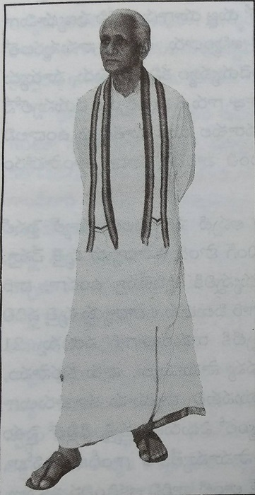
నాకు ఆరోగ్యసంపదనిచ్చి ప్రకృతి వైద్య మర్మములనెరిగించి ఆదరణతో, ఆప్యాయతతో నా జీవనగతిని సమాజసేవకు సహకరించే రీతిగా మలచిన గురువరేణ్యులు
డా.వి.వి. రామరాజుగారికి ఈ ఆసనాలు - ఆరోగ్యానికి శాసనాలు గ్రంథాన్ని వినమృడనై అంకితం గావిస్తున్నాను.
- డా. మంతెన సత్యనారాయణరాజు
ధన్వంతరీ సమ వైద్యులు
డా.వి.వి. రామరాజుగారి జీవిత సంగ్రహం
డా. వేగిరాజు వెంకట రామరాజు గారు 1913 సంవత్సరం జూలై నెల 2వ తేది, గుంటూరు జిల్లా బాపట్ల తాలూకాలో యజ్ఞ యాగాదులు చేసి పుణ్యభూమిగా ప్రసిద్ధి చెందిన మర్రిపూడి అనే గ్రామంలో జన్మించారు. అనవత నామస్మరణతో నిష్టాగరిష్ఠులైన శ్రీ వేగిరాజు కోటంరాజు, ఆదెయ్యమ్మల కనిష్ఠ పుత్రుడు. సూర్యుడు ఉదయించగానే కాంతి ప్రసరించినట్లు రామరాజు గారు 8 సంవత్సరాల వయస్సులోనే మాంసాహారం మానవ ఆహారం కాదని, జీవరాశుల యెడ భూతదయ ఉండాలని మాంసాహారం మానివేసి, పెద్దలను ఎదిరించి వారి చేత కూడా మాంసాహారం మాన్పించిన మానవతావాది.
విద్య అంటే మక్కువ ఎక్కువ. కాని అప్పటి పరిస్థితులలో స్కూల్ ఫైనల్ చదివి టీచర్ గా బ్రిటిష్ వారి స్కూల్ లో ట్రైనింగ్ పొంది ఉపాధ్యాయ వృత్తి చేస్తూ, చుట్టుప్రక్కల అనేక పాఠశాలల యొక్క అభ్యున్నతికి కృషి చేస్తూ ఉండగా, వారి అన్నగారైన వైద్యరాజు వేగిరాజు కృష్ణంరాజుగారి పిలుపుకు ఉపాధ్యాయ వృత్తి వదిలి ప్రకృతి వైద్యం చేపట్టడం జరిగింది. అప్పటికి రామరాజుగారి వయస్సు 21 సంవత్సరములు. శ్రీ కృష్ణంరాజు గారు అనన్య సామాన్యులు. వారు కర్రసాము, కత్తిసాము బలప్రదర్శనలు నేర్పి ఎందరో యువకుల్ని వ్యాయామ కళాకారులుగా తీర్చిదిద్దిరి. శ్రీ కృష్ణంరాజు గారు ప్రకృతివైద్యంలో ఎదురులేని వ్యక్తి. ఢిల్లీలో సైతం సంస్కృతంలో ఉపన్యసించిన రోజులలో సామాన్యులేకాక గాంధీజీ, వినోభా, పురుషోత్తందాస్ టాండన్, జమ్నాలాల్ బజాజ్ లాంటి వారిని ఆకర్షించిన ఘనులు. వారి బోధనలతో గ్రామీణ ప్రకృతి చికిత్స ఉద్యమమును చేపట్టి అనేక విచిత్రమైన మొండి వ్యాధులతో పోరాడిన సహజవైద్యులు. రామరాజుగారు ఓసారి ఓ గ్రామాధికారి చావుబ్రతుకుల మధ్య ఉండగా అన్నగారి ఆజ్ఞ మేరకు వెళ్ళి చూసి చనిపోవునని పాకలో వుంచిన అతనిని పొట్టరుద్ది చూసి లోనికి తీసుకొనిపోయి ఎనిమా చేసి మలాశయశుద్ధి చేయించి స్నానం చేయించగా ఓ గంటకి మాట్లాడటం, పాలు త్రాగడంతో చనిపోవునని తలంచిన గ్రామస్థులు బ్రతికిన గ్రామాధికారిని చూసి ఎవరో బాలయోగి వచ్చారట, ఆయన పచ్చివి, పండ్లు తప్ప ఏమీ తినరట, రోగి పొట్టరుద్ది మంత్రంతో బ్రతికించారట అని చెప్పుకుంటూ దర్శనార్థం రామరాజు గారి వద్దకు రాగా రామరాజుగారు నాయనా! ఇది మంత్రం కాదు తంత్రం కాదు నేను అపక్వాహారం తీసుకుంటున్నాను. ప్రకృతిచికిత్స ద్వారా మలాశయశుద్ధి చేసానంతే అని అసలు విషయం చెప్పిన నిరాడంబర జీవి రామరాజు.
అప్పట్లో కలరా వచ్చి ఊళ్ళు ఖాళీచేసి పారిపోయేవారు. ఎక్కడి శవాలు అక్కడ వదిలి బంధువులు, ఆత్మీయులు పారిపోయేవారు. అప్పుడు మన రామరాజుగారు యువకులను ప్రోత్సహించి రోజూ చనిపోయినవారిని పెద్ద గోతులు త్రవ్వించి ఖననం చేసేవారు. బ్రిటిష్ వారు సైతం ఈ దృశ్యం చూసి ఆశ్చర్యపోయేవారు.
రామరాజుగారు కేవలం అపక్వాహారం తింటూ అనగా పచ్చివి, పండినవి తింటూ సుమారుగా 3,800 మైళ్ళు అనగా రమారమి 6000 వేల పై చిలుకు కిలోమీటర్లు సైకిల్ యాత్ర చేస్తూ అనేక ప్రముఖుల దర్శనం చేసారు. అందులో గాంధీగారి దర్శనం ఓ ముఖ్యఘట్టం. ఆ రోజు గాంధీజీ ప్రజాదర్శన సమయం అయిపోయింది. ఇంక ఎవ్వరిని చూడరని ఖరాఖండిగా చెప్పగా రామరాజు గారు చిన్న చీటీ పంపగా దానిని చదివి గాంధీ వీరిని లోనికి పిలిచి, యువకుడివి పచ్చికూరలు ఎందుకు తింటున్నావని అడిగారట, దానికి రామరాజు ఇది మా అన్నగారి ఆజ్ఞ. ప్రకృతిసిద్ధ ఆహారానికి బలమేమిటో తెలియచెప్పాలని ఈ ప్రయోగం! అనగానే గాంధీజీ బేటా తుమ్ అచ్ఛా కామ్ కర్ రహాహై మత్ చోడో అంటూ ఓ పద్యం చదివారట. ఏకసంథాగ్రాహి అయిన మన రామరాజు గారి మనస్సులో ఆ పద్యం ముద్రించ బడినది. అది ఏమిటంటే "నంతహం కామయో రాజ్యం. న స్వర్గం నా పునర్భావం - కామయో దుఃఖతప్తానాం పాణినం ఆర్తినాశనం" దీని అర్థం నాకు రాజ్యం అక్కర లేదు, స్వర్గం అక్కరలేదు, పునర్జన్మ కూడా అక్కరలేదు. కాని కావలసింది ఏమిటంటే దుఃఖంతో బాధపడే వారి బాధలను తొలగించే శక్తి. ఈ వాక్యాలు మన రామరాజుగారు ఇప్పటికీ మరువక బీదవారికి ఉచిత చికిత్స, ఆహారం అందించడం జీవిత ఆశయంగా మలచుకున్నారు. వీరు ఈ రకంగా 7 సంవత్సరములు, అనగా 1936 సంవత్సరము నుండి 1942 సంవత్సరము వరకు అపక్వాహారం మాత్రమే భుజించి దాని మహిమను ప్రపంచానికి చాటారు.
వీరి అన్నగారు కొన్నాళ్ళు బాపట్లలోను, నకిరేకళ్ళు అడవిలోను ప్రకృతి ఆశ్రమాలు స్థాపించారు. వాటి నిర్వహణలోని అనుభవాలు చెప్పుకుంటే చిత్రమైనవి. అప్పుడే వారు రెండు విషయాలు చెప్పారు. 1. ఆకలి అబద్ధం 2. నీరసం పచ్చి అబద్ధం అని. ఇది 50 సంవత్సరాల క్రితం చెప్పిన ప్రామాణికం అని చెప్పారు. ఒక గిరిజనుడికి విరేచనాలు, వాంతులు అవ్వడం వాళ్ళవాళ్ళు తీసుకువచ్చి ఆశ్రమంలో వదిలి వెళ్ళారట. అతనికి మాటలేదు, ఎండిపోయి వున్నాడు. కదలిక లేదు. చికిత్స ప్రారంభించారు. ఒక రోజు రాత్రి అతని పాక నుండి పెద్దగా అలజడి వినిపిస్తే వెంటనే డాక్టరుగారు, కాపలాదారుడు పరుగున వెళ్ళారు. వీరి ఆలోచన - ఈ రోగిని ఏ ఎలుగుబంటో తీసుకుని పోయి వుంటుందని. కాని అక్కడ దీపాలు పెద్దవి చేసి చూడగ అతను మంచం మీద పడివున్నాడు. వెళ్ళి ఏమి జరిగిందని అడుగగా కళ్ళు త్రిప్పడం తప్ప మాట్లాడలేని స్థితి. తెల్లవారాక చూడగా ఓ ఏడు అడుగుల త్రాచుపాము చచ్చిపడి వుంది. అతనిని అడిగినా మాట్లాడలేకపోయాడు. 7, 8 రోజుల తరువాత అతను కోలుకుని ఆ రోజు ఆ పాముని తానే చంపానని తరువాత మళ్ళీ పడిపోయానని చెప్పాడు. ఈ సంఘటన గూర్చి రామరాజుగారు పరిపరివిధాల ఆలోచించి నీరసం, ఆకలి అనునవి మానసికం అని నిర్ణయించుకున్నారు. ఈ రకంగా ఇంకా ఎన్నో అనుభవాల మధ్య 1936 నుండి 1946 దాకా బాపట్ల తాలుకాలో ప్రకృతి గూర్చి గ్రామ గ్రామాలలో ప్రచారం చేసారు.
అన్నగారు కృష్ణంరాజుగారు 1946 సంవత్సరములో పశ్చిమగోదావరి జిల్లా భీమవరంలో ప్రకృతి చికిత్సాలయం స్థాపించి రామరాజుగార్ని అక్కడ వైద్యులుగా రమ్మని పిలవగా దాని నిర్వహణ భారం వహించి ప్రకృతిచికిత్స, దానిలోని సాధక బాధకాలు బాగా అనుభవించి వారి అనుభవాలు నలుగురికి పంచడం ప్రారంభించారు . వీరివద్ద ఎందరో ప్రముఖులు చికిత్స పొందారు. సినీ ప్రముఖులు ఎల్. వి. ప్రసాద్ గారు మొదలు బజాజ్ కుటుంబీకులు వరకు వున్నారు. వారి చిన్న కుమారునికి అన్నగారి పేరు పెట్టి, అతనికి 5 1/2 సంవత్సరాలు ప్రకృతిచికిత్స శిక్షణ ఇప్పించి 1987 సంవత్సరములో చికిత్సాలయ బాధ్యతలు అప్పజెప్పి ఇప్పుడు 89 సంవత్సరాల వయస్సులో యోగా శిబిరాలు నిర్వహిస్తూ జిల్లాలో 1200 మంది రెవెన్యూ సిబ్బందికి, 140 మంది P.E.T.లకీ యోగా నేర్పించడం, ఇతర రాష్ట్రాలు అంటే తమిళనాడు, కర్ణాటక, ఒరిస్సాల నుండి వచ్చే పేషెంట్స్ కు ఆరోగ్యన్నందిస్తూ అనేక యోగా, ప్రకృతి చికిత్సా శిబిరాలు నిర్శహించడం ఈ 89 సంవత్సరాల వయస్సులో అనితర సాధ్యం. అది రామరాజుగారికే సాధ్యం అని అనడంలో అతిశయోక్తి లేదు.
అనేకులు వీరిని వారి అనుభవాల్ని పుస్తక రూపంలో పెట్టమన్నప్పుడు పుస్తకం మార్గదర్శికాగలదు గాని గమ్యాన్ని చేర్చలేదు. పుస్తకాన్ని చూచి వైద్యాన్ని ఆచరించి దుష్పపరిణామాన్ని చవిచూస్తే శాస్త్రం దెబ్బతింటుందనే వారు. కాని మిత్రులు, కుటుంబ సభ్యులు బలవంతం చేయగా వారి అనుభవాలతోపాటు అసలు ప్రకృతికి మూలాధారం ఏమిటి? వాటిని ఎలా ఉపయోగించుకోవాలి? అనే విషయాలు పొందు పరుస్తూ కొన్ని పుస్తకాలు వ్రాయడం జరిగింది. వారు ప్రచారానికి పూర్తి వ్యతిరేకులు. పేపరు వారు, టి. వి. వారు, రేడియో వారు గాని ఆయన్ని ప్రచారం కోసం అడిగితే ప్రజల ఆమోదమేగాని ప్రచారం నాకు వద్దు అన్న నిరాడంబర జీవి. ప్రకృతి వైద్యశాస్త్రాన్ని ఔపోసనపట్టిన రామరాజుగారు తన గురించి చెప్పిన వాక్యం వింటే ఆశ్చర్యం కలుగుతుంది. నేను ప్రకృతి వైద్యం మొదలు పెట్టిన 5, 6 సంవత్సరములలో ప్రకృతి వైద్యంలో మనకు యిక ఎదురులేదు. సమస్తం తెలిసిపోయింది. మనం చెప్పింది వేదం అవుతుంది అనుకున్నాను. యింకా 15 సంవత్సరములు గడిచిన తరువాత ప్రకృతి వైద్యంలో యింకా కొంచెం తెలుసుకోవాల్సి ఉన్నదేమోననిపించింది. ఇంకో 20 సంవత్సరము లు గడిచేసరికి ప్రకృతివైద్యంలో ఇంకా చాలా నేర్చుకోవాల్సి యున్నదేమోనని అనిపించింది. 60 సంవత్సరములు వైద్యానుభవం వచ్చిన తరువాత తనకి ప్రకృతి వైద్యంలో ఏమి తెలియలేదనిపించిందట. దీనిని బట్టి వారి అసాధారణ వ్యక్తిత్వం, నిరాడంబరత వ్యక్తమౌతుంది. వీరు 1987 సంవత్సరములో చిత్తూరుజిల్లా ఏర్పేడు ఆశ్రమం మళయాళ స్వాముల వారిచే "యోగాచార్య" అనే బిరుదుతో సత్కరింపబడినపుడు ఆ స్వామివారు అన్న వాక్యములు రామరాజుగారి విజ్ఞానాన్ని చాటుతాయి. మేము మతం అన్నా యోగం అన్నా సరి అయిన అవగాహనతో లేమని, రామరాజుగారి వద్ద యోగ నేర్చుకున్నాక ఆయన ఉపన్యాసధోరణి విన్నాక తెలుసుకున్నాం. మతంలో పూర్తిగా వైద్యశాస్త్రాన్ని ఇనుమడింపచేసిన ఆయన అవగాహనాజ్ఞానం అమోఘం అన్నారు.
1936 సంవత్సరములో "లూయి కూనె" అనే మహాశయుని జలచికిత్స విధానం అనే గ్రంథానికి శ్రీ ద్రోణంరాజు సత్యనారాయణగారి అనువాద గ్రంథం జీర్ణావస్థలో యుండగా దానిని 1000 పేజీల గ్రంథంగా మన రామరాజుగారు వ్రాసి, అన్నగారికి అందించడం వలనే ఆయనకు ప్రకృతిచికిత్సపై మక్కువ వచ్చిందని అంటారు. ఆయన ఈరోజుకీ ఆశ్రమ పనులే గాక వారిబట్టలను వారే ఉతుక్కుని ఆరవేయుట, వారి గిన్నెలను వారే కడుక్కొనుట, ప్రయాణంలో వారి సామానులు వారే మోసుకోవడం మొదలగునవి వారి నిత్యజీవిత వ్యాయామం యొక్క అవగాహనను తెలియచేస్తుంది. వారు ప్రకృతి చికిత్సలో చేసిన అద్భుతాలు చెప్పాలంటే అంతులేదు. పూర్తి శాస్త్ర పరిజ్ఞానంతో పరీక్షలు నిర్వహించి రోగనిర్ధారణ చేసి ఇక లాభం లేదు అనుకున్న రోగులను 20, 30 సంవత్సరములు బ్రతికించిన దిట్ట. వారికి కేంద్ర ప్రభుత్వం వారు రోగాలమీద "రీసెర్చ్" చేయడానికి 1980 నుండి 1983 వరకు 1985 నుండి 1990 వరకు 1992 నుండి 1995 వరకు సంవత్సరానికి లక్ష రూపాయలు గ్రాంట్ ఇవ్వగా M.B.B.S డాక్టరును ఉద్యోగిగా వేసుకుని లేబరెటరీ స్థాపించి పూర్తి సైంటిఫిక్ పరిజ్ఞానంతో రీసెర్చ్ చేసిన పురాతన ఆధునిక వైద్యులు మన వేగిరాజు రామరాజుగారు. ఎవరు ఏమి అడిగినా, ఏ సమయములోనైనా, వైద్య సలహాలు విసుగు విరామం లేక చెబుతూ వుంటారు. ఎప్పటికి వారి ఆసన స్థానం బీదరోగుల ఎదురుగా చెట్టుక్రిందనేగాని స్పెషల్ వార్డు వైపు వారు రారు. వారి దృష్టిలో ఎంతపెద్దలైనా, ఎంతచిన్నలైనా రోగం ముందు అందరు సమానులే!
ఎన్నో వేలమందికి రోగనిర్మూలన చేసి ప్రకృతి వైద్యాన్ని అరటిపండు ఒలచినంత సులభముగా అవగాహన కలిగించి మనోవాక్కాయ కర్మలందు ఏకత్వము కలిగి, వారి జీవితమంతా ప్రకృతి వైద్య విద్యావ్యాప్తి కోసమే అంకితం గావించిన మహాత్ములు రామరాజుగారు. అనారోగ్యముతో వారి వైద్యాలయమునందు చేరిన నాపై అవ్యాజ అనురాగము కురిపించి ప్రకృతి వైద్య విద్యపై నాకు కూలంకషముగా అవగాహన కలిగించి నన్ను సంపూర్ణారోగ్యవంతునిగా చేసి, నా జీవిత పంథాను సమాజక్షేమానికి ఉపయోగపడే వైద్యునిగా ఊపిరిపోసి, నాలోని సేవాభావానికి మరుమల్లెబాటను నిర్మించి, మర్చిపోలేని ప్రేమానురాగాలను అందించిన గురువర్యులు, ధన్వంతరీ సమవైద్యులు, యోగాచార్య డా.వి.వి. రామరాజుగారి పాదపద్మములకు ఈ గ్రంథాన్ని వినమ్రంగా అంకితం గావించడం నా భాగ్యంగా తలుస్తూ ఈ సందర్భంగా వారికి నా హృదయపూర్వక నమస్సుమాంజలులు తెలియచేసుకుంటున్నాను.
- మంతెన సత్యనారాయణరాజు
తొలిపలుకు
భగవంతుడు మానవాళికి మేలుచేయాలనుకున్నప్పుడు మానవజాతికి మార్గదర్శకులుగా కొంతమందిని సృష్టిస్తాడు. సత్యనారాయణరాజుని చూస్తే నాకు అలానే అనిపిస్తుంది. మనస్సు, మాట, మనుగడ (ఆచరణ) ఒకటిగా జీవిస్తూ, పరహితమే తన వ్రతముగా తలుస్తూ అహర్నిశలు శ్రమిస్తున్న డా.రాజు నాకు ఎంతో ఆప్తుడు. వారిపై నాకు పుత్రవాత్సల్యం కలదు.
దశాబ్దాలుగా ప్రకృతివైద్యంపై అవగాహన గల నేను, సత్యనారాయణరాజు ఈ విధానం ద్వారా వేలమందిని ఆరోగ్యవంతులను గావించడం గమనించి, ఆహారవిహారాలతోపాటు ఆసనాలు కూడా ఆరోగ్యానికి ఎన్నో విధాలుగా సహకరిస్తాయని తలచి, రెండు సంవత్సరాలక్రితం సత్యనారాయణ రాజుని ఆసనాలపై ప్రజలందరికి పరిపూర్ణ అవగాహన కలిగించే విధంగా ఒక పుస్తకం రాయమని కోరాను. వీరినే ఎందుకు కోరానంటే - సత్యనారాయణరాజు చెబుతున్న ఆసనాల విధానం ఎంతో పరిపూర్ణమైనది, శాస్త్రబద్ధమైనది, ప్రభావ వంతమైనదిగా నేను స్వయంగా గమనించాను. అది ప్రజలందరికీ అందితే శారీరక, మానసిక ఆరోగ్యాన్ని అందరూ ఇంట్లోనే పొందగలరని నా భావన. ఆ ఈపిత్సం ఇన్నాళ్ళకు ఈ ఆసనాలు - ఆరోగ్యానికి శాసనాలు గ్రంథం చూసిన తరువాత ఈడేరినది.
ఈ గ్రంథప్రతి చదివిన తరువాత - ఆసనాల వివరణ, ఆసనాల మధ్య విశ్రాంతి ఎందుకు తీసుకోవాలి, వ్యాయామాలకు ఆసనాలకు తేడా తదితర విషయాలపై సంపూర్ణ అనుభవంతో, సశాస్త్రీయంగా సత్యనారాయణరాజు రచించిన తీరు అద్భుతమనిపించినది. ఈ గ్రంథం ఆరోగ్యాభిమానులందరికీ ఉపయుక్తమైనది. ఒక్కసారి చదివితే చాలు ఆచరించడం ప్రారంభించాలనిపిస్తుందనడంలో ఏ మాత్రం అతిశయోక్తి లేదు.
భౌతిక సంపదలతో అలరారుతున్న నేటి మానవుడు అనునిత్యం అనేక మానసిక సమస్యలకు గురి అవుతూ తద్వారా అనారోగ్యాన్ని అశాంతిని కొనితెచ్చుకుంటున్నాడు. ఇట్టి సమస్యలన్నింటికి సరియైన సమాధానం ఈ ఆసనాలు - ఆరోగ్యానికి శాసనాలు. కాబట్టి ఆరోగ్యాభిలాషులందరు ఈ అవకాశాన్ని సద్వినియోగం చేసుకోగలరని నా ఆకాంక్ష.
ప్రతిఫలాపేక్షలేని ప్రజారోగ్యసేవనే పవిత్రకార్యంగా తలచి యజ్ఞార్థంగా తన జీవితాన్ని మలచుకొని అవిరామంగా కృషిసాగిస్తున్న సత్యనారాయణరాజుకి అభినందనలు హృదయపూర్వకంగా తెలియజేస్తూ.... ఇంకా అనేక ఆరోగ్యగ్రంథములు వారి నుండి వెలువడాలని మనస్ఫూర్తిగా ఆశిస్తున్నాను.
సిహెచ్. వి.పి . మూర్తిరాజు,
స్వాతంత్య్ర సమరయోధులు,
గాంధేయవాది.
నివేదన
ప్రియమైన ఆరోగ్యాభిలాషులందరికీ నా హృదయపూర్వక నమస్కారములు.
నాకు చిన్నతనం నుండే ఛాతీ నొక్కుకున్నట్లు, గుండె ఎత్తుగా (గుండె జబ్బు ఉన్నవారికి ఉన్నట్లు) ఉండేది. 18 సంవత్సరాల వయస్సు వచ్చినా ఎత్తు ఐదు అడుగులు మించి పెరగలేదు. నాలో ఈ మార్పులను గమనించిన మా నాన్నగారు 1985లో నన్ను కాకినాడ, ప్రకృతి వైద్య నిమిత్తం డా. వి. వి. రామరాజు గారి వద్దకు పంపారు. డా. వి.వి. రామరాజుగారు నాకు ఆసనాలను నేర్పి, ఆహార నియమాలను నాతో ఆచరింపజేసారు. నేను వాటిని 5, 6 నెలలపాటు ఆచరించి 5 అంగుళాల ఎత్తు పెరగడమేకాకుండా, ఛాతీకూడా విశాలంగా మారింది. అక్కడ నుండి ఆసనాలపై, ఆహార నియమాలపై నాలో ప్రత్యేకమైన శ్రద్ధ ఏర్పడి, వాటిపై ఎక్కువ ఆలోచనపెట్టి తెలుసుకోవడం ప్రారంభించాను. ఆసనాలను అడిగిన వారికి, తెలిసిన వారికి నేర్పడం కూడా చేసేవాడిని. 1994 నుండి ఆసనాల క్లాసులు పెట్టి శిక్షణ ఇవ్వడం ప్రారంభించాను. ప్రకృతి విధానాన్ని ఆచరించే రోగులకు ఆహార నియమాలతోపాటు ఆసనాలను కూడా నేర్పించడం చేసేవాడిని. ఈ విధముగా ఆసనాలపై నాకు కొంత అనుభవం పెరగడం జరిగినది.
ఈ రోజులలో ఆసనాలను నేర్పే తీరు చూస్తూ వుంటే ఆసనాలను వ్యాయామాలవలే చేయిస్తున్నారు. వారికి వచ్చిన భంగిమలను 20, 30 రకాలు ఒకదాని తర్వాత ఒకటి పెట్టడం, తీసివేయడం చేస్తున్నారు. ఆసనాలకు, వ్యాయామాలకు అసలు ఉన్న భేదం ఏమిటనిగానీ, ఎంతసేపు ఆసనం వేయాలన్న విషయంగానీ, ఆసనాన్ని తీసాక ఏమిచేయాలన్నది గానీ, ఆసనంలో మనస్సు స్థితి ఎలా ఉండాలన్నదిగానీ మొదలగు విషయాలపై సరైన అవగాహన కలిగించడంలేదు. ఏ ఆసనాల పుస్తకం చూసినా ఎన్నో రకాల ఆసనాల బొమ్మలతో, రకరకాల శ్లోకాలతో, అర్థం అయ్యి కాని భాషాపాండిత్యంతో నిండి వుంటున్నాయి. ఆసనాలంటే ఏమీ తెలియని కొత్తవారికి అన్ని రకాల భంగిమలు చూసే సరికి ఇవన్నీ మన వలన ఎక్కడ అవుతాయి, ఎక్కడ వంగుతాయిలే అనే భయం కలిగి ముందే ఆసనాలపై వ్యతిరేకత వస్తుంది. మన శరీరం ఆసనాలకు పనికిరాదని గట్టిముద్ర వారిలో పడిపోతున్నది. ఈ కారణంచేత ఎక్కువ మంది ఆసనాలకు దూరం అవుతున్నారు. ఈ లోటును ప్రజలకు తీర్చడానికి అన్ని విషయాలను పూర్తిగా వివరిస్తూ, తేలికైన భాషలో వ్రాస్తూ అందరికీ అతిముఖ్యమైన పదిహేనురకాల ఆసనాల గురించే నేను వివరించడం జరిగింది. ఎంతలావు వున్నవారైనా, కాళ్ళు, నడుము బిగిసిన వారైనా తేలికగా ఆసనాలను చేసేతీరును తెలియజేయడం జరిగింది. ఆసనాలు చేసే వ్యక్తికి కలిగే ఎన్నో రకాల సందేహాలకు పూర్తి వివరణను అందించడానికి వ్రాసినదే ఈ "ఆసనాలు - ఆరోగ్యానికి శాసనాలు" అనే పుస్తకం.
ముఖ్యంగా లావు వున్నవారు ఆసనాలకు పనికిరాము అనుకుంటారు. లావు వున్నవారికే ఆసనాలు ఎక్కువ ఫలితాన్ని అందిస్తాయి అనే విషయాన్ని స్పష్టంగా తెలియజేసాను. లావు వున్న వారి కొరకు ప్రత్యేకమైన భంగిమను వేసి, ఆసనములో ఎంతవరకు వంగితే అక్కడే ప్రయోజనం ఎందుకు వస్తుందో వివరించడం జరిగింది. అలాగే మెడనొప్పులు, నడుము నొప్పులు, కాలుజాలు మొదలగు ఇబ్బందులువున్న వారికొరకు ప్రత్యేకమైన ఆసనాలను అందించడం జరిగింది. ఏ ఇతర వ్యాయామాలలో గాని, వాకింగ్ లో గాని, శారీరకశ్రమలోగాని పొందలేని ప్రత్యేకమైన లాభాన్ని ఒక్క ఆసనాలద్వారానే మనిషి అలసటలేకుండా, కదలకుండా కూర్చుని ఎలా పొందవచ్చో వివరించడం జరిగింది.
ఈ పుస్తకం చదివిన తరువాత ఆసనాలపై సంపూర్ణ అవగాహన కలిగి, ఆచరించాలనే ఆతృత పెరిగి మీ దినచర్యలో భాగంగా చేసుకుంటారని నా నమ్మకం. ఆ నమ్మకాన్ని వమ్ము చేయరని మనస్ఫూర్తిగా ఆశిస్తూ.........
సుజన విధేయుడు,
మంతెన సత్యనారాయణరాజు
కృతజ్ఞతలు
ఒక పుస్తకం రాయాలంటే అది ఒక యజ్ఞం. అదీ ఆరోగ్యానికి సంబంధించిన పుస్తకం అంటే ఒక మహాయజ్ఞం. దానికి ఎంతో సామర్థ్యం ఉండి, సహాయ సహకారాలు లభించాలి. అదీ కాకుండా కేవలం ఒకే నెలలో (1-5-2001 నుండి 31-5-2001 వరకు) నాలుగు ఆరోగ్య గ్రంథాలను రాయాలని సంకల్పించాను. ఆ సంకల్పం ఇలా వాస్తవ రూపం దాల్చడం వెనుక కొంతమంది సహృదయుల నిరంతర కృషి, సహాయ సహకారాలు నేను ఎన్నటికీ మరువలేను. ఈ ఆరోగ్య జీవన విధానాన్ని ప్రజలకు అందించాలనే నా తపనకు తోడుగా నిలిచి నేనున్నానంటూ మా కోసం విజయవాడ, కృష్ణానదీ తీరాన చక్కని తోటల్లో, ఆహ్లాదకర వాతావరణంలో ఒక చక్కని కుటీరాన్ని ఏర్పాటుచేసి రోహిణీకార్తె మండుటెండల ప్రభావం మాపై పడకుండా గ్రంథరచన నిరంతరాయంగా సాగాలనే ఆకాంక్షతో సకల సదుపాయాలను స్వయంగా పర్యవేక్షించి, ఈ నెల రోజులు మాకు ఏ ఆటంకాలు కలుగకుండా ఈ యజ్ఞం నిర్విఘ్నంగా సాగించడానికి ప్రధాన కారకులైన సహృదయ సంపన్నులు శ్రీ గోకరాజు గంగరాజు గారికి (M.D. Laila group of Companies, VJW) నా హృదయ పూర్వక కృతజ్ఞతలు.
నా ఈ జీవన గమనంలో అనుక్షణం మేలైన సలహాలనిస్తూ, ఆసనాలపై ఒక పుస్తకం వ్రాయమని నన్ను ప్రోత్సహించి, తొలిపలుకును ముచ్చటగా వ్రాసి యిచ్చిన ప్రముఖ స్వాతంత్య్ర సమరయోధులు, గాంధేయవాది శ్రీ సిహెచ్.వి.పి. మూర్తిరాజుగారికి,
తనకు తానుగా అభిమానంతో ఈ పుస్తకాల ప్రూఫ్ రీడింగ్ ను సమర్థవంతంగా నిర్వర్తించిన శ్రీ తురుమెళ్ళ కోటేశ్వరరావు గారికి, గ్రంథరచనా సమయంలో నా సహవాసియై ఫెయిర్ కాపీలందించిన చిరంజీవి వాకాడ దుర్గాప్రసాద్ కు,
అతి తక్కువ సమయంలో ఈ పుస్తక ప్రచురణ జరగటానికై ఈ కార్యనిర్వహణను తమ స్వకార్యంగా భావించి సకాలంలో ముద్రణ పూర్తిగావించిన ప్రింటింగ్ ప్రెస్ యాజమాన్యానికి, సిబ్బందికి మరియు ముఖ్యంగా శ్రీ శివాజీరాజు గారికి,
ఈ విధానాన్ని ఆచరించి, ఆరోగ్యాన్ని పొంది, అడిగినదే తడవుగా శరపరంపరగా ఉత్తరాల ద్వారా, ఫోనులద్వారా వారి అనుభవాలను అందించిన ఆరోగ్యాభిమానులందరికీ నా మనఃపూర్వక కృతజ్ఞతాభినందనలు తెలియ జేసుకుంటున్నాను.
మంతెన సత్యనారాయణరాజు
1. ఆసనాల రహస్యం
- శరీరం స్థిరంగా, సుఖంగా ఉండే తీరు - అదే ఆసనమని తెలుసుకోవాలి మీరు
- ఆసనాలతో ఆరోగ్యం చేకూరుతుంది - శరీరానికి, మనసుకీ సమన్వయం ఏర్పడుతుంది
- పేరుకున్న మలినాలు తొలగు - గ్రంథుల పనితీరు మెరుగు
- ఉంటే అవయవాల మధ్య సమన్వయం - అవుతుంది ప్రాణశక్తి సరిగా వినిమయం
- ఆసనాలు వేస్తే మనసు జాగృతం - శరీరమౌతుంది ఆరోగ్యవంతం
శరీరం కదలకుండా, సుఖంగా ఉండే తీరుని ఆసనమని అంటారు. ఆసనాలు వేయడం అంటే శారీరకమైన వ్యాయామం లాంటిదేనని అనుకుంటూ ఉంటారు. వ్యాయామం శరీరాన్ని ప్రభావితం చేసినట్లే ఆసనాలు కూడా శరీరంపైన పూర్తి ప్రభావాన్ని చూపిస్తాయి కాని ఆసనాలు అనేవి కేవలం శరీరంతో చేసేవికాదు. ప్రతి మనిషి శరీరం, మనస్సు, చైతన్యల యొక్క కలయిక. ఈ మూడు కలిసి ఉన్నదే ఒక మనిషి స్వరూపం. ఆసనాల యొక్క ముఖ్య ఉద్దేశం, ఈ మూడింటిని సమన్వయపరిచి దాని ద్వారా సమతుల్యాన్ని సాధించడం. ఆసనాలు అనేవి కేవలం శరీరంతోటి చేసేవే అయితే మనం ఆసనాలు వేస్తూ ఇంట్లో విషయాలు, ఆఫీసు విషయాలు, లేదా ఇతర విషయాలు ఏదో ఒకటి ఆలోచిస్తూ చెయ్యవచ్చు. కాని ఆసనాలు వెయ్యాలంటే మనసు యొక్క పూర్తిదృష్టి శరీరంపైన ఉండాలి. ఇతర విషయాలు ఏమీ మనసులోకి రాకూడదు. ఆసనంలో మనస్థితి ఎలా ఉన్నదీ, శ్వాస ఎలా నడుస్తున్నదీ, కండరాలు ఏవిధంగా పనిచేస్తున్నదీ ఈ విషయాలపైనే పూర్తిగా మనసుని లగ్నం చేయ్యాలి. అలా చేసినపుడే ఆసనాన్ని సరియైన రీతిలో చేసినట్లు. వ్యాయామం చేసేటప్పుడు మనసుని లగ్నం చెయ్యాల్సిన అవసరం ఉండదు. అందుచేత దానివలన శరీరానికి కొంత వరకే ప్రయోజనం ఉంటుంది.
ఒక మనిషి మానసికంగా, శారీరకంగా అనారోగ్యంగా ఉన్నప్పుడు జీవితంలో ఏ పనినీ హుషారుగా చెయ్యలేడు. అనుకున్నదీ సాధించలేడు. మానసికంగా, శారీరకంగా ఆరోగ్యంగా ఉన్నప్పుడే శక్తివంతంగా, సమర్థవంతంగా పనిచెయ్యగలడు. ఆనందంగా ఉండడం, ఆధ్యాత్మిక ఉన్నతిని సాధించడం సాధ్యమవుతుందన్న విషయాన్ని కొన్నివేల సంవత్సరాల క్రితమే మన పూర్వీకులు గ్రహించబట్టి ఆసనాలు అనే పద్ధతిని కనిపెట్టడం, దానిని ఆచరించి సత్ఫలితాలను సాధించడం జరిగింది. పూర్వకాలంలో మందులు కనిపెట్టబడలేదు కాబట్టి శరీరానికి అనారోగ్యం రాకుండా ఉండాలంటే మనలో ఉన్న శక్తినే ఏవిధంగా ఉపయోగించుకుంటే రాకుండా కాపాడుకోగలమని ఆలోచించేవారు కాబట్టి శరీరాన్ని ఆరోగ్యంగా తీర్చిదిద్దుకోగల ఉపాయాలను కనిపెట్టగలిగారు. అవి ఈనాటికీ తిరుగులేని విధముగా ఆచరణలో సత్ఫలితాలను ఇస్తున్నాయి. ఆధునికి వైద్య పద్ధతులన్నీ ఈ మధ్య తెలుసుకున్నవి, తక్కువ అనుభవంతో చెప్పేవి. కాని ఆసనాలు అనేవి కొన్ని వేల సంవత్సరాలుగా ఎంతో పరిశోధన చెయ్యబడి శారీరక, మానసిక ఆరోగ్యాన్ని, ఆధ్యాత్మిక అభివృద్ధికి ఒక నిర్ధిష్టమైన పద్ధతిగా రూపొందించబడినవి. అప్పటి మనిషికి, ఇప్పటి మనిషికి ఆలోచనలలో, జీవన విధానంలో ఎంతో తేడా ఉన్నప్పటికీ ఆసనాల అవసరం ఒకే విధముగా ఉంది. ఈ ఆసనాలు శరీరానికి ఆరోగ్యాన్నివ్వడమే కాకుండా ఉన్నత చైతన్యాన్ని పొందడానికి దోహదం చేస్తాయి. అనారోగ్యంతో, నొప్పులతో, బాధలతో, మానసికమైన రుగ్మతలతో జీవించే మనం అటువంటి ఉన్నతమైన స్థితిని పొందడమనేది ఊహించలేని విషయం. ముందు మన కర్తవ్యం శారీరకమైన, మానసికమైన బాధలనుండి బయటపడటం. ఉన్నతస్థితికి వెళ్ళడమనేది తరువాత సంగతి. ఆసనాలు సాధన చెయ్యడం ముఖ్యంగా ఈ బాధలనుండి బయటపడటం కోసమే. ఆసనాలు శరీరంలోని ప్రతి కీలును బిగుతు లేకుండా సులువుగా ఉండేటట్లు చేస్తాయి. కండరాలకు శక్తినిచ్చి, అన్ని అవయవాలకు చక్కగా రక్తప్రసరణ అయ్యేటట్లు చేస్తాయి. శరీరంలోని వివిధ భాగాల్లో చేరి నిలవ ఉన్న టాక్సిన్స్ ను, విషాలను తొలగిస్తాయి. శరీరంలోని అన్ని అవయవాలకు చక్కని మర్దననిస్తాయి. శరీరానికి, మనసుకి సమన్వయాన్ని ఏర్పర్చి మనసుకి విశ్రాంతినిస్తాయి. శరీరం, మనసు అనేవి విడదీయలేనివి. ఎప్పుడైతే శారీరకమైన ఆరోగ్యం పూర్తిగా వస్తుందో అప్పుడు మనసులో కూడా మంచిమార్పులు వస్తాయి.
మానసికమైన ఆందోళన, శారీరకంగా బలహీనంగా ఉండటం ఈ రెండూ అనేకరకాలైన జబ్బులకు కారణమవుతాయి. శరీరం తనకితనే వైద్యం చేసుకోగల అద్భుతమైన శక్తిగలది. సహజంగా శరీరానికి ఉండే శక్తితో జబ్బులు రాకుండా నిరోధించుకోగల్గుతుంది. దానినే మనం రోగనిరోధకశక్తి అంటున్నాము. ఆసనాల వలన మనసులో రోగనిరోధకశక్తి పెరుగుతుంది. మన శరీరంలో మలినపదార్థాలు పేరుకొని ఉన్నప్పుడు రోగకారకాలైన బాక్టీరియాలు, విషాలు పెరగడానికి అవకాశం ఏర్పడుతుంది. ఆసనాల ద్వారా శరీరంలో పేరుకున్న మలినాలు తొలగింపబడతాయి. మన శరీరంలో ముఖ్యమైన గుండె, ఊపిరితిత్తులు, కిడ్నీల లాంటి అవయవాలు సరిగా పనిచేయలేనపుడు కొన్ని రకాలైన రోగాలు వస్తాయి. ఆసనాలు ఈ అవయవాలన్నింటిని సక్రమంగా, శక్తివంతంగా పనిచేసేలా చేస్తాయి. నరాలు సరిగా పనిచెయ్యకపోవడం వలన కూడా మనకు రకరకాల ఇబ్బందులు కలుగుతాయి. ఆసనాలు నరాలను బలంగా చేసి, నరాలపైన ఒత్తిడి లేకుండా అన్ని అవయవాలకు నరాలద్వారా సంకేతాలు సరిగా అందేలా చేస్తాయి. జబ్బులకు మూలకారణమైన విపరీతమైన మానసిక ఒత్తిడులనుండి ఆసనాలు మనల్ని కాపాడతాయి.
మన శరీరంలో ఎండోక్రైన్ గ్రంథులనబడే హార్మోనులను ఉత్పత్తిచేసే గ్రంథులున్నాయి. ఈ హార్మోనులు శరీరంలోని వివిధ అవయవాల పనితీరుని నియంత్రిస్తూ ఉంటాయి. కొన్ని రకాల హార్మోనులు మనసుని కూడా ప్రభావితం చేస్తాయి. అలాగే మానసికస్థితిని బట్టి ఈ గ్రంథులు పనిచెయ్యడంలో హెచ్చు తగ్గులు వస్తూ ఉంటాయి. ఉదాహరణకి ఎడ్రినలిన్ అనే హార్మోను కోపం, భయం, ఆందోళన ఉన్నప్పుడు రక్తంలోనికి ఎక్కువగా విడుదల అవుతుంది. దీని కారణంగా గుండె వేగంగా కొట్టుకోవడం, శ్వాసక్రియ పెరగడం, కండరాలు సంకోచించుకుని టెన్షన్ కి లోనుకావడం జరుగుతుంది. అలాగే మనల్ని ప్రమాదం నుండి కాపాడవలసి వచ్చినపుడు కూడా ఎడ్రినలిన్ ఎక్కువ రక్తంలోనికి స్రవించి మనల్ని మనం రక్షించుకునే విధముగా శరీరంలో రియాక్షన్ కలిగిస్తుంది. ఉదాహరణకి మనం రోడ్డుమీద పరధ్యానంగా వెళ్తున్నప్పుడు హఠాత్తుగా ఒక లారీ మనకి ఎదురుగా వచ్చినపుడు మనం అప్రయత్నంగా ప్రక్కకి దూకుతాం. ఇలా మనం దూకేలా చేసేది ఎడ్రినలిన్. పిల్లలు ఎదిగే వయసులో థైరాయిడ్ హార్మోనులు ఎక్కువగా విడుదల కావడం వలన పెరుగుదల సాధ్యమవుతుంది. స్త్రీలలో అండాలు విడుదల కావడానికి, గర్భం ధరించడానికి ప్రతిపనికి హార్మోనుల అవసరం ఉంటుంది. ఈ హార్మోనుల పని శరీరంలో ఒకటని చెప్పడానికి లేకుండా ఎన్నోరకాలుగా, ఎన్నో రూపాలలో ఉంటుంది. ఏ అవయవము ఎప్పుడు ఎంత వేగంగా పనిచెయ్యాలో, ఎప్పుడు నెమ్మదిగా పనిచెయ్యాలో అనేది కూడా హార్మోను ఆధీనంలోనే ఉంటుంది. మన ఆరోగ్యం సరిగా ఉండాలంటే, శరీరం సక్రమంగా పనిచెయ్యాలంటే ప్రతి ఎండోక్రైన్ గ్రంథి నుండి విడుదలయ్యే హార్మోనులు ఏ సమయానికి ఎంత అవసరమో ఆ సమయానికి అంత మోతాదులోనే రక్తంలోనికి విడుదల కావాలి. ఈ విధంగా జరగనపుడు శరీరంలో రకరకాల మార్పులు రావడమే కాకుండా మానసికమైన మార్పులు కూడా వస్తాయి. ఆసనాలు ఈ ఎండోక్రైన్ గ్రంథుల పనితీరులో హెచ్చుతగ్గులు లేకుండా నియంత్రిస్తాయి. ఆసనాల వలన కలిగే ముఖ్యమైన ప్రయోజనాలలో ఇది ఒకటి. ఎండోక్రైన్ గ్రంథులు పనిచెయ్యక పోవడానికి ముఖ్యమైన కారణం శరీరానికి ఎక్కువ శ్రమని కల్గించడం, శరీరాన్ని సరియైన రీతిలో ఉపయోగించకపోవడం, మానసికమైన ఒత్తిడులు వీటివలన గ్రంథులకు నరాల సంకేతాలు సరిగా అందకపోవడం, ఆక్సిజన్ తో నిండిన రక్తం సరిపడినంత అందకపోవడం జరుగుతుంది. అందుచేతనే వాటి పనితీరులో మార్పువస్తుంది. ఆసనాలు ఈ ఇబ్బందులన్నింటినీ సవరించి నెమ్మదిగా అవి సరిగా పనిచేసేలా దారిలో పెడతాయి. మన శరీరంలోని ప్రతి అవయవము ఒకదానితో ఒకటి సమన్వయముగా పనిచేసినపుడే ఆరోగ్యమనేది సాధ్యమవుతుంది. వీటి మధ్య సమన్వయం లేనప్పుడు శరీరానికి పనిచేసే సామర్థ్యం తగ్గిపోతుంది. అందుచేత అనారోగ్యం ఏర్పడుతుంది. ఆసనాలవలన అన్ని అవయవాలకు సమన్వయం ఏర్పడుతుంది.
మన శరీరం చుట్టూ కంటికి కనపడని శక్తివలయం ఒకటి ఉంటుంది. దీనినే శక్తికవచము అని కూడా అనవచ్చు. దీనినే యోగశాస్త్రంలో "ప్రాణమయకోశము" అంటారు. ఏనాడో మన యోగశాస్త్రంలో చెప్పబడిన ఈ శక్తివలయము గురించి తేలికగా తీసిపారవేయడానికి లేకుండా, రష్యాలోని కొంతమంది శాస్త్రజ్ఞులు దీనిని కిర్లియన్ ఫొటోగ్రఫీ అనే పద్ధతిలో ఫొటో తీయడం ద్వారా నిరూపించడం జరిగింది. ఈ శక్తి శరీరం లోపల, బయట కొన్ని మార్గాలలో ప్రయాణిస్తూ ఉంటుంది. యోగశాస్త్రంలో ఈ మార్గాలను నాడులని అంటారు. ఈ దారులు మూసుకు పోయినపుడు లేదా ఎక్కువ శక్తి ఒకేచోట కేంద్రీకృతమైనపుడు కొన్ని రకాలైన మానసిక, శారీరక రుగ్మతలు ఏర్పడతాయని నిరూపించబడింది. ఆసనాలు వేయడం ద్వారా ప్రాణశక్తి ఈ నాడుల ద్వారా అడ్డంకులు లేకుండా, సులువుగా ప్రవహించడం వలన ఆరోగ్యాన్ని పొందడానికి అవకాశం ఏర్పడుతుంది.
ఆసనాలు శ్వాసను తీసుకోవడంలో మార్పులు తెస్తాయి. వేగంగా, అసమానంగా శ్వాసలు తీసుకోవడం, మానసికమైన శారీరకమైన ఒత్తిడిని సూచిస్తుంది. ఆసనాలవలన శ్వాసక్రియ నెమ్మదిగా, దీర్ఘంగా, సమానంగా జరుగుతుంది. ఆసనాలు శ్వాసలను తగ్గించి దీర్ఘంగా ఉండేలా చెయ్యడం వలన మానసికమైన ప్రశాంతత ఏర్పడుతుంది.
ఆసనాలు వేస్తున్నంతసేపు మనసు జాగృతమై ఉంటుంది. ఎప్పుడూ పరుగులు పెట్టే మనస్సు ఆసనాలలో శరీరంపైన నిలుస్తుంటే, మనసుని శరీరంపైన నిలుపకుండా, గమనింపు లేకుండా చేసే ఆసనాలు ఆసనాలక్రింద లెక్కలోనికి రావని చెప్పవచ్చు. శారీరకంగా ఎంత చక్కగా ఆసనం వేసినప్పటికీ మనసు అవయవాలపై పెట్టనపుడు ప్రయోజనం ఉండదు. ఆసనాలు వేసేటపుడు మనసు శ్వాసలపైన పెట్టడం వలన ఆ కొంత సమయమన్నా మనసులోనికి బెంగలు, బాధలు రాకుండా ఉంటాయి. ఇది ఆసనాలు వేసినంతసేపే ఉండే ప్రయోజనంలా కన్పించినప్పటికీ క్రమంగా ఒక మనిషిలో చక్కటి మానసికమైన మార్పును తెస్తుంది. మన మనసులోని భావాలను చాలావరకు శరీరం ప్రతిఫలింపజేస్తూ ఉంటుంది. ఉదాహరణకి మనం కోపముగా ఉన్నప్పుడు ఛాతీని, భుజాల్ని ఎగరవేస్తాం. బాధగా ఉన్నప్పుడు నిట్టూరుస్తాం. అదే ఆందోళనగా ఉన్నప్పుడు వేగంగా తీసుకుంటాము, మాట వణుకుతూ మాట్లాడతాము. అదే సంతోషముగా ఉన్నప్పుడు శరీరమంతా తేలికగా ఉన్నట్లు, ఎక్కడా బిగింపులేనట్లు అనుభవం చేసుకుంటాం. ఈ విధంగా మనసు ఎలా ఉన్నదీ శరీరం చెబుతూ ఉంటుంది. ఆసనాలు మనసుని, శరీరాన్ని శక్తివంతంగా, ఆరోగ్యవంతంగా చేసి ఎలాంటి నొప్పులు, బాధలు లేకుండా చేసి పైనచెప్పిన మార్పులేవీ మన శరీరంలో రాకుండా చేసి మనసుని, శరీరాన్ని అందంగా తీర్చిదిద్దుతాయనడంలో ఎంత మాత్రము సందేహము లేదు.
2. ఆసనం అంటే ఏమిటి
- ఆసనమంటే కదలని స్థితి - వేసేటపుడు ఉండాలి క్రమపద్ధతి
- ఆసన స్థితిలో చేస్తే లోపం - ప్రయోజనముండదు లవలేశం
- మూడు స్థితులను అవగాహన చేసుకో - ఆ తరువాతే ఆసనాలు వేసుకో
శరీరాన్ని ఒకరకమైన భంగిమలో పెట్టి కదలకుండా ఉండడాన్ని ఆసనం అని అంటారు. ప్రతీ ఒక ఆసనానికి మూడు స్థితులు ఉంటాయి. ఈ మూడు స్థితులను పూర్తిగా చేస్తేనే ఒక ఆసనము చేసినట్లు. అవి వరుసగా చేయుస్థితి, ఆసనస్థితి, విశ్రాంతిస్థితి. వీటిని కొద్దిగా వివరముగా తెలుసుకుందాము.
1. మొదటిస్థితి - చేయుస్థితి (ఆసనాన్ని చేయు విధానం): ప్రతి ఒక్క ఆసనాన్ని ఒక క్రమపద్ధతి ప్రకారము చేయవలసి ఉంటుంది. ఆ క్రమపద్ధతి ప్రకారము ఆసనాన్ని చేయడమే చేయుస్థితి. అంటే పద్ధతి ప్రకారము ఒక ఆసనాన్ని వేసి, అక్కడ నుండి రెండవస్థితికి శరీరాన్ని సిద్ధంచేస్తే అప్పుడు మొదటిస్థితి పని పూర్తి అవుతుంది. శరీరాన్ని రెండవస్థితిలోనికి వెళ్ళనివ్వకుండా, ఆసనం క్రమశిక్షణగా వేసి వెంటనే వెనక్కి తీసివేస్తే లాభం ఉండదు. ఈ రకముగా ఆసనాన్ని వేయడం, వెంటనే తీసివేయడం, అనేది చేస్తే దానిని ఆసనము అని అనరు. రోజూ ఇలా రకరకాల భంగిమలు పెట్టి వెంటనే తీసివేస్తూ ఉంటే ఎన్ని భంగిమలు పెట్టినప్పటికీ లాభం ఉండదు. మొదటిస్థితికి ఫలితం రావాలంటే రెండవస్థితిలో స్థిరంగా ఉండాలి.
2. రెండవస్థితి - ఆసనస్థితి (కదలకుండా, స్థిరముగా కూర్చునే స్థితి): ఆసనములో ఇదే చాలా ముఖ్యమైనస్థితి. ఈ ఆసనస్థితిలో శరీరము కదలకుండా అలానే అదే భంగిమలో ఉండగిలిగినంతసేపు ఉండడాన్ని ఆసనస్థితి అంటారు. ఆసనములో వచ్చే ఎక్కువ శాతం ఫలితం అంతా ఆసనస్థితిలో మనము ఉన్న సమయాన్నిబట్టి ఆ సమయంలో మన మనస్సునుబట్టి ఆధారపడి ఉంటుంది. ఈ స్థితిలో ఉండవలసిన రీతిలో ఉంటే ఫలితం 60, 70 శాతం ఉంటుంది. మొదటి స్థితిలో శరీరాన్ని ఒక భంగిమలో పెట్టి, రెండవస్థితిలోనికి వెళ్ళకుండా, ఆ భంగిమను తీసివేస్తే దానిని ఆసనము అనరు. మూడు స్థితులలో ఒక్క స్థితి మాత్రమే పూర్తయితే దానిని ఆసనము అని పిలవరు. అప్పుడు దానిని ఎక్సర్ సైజ్ అంటారు. ఉదాహరణకు సూర్యనమస్కారముల గురించి ఆలోచిస్తే, అందులో ఉన్న '12' భంగిమలు, '12' ఆసనాలు, ఒక సూర్యనమస్కారములో '12' భంగిమలను చేసినప్పటికీ ఆసనం చేసినట్లు అవ్వదు. ఎందుచేతనంటే '12' రకాల భంగిమలను ఒకదాని తరువాత ఒకటి మొదటిస్థితులను మాత్రమే చేసుకుంటూ వెళ్ళిపోతాము. 12 రకాల భంగిమలకు ఆసనస్థితిగానీ, విశ్రాంతిస్థితిగానీ ఉండదు. అవి ఫలితాన్నిచ్చే రెండు స్థితులు లేకుండా ఉంటాయి కాబట్టి సూర్యనమస్కారాలు, ఆసనాలు వేరువేరు ఫలితాలని ఇస్తూ ఉంటాయి. అందుచేతనే సూర్యనమస్కారాలను ఆసనాలు కోవనుండి వేరుచేసారు. రెండవస్థితి, మూడవస్థితి లేవు కాబట్టి సూర్యనమస్కారాలను ఎక్సర్ సైజ్ లు అంటారు.
చాలామంది మొదటిస్థితి బాగానే చేస్తారు. తొందరగా ఆసనాలను పూర్తి చేయాలని, ఆసనస్థితిలో కొద్దిసమయం ఉండి వెంటనే తీసివేస్తారు. మరికొంతమంది ఆసనస్థితిలో ఆ భంగిమను ఎక్సర్ సైజులా వన్, టూ, త్రీ అంటూ వెనక్కి, ముందుకూ కదుపుతూ స్థిరముగా కూర్చోరు. అలా ఆసనస్థితిలో పూర్తిగా ఉండకపోయినా, ఇలా భంగిమను అటూ, ఇటూ కదిపినా అది ఆసనం అవ్వదు. ఆసనంలో రావలసిన ప్రయోజనం రాదు. 60, 70 శాతం బదులు 20, 30 శాతము మాత్రమే ఉంటుంది. ఆసనములో ముఖ్యమైనస్థితి అయిన ఆసనస్థితిలో లోపం చేస్తే ఆసనాలు, ఎక్సర్ సైజ్ లు ఒకటే అవుతాయి. వాటి భేదం పూర్తిగా పోతుంది.
3. మూడవస్థితి - విశ్రాంతిస్థితి (అలసిన శరీరానికి పూర్తి విశ్రాంతినిచ్చే స్థితి): ఆసనస్థితిలో శరీరం ఉండగలిగినంత సమయం కదలకుండా అలానే ఉంటే, దాని వలన విశ్రాంతిస్థితిలో శరీరానికి రావలసినంత ఫలితం వస్తుంది. విశ్రాంతిస్థితి అంటే కేవలం శరీరానికి విశ్రాంతి మాత్రమే కాకుండా ఇందులో 30, 40 శాతం ఫలితం కూడా శరీరానికి వస్తుంది. విశ్రాంతిస్థితిలో అలా కూర్చుని గాని, పడుకునిగానీ శరీరమునకు వచ్చిన అలసటను, శ్వాసక్రియలో వచ్చిన మార్పును మామూలుస్థితికి వచ్చేవరకు అలా 1, 2 నిముషాలపాటు ఉండాలి. ఈ స్థితిలో శరీరము, మనస్సు, కండరాలు, నరాలు మొదలగునవి అన్నీ పూర్తిగా రిలాక్స్ అయ్యి ప్రశాంతతను పొందుతాయి. ఆసనస్థితి అయిన తరువాత విశ్రాంతిస్థితి శరీరానికి పూర్తిగా ఇవ్వకుండా మరొక ఆసనము వేస్తే ఆసనాలలో పూర్తి ఫలితం రాదు.
చాలామంది ఆసనాలు వేసేవారు చేసే విధానాన్ని పూర్తిగా అర్థం చేసుకోకుండా 40 రకాల ఆసనాలను వేస్తూ వెళ్ళిపోతున్నారే తప్ప ఆసనస్థితికి, విశ్రాంతిస్థితికి పూర్తి ప్రాముఖ్యతను ఇవ్వడం లేదు. ఇలా చేసి కొందరు ఫలితం రాలేదనుకుంటారు. ఇలా చేస్తే ఎవరికీ పూర్తి ఫలితం లభించదు. ఫలితాలు సరిగా రానందువల్లే ప్రజలు ఆసనాలను ఆసక్తిగా కొనసాగించలేకపోతున్నారు. మధ్యలో విరమించివేస్తున్నారు. ఆసనాలలో ఉండే అసలు రహస్యం తెలియక ప్రజలు వాకింగ్ లు, ఎక్సర్ సైజ్ లు, ఏరోబిక్స్, జిమ్ ఇలా రకరకాల వాటి మోజులోపడి ఆసనాలకు దూరం అవుతున్నారు.
ఆసనాలపై పూర్తి అవగాహన కలగడానికి, ఈ లోటును తీర్చడానికి ఈ మూడుస్థితులను పూర్తిగా వివరిస్తూ, వాటికి ప్రాముఖ్యతనిస్తూ ముఖ్యమైన 15 ఆసనాల గురించి మీకు తెలియజేయబోతున్నాను. ఇలా పద్ధతి ప్రకారం ఆసనాలను చేస్తే ఈ 15 రకాల ఆసనాలే శరీరానికి పూర్తి లాభాన్ని కలిగించగలవనే ఉద్దేశంతో కొన్ని ఆసనాలనే వివరంగా వ్రాయడం జరిగింది. శారీరకమైన, మానసికమైన లాభాన్ని పూర్తిగా పొందాలంటే ఈ మూడురకాల స్థితులను పూర్తిగా చేయాలి. ఇకనుండి అలా చేస్తూ కొంతకాలం చూడండి. ఆసనాలు అంటే ఏమిటో మీకే అర్థమవుతుంది. తరువాత అధ్యాయాలలో ఈ మూడుస్థితుల గురించి వివరంగా వ్రాయడం జరిగింది. వాటినన్నింటినీ పూర్తిగా చదివి, అర్థం చేసుకుని మంచి మనసుతో ఆసనాలను చేయడం ఆరంభిస్తారని ఆశిస్తున్నాను.
3. ఆసనాల వలన రక్త ప్రసరణలో వచ్చే మార్పులు
- తగినంత రక్తం ప్రతిభాగానికీ అందాలి - అవయవాల పనితనం తగ్గకుండా ఉండాలి
- చేతిపంపు లాంటిది గుండె - నిముషానికి 5 లీటర్ల రక్తం చిమ్ముతుండె
- రక్తప్రసారం బాగా ఉంటే కండరాలలో - విసర్జనక్రియ బాగా జరుగుతుంది కణాలలో
- కండరాలకు అందుతుంది తగినంత రక్తం - పొందండి ఆసనాలతో ఆ సౌలభ్యం
- ఆసనాల ద్వారా రక్తం మళ్ళించు - అవయవాల బిగింపు సడలించు
మన శరీరంలోని అన్ని అవయవాలు వాటి పనులను సరిగా నిర్వర్తించుకోవాలంటే వాటికి తగినంత రక్తం ఎప్పటికప్పుడు అందుతూ ఉండాలి. అలా అందుతున్నప్పుడే వివిధ అవయవాల పనితనం తగ్గకుండా ఉంటుంది. రక్తం శరీరానికి ఏ రకంగా ఉపయోగపడుతుందో, దాని విధులు, గుండె ఎంత రక్తాన్ని ప్రతిరోజూ శరీరానికి అందిస్తూ ఉంటుందో మొదలగు విషయాలన్నీ ముందుగా తెలుసుకునే
ప్రయత్నంచేద్దాము.
రక్తం శరీరంలో నిర్వర్తించే విధులు
1. ఊపిరితిత్తులనుండి ఆక్సిజన్ ను కణాలకు అందిస్తుంది. కణాలలో విడుదలైన కార్బన్ డై ఆక్సైడ్ ను విసర్జనకై ఊపిరితిత్తులకు చేరవేస్తుంది.
2. చిన్నప్రేగులలో జీర్ణమైన ఆహారపదార్థాలు - మోనోశాకరైడ్లు, అమైనో యాసిడ్లు, ఫాటియాసిడ్లు, గ్లిసరాల్, విటమిన్లు, ఖనిజలవణాల రూపంలో ఉంటాయి. ఈ పదార్థాలన్నీ రక్తంలోనికి పీల్చుకోబడతాయి. అక్కడనుండి రక్తం శరీరంలోని అన్ని అవయవాలకు ఈ ఆహారపదార్థాలు అందేలా చేస్తుంది.
3. కణాలలో విడుదలైన వ్యర్థపదార్థాలను విసర్జకావయవాలకు చేరవేస్తుంది. కొన్ని రకాల వ్యర్థపదార్థాలను లివరులోనికి చేరవేసిన తరువాత అప్పుడు పూర్తిగా శుభ్రం చేయబడి తిరిగి విసర్జనకు సిద్ధము అవుతాయి. ఈ విధంగా ప్రోటీన్ మెటబాలిజంలో విడుదలైన యూరియా, యూరిక్ ఆసిడ్, క్రియాటినిన్ లాంటివి తిరిగి రక్తంద్వారా మూత్రపిండాలకు చేర్చబడి అక్కడ నుండి మూత్రం ద్వారా విసర్జించబడతాయి.
4. రక్తం ఎంజైములను, హార్మోనులను అవి విడుదలయిన చోటు నుండి ఏ అవయవాలకు అవసరమో ఆయా అవయవాలకు చేరవేస్తుంది.
5. రక్తంలోనికి ప్రవేశించిన సూక్ష్మక్రిములను రక్తంలో ఉండే తెల్లరక్తకణాలు చంపివేస్తూ ఉంటాయి. సూక్ష్మక్రిములు ప్రవేశించినపుడు వాటిని ఎదుర్కోవడానికి యాంటీబాడీలను, యాంటీటాక్సిన్లను తయారుచేసుకుని శరీరం యొక్క రోగనిరోధకశక్తిని కాపాడుతుంది.
6. ఏదైనా గాయం తగిలినపుడు రక్తానికి ఉండే గడ్డకట్టే గుణం ద్వారా ఎక్కువ రక్తాన్ని మనం పోగొట్టుకోకుండా కాపాడుతుంది.
7. శరీరం యొక్క ఉష్ణోగ్రతను క్రమబద్ధముగా ఉంచుతూ ఉంటుంది. శరీరంలో వేడి ఎక్కువ అయినపుడు వేడిని ఆవిరిచేసి చెమటరూపంలో బయటకు పంపివేస్తుంది. అదే బయట ఉష్ణోగ్రత బాగా తక్కువ ఉన్నప్పుడు శరీరం లోపల వేడిని కాపాడుకోవడానికి చర్మం వైపుకి ఉండే రక్తనాళాలన్నీ సంకోచించుకుని లోపల వేడి బయటకుపోకుండా కాపాడతాయి.
మన శరీరంలో గుండె అన్ని భాగాలకు రక్తాన్ని సరఫరా చేస్తూ ఉంటుంది. గుండెను మనం ఒక చేతిపంపుతో పోల్చుకుంటే మనం పంపును కొట్టిన ప్రతిసారీ కొంతనీరు బయటకు వచ్చినట్లు గుండెకొట్టుకున్న ప్రతిసారీ కొంతరక్తం రక్తనాళాలలోనికి వచ్చి చేరుతుంది. ఈ విధంగా మనిషి గుండె నిముషానికి 70-72 సార్లు కొట్టుకుంటుంది. గుండెకొట్టుకునే ప్రతిసారీ 60 మిల్లీలీటర్లు నుండి 70 మిల్లీలీటర్ల వరకు రక్తం గుండెనుండి బయటకు చిమ్మబడుతుంది. అలా నిముషానికి గుండె శరీరానికి సరఫరా చేసే రక్తం 4 1/2 లీటర్ల నుండి 5 లీటర్ల వరకు ఉంటుంది. ఏ పనీ చెయ్యకుండా విశ్రాంతిగా ఉన్నప్పటికీ ఇంత రక్తాన్ని శరీరానికి ప్రతినిముషం అందిస్తూ ఉంటుంది. మనం ఎక్కువ శ్రమపడినపుడు, ఎక్సర్ సైజ్ లాంటివి చేసినపుడు, తీవ్రంగా ఆలోచించాల్సి వచ్చినపుడు గుండె మామూలుగా మనకి అందించే 5 లీటర్ల రక్తం సరిపోదు. ఎప్పుడైతే ఎక్కువ శ్రమ చేస్తున్నామో అపుడు శ్రమకు లోనవుతున్న భాగాలలో శక్తి ఖర్చవుతూ ఉంటుంది. శక్తి ఖర్చు అయినపుడల్లా ఆ భాగాలకు ఎక్కువ ఆక్సిజన్ అవసరమవుతుంది. ఎక్కువ ఆక్సిజన్ ని అందించాలంటే ఊపిరితిత్తులు, గుండె ఎక్కువ పనిచెయ్యాల్సి వస్తుంది. అటువంటి సమయంలో గుండె వేగంగా, బలంగా స్పందిస్తుంది. దాని ద్వారా ఎక్కువ రక్తాన్ని ఆ భాగాలకు అందించగలుగుతుంది. ఈ విధంగా గుండె నుండి వచ్చే రక్తం ఏ అవయవాలకు ఎక్కువ అవసరముంటుందో, ఏ అవయవాలు ఎక్కువ శ్రమకు లోనవుతున్నాయో ఆ అవయవాలకు ఎక్కువ అందుతూ ఉంటుంది. విశ్రాంతిగా ఉండే అవయవాలకు వాటి అవసరాలకు సరిపడా తక్కువ రక్తం అందుతూ ఉంటుంది. అంతే కాకుండా శరీరంలోని ముఖ్యమైన అవయవాలైన గుండె కండరాలు, ఊపిరితిత్తులు, మెదడు, కిడ్నీలు, లివరు మొదలగు వాటికి ఎక్కువ రక్తం వెళుతూ ఉంటుంది. అన్నింటి కంటే తక్కువ రక్తం ఎముకలకు అతికి ఉండే కండరాలకు అందుతుంది.
శారీరకశ్రమ చేసేవారికి సాధారణంగా కండరాలన్నీ పనిచేస్తూ ఉంటాయి. అదే ఆఫీసులలో కూర్చుని పనిచేసేవారికి, అసలు పని చెయ్యకుండా తిని కూర్చునేవారికి అన్ని కండరాలను ఉపయోగించాల్సిన అవసరం ఉండదు. కండరాలను ఉపయోగించినపుడే అందులో రక్తప్రసరణ సరిగా జరుగుతూ ఉంటుంది. ఎందుచేతనంటే కండరాలు విశ్రాంతిగా ఉన్నప్పుడు వాటిలోని కాపిలరీలు (సూక్ష్మరక్తనాళాలు) కొన్ని పూర్తిగా మూసుకునిపోయి ఉండి కొన్ని మాత్రమే పనిచేస్తూ ఉంటాయి. కొన్ని తెరచుకుంటూ, కొన్ని మూసుకుంటూ డ్యూటీలు మారుతూ ఉంటాయి. అన్నీ తెరచుకుని ఉండి రక్తాన్ని ప్రసరింపజేయవు. విశ్రాంతిగా ఉన్న ప్రతి 100 గ్రాముల కండరంలోనికి 1 నుండి 3 మిల్లీలీటర్ల చొప్పున రక్తం ప్రవహిస్తూ ఉంటుంది. అదే ఎక్కువ పని చేసినపుడు 30 మిల్లీలీటర్ల వరకు ప్రవహిస్తుంది. పనిచేసినపుడు రక్తం యొక్క అవసరం కండరాలకు ఎక్కువ ఉంటుంది కాబట్టి అప్రయత్నంగా అన్నీ తెరచుకుంటాయి. రక్తప్రసారం సరిగా ఉన్నప్పుడే కణాలలో విసర్జనక్రియ కూడా బాగా జరుగుతుంది. కణాలలో విడుదలైన కార్బన్ డై ఆక్సైడ్ రక్తం ద్వారా ఊపిరితిత్తులకు చేర్చబడుతుంది. అందుచేత కండరాలకు పని చెప్పినపుడే అవి సక్రమంగా పని చేస్తూ ఆరోగ్యంగా ఉంటాయి. ఇప్పుడు ఆసనాల వలన కండరాలలో రక్తప్రసరణ ఏ విధముగా ఉంటుందో తెలుసుకుందాము. ఆసనం వేసినపుడు శరీరంలోని కొన్ని కండరాలు మాత్రమే కొంత సమయం పనిచేస్తూ తిరిగి యథాస్థితికి వస్తూ ఉంటాయి. అలా ఒక్కొక్క ఆసనములో ఒక్కొక్క భాగములోని కండరాలు ఎక్కువ పనిచేస్తూ ఉంటాయి. ఆ పని చేస్తున్న కండరాలకు ఎక్కువ రక్తం ఎలా అందుతుందో పరిశీలిద్దాం.
ఉదాహరణకు మనం పిడికిలిని బిగించినపుడు గమనిస్తే ముంజేతి కండరాలు బిగిసి, చెయ్యి సైజు తగ్గినట్లు, నొక్కుకున్నట్లు కనిపిస్తుంది. దీనికి కారణం కండరాలలో ఉండే సిరలు అంటే చేతి నుండి రక్తాన్ని గుండెవైపుకు మోసుకొనిపోయే రక్తనాళాలు నొక్కుకోబడతాయి. దీనివలన వాటిలోని రక్తం వేగంగా గుండెవైపునకు ప్రవహిస్తుంది. అలాగే చేతిని బిగించి ఉంచితే కాసేపటికి సైజు పెరిగినట్లు, ఉబ్బినట్లు మనకు కనిపిస్తుంది. దీనికి కారణమేమిటో తెలుసుకుందాము. బిగించినపుడు కొన్ని సెకన్లు కండరాలలో ఉండే రక్తనాళాలు సంకోచించినప్పటికీ క్రమంగా వ్యాకోచించడం జరుగుతుంది. ఎందుచేతనంటే గుండెనుండి చేతివైపుకి వచ్చే రక్తం అక్కడ ఆగడం వలన రక్తనాళాలలో ఒత్తిడి పెరుగుతుంది. ఒత్తిడి పెరిగినపుడు కండరాలలో ఉండే కాపిలరీలు అంటే సూక్ష్మమైన వెంట్రుకంత సన్నటి రక్తనాళాలు తెరుచుకుంటాయి. కండరాలు బిగించినపుడు కొంత శక్తి ఖర్చవుతూ ఉంటుంది కాబట్టి ఆ భాగాలకు రక్తం అవసరం ఎక్కువ అవుతుంది. అందుచేత ఎక్కువ రక్తం ఆ భాగాలకు చేరే ప్రయత్నం చేస్తుంది. ఇలాంటి సమయంలో గుప్పెటని తెరిచామనుకోండి. ఒక్కసారిగా పై నుండి వస్తున్న రక్తమంతా కండరాలలోని రక్తనాళాల్లోకి వేగంగా ప్రవహించడం వలన చేతిసైజు పెరిగినట్లు కన్పిస్తుంది. ఇక్కడ రక్తనాళాల్లో రక్తం మామూలుగా ప్రవహించే దానికంటే చాలా ఎక్కువరెట్లు వచ్చి చేరుతుంది. కాపిలరీలు తెరచుకోవడం వలన కణాలలో శ్వాసక్రియ బాగా జరిగి కార్బన్ డై ఆక్సైడ్ బాగా విడుదల అవుతుంది. ఇలా కండరాలను బిగించి తెరవడం వలన ఎక్కువ రక్తం కండరాలకు అందుతుంది.
ఆసనాలు వేసినపుడు కండరాలే కాకుండా ఒక్కొక్క ఆసనంలో ఒక్కొక్క భాగంలో ఉండే అవయవాలపైన ఒత్తిడిపడుతూ ఉంటుంది. ఏ భాగాలలో అయితే ఒత్తిడి పడి నొక్కుకున్నట్లు అవుతున్నదో ఆ భాగాలలో ఉండే అవయవాలకు ఆసనంలో బిగింపు ఉన్నంతవరకు కొంత రక్తప్రసరణ తగ్గుతుంది. అందుచేతనే నొప్పిరావడం, ఇబ్బందిగా అనిపించడం జరుగుతుంది. ఆసనం తీసిన వెంటనే ఆ భాగానికి మామూలుగా సరఫరా అయ్యే రక్తంకంటే ఎక్కువరెట్లు రక్తం అందుతుంది. ఈ రకంగా మామూలుగా గుండె సరఫరాచేసే రక్తాన్ని మనం ఆసనాలద్వారా ప్రతిభాగానికీ మళ్ళించుకుంటూ ఎక్కువ వెళ్ళేలా చేసుకోవచ్చు. ప్రతిరోజు ఈ విధంగా ఒక్కసారైనా ప్రతి అవయవానికి ఎక్కువ రక్తాన్ని అందించడం వలన వాటి యొక్క శక్తి సామర్థ్యాలు మెరుగుపడతాయి. కణాలలో తయారైన మలినపదార్థాలు నిలువ ఉండకుండా విసర్జింపబడుతూ ఉంటాయి. ఆసనాల వలన రక్తం అన్ని భాగాలకు అందినట్లుగానే అన్ని భాగాలనుండి చెడురక్తం కూడా అడ్డంకులు లేకుండా గుండెకు చేర్చబడుతూ ఉంటుంది. దీనవలన గుండె పనిచేసే శక్తి పెరుగుతుంది. గుండె ఒత్తిడికిలోనై పనిచేయాల్సిన అవసరం ఉండదు. ఈ విధంగా ప్రతిరోజూ ఆసనాలు వేయడం ద్వారా గుండెను ఆరోగ్యంగా ఉంచుకోగలుగుతాము. గుండెను శ్రమపెట్టకుండా అన్ని అవయవాలకు సక్రమంగా రక్తం అందేలా చెయ్యగలుగుతాము.
4. ఆసనాలకు, వ్యాయామానికి ఉన్న తేడా
- వ్యాయామంపై ఎందుకు మక్కువ - ఆసనాలతోనే ఉపయోగం ఎక్కువ
- పెరిగితే రక్తంలో లాక్టిక్ ఆసిడ్ - విడుదలవుతుంది ఎక్కువ కార్బన్ డై యాక్సైడ్
- ఆసనాలలో నడుస్తాయి దీర్ఘశ్వాసలు - ఆక్సిజన్ తో తీరుతాయి కణాల అవసరాలు
- వ్యాయామంలో చెమట బాగాపడుతుంది - రక్తంలోని నీటి శాతం తగ్గుతుంది
- ఆసనాలతో ఎంతో ఉపకారం - గుండెకు ఉండదు పనిభారం
- శ్వాసలపై ధ్యాసపెడితే మనస్సు నిలకడ - విశ్రాంతి లభిస్తుంది దేహానికి సరిపడ
నేటి సమాజంలో చాలామందికి వ్యాయామం గురించి ఉన్నంత పరిచయం ఆసనాల గురించి లేదని చెప్పవచ్చు. వ్యాయామాలకు ఉన్నంత ప్రాచుర్యం ఆసనాలకు లేకపోవడానికి కారణాలలో ఒకటి ఎక్కువ మంది గురువులు లేకపోవడం. రెండవది నేర్చుకున్నవారు ఉన్నప్పటికీ పదిమందికీ చెప్పాలన్న శ్రద్ధాసక్తులు వారికి తక్కువగా ఉండడం. పాశ్చాత్యదేశాల పద్ధతుల ప్రభావం మన దేశ ప్రజలపై ప్రతి విషయంలోను ఎక్కువగా కనిపిస్తూ ఉంటుంది. వారు వ్యాయామానికి ఎక్కువ ప్రాముఖ్యతను ఇస్తారు కాబట్టి వారు నడిచిన తోవలోనే మనమూ నడిస్తే మంచిది అనుకోవడం వలన, డాక్టర్లు కూడా వ్యాయామం ఆరోగ్యానికి మంచిది అని చెప్పడం వలన, వ్యాయామం నేర్పే శిక్షణా కేంద్రాలు ఎక్కువగా ఉండడం వలన, ఇంకా అనేక కారణాల వలన ప్రజలు ఎక్కువగా వ్యాయామం చేయడానికే ఆసక్తి చూపుతున్నారు. ఆసనాల గురించి కొంతవరకు తెలుసున్నవారు కూడా ఆసనాలంటే ఏముంది! శరీరానికి ఏమీ శ్రమ ఇవ్వకుండా రకరకాలుగా శరీరం వంచుతారు, అదే వ్యాయామంలో అయితే శరీరమంతా కదులుతుంది. అలసట వస్తుంది, చెమట పడుతుంది. దానివల్ల ఎక్కువ ప్రయోజనం కలుగుతుందనే దృష్టిలో ఉంటారు. నిజానికి వ్యాయామం చేసిన దానికంటే ఆసనాలు చేయడంవలన శరీరానికి ఎంతో మేలు జరుగుతుంది. శరీరంతోపాటు మనసు కూడా ఎంతో ప్రశాంతతను పొందుతుంది. ఈ రెండింటికి ఉన్న తేడాలు తెలుసుకోవాలంటే వ్యాయామం చేసినపుడు మన శరీరంలో ఎలాంటి మార్పులు వస్తాయి, ఆసనాలు వేసినపుడు ఎలాంటి మార్పులు వస్తాయి అనేది మనం తెలుసుకుంటే ఏది ఉపయోగకరమైనదన్న విషయం వివరంగా అర్థం అవుతుంది.
వ్యాయామం చేసినపుడు శ్వాసక్రియలో వచ్చే మార్పులు: మన శరీరానికి అవసరమైన ఆక్సిజన్ పరిమాణాన్ని బట్టి శ్వాసక్రియ, రక్తప్రసరణ వ్యవస్థ రెండూ కూడా స్పందించడం జరుగుతుంది. శరీరం విశ్రాంతిగా ఉన్నప్పుడు శ్వాసలు దీర్ఘంగా, తక్కువగా జరుగుతాయి. పనిచేసినప్పుడు శ్వాసక్రియ పెరుగుతుంది. ఎక్కువ శ్రమపడినపుడు మనంచేసే శ్రమనిబట్టి ఎంత ఎక్కువ శ్రమపడితే అంత శ్వాసక్రియ రేటు పెరుగుతుంది. మామూలుగా ఊపిరితిత్తులు నిముషానికి 6 నుండి 8 లీటర్ల గాలిని తీసుకుంటాయి. అదే శరీరం బాగా శ్రమపడినపుడు నిముషానికి 50 లీటర్ల నుండి 100 లీటర్ల వరకు కూడా తీసుకోవచ్చు. మనం విశ్రాంతిగా ఉన్నప్పుడు నిముషానికి 250 మి.లీ. నుండి 350 మి.లీ. వరకు ఆక్సిజన్ ను ఉపయోగించుకుంటూ ఉంటాము. అదే పనిచేసినపుడు 4,500 మి.లీ నుండి 5,000 మి.లీ. వరకు కూడా అవసరం అవుతూ ఉంటుంది. వ్యాయామం చేసినపుడు ఎక్కువ శక్తి ఖర్చవుతూ ఉంటుంది, కాబట్టి శరీరానికి ఆక్సిజన్ ఎక్కువ అవసరం అవుతుంది. మామూలుగా విశ్రాంతి తీసుకునేటప్పుడు ప్రతి లీటరు రక్తం నుండి 60 నుండి 80 మి.లీ. ఆక్సిజన్ ను మనం ఉపయోగించుకుంటే వ్యాయామం చేసినప్పుడు 120 మి.లీ. ఆక్సిజన్ వరకు అవసరం అవుతుంది. వ్యాయామం చేసేటప్పుడు కణాలలో ఆక్సిజన్ తగ్గడము వలన, కార్బన్ డై ఆక్సైడ్ పరిమాణం పెరగడంవలన రక్తంలో ఉన్న ఎక్కువ ఆక్సిజన్ కణాలలోనికి చేరుతుంది. ఊపిరితిత్తులు ఎక్కువ గాలిని తీసుకోవడానికి వేరొక కారణం కణాలలో లాక్టిక్ యాసిడ్ విడుదల కావడం. వ్యాయామం చేసినపుడు కండరాలు శక్తికి మించిన పనిచెయ్యాల్సి ఉంటుంది. అటువంటపుడు కండరాలలో నిలువ ఉండే గ్లూకోజ్ ను వాడుకుంటాయి. కణాలలో ఉండే గ్లూకోజ్ అణువుల నుండి శక్తి విడుదల అయినపుడు లాక్టిక్ యాసిడ్ ఎక్కువగా రక్తంలోనికి విడుదల అవుతుంది. మామూలుగా ప్రతి 100 మి.లీ. రక్తమునకు 10 నుండి 20 మి.గ్రా. ఉండే లాక్టిక్ యాసిడ్ 100 నుండి 200 మి.గ్రా కు పెరుగుతుంది. ఈ విధంగా రక్తంలోనికి చేరిన ఎక్కువ లాక్టిక్ యాసిడ్ ప్రభావం వలన ఎక్కువ కార్బన్ డై ఆక్సైడ్ విడుదల అవుతుంది. కార్బన్ డై ఆక్సైడ్ ఎక్కువ అయినపుడు దానిని బయటకు పంపడానికి ఎక్కువ ఆక్సిజన్ అవసరం అవుతుంది కాబట్టి ఊపిరిత్తిత్తులు స్పందించి ఎక్కువ ఆక్సిజన్ ను కణాలకు అందించే ప్రయత్నంలో శ్వాసక్రియ బాగా పెరుగుతుంది. ఊపిరితిత్తులు ఎక్కువ కష్టపడి అందించిన ఆక్సిజన్ ఎక్కువగా విడుదల అయిన కార్బన్ డై ఆక్సైడ్ ను బయటకు పంపడానికే సరిపోతుందికాని కణాల అవసరాలను తీర్చడానికి సరిపోదు. ఈ విధంగా వ్యాయామం వలన కండరాలలోని శక్తి ఖర్చు అవ్వడంవలన శరీరానికి అలసట, నీరసం వస్తాయి.
ఆసనాల వలన శ్వాసక్రియలో వచ్చే మార్పు: ఆసనాలు చేసేటప్పుడు శ్వాసల వేగం పెరగడం కాని, ఊపిరితిత్తులు శ్రమపడి ఎక్కువ ఆక్సిజన్ ను అందించాల్సిన అవసరం కానీ రాదు. ఎందుచేతనంటే వ్యాయామం చేసినపుడు కండరాలు శక్తికి మించి పనిచేసినట్లుగా ఆసనాలు వేసినప్పుడు ఎక్కువ శ్రమ పడాల్సిన అవసరం రాదు. ఆసనాలలో కండరాలుచేసే పనికి కండరాలలోని శక్తి ఖర్చవుతుంది. కాని పైన చెప్పిన విధముగా లాక్టిక్ యాసిడ్ ఎక్కువ విడుదలవ్వడం, దాని వలన కార్బన్ డైయాక్సైడ్ ఎక్కువ విడుదలవ్వడమనే మార్పులు జరగవు. ఆసనంలో ఉన్నంత సేపు శ్వాసక్రియ చాలా నెమ్మదిగా జరుగుతుంది. ఆసనం తీసిన వెంటనే దీర్ఘశ్వాసలు తక్కువ సంఖ్యలో తీసుకోవడం జరుగుతుంది. ఇలా దీర్ఘశ్వాసలు తీసుకోవడం వలన ఎక్కువ ఆక్సిజన్ కణాలకు అందుతుంది. ఒక ఆసనం నుండి ఇంకొక ఆసనంలోకి వెళ్ళేవరకు ఈ విధంగా దీర్ఘశ్వాసలు నడుస్తూనే ఉంటాయి. మామూలుగా మనం ప్రతిశ్వాసకీ 300-500 మి.లీ. వరకు గాలిని తీసుకోగలిగితే ఆసనం తీసిన తరువాత నడిచే దీర్ఘశ్వాసలలో ప్రతి శ్వాసకు 1000 మి.లీ. నుండి 1100 మి.లీ. వరకు తీసుకోగలుగుతాము. అందుచేత ఊపిరితిత్తులకు శ్రమ కలిగించకుండా దీర్ఘశ్వాసలద్వారా ఎక్కువ ఆక్సిజన్ ను తీసుకోగలుగుతాము. వ్యాయామం చేసినపుడు కణాల అవసరాలకోసం ఎక్కువ చేరవేయబడిన ఆక్సిజన్ నిరూపయోగమవుతుండగా ఆసనాల వలన తీసుకున్న ఆక్సిజన్ కణాల అవసరాలను పూర్తిగా తీర్చడానికి సరిపోతుంది.
వ్యాయామం వలన రక్త ప్రసరణలో వచ్చే మార్పు: వ్యాయామం చేసినపుడు కణాలకు ఎక్కువ ఆక్సిజన్ అవసరం అవుతుందని తెలుసుకున్నాము. మామూలుగా ప్రతిలీటరు రక్తం 200 మి.లీ. ఆక్సిజన్ ను చేరవేస్తూ ఉంటుంది. వ్యాయామం చేసినపుడు నిమిషానికి 4 నుండి 5 లీటర్ల వరకు ఆక్సిజన్ అవసరం అవుతూ ఉంటుంది. అటువంటప్పుడు ఇంత ఆక్సిజన్ ని మోసుకుని వెళ్ళాలంటే ఎక్కువ రక్తం అవసరమవుతుంది. ఎక్కువ రక్తం సరఫరా అవ్వాలంటే గుండె ఎక్కువ పనిచేయాలి. అందుచేత వ్యాయామం చేసేటప్పుడు గుండె రేటు నిముషానికి 70 నుండి 150 అంతకంటే ఎక్కువ కూడా పెరుగుతుంది. అంతేకాకుండా ప్రతిసారి గుండె కొట్టుకున్నప్పుడు విడుదలయ్యే రక్తం 70 మిల్లీలీటర్లు నుండి 200 మిల్లీలీటర్లు వరకు పెరుగుతుంది. అంటే మామూలుగా గుండె నిముషానికి 4 1/2 నుండి 5 లీటర్ల రక్తాన్ని చిమ్మితే వ్యాయామం చేసినపుడు అంతకు 10 రెట్లు ఎక్కువ రక్తాన్ని చిమ్మాల్సి ఉంటుంది. మనం ప్రతినిముషానికి మామూలుకంటే 100 మిల్లీలీటర్లు ఎక్కువ ఆక్సిజన్ ని ఉపయోగించుకుంటూ ఉంటే నిముషానికి 800 మిల్లీలీటర్లు నుండి 1000 మిల్లీలీటర్లు వరకు రక్తంయొక్క పరిమాణం పెరుగుతుంది. ఇలా ఎక్కువ రక్తాన్ని అందించాల్సి వచ్చినపుడు రక్తం నిలువ ఉండే ప్రదేశాల నుండి ఎర్రరక్తకణాలు రక్తంలోకి విడుదల అవుతాయి. రక్తంలోని నీటిశాతం చెమట రూపంలో బయటకుపోవడం వలన తగ్గుతుంది. దీనితో రక్తం కొంత చిక్కబడుతుంది. ఇన్ని మార్పులు జరిగిన తరువాతే ఎక్కువ ఆక్సిజన్ ను మోసే శక్తిని రక్తం పొంది ఆక్సిజన్ ను కణాలకు చేరవేస్తుంది. దీనిని బట్టి విశ్రాంతి స్థితిలో ఉండే గుండె యొక్క పనితీరుకి వ్యాయామం చేసినపుడు గుండె యొక్క పనితీరుకి ఎంత మార్పు ఉన్నదీ అర్థమవుతుంది. వ్యాయామం చేసినపుడు గుండె, ఊపిరితిత్తులు తిరిగి మామూలు స్థితికి రావడానికి ఒక్కొక్కసారి 20 నిముషాల నుండి అరగంట వరకు పడుతుంది. ఆటలు ఆడేవారిలో, పరుగులు పెట్టేవారిలో కూడా ఇదే విధముగా ఉంటుంది. వేగంగా పరుగుపెట్టి ఆగినపుడు గుండె వేగంగా కొట్టుకోవడం, ఊపిరి వేగంగా తీసుకోవడం, రొప్పడం అనేది అందరికీ అనుభవమయ్యేదే!
ఆసనాలలో రక్తప్రసరణలో వచ్చే మార్పు: వ్యాయామం చేసేటప్పుడు గుండె ఎక్కువ పనిచెయ్యడం ద్వారా కండరాలకు ఎక్కువ రక్తాన్ని అందిస్తుంది. ఆసనాలలో గుండె ఎక్కువ శ్రమపడకుండానే కండరాలకు, అవయవాలకు ఎక్కువ రక్తం అందుతుంది. వ్యాయామం చేసేటపుడు శ్వాసలు ఏ విధంగా ఉంటాయో తెల్సుకున్నాం. ఆక్సిజన్ అవసరం ఎక్కువ అయ్యి శ్వాసలు పెరగడం వలన దానితోపాటు గుండె యొక్క పని కూడా పెరుగుతుంది. ఆసనాలు వేసేటపుడు అంత అవసరం రాదు కాబట్టి గుండె ఎక్కువ పనిచెయ్యాల్సిన అవసరం రాదు. ఆసనంలో ఉన్నంతసేపూ కొన్ని కండరాలకు, కొన్ని అవయవాలకు రక్తప్రసారం నెమ్మదిగా జరుగుతుంది. ఆసనం తీసిన వెంటనే మామూలుగా ఆ భాగాలకు సరఫరా అయ్యే రక్తం కంటే ఎక్కువ శాతం రక్తం సరఫరా అవుతుంది. మామూలుగా శరీరంలో ప్రవహించే రక్తమే అన్ని అవయవాలకు వివిధ ఆసనాలద్వారా ఎక్కువ అందించబడుతూ తిరిగి యథాస్థితికి చేరుకుంటుంది. ఆసనాలలో జరిగిన విధంగా వ్యాయామంలో అన్ని అవయవాలకు, కండరాలకు రక్తాన్ని ఎక్కువ సరఫరా చెయ్యడమనేది జరగదు. ఆసనంలో రక్తం ద్వారా అందిన ఆక్సిజన్ ను ఆసనస్థితిలో ఉండే భాగాలు పూర్తిగా ఉపయోగించుకోవడానికి అవకాశం ఏర్పడటం ద్వారా ఆ భాగాలన్నీ శక్తిని పుంజుకుని ఆరోగ్యంగా తయారవుతాయి.
మానసికస్థితిలో వచ్చే మార్పు: వ్యాయామం చెయ్యడంవలన శరీరం చురుకుగా ఉండటంతోపాటు చేసినంతసేపు మనసుకి కొంత ఉల్లాసము కలగవచ్చు కానీ ప్రశాంతత అనేది అనుభవం కాదు. వ్యాయామం చేసేటప్పుడు శరీరం యొక్క కదలికల మీద నేర్చుకున్న క్రొత్తలో దృష్టిపెడతాం. అలవాటైన తరువాత అప్రయత్నంగా చేసుకుంటూ వెళ్ళిపోతాము. మనసుకి, శరీరానికి సంబంధం లేకుండా చేస్తూ ఉంటాము. అంతేకాకుండా వ్యాయామం చేసేటప్పుడు శ్వాసలు వేగంగా నడుస్తూ ఉంటాయి. ఎప్పుడైతే శ్వాసలు వేగంగా నడుస్తాయో అప్పుడు మనసు చంచలమవుతుంది. మానసిక ప్రశాంతత కరువౌతుంది.
ఆసనాలు వెయ్యడం వలన శరీరానికి ఎంత లాభముంటుందో మనసుకీ అంత లాభం ఉంటుందని చెప్పవచ్చు. ఆసనాలు వేస్తున్నంతసేపూ మనసుని అవయవాలపైన, విశ్రాంతిస్థితిలో ఉన్నప్పుడు శ్వాసలపైన పెట్టడం వలన మనసు నిలకడగా, ఆలోచనారహితంగా ఉంటుంది. ఆసనాలలో దీర్ఘశ్వాసలు జరుగుతూ ఉంటాయి. దీర్ఘశ్వాసల ద్వారా ఎక్కువ ఆక్సిజన్ మెదడుకి అందడం వలన ప్రాణశక్తి సక్రమంగా ఉండి మనసు ప్రశాంతంగా తయారవుతుంది. ఆసనాలు అన్నీ వెయ్యడం పూర్తయిన తరువాత శవాసనం వేసి విశ్రాంతిస్థితిలో ఉండడం ద్వారా శరీరంలోని కండరాలన్నీ పూర్తిగా రిలాక్స్ అవ్వడంతో మెదడుకి ఏమీ పనిలేకపోవడం వలన పూర్తి విశ్రాంతిని తీసుకుంటుంది. మెదడుకి పూర్తి విశ్రాంతి లభించినపుడు మనసు కూడా ప్రశాంతతను పొందుతుంది. అందుచేతనే యోగాసనాలు వెయ్యడం పూర్తి అయిన తరువాత ఇటు శరీరానికి, అటు మనసుకీ ఎక్కడ లేని శక్తి అందినట్లు అనుభూతి కలుగుతుంది. ఏ రకమైన వ్యాయామం చేసినప్పటికీ ఇలాంటి ప్రయోజనాన్ని పొందలేము.
5. ఆసనాలు చేసేటపుడు గాలిస్థితి
- గాలి విషయంలో సందేహమా - దాని విషయం దేహానిక వదిలేయి మిత్రమా!
- ఆసనాలలో కావలసినంత అందుతుంది గాలి - ప్రయత్నించి పీల్చకూడదని తెలియాలి
- మనసును ఆసనంపై పెట్టు - శ్వాసల సంగతి శరీరానికి వదిలిపెట్టు
ఆసనాలు చేసేటప్పుడు ఏ ఆసనములో గాలి ఎలా పీల్చుకోవాలో, గాలి ఎలా వదలాలో, సరిగా పీల్చుతున్నామా లేదా అన్న సందేహాలు చాలా మందిలో మిగిలిపోతూ ఉంటాయి. దీని గురించి పూర్తి వివరణ సాధకులకు అందడం లేదు. ఎన్నో రకాలైన సంశయాలతోనే ఆసనాలను వేస్తూ ఉంటారు. ఆసనంలోకి వెళ్ళేటప్పుడు గాలిని పీల్చుకుని వెళ్ళమనో, వదిలి వెళ్ళమునో చెబుతారు. ఆసనంలో గాలిని బిగపట్టమని, కుంభించమని చెబుతారు. ఆసనాలను తీసేటప్పుడు గాలిని మరలా పీల్చుకోమనే, వదలమనో చెబుతూ ఉంటారు. ఎక్కువమంది ఆసనాలను ఇలానే నేర్పుతుంటారు. ఇలా చేయడం ద్వారా ఆసనస్థితి అనేది గాలిని బిగపట్ట గలిగినంతసేపు మాత్రమే ఉంటుంది. అంటే సుమారు 20 నుండి 30 సెకన్లు వరకు మాత్రమే అందరూ ఆసనస్థితిలో కదలకుండా ఉండటం కుదురుతుంది. తరువాత గాలి అవసరమై ఆసనాన్ని విరమించడం జరుగుచున్నది. ఆసనంలో ఫలితం అనేది ఆసనంలో ఎంత ఎక్కువసేపు కదలకుండా ఉన్నామనే దాన్ని బట్టి ఆధారపడి ఉంటుంది. ఆసనం వేసిన 10, 20 సెకన్ల తరువాత నుండి మెల్లగా ఆసనంలో ఫలితం అనేది ప్రారంభం అవుతూ ఉంటుంది. ఆ ఫలితం క్రమేపీ పెరుగుతూ, పెరుగుతూ మనం ఆసనాన్ని ఇక ఉంచలేకపోతున్నాము తీసివేద్దాము అనే స్థితి వచ్చే వరకు అలా వస్తూనే ఉంటుంది. ఆసనంలో గాలిని బిగపట్టడం లేదా కుంభించడం చేయడంవల్ల ఆసనంలో ఫలితం వచ్చే సమయంలో గాలి అవసరమయ్యి, ఆసనాన్ని తీసివేయడంవలన ఫలితాన్ని పూర్తిగా పొందలేక పోతున్నాము. ఇలా ఆసనంలో ఉన్నంతసేపు గాలిని కుంభించి ఉండాలనో, ఇలా వదలాలనో, ఇలా పీల్చాలనో అనేది ఒకటి రెండు ఆసనాలలో చేయడం అనేది అవసరం ఉంది కానీ ప్రతీ ఆసనాన్ని ఇలా చేస్తే మాత్రం పూర్తి ప్రయోజనాన్ని ఏ ఒక్కరూ ఆసనాల ద్వారా పొందలేరు.
ఛాతీని పైకి లేపేటప్పుడు గాలిని పీల్చాలని, ఛాతీని, నడుమును ముందుకు వంచేటప్పుడు గాలిని వదలాలని కాళ్ళనుగాని, శరీరాన్నిగానీ ఎత్తాల్సినపుడు గాలిని బాగా పీల్చి బిగపట్టి లేపమని ఇలా చెబుతూ ఉంటారు. ఆసనాన్ని చేయవలసిని రీతిలో మనం మనస్సు పెట్టి చేస్తే శరీరమే తనకు ఎంతగాలి కావాలో, ఎంతగాలి వదలాలో, ఎప్పుడు పీల్చాలో, ఎప్పుడు వదలాలో, ఎప్పుడు బిగపెట్టాలో అనేది నిర్ణయించుకుని పీల్చుకుంటూ ఉంటుంది. గాలిని మనం పీల్చాలని అనుకోకపోయినా సహజంగా నడుము, ఛాతీని పైకి లేపుతున్నప్పుడు గాలిని అందరూ పీల్చుకోవడమే జరుగుతుంది. అలాగే నడుమును వంచినప్పుడో లేదా ముందుకు దింపినప్పుడో సహజంగా శరీరం గాలిని వదిలిపెట్టడం అనేది చేస్తుంది. అలాగే ఆసనాన్నివేసి అలా ఉన్నప్పుడు కూడా పొట్ట కండరాలు, ఛాతీ కండరాలు, ఊపిరితిత్తులు మొదలగునవి సుమారు 50 నుండి 90 శాతం వరకు ఒక్కొక్క ఆసనములో ఒక్కొక్క రకంగా మూసుకుని ఉంటాయి. ఆసనంలో ఉన్నంతసేపూ మనం గాలిని పీల్చుకోవాలన్నా పీల్చుకోలేము వదులుదామన్నా సరిగా వదలలేము. మనం వేసిన ఆసనాన్ని బట్టి మన శరీరానికి ఎంత గాలి అందాలో అంత అందుతూ ఉంటుంది. ఆసనాలు చేసేటప్పుడు గాలి విషయం శరీరానికి వదిలివేస్తే అదే చూసుకుంటుంది. మనం మాత్రం ఆసనంలో అదే స్థితిలో కదలకుండా ఇంకా ఎక్కువసేపు ఉండే ప్రయత్నం చేయడం అన్ని విధాలా మంచిది. ఇప్పుడు ఒక్కో ఉదాహరణ ద్వారా ఆసనంలో గాలిని మనం కావాలని బిగపట్టినప్పుడు ఏమి జరుగుతుందో, శరీరానికి గాలి సంగతి వదలివేస్తే ఏమి జరుగుతుందో వివరంగా తెలుసుకుందాము.
పశ్చిమోత్తానాసనము అంటే కూర్చుని చాపిన కాళ్ళను మోకాళ్ళ దగ్గర వంచకుండా ముద్దుపెట్టుకోవడం అని అంటారు. ఈ ఆసనంలో మోకాళ్ళను ముద్దుపెట్టుకోవడానికి, కూర్చొన్న స్థితిలో నుండి నడుమును ముందుకు వంచేటప్పుడు గాలిని పూర్తిగా వదిలివేసి ముద్దు పెట్టుకోమంటారు. ముద్దుపెట్టుకొని 10, 20 సెకన్లపాటు అలానే తలను కాళ్ళకు ఆనించి ఉంటారు. తల మోకాళ్ళకు ఆనిన 5, 10 సెకన్ల నుండి కాళ్ళలో నరాలు సాగడం, పొట్టలో కండరాలు బాగా నొక్కుకోవడం, వెన్నుపూసలు బాగా వంగడం జరుగుతూ ఉంటుంది. ఇలా ఫలితం వస్తూ ఉండగా ఆసనాన్ని గాలి చాలనందువలన తీసివేస్తాము. మళ్ళీ ఇలా ఇంకొకసారి, రెండుసార్లు తిరిగి అదే ఆసనాన్ని చేస్తూ ఉంటారు. ప్రతిసారీ అలా ఫలితం కొంత రావడం, ఆగడం, మళ్ళీ కొంత రావడం ఆగడం వలన జరుగుతూ ఉంటుంది తప్ప పూర్తి ఫలితం పొందడం లేదు. ఇలా రోజూ చేస్తే రోజూ అక్కడ వరకే ఉంటుంది తప్ప ఇంకా పెరగదు.
ఇప్పుడు గాలితో సంబంధం వదిలివేసి మనం తలను మోకాళ్ళపై ఆనించి అలా ఉంటాము. ఛాతీ బాగా ముందుకు వంగి ఉన్నందువలన ఊపిరితిత్తులు 80, 90 శాతం వరకు మూసుకుని ఉంటాయి. 10, 20 శాతం గాలి వెళ్ళి శరీరం అవసరాలను కొద్దిగా తీరుస్తూ, మనకు ఇబ్బంది లేకుండా, మనం ఆసనాన్ని ఆపకుండా కాపాడుతుంది. మనం అలాగే తలను మోకాళ్ళకు ఆనించి కాళ్ళలో నరాలు బాగా సాగిసాగి అలసిపోయినప్పుడు, పొట్టకండరాలు బాగా సంకోచించుకుని ఇక ఉండలేము, చాలు అన్నంత వరకు అలాగనే ఆసనములో ఎంతసేపు ఉండగలిగితే అంతసేపు ఉంటాము. అలా ఉన్నప్పుడే కండరాలు, నరాలు ఎంత వరకు సాగాలో అంతవరకు సాగడం, ఫ్రీ అవడం అనేది జరుగుతుంది. అంటే సుమారు 20, 30 సెకన్ల నుండి 1, 2 నిముషాల వరకు ఉండవచ్చు. ఆసనాన్ని తీసిన వెంటనే దీర్ఘంగా ఎక్కువగాలిని ఊపిరితిత్తులే మన ప్రయత్నం లేకుండా తీసుకుంటాయి. ఇలా పూర్తిగా ఆసనములో ఉండగలిగినంతసేపు ఉంటే ఇంకొకసారి ఆసనాన్ని చేయనవసరం లేదు. ఆసనాలు అలవాటు అయిన దగ్గర నుండి రానురాను ఇంకా ఆసనములో ఉండే సమయం పెంచుతూ వెళ్ళితే గానీ ఫలితంరాదు. అదే గాలితో సంబంధం పెట్టుకొని ఎప్పుడూ అలానే వెంటనే తీసివేస్తూ ఉంటే ఎంతకాలం చేసినా ఫలితం మాత్రం అక్కడితో ఆగిపోతుంది.
అందుచేత మనం ఏదన్నా ఒక ఆసనాన్ని వేసాము అంటే ఆ ఆసనము చేసే విధానము మీద, పద్ధతి మీద మనస్సు పెట్టి చేయాలి తప్ప గాలి మీద కాదు. ఆసనంలో ఉన్నంతసేపు మన మనస్సుకి గాలి అయిపోతుంది, గాలి చాలడం లేదు ఇక తీసివేయాలనే ఆలోచన రాకూడదు. ఆసనములో ఎంత ఎక్కువసేపు అలా కదలకుండా ఉంటే అంత ప్రయోజనం వస్తుంది కాబట్టి ఆసనము చేసేటప్పుడు గాలితో సంబంధం పెట్టుకుని అసలైన ప్రయోజనాన్ని పోగొట్టుకోవద్దు. ఆసనాలలోని ప్రయోజనం మనకు దక్కాలంటే ఇది చాలా ముఖ్యమైన విషయంగా అందరూ గుర్తించాలి.
6. ఏ ఆసనం ఎంతసేపు వేయాలి?
- ఉండగలిగినంత సేపు ఉండు - అలా ఉంటేనే ఫలితం మెండు
- రావాలంటే బాగా ఆసన స్థితి - సహకరించాలి నీ శరీర స్థితి
- మొదట ఆసనం వేయడం నేర్చుకో - పిదప ఆసన సమయం పెంచుకో
- ఎంతసేపు ఉన్నామనేది కాదు ప్రధానం - స్థిరంగా ఉండడమే సరియైన విధానం
- ఎంతసేపు ఆసనములో ఉంటే అంత సౌఖ్యం - ఎన్ని ఆసనాలు వేసామన్నది కాదు ముఖ్యం
20, 30 మంది కలిసి, ఆసనాలను గురువుగారి పర్యవేక్షణలో క్రొత్తగా నేర్చుకుంటూ ఉంటారు. ఇలా క్రొత్తలో నేర్చుకునేటపుడు అందరూ ఒకేసారి ఆసనాన్ని వేయడం, ఒకేసారి తీయడం అనేది జరుగుతూ ఉంటుంది. నేర్చుకునేటప్పుడు అలవాటు అయ్యేవరకు కొద్దిసమయంపాటు వేసి తీసివేయడం అనేది మంచిదే. 10, 20 రోజులు ఆసనాలు అలవాటు అయిన తరువాత కూడా ఆసనంవేసి, ప్రక్కవారు తీస్తున్నప్పుడు మనమూ తీస్తూ ఉంటాము. అందరితో కలిసి కొనసాగుతూ, అందరూ ఒకే సమయం ఆసనంలో ఉంటూ ఉంటారు. ఇలా 1, 2 నెలలు ఆసనాలను నేర్చుకుని, అదే పద్ధతిని ఇంటిలో కొనసాగిస్తూ ఉంటారు. నేర్చుకున్నప్పుడు ఏ ఆసనాన్ని గురువుగారు ఎన్ని సెకన్లు, ఎన్ని నిముషాలు ఉండడం నేర్పారో అదే మనసులో పెట్టుకొని అలా కొనసాగుతూ ఉంటారు. కొంతమంది ఆసనాల గురువులు ప్రతీ ఆసనంలో ఎంతటైము ఉండాలనేది ఒక లిస్టును చెప్పేస్తారు. చాలా ఆసనాల పుస్తకాలలో కూడా ఈ ఆసనం ఇంతసేపు వేయాలనే టైములిస్టును వ్రాస్తూ ఉన్నారు. ఇలా ఆసనాన్ని ఎంతసేపు వేయాలనేది ఒక్కొక్క ఆసనానికి ఒక్కొక్క టైము ఇన్నిసార్లు ఈ ఆసనాన్ని వేయాలని చెబుతూ ఉంటారు. ఇలా కొంత టైమును పెట్టుకొని అంతసేపే ఆ ఆసనాన్ని చేస్తూ ఉంటే ఆసనంలో ఎక్కువ ఫలితాన్ని మాత్రం పొందలేము. ఏ ఆసనం ఎంతసేపు వేయాలన్నది ఆలోచిస్తే దానిని నిర్ణయించవలసింది గురువుగారు కాదు, నాలాంటివారు కాదు ఎవరికి వారే నిర్ణయించుకోవాలి. దేనిని బట్టి అంటే వారి శరీరస్థితిని బట్టి, ఆసనాన్ని బట్టి, అలవాటును బట్టి వారి శరీరమే ఎంతసేపు ఉండాలనేది, ఎప్పుడు తీయాలనేది నిర్ణయించుతుంది. శరీరనిర్ణయమే మననిర్ణయం కావాలి. శరీరం నిర్ణయించినంతవరకు, ఒప్పుకున్నంత వరకు ఆసనములో ఉండడం అనేది పరిపూర్ణమైన ఫలితాన్ని పొందడానికి చక్కటి మార్గం. ఆసనంలో ఉండవలసిన సమయాన్ని నిర్ణయించే కారణాలను వివరంగా తెలుసుకుందాము.
1. శరీరస్థితిని బట్టి: మనిషి మనిషికీ శరీరస్థితి వేరుగా ఉంటుంది. ఆసనాలు నేర్చుకోవడానికి వచ్చేవారు ముందు బాగా శారీరకశ్రమ చేసే అలవాటు ఉన్నవారైతే ఒక రకముగా ఆసనములో ఉండగలుగుతారు. అదే సుకుమారంగా పెరిగి, శరీరాన్ని కదపకుండా బ్రతికినవారు ఆసనములో వేరే రకముగా ఉండగలుగుతారు. బాగా బరువున్నవారు ఆసనంలో ఉండే స్థితి వేరుగా ఉంటుంది. బాగా సన్నగా ఎండుకుపోయిన వారి స్థితి వేరుగా ఉంటుంది. ఇలా రకరకాల శరీరస్థితులు ఉన్నవారు ఆసనం వేసినప్పుడు, అందరి శరీరాలు ఒకేరకంగా ఆసనంలో స్పందించవు. ఒక్కొక్కరికి ఆసనం వేసిన వెంటనే శరీరం నొప్పిని ఓర్చుకోలేక తీయమంటుంది. కొందరికి ఆసనాలకి తగ్గట్లుగా శరీరం అసలు వంగదు. ఇంకొకరికి 1, 2 నిముషాలు ఉన్నా శరీరానికి ఇబ్బంది గానీ, నొప్పిగానీ రాక వారి శరీరం ఆసనములో ఉండనిస్తుంది. ఇన్ని రకాల మనుషులకు ఒకే టైమును నిర్ణయిస్తే, ఆ టైములో ఒకరికి పూర్తిగా ఇబ్బంది వస్తే, వేరొకరికి సగం ఇబ్బంది వస్తే, ఇంకొకరికి ఆ టైములో అసలు ఇబ్బందే మొదలు అవ్వదు. శరీరానికి ఏ ఇబ్బందీ రాకుండా, శరీరం తీయమనకుండా ఆసనాన్ని తీయడం అనేది లాభం రాని పని. అందుచేత ఎవరి శరీరం ఎంతసేపు ఆసనంలో ఉండనిస్తే అంతసేపటి వరకు తప్పనిసరిగా ఉండాలనేది మంచి అలవాటు.
2. ఆసనాన్ని బట్టి: ఒక్కొక్క ఆసనం ఒకరికి బాగా వస్తే, ఇంకొకరికి కొంత వస్తే, వేరొకరికి సగం పైన వస్తుంది. అందరికీ ఒకటైమును పెట్టి ఆసనాన్ని చేయిస్తే అందరి శరీరం ఆసనములో ఒకేరకముగా స్పందించదు. స్పందనలు వేరుగా ఉండేటప్పుడు ఫలితం వేరుగా ఉంటుంది. ఆసనములో అందరికీ ఒకేరకమైన స్పందన, ఫలితం రావాలంటే ఎవరు ఎంతసేపు ఆ ఆసనములో ఉండగలిగితే అంతసేపు ఉండడంతో అది సాధ్యమవుతుంది. ఆసనంలో ఎవరి శరీరం ఎంతవరకు సహకరిస్తుందో చూసుకుని అంతసేపు ఆ ఆసనములో ఉండే ప్రయత్నం చేయడం సరైన మార్గం.
3. అలవాటును బట్టి: ఆసనాలు చేయడం ప్రారంభించిన 1, 2 నెలలలో ఆసనాలలో ఉండే సమయం వేరుగా ఉంటుంది. అక్కడ నుండి ఆసనాలను రోజూ చేస్తూ ఉంటే ఆసనాలలో ఉండే సమయం బాగా పెరుగుతూ వస్తుంది. ఉదాహరణకు మోకాళ్ళు ముద్దు పెట్టుకునే ఆసనాన్ని క్రొత్తలో నేర్చుకునేటప్పుడు 10, 15 సెకన్లు అందులో ఉండాలంటే చాలా కష్టముగా ఉన్న మనకు 4 నెలలు తరువాత 1, 2 నిముషాలు అదే స్థితిలో ఉండడం అంత కష్టమనిపించదు. అదే ఆసనాన్ని 7, 8 నెలలు సాధన చేస్తే 2, 3 నిముషాలపాటు అందులో కదలకుండా ఉన్నప్పటికీ శరీరం మనల్ని ఆ ఆసనములోనే ఇబ్బంది కలగకుండా ఇంకా ఉండనిస్తుంది. ఇలా సమయాన్ని పెంచుకుంటూ శరీరం అలవాటు పడుతూ ఉంటుంది. అలవాటైన దానిని బట్టి ఆసనములో శరీరం ఎంతసేపు ఒప్పుకుంటే అంతసేపు ఉంటాము. మోకాళ్ళు ముద్దు పెట్టుకునే ఆసనంలో ముందు 30 సెకన్లు ఉండడం అలవాటు చేసుకొని, ఎప్పుడూ 30 సెకన్లుపాటు అదే టైమును కొనసాగిస్తూ ఉంటే ఫలితం ఉండదు. ఆసనాలలో అలవాటును బట్టి శరీరం సమయాన్ని పెంచుకుంటుంది. అన్నివేళలలో ఒకే సమయం, అందరికీ ఒకే సమయం అనేది పనికి రాదు. అది సరియైన మార్గం కాదు.
వేసిన ఆసనములో ఎంతసేపు ఉండాలనే విషయానికోస్తే క్రొత్తవారు నేర్చుకునేటప్పుడు ప్రతీ ఆసనంలో 5, 6 సెకన్లు, 10 సెకన్లు మించి ఉండరాదు. శరీరాన్ని ఒక్కసారే ఎక్కువ కష్టపడితే మొదటి వారం రోజులు చాలా నొప్పులు చేసి నడవడానికి, తిరగడానికి కూడా ఉండదు. మీకు అలా అంత ఇబ్బంది వస్తే ఆసనాల మీద శ్రద్ధ తప్పిపోతుంది. అందుచేత మొదటి వారం రోజులు ఆసనాలను వేసి తీసివేస్తూ శరీరంలోని అన్ని అవయవాలను, కండరాలను, నరాలను ఆసనాలకు సిద్ధం చేస్తాము. రెండవ వారం నుండి మీకు ఏ నొప్పులు రావు. అప్పటి నుండి ఏ ఆసనాన్ని ఎప్పుటి వరకు వేయాలి, ఎప్పుడు తీయాలనేదాన్ని శరీర ఇష్టప్రకారం, లోపల మార్పులను గమనిస్తూ విరమించవలసి ఉంటుంది.
ఆసనం పూర్తిగా వేసిన తరువాత కదలకుండా అదే స్థితిలో ఉంటారు. ఆ స్థితిలో మీకు ఆసనం వలన ఎక్కడ నొప్పి రావాలో, కండరాలు ఎలా సాగదీయబడాలో శ్వాస ఎంత ఆగాలో మొదలగు మార్పులన్నీ లోపల జరుగుతూ ఉంటాయి. శరీరంలో ఆ స్థితిలో కొద్దికొద్దిగా నొప్పిగా, ఆయాసముగా, బరువుగా, బాగా లాగుతున్నట్లు పిండుతున్నట్లు, నొక్కుతున్నట్లు ఇబ్బందిగా ఉంటుంది. పైన చెప్పిన మార్పులు ఏ భాగంలో వస్తే ఆ భాగంలో ఆ ఆసనం పనిచేస్తుందని అర్థం. పైన చెప్పిన ఇబ్బందులను మీ శరీరం తట్టుకోగలిగినంత వరకు ఆసనంలో ఉండడం చేయాలి. ఇంకా సమయం గడిచేకొద్దీ నొప్పి ఎక్కువ అవుతూ మనం ఓర్చుకోలేము అన్నట్లు ఉంటుంది. ఇక తీసివేస్తే బాగుంటుంది అని మనకు అనిపిస్తుంది. ఇక ఉండలేము, ఇక చాలు, విశ్రాంతి కావాలి అని బాగా అనిపించేవరకు అలా ఆ ఆసనస్థితిలోనే ఉండాలి. అలా ఎంతసేపు ఉండగలిగితే అంతసేపు ఉండి ఆసనాన్ని అప్పుడు విరమించాలి. కొందరికి ఆసనాన్ని ప్రారంభించిన 5, 10 సెకన్లలోనే తీసివేయమని శరీరం కోరుతుంది. అలాంటప్పుడు వారు ఆ పని చేయాలి. ప్రక్కవారు 30 సెకన్లు ఉన్నారు, నేను 10 సెకన్లేనా అని నిరుత్సాహపడవద్దు. ప్రక్కవారు వేసే ఆసనాలతో ఎప్పుడూ పోల్చుకోవద్దు. ప్రక్కవారు ఆసనాన్ని తీసివేస్తే, మీకు ఇంకా ఆసనస్థితిలో ఉండాలని ఉన్నా వారికోసమని తీసివేయకూడదు. ఎవరికివారు కళ్ళు మూసుకొని ఆసనస్థితిలో లోపల జరిగే మార్పులను మనస్సుపెట్టి గమనిస్తూ ఆసనసమయాన్ని నిర్ణయించుకోవాలి. ఆసనంలో ఎంత సమయం ఉండాలన్నది ప్రధానంకాదు. ఉండగలిగినంతసేపు ఆసనంలో కదలకుండా ఉండడం అనేది ప్రధానం. మన శరీరం నిర్ణయించిన సమయం ప్రకారం ఆసనంలో మనం ఉండాలే తప్ప ఎవరో ఉన్నట్లుగానీ, ఎవరో చెప్పినట్లుగానీ ఉండడం సరి కాదు.
పొయ్యిమీద పెట్టిన తరువాత అన్ని రకాల కూరలు ఒకే రకముగా ఉడకవు. ప్రతి కూరగాయకు ఉడికే సమయం భిన్నంగా ఉంటుంది. అలాగే అందరి శరీరాలు ఆసనములో ఒకే రకముగా, ఒకే సమయం ఉండలేవు. మీ శరీరస్థితిని బట్టి, ఆరోగ్యాన్ని బట్టి, మీ అలవాటును బట్టి మీ శరీరం ఆయా ఆసనాలలో ఎంతసేపు ఉండనిస్తే అంతసేపు ఉండడం వలన పూర్తి ఫలితాన్ని ప్రతి ఆసనములో పూర్తిగా ప్రతి ఒక్కరూ పొందగలరు. ఇదే ఆసనాలలో ఉన్న గొప్ప రహస్యం. ఆసనాలు వేయడం, తీయడం ప్రధానం కాదు. ఆసనములో ఉండడం అనేది ప్రధానం. ఎన్ని ఎక్కువ ఆసనాలు చేస్తున్నాము అన్నది ప్రధానం కాదు, చేసిన ప్రతీ ఆసనములో ఎంత కరెక్టుగా ఉండగలుగుతున్నాము అన్నది అత్యంత ప్రధానము. తక్కువ ఆసనాలలోనే ఎక్కువ ఫలితాన్ని పొందాలంటే ఆసనములో ఉండగలిగినంతసేపు ఉండడమే ముఖ్యము. మరి ఈ మార్పులన్నింటినీ గమనించి, ఆసనాలను సరిగాచేస్తూ ఎక్కువ ఫలితాన్ని పొందుతారని ఆశిస్తున్నాను.
7. ఆసనస్థితిలో నొప్పి వస్తే ఏమిటి?
- నొప్పి కలిగినచోట ఫలితం ఉంటుంది - నొప్పి పెరిగితే శరీరం విశ్రాంతి కోరుతుంది
- పూర్తిగా చేసిన తరువాత ఆసన స్థితి - వెయ్యాలి సరిగా విశ్రాంతి స్థితి
- తేలిక ఆసనాలు ముందు చెయ్యి - కష్టమైన ఆసనాలు తరువాత వెయ్యి
- ఎక్కువ సార్లు వేయాలని వద్దు ఆత్రం - ప్రయోజనముండదు ఏ మాత్రం
- ఆసనములో నొప్పిని పరిశీలించండి - నొప్పి రాకుంటే ఉపయోగం లేదండి
శరీరంలోని ఏ అవయవమూ మనసు దృష్టికి రావడం లేదంటే అన్ని అవయవాలు ఇబ్బంది లేకుండా హాయిగా ఉన్నాయి అని అర్థం. పొట్ట నిండుగా బాగా నూనె, నెయ్యి, మషాలాలు వేసిన భోజనం చేసిన తరువాత పొట్టలో ఇబ్బందిగా ఉంటుంది కాబట్టి మనసు దృష్టి పొట్టపైకి వెళుతుంది. మనస్సు ఒక అవయవంపైకి దృష్టిని పెడుతుంది అంటే అక్కడ ఏదో జరుగుచున్నదని తెలియజేస్తూ ఉంటుంది. విరేచనం సాఫీగా అవ్వనప్పుడు కడుపునొప్పిగా ఉంటుంది. అప్పుడు మనసు దృష్టి మలంప్రేగుపై పడి అక్కడే ఎక్కువగా నిలుస్తూ ఉంటుంది. ఆసనం వేయకముందు మనస్సుకి శరీరములోని ఏ అవయవమూ దృష్టిలోనికి రాదు. ఆసనము వేసిన తరువాత మనసుదృష్టి శరీరంపై పడుతుంది. శరీరం ఆసనస్థితిలో ఉన్నప్పుడు ఆ ఆసనములో కొన్ని భాగాలు నొక్కుకోవడమూ, కొన్ని భాగాలు సాగడమూ, కొన్ని భాగాలలో రక్తప్రసరణ తగ్గడమూ, కొన్ని భాగాలలో రక్తప్రసరణ ఎక్కువగా వెళ్ళడమూ మొదలగు మార్పులు జరుగుతూ ఉంటాయి. ఇలాంటివి లోపల జరుగుతున్నప్పుడు మనస్సుకి నొప్పిరూపములోనో, తిమ్మిరి రూపములోనో, బరువుగానో, ఎక్కువ ఒత్తిడిగానో, బాగా ఇబ్బందిగానో మొదలగు రకాలుగా, తెలుస్తూ ఉంటుంది. ఆసనాన్ని వేసిన తరువాత ఆసనస్థితిలో పైనచెప్పిన మార్పులు ఏ భాగములో, ఏ అవయవములో అనిపిస్తూ ఉంటాయో వాటిపై ఆ ఆసనం పనిచేస్తున్నదనేది మనం తెలుసుకోవచ్చు. ఆసనస్థితిలో ఇంకా కొంత సమయము ఉన్నదగ్గర నుండి నొప్పి అనేది కొద్దికొద్దిగా పెరగడం తెలుస్తుంది. ఒక ఆసనాన్ని వేసినపుడు ఆ ఆసనస్థితిలో ఉండగా ఏ భాగములో ఎక్కువ ఇబ్బందిగా, నొప్పిగా మనకు తెలుస్తూ ఉంటుందో ఆ ఆసనము ఆ భాగానికి ప్రత్యేకముగా పనికి వస్తుంది అని మనం గ్రహించుకోవాలి. ఆసనస్థితిలో నొప్పి పెరగడం అనేది లాభానికి సూచన. ఆ నొప్పి ఓర్చుకోగలిగినంతసేపు మనము ఆసనములో ఉంటాము. ఆసనస్థితిలో ఉన్నంతసేపూ మనస్సు నొప్పి వచ్చే భాగాలపై పెట్టి ఆ భాగాలలో జరిగే మార్పులను గమనిస్తాము. ఇలా గమనించేటప్పుడు నొప్పి మొదలవడం, కొద్దిగా పెరగడం, ఇంకా బాగా పెరగడం, ఇక నొప్పిని తట్టుకోలేము విశ్రాంతి కావాలనే స్థితులను మనము పూర్తిగా గమనించగలగాలి. ఇక నొప్పి తట్టుకోలేము, విశ్రాంతి కావాలనే స్థితి వచ్చినప్పుడు ఆసనస్థితి నుండి విరమించి, శరీరానికి విశ్రాంతిస్థితిని కలిగిస్తాము. ఈ విశ్రాంతిస్థితిలోనికి వెళ్ళిన వెంటనే ఇంతకు ముందు నొప్పి వచ్చిన భాగాలు, ఆ అవయవాలు మనసు దృష్టిలో ఇప్పుడు ఉండవు. శరీరానికి కొన్ని సెకన్లలోనే సహజస్థితి వచ్చేస్తుంది. ఇది ఆసనము వేసిన దగ్గర నుండి తీసేవరకు జరిగే ప్రక్రియ.
ఆసనాలను నేర్చుకోవడము క్రొత్తగా ప్రారంభించినపుడు ముందు వారం రోజులపాటు వచ్చే నొప్పులు మరలా వేరుగా ఉంటాయి. అలవాటు లేకుండా బాగా ఎక్కువ దూరం నడిచినా, పరిగెత్తినా, కొత్త వ్యాయామాలు చేసినా మొదట్లో నొప్పులు వస్తాయి. అలాగే ఆసనాలను ప్రారంభించినప్పుడు వచ్చే క్రొత్త నొప్పులను లెఖ్ఖచేయకూడదు. ఆసనం వేసేటప్పుడు నొప్పి తెలియడం, ఎక్కువ ఇబ్బందిగా ఉండడం, తీసివేద్దామనిపించడం మొదలగునవి పూర్తి ఆసనస్థితిలోనికి వెళ్ళకముందే వస్తాయి. కాబట్టి ఆసనస్థితిలోనికి వెళ్ళక ముందు వచ్చే నొప్పుల వల్ల ఆ భాగాములో లాభముండదు. ఆసనాలు చేయడం బాగా అలవాటు అయిన దగ్గర నుండి ఆసనస్థితిలోనికి వెళ్ళిన తరువాత, పూర్తిస్థాయిలో ఓర్చుకోలేని నొప్పి రావడానికి ఎక్కువ సమయం పడుతుంది. అందువలన మనం ఆసనస్థితిలో ఎక్కువ సమయం ఉండగలుగుతాము. ఆ సమయం ఎంత పెరిగితే అంత లాభం. కొన్ని ఆసనాలు కొంతకాలం చేసిన తరువాత ఆసనస్థితిలో నొప్పి బాగా పెరగడానికి ఎక్కువ సమయం పడుతుంటే అలాంటప్పుడు ఆసనంలో పూర్తిగా వంగడం లేదా పూర్ణస్థితికి వెళ్ళడం చేయాలి. ఉదాహరణకు కూర్చుని మోకాళ్ళను ముద్దుపెట్టుకునే పశ్చిమోత్తనాసనము గురించి చెప్పుకుందాము. మొదటినెలలో చేతులతో కాళ్ళను వంచకుండా పాదాలను పట్టుకోవడానికి, అలా ఉండడానికి బాగా నొప్పిగా ఉన్నదనుకుందాము. అలా ఉన్నప్పుడు అంతవరకు వంగి అక్కడే ఆసనస్థితిలో ఉండే ప్రయత్నం చేయాలి. రెండవనెలలో చేతివ్రేళ్ళతో పాదాలను పట్టుకుని ఎంతసేపు ఆసనస్థితిలో ఉన్నప్పటికీ నొప్పిపెరగకపోయినా, రాకపోయినా అలాంటప్పుడు నడుమును ఇంకా ముందుకు వంచి మోకాళ్ళను ముద్దు పెట్టుకోవడానికి వంగి ఆసనస్థితిలో ఉంటారు. ఇప్పుడు నొప్పి బాగారావడం అనేది తెలుస్తుంది. ఇంకా కొన్నిరోజులకి ఈ వంగడం అనేది శరీరానికి తేలిక అయినప్పుడు, నొప్పి సరిగా రానప్పుడు తలను మోకాళ్ళకు ఆనించి కొన్నిరోజులు అక్కడ ప్రయత్నం చేస్తూ ఉంటారు. శరీరం ఆ స్థితికి కూడా బాగా అలవాటు అయ్యి, నొప్పి ఏమీ అనిపించకపోతే అప్పుడు తలతోపాటు పూర్తిగా ఛాతీని తొడలకు ఆనించే ప్రయత్నం చెయ్యాలి. కొన్ని నెలలు పాటు ఆ స్థితి ఉపయోగకరంగా ఉంటుంది. ఇలా కొన్ని సంవత్సరాలు చేయాగా ఈ స్థితి కూడా బాగా అలవాటు అయ్యి ఆసనములో 3, 4 నిముషాలు ఉన్నా నొప్పి రావడం లేదంటే ఆ స్థితి నుండి ఇంకా పూర్ణస్థితి ఉంటే వేస్తారు లేదా ఆసనాన్ని మానివేసి ఇంకొక ఆసనాన్ని ప్రయత్నించవచ్చు. కొన్ని తేలిక ఆసనాలు మొదట కొన్ని నెలలు కష్టముగా అనిపించినా వేయగావేయగా ఆసనములో ఎంతసేపు ఉన్నా నొప్పి ఏ మాత్రం రాకపోయినా, ఇంకా ఏమి ఇబ్బంది అనిపించకపోయినా, ఆసనములో ఇంకా పూర్ణస్థితి వేయడానికి లేకపోతే ఆసనాన్ని పూర్తిగా ఎత్తివేసి క్రొత్త ఆసనాలను నేర్చుకోవచ్చు. ఇలాంటి అవసరము మనకు కలిగించే ఆసనాలు రెండూ, మూడు ఉంటాయి తప్ప మిగతా ఆసనాలన్నీ మీరు బ్రతికినంతకాలం చేస్తున్నా వేసిన 1, 2 నిముషాలలో పూర్తిస్థాయికి నొప్పి పెరుగుతుంది. సర్కస్ వారు తలను, ఛాతీలను తొడలకు పూర్తిగా ఆనించి 10 నిముషాలు అలా పడుకోమన్నా పడుకుంటారు . వారికి వెనక్కి ముందుకి వంగే ఆసనాలలో చాలావరకు నొప్పి అసలురాదు. శరీరం అంతా వంగే గుణం వచ్చాక కొన్ని ఆసనాలే పనికి వస్తాయి. అలా నొప్పి రాలేదంటే లోపల ఏ మార్పులూ జరగడం లేదని అర్థం. ఏ మార్పులూ జరిగనప్పుడు ఆ ఆసనం మన శరీరానికి ఉపయోగపడడం లేదని తెలిసిపోతుంది. ఈ ప్రకారముగా నొప్పిని దృష్టిలో ఉంచుకుంటూ మనం ఆసనంలో పూర్ణస్థితికి అంచెలంచెలుగా వెళ్ళడం మంచిది. నొప్పి ఎక్కువవస్తే మంచిది అన్నారని మొండితనముతో బలవంతంగా శరీరాన్ని వంచినా, ఉంచినా లోపల ఇబ్బందులు వస్తాయి. మనకూ ఎక్కడో పట్టేస్తాయి. అలా ఎవరూ ప్రయత్నించవద్దు.
చాలామంది ఆసనాలు వేస్తారుగానీ నొప్పి రాకుండా వేస్తారు. నొప్పి రాకపోతే ఫలితం ఉండదు. ఏ ఆసనములోనయినా నొప్పి రాలేదంటే వారు తప్పు అన్నా చేసి ఉండాలి లేదా ఆసనంలో సరిగా బిగపట్టవలసిన చోట బిగపట్టకుండా ఫ్రీగా, సుఖంగా కూర్చుని అన్నా ఉండి ఉండాలి. రోజుకి 30, 40 రకాలు ఆసనాలు వేస్తారు కానీ ఏ ఆసనంలోనూ పూర్తిస్థాయిలో నొప్పి వచ్చే వరకు ఉండరు. దానితో ఫలితం సగం కూడా ఉండదు. మరికొంతమంది ఆసనం వేసి ఆసనస్థితిలో కదలకుండా ఉండకుండా, అక్కడ ఎక్సర్ సైజ్ లాగా వన్, టూ, త్రీ అంటూ ముందుకి, ప్రక్కలకు కదులుతూ ఉంటారు. అలా చేయడం వలన ఆ ఆసనములో ఒక భాగంలో రక్తం, శక్తి మొదలగునవి సరిగా కేంద్రీకరింపబడవు. ఎక్సర్ సైజులో ఎలాంటి ఫలితాలుంటాయో అవి వస్తాయి తప్ప ఆసనాల ఫలితం రాదు. ఇంకొంతమంది ఒకే ఆసనాన్ని 3, 4 సార్లుగా వెంటవెంటనే చేస్తూ ఉంటారు. ప్రతిసారీ వీరు ఆసనాన్ని వేయడం, నొప్పి మొదలయ్యేలోపులో తీసివేయడం, మళ్ళీ వేయడం నొప్పి వచ్చీ రాకుండా ఉంచీ ఉంచకుండానే ఆసనాన్ని తీసివేస్తూ రౌండ్స్ గా ఆసనాలను చేస్తూ ఉంటారు. వీరిదృష్టిలో వక్రాసనం మూడుసార్లు, గోముఖాసనం 4 సార్లు, పశ్చిమోత్తానాసనం 7, 8 సార్లు అని ఇలా రకరకాలుగా చేస్తే మంచిదని కొంతమంది చెబుతుంటారు. ఆసనాన్ని అన్నిసార్లుగా చేయనవసరం లేదు. సరైన విధముగా చేస్తే ఒక్కసారే పూర్తి ఫలితం వస్తుంది. ఎవరన్నా ఇంకొకసారి ఆసనాన్ని మళ్ళీ చేయాలనుకుంటే అలాంటప్పుడు పూర్తి విశ్రాంతినిచ్చి ఆసనంవేసి, ఆసనస్థితిలో మరలా పూర్తిగా ఉండగలిగినంతవరకు కదలకుండా ఉండేటట్లు చేసి మరలా విశ్రాంతిస్థితిలో కొంత సమయం ఉండాలి. అంతే తప్ప ఎక్సర్ సైజ్ లాగా ఆసనాలను వరుసగా, రౌండ్స్ గా చేసుకొని వెళ్ళిపోతే వేరే ఫలితం వస్తుందే తప్ప ఆసనాలలో రావలసిన ఫలితం మాత్రం సున్నా అని చెప్పవచ్చు.
రోజంతా శ్రమ లేకుండా, నొప్పులు లేకుండా, యాంత్రిక జీవనం చేయడం అందరికీ ఈ రోజులలో అలవాటు అయ్యింది. ఆసనాలలో కూడా నొప్పులు రాకుండా సుఖంగా కూర్చుందామంటే లాభం ఉండదు. ఎక్సర్ సైజ్ అతిగా చేసినపుడు వచ్చే నొప్పి శరీరానికి నష్టంతో కూడుకుని ఉంటుంది. ఆసనం చేసేటప్పుడు వచ్చే నొప్పి లాభంతో కూడుకుని ఉంటుంది. ప్రతీ ఆసనాన్ని వేసినప్పుడు నొప్పిని పరిశీలించండి. ఏ భాగంలోనూ నొప్పి రావడం లేదంటే ఎక్కడో తప్పుచేసి ఉంటామని తెలుసుకొని వెనక్కి తిరిగి మరలా పరిశీలించుకోండి. ఒక్కొక్క ఆసనంలో నొప్పిరాకుండా దాని బదులుగా తిమ్మిరిగానీ, ఇంకొకరకం ఇబ్బందిగానీ, బరువుగానీ ఎలా ఉన్నా అది ఆసనస్థితిలో గమనించి ఆ ఇబ్బందినిపెట్టే ఆసనంలో ఉండడం చేస్తారు. ఎన్ని ఆసనాలను రోజూ వేస్తున్నామన్నది ముఖ్యం కాదు. ప్రతీ ఆసనములో ఎంత నొప్పి వచ్చేవరకు ఉంటున్నామన్నది ముఖ్యమన్నమాట.
గమనిక: వజ్రాసనము, పద్మాసనము, సుఖాసనము, గోముఖాసనము మొదలగునవి ధ్యానం చేసుకోవడానికి, పూజలు చేసుకోవడానికి, సుఖంగా ఎక్కువసేపు కూర్చోవడానికి వీలుగా ఉండి మనస్సు ఏకాగ్రతగా ఉండడానికి ఉపయోగపడే ఆసనాలు కాబట్టి నొప్పితో సంబంధం వీటికి పెట్టుకోకూడదు. ఎంతసేపు కావాలంటే అంతసేపు ఆసనంలో ఉండవచ్చు. ఈ ఆసనాలు శరీరాని కంటే మనస్సుకు ఎక్కువ ఫలితాన్ని కలుగజేస్తాయి కాబట్టి శరీరానికి నొప్పి రాలేదు కదా ఫలితం ఉండదని అనుకోనవసరం లేదు.
8. ఆసనస్థితిలో ఎలా ఉండాలి?
- ఆసన స్థితిలో కదలరాదు - ఆలోచనలు చేయరాదు
- మనసుని ఆసనంపై వుంచు - కనులు మూసుకొని గమనించు
- మనస్సు పెట్టి ఆసనాలు వెయ్యి - నొప్పి ఉన్న చోట మనస్సు లగ్నం చెయ్యి
- కళ్ళు మూసి గమనించు మార్పులు - కళ్ళు తెరిస్తే ముసురు ఆలోచనలు
ఆసనం వేసిన దగ్గర నుండి ఆసనాన్ని తీసేవరకు కదలకుండా ఆసనములోనే ఉండడాన్ని ఆసనస్థితి అంటారు. వేసిన ఆసనం ద్వారా శరీరానికి ఫలితం ఎక్కువగా వచ్చేది ఈ ఆసనస్థితిలో ఉండే సమయాన్నిబట్టి మాత్రమే. ప్రతీ ఆసనాన్ని వేసిన తరువాత ఈ ఆసనస్థితిలో ఉన్నంతసేపు మన ఆలోచనలను బట్టి, మన మానసిక స్థితిని బట్టి, ఆ ఆసనములో ఫలితం అనేది ఆధారపడి ఉంటుంది. ఈ స్థితిలో బాగా ప్రశాంతంగా, ఆలోచనలు లేకుండా ఉంటే ఆసనాల ద్వారా పూర్తి ప్రయోజనం మనకు లభిస్తుంది. ఈ స్థితిలో రకరకాల ఆలోచనలతో మనసు పరుగులు తీస్తుంటే ఫలితం సగానికి తక్కువే ఉంటుంది. మనం ఈ ఆసనస్థితిలో ఎలా ఉంటే పూర్తి లాభాన్ని అందుకోగలుగుతామో తెలుసుకుందాము.
ఆసనాలను చేసేటప్పుడు చాలా మంది ఆసనస్థితిలో ప్రక్కవారిని చూస్తూ వారికి ఎలా వంగిందో, ఎలా వేసారో, వారు ఎంతసేపు ఉంటున్నారో అన్న విషయంలో ఎక్కువగా లీనమవుతున్నారు. ప్రక్కవారితో ఎక్కువగా పోల్చుకుంటూ, ప్రక్కవారి గురించి ఎక్కువగా ఆలోచిస్తూ ఆసనస్థితిని గడిపేస్తారు. మరికొంతమంది ఆసనస్థితిలో కళ్ళను తెరిచి ఏవో దృశ్యాలను చూస్తూ, ఏవో ఆలోచనలను చేస్తూ ఉంటారు. మరికొంతమంది ఏమన్నా మాటలో, పాటలో వింటూ ఆసనాలను ఇంట్లో చేస్తూ ఉంటారు. చాలామంది ఆసనాలను చేసేటప్పుడు, ఆసనస్థితిలో ఉన్నప్పుడు ప్రక్కవారితో ఏవో కబుర్లు చెప్పకుంటూ, ఆడుతూ పాడుతూ ఆసనాలను చేస్తూ ఉంటారు. చూడడమో, మాట్లాడటమో లాంటివి ఆసనాలు చేసేటప్పుడు లేకపోతే చాలామంది బోర్ కొట్టేస్తుందండీ అంటారు. ఇలా రకరకాలుగా మనస్సుతో ఏదొక ఆలోచన చేస్తూ, మనస్సును ఎక్కడోపెట్టి, కళ్ళతో ఏవో చూస్తూ ఆసనాలు చేస్తే ఫలితం సగంకూడా రాదని గట్టిగా చెప్పవచ్చు. ఆసనాలలో ఉన్న రహస్యమేమిటంటే శరీరంలోని మనస్సు పరుగులు తీయకుండా పడి ఉండేటట్లు చేయడం. ఆసనాలను మనం సరిగా చేసాము అంటే ఆసనాలు చేసిన గంట రెండు గంటలు మన మనస్సు స్థిరముగా శరీరం అనే పంజరంలో పూర్తిగా బంధించబడి ఉంటుంది. ఈ స్థితి ఎవరికన్నా రాలేదంటే ఆసనస్థితి సరిగా లేదని అర్థం. ఇలాంటిస్థితిని మనం అనుభవించాలంటే ఆసనస్థితిలో మన పాత్ర ఏమిటో తెలసుకుని ఆచరిద్దాము.
1. కళ్ళు మూసుకోవాలి: ఆసనాన్ని వేసిన వెంటనే కళ్ళను పూర్తిగా మూయాలి. ఎన్ని ఆసనాలు వేసినప్పటికీ ప్రతీ ఆసనం వేసిన వెంటనే కళ్ళు మూసుకుని, ఆసనస్థితిలో ఉన్నంతసేపూ కళ్ళు తెరవకుండా అలానే ఉండాలి. ఆసనాన్ని విరమించేటప్పుడు కళ్ళు తెరిచి, విశ్రాంతి స్థితిలోనికి వెళ్ళిన వెంటనే మరలా కళ్ళు మూయాలి. ఆసనాలు చేయడం బాగా అలవాటు అయ్యాక ఆసనస్థితిలో ఒక్కసారి కళ్ళు మూస్తే ఆసనాన్ని విరమించేటప్పుడు కూడా కళ్ళు మూసుకునే విరమించి విశ్రాంతిలోనికి వెళ్ళి, విశ్రాంతి స్థితిని విరమించేటప్పుడు తెరుస్తారు. మనస్సు అంతర్ముఖం కావాలంటే కళ్ళు మూయాలి. ఆసనాలు అంటే ఒక పవిత్రమైన కార్యం చేయడం. పవిత్రమైన కార్యాలను ఏకాగ్రతతో, చిత్తశుద్దితో చేస్తేతప్ప నెరవేరవు. కళ్ళు మూసుకుంటేనే ఏకాగ్రత కుదురుతుంది. క్రొత్త ఆలోచనలు రాకుండా ఉంటాయి. కళ్ళు మూసుకుంటే మన తప్పులు మనకు తెలుస్తాయి. కళ్ళు తెరిస్తే ప్రక్కవాళ్ళ తప్పులు కనబడతాయి. కళ్ళు మూసుకోవడం అనేది మనం చేయగలిగితే నోరు అనేది దానంతటదే మూసుకుంటుంది. కళ్ళు, నోరు పనిచేయకపోతే మనలో జరిగేది మనకు అర్థమవుతుంది. ఆసనస్థితిలో మనలో ఏమి జరుగుచున్నదనేది మనకు అవగాహన కావాలంటే కళ్ళు, నోరు పనిచేయకూడదు. ఈ రెండు నియమాలు ఆసనాలు చేసినంతసేపు తప్పనిసరిగా ప్రతి ఒక్కరూ పాటించవలసినదే.
2. మనసు నిలపడం: చేసే పని మీద మనసుపెట్టి చేస్తే దానినే ధ్యానం అంటారు. మనస్సును ఎక్కడోపెట్టి ఇక్కడ పనిచేస్తూ ఉంటే దానిని పరధ్యానం అంటారు. ఆసనాలు చేయడం అంటే శరీరధ్యానం చేయడం. శరీరధ్యానం కుదిరితే మానసికధ్యానం కుదురుతుంది. ఆసనాలలో ధ్యానం చేస్తేనే ఎక్కువశక్తిని పొందగలుగుతాము. పూర్తి లాభాన్ని పొందగలుగుతాము. మానసిక పరివర్తన మనలో కలుగుతుంది. మనసు 24 గంటలూ ధ్యానంలో ఉంటుంది. యోగం అంటే ఇదే. ఆసనాల ద్వారా మనం ఇలాంటి ఉచ్ఛస్థితిని పొందాలంటే ఆసనస్థితిలో మనస్సు ప్రాముఖ్యత ఎంతో ఉంది. మనసు ఎలా ఉండాలో తెలుసుకుందాము.
ఆసనస్థితిలోనికి వెళ్ళిన వెంటనే కళ్ళు మూసుకుని, మనస్సును చేసిన ఆసనం వలన మీకు ఎక్కడ నొప్పి, ఇబ్బంది ప్రత్యేకంగా అనిపిస్తాయో ఆ భాగంలో లగ్నం చేయాలి. మనం వేసిన ఆసనంవలన ఆ భాగంలో కొన్ని మార్పులు వస్తాయి. ఈ స్థితిలో మనం అక్కడ మనస్సును పెట్టి ఆలోచిస్తూ ఉంటే అక్కడ ఏమి జరుగుతుందో తెలుస్తుంది. మనస్సును ఆ భాగాలపై పెట్టడంవలన వేరే ఇతర ఆలోచనలు రావు. దానితో మనస్సు ప్రశాంతతను, శక్తిని పొందుతుంది. మనం అలా మనస్సును ఒకే భాగంలో లగ్నం చేయడంవలన ఎక్కవశక్తిని శరీరం ఆ భాగానికి అందిస్తుంది. ఆ భాగంలో మనస్సును ఉంచడం వలన ఆసనం నుండి ఎప్పుడు విరమించాలనే సూచనలు తెలుస్తాయి. ఆసనస్థితిలో ఎక్కువసేపు ఉండగలగడం అనేది మనసు నిల్పడాన్నిబట్టి ఆధారపడి ఉంటుంది. మనం చేసే ఆసనం వలన ఏయే ఫలితాలు ఏ భాగాలలో వస్తాయన్నది ఎవరికివారే ఆసనస్థితిలో ఉన్నప్పుడు స్పష్టంగా తెలిసిపోతుంది. మనసుపెట్టి ఆసనస్థితిని పరిశీలించడం వలన, ప్రతిరోజూ ఆసన స్థితిలో సమయాన్ని కొద్దికొద్దిగా పెంచుకోవడం వలన ఆసనాల ఫలితాన్ని పెంచుకోవచ్చు. శరీరానికి ఆసనాలలో పరిపూర్ణత త్వరగా వస్తుంది. మనసుపెట్టి ఆసనాలు చేయడం వలన, గంట గంటన్నర పాటు ఆసనాలు చేసినా కష్టముగా గానీ, చిరాకుగా గానీ ఉండదు. తెలియకుండా ఆ సమయం గడిచిపోతుంది. ఇలా ఆసనాలను చేయడానికి అలవాటుపడితే మళ్ళీ రేపు ఎప్పుడు ఆసనాలకు టైము అవుతుందా అని మీకు అనిపిస్తుంది. ధ్యానంతో ఆసనాలను చేస్తే జీవితంలో ఏ రోజూ ఆసనాలను విడవాలనిపించదు. కుదరక ఆసనాలు చేయడం మానితే ఆ రోజు ఎంతో కోల్పోయినట్లు అనిపిస్తుంది. ఇలా క్రమపద్ధతిలో మనస్సుపెట్టి ఆసనాలను చేస్తే అప్పుడు మీకు ఆసనాలను శారీరక ఆరోగ్యం కొరకు చేస్తున్నాననే తలంపు పోతుంది. ఆసనాలు అంటే శరీరానికి సంబంధించినవి మాత్రమే కాదని ఆ రోజు అర్థం అవుతుంది. ఈ పద్ధతి తెలియనప్పుడు ఆసనాలైతే ఏమిటి, ఎక్సర్ సైజ్ అయితే ఏమిటి ఏదైనా వ్యాయామమే కదా అనిపిస్తుంది. ఇలాంటి భావన ఎవరిలోనన్నా కలిగిందంటే ఆసనాల గురించి ఇంకా అర్థం కాలేదని తెలుస్తుంది. ఆసనాలలో ఉన్న పూర్తి రహస్యం తెలియాలంటే మనస్సుపెట్టి చెయ్యడమే అందులో ఉన్న రహస్యం.
ఆసనస్థితిలో మనస్సును పెట్టినప్పటికీ, మనసు ఎటూ పరుగులు తీయకుండా నిలుస్తుందా? అన్న సందేహం కొందరిలో కలగవచ్చు. ఆసనస్థితిలోనికి వచ్చిన వెంటనే శరీరంలో మార్పు వస్తుంది కాబట్టి ఆ మార్పును నరాలు మెదడుకు మోసుకు వెళతాయి. దానితో మనస్సు ఆ మార్పులను గమనించడానికి ఉంటుంది. ఈ సమయంలో కళ్ళు తెరిస్తే క్రొత్త ఆలోచనలు వచ్చి ఇటు కాసేపు, అటు కాసేపు పరుగులు తీస్తుంది. ఇక్కడ కళ్ళు మూసుకున్నాము కాబట్టి మనసు చచ్చినట్లు శరీరంలో వచ్చే మార్పులను చూసుకుంటుంది. ఎప్పుడన్నా మధ్యలో పరధ్యానం వచ్చినా వెంటనే మళ్ళీ మనస్సును ఆసనస్థితిలోనికి పెట్టే ప్రయత్నం చేయాలి. ఈ ప్రకారముగా చేసే ప్రతీ ఆసనమును మనస్సాక్షిగా కళ్ళు మూసుకుని చేస్తూ, ఆసనాలలో ఉన్న అద్భుతమైన మానసిక, శారీరక లాభాలను పరిపూర్ణంగా పొందే ప్రయత్నం ప్రతి ఒక్కరూ చేయాలని కోరుకుంటున్నాను.
9. ఆసనానికి, ఆసనానికి మధ్య ఎందుకు విశ్రాంతి ఇవ్వాలి?
- వెంటవెంటనే వేస్తే వస్తుంది అలుపు - మధ్యలో విశ్రాంతి నివ్వాలని చెయ్యి తలపు
- విరమించిన తర్వాత విశ్రాంతినివ్వు - రక్తప్రసరణ పూర్తిగా పొందు నువ్వు
- ఆసనం విరమించాక నడుస్తాయి దీర్ఘశ్వాసలు - విశ్రాంతి పొందితే వస్తాయి మానసిక మార్పులు
- ఆసనం తీసిన తర్వాత ఇస్తే విశ్రాంతి - మనస్సుకు లభిస్తుంది ధ్యానస్థితి
ఆసనానికి, ఆసనానికి మధ్య అసలు విశ్రాంతి ఇవ్వాలా? అలా ఇవ్వడం అవసరమా అనే సందేహము కూడా ఎందరిలోనో కలుగుతూ ఉంటుంది. ఆసనాలలో విశ్రాంతి ఇచ్చి చేస్తూ ఉంటే అలుపురాదు, చెమటలు ఎక్కువగా పట్టవు, శరీరం పూర్తిగా కదలకుండా విశ్రాంతిగా చేసినట్లు అనిపిస్తుందని భావించి ఎక్కువ మంది ఆసనం తీసిన వెంటనే ఇంకొక ఆసనాన్ని చేస్తూ ఉంటారు. ఇలా వెంటవెంటనే అలుపు మీద ఆసనాలను చేస్తుంటే కొద్దిగా చెమటలు పట్టినట్లు, కష్టపడినట్లు, ఆసనాలు చేసినట్లు అనిపిస్తుందని స్పీడ్ గా చేసుకుని వెళ్ళిపోతారు. గంట సమయంలో 30, 40 ఆసనాలను చేస్తూ ఉంటారు. నేను రోజుకి 30, 40 ఆసనాలను చేస్తాను అని గొప్పలు చెప్పుకోవడానికి తప్ప మరెందుకూ పనికిరాదు. ఎక్కువ ఆసనాలను చేస్తే మంచిది అనే దానినొక్క దానినే దృష్టిలో పెట్టుకుని గంటలో ఎన్ని చేయగలిగితే అన్ని చేసుకుంటూ పోతారు. ఆసనానికి ఆసనానికి మధ్య విశ్రాంతి అనేది సరిగా ఇవ్వకుండానే ఎక్కువమంది చేస్తుంటారు. ఇలా విశ్రాంతి ఇవ్వకుండా ఆసనాలను చేస్తే ఎంత నష్టమో విశ్రాంతి ఇస్తే ఎంత ఇవ్వాలో ఇప్పుడు తెలుసుకుందాము. విశ్రాంతి ఇవ్వడానికి గల కారణాలను ఆలోచిద్దాము.
మొదటి కారణము: ఏదన్నా ఒక ఆసనాన్ని మనము చేసినప్పుడు ఆ ఆసనములో ఎక్కడ ఒత్తిడి కలుగుతున్నదో, ఎక్కడ నొప్పిగానీ, ఇబ్బందిగానీ అనిపిస్తున్నదో, ఎక్కడ కండరాలు నొక్కినట్లు, ఒత్తుకున్నట్లు అనిపిస్తున్నవో ఆ భాగములో రక్తప్రసరణ ఆ ఆసనములో ఉన్నంతవరకు బాగా తక్కువగా వెళ్ళడమో లేదో ఎక్కువశాతం వెళ్ళడమో అనేది జరుగుతుంది. ఈ భాగాలకు రాకుండా ఆగిన రక్తము చుట్టు ప్రక్కల అవయవాలలో, ప్రక్కభాగములో కండరాలలో ఎక్కువగా నిలువ ఉంటూ ఉంటుంది. ఆసనములో ఉన్నంతసేపు ఈ ప్రక్రియ కొనసాగుతుంది. ఆసనాన్ని తీసిన వెంటనే చుట్టుప్రక్కలున్న ఎక్కువరక్తం అంతా రక్తం ఆగిన భాగాలలోకి స్పీడ్ గా వెళుతుంది. ఏ ఆసనములో ఏ అవయవానికి ఫలితం రావాలో ఆ అవయవములో ఈ మార్పులు వస్తేనే ఫలితం వచ్చినట్లు. ఆసనాలలో వచ్చే ముఖ్యమైన ఫలితం ఇదే. ఈ ఫలితం బాగా రావాలంటే ఆసనాన్ని విరమించిన తరువాత మనం విశ్రాంతినిస్తే ఆ సమయంలో రక్తం ఆగిన భాగాలకు రెట్టింపు రక్తం వచ్చి చేరుతుంది. ఇలా విశ్రాంతినివ్వకుండా ఇంకొక ఆసనం వెంటనే వేస్తే మళ్ళీ కండరాలు, నరాలు బిగింపు వచ్చి రక్తప్రసరణ పూర్తిగా జరగదు. దానితో ఆసనములో రావలసినంత ఫలితం రాదు. ఇలా ఫలితం సరిగా రాకుండా ఎన్ని ఆసనాలు వేసుకొని వెళ్ళినా ప్రయోజనం ఉండదు. ఆసనం వేసి ఉన్నప్పుడు ఒక భాగంలో ఫలితం వస్తే ఆసనం తీసాక వేరొక భాగంలో ఫలితం వస్తుంది. ఆసనంలో తీసాక ఫలితం వేరే భాగంలో రావాలంటే అది కేవలం విశ్రాంతిలోనే వస్తుంది. వేసిన ఆసనం ద్వారా పూర్తి ఫలితాన్ని పొందాలంటే ఆసనం తీసాక పూర్తి విశ్రాంతి ఇవ్వాలి. విశ్రాంతి ఇవ్వనప్పుడు మనకు ఆసనంలో వచ్చే ఫలితం 50, 60 శాతం మించి ఉండదు. ఆసనం తీసాక విశ్రాంతి ఇవ్వడానికి గల మొదటి కారణం ఇది.
రెండవ కారణం: ప్రతి ఆసనములో ఉన్నప్పుడు శ్వాసక్రియ ఎంతో కొంత ఆగుతుంది. ఆసనం చేసేటప్పుడు శ్వాసలసంఖ్య బాగా పెరుగుతుంది. కొన్ని ఆసనాలలో పైపై శ్వాసలే నడుస్తాయి. దానితో కొంత ఆయాసం అనిపిస్తుంది. కొన్ని ఆసనాలలో ఎక్కువగా కండరాలను బిగపట్టవలసి వస్తుంది. అలా చేయడం వలన ఆసనాలలో అలుపు వస్తుంది. మరికొన్ని ఆసనాలలో గాలి చాలావరకు ఆగుతుంది. కొన్ని ఆసనాలు చేసినప్పుడు ఎక్కువశక్తి ఖర్చు అవుతుంది. అప్పుడు కొంత ఇబ్బంది అనిపిస్తుంది. ఇలా రకరకాలైన కారణాలు ఆసనాలు చేసేటప్పుడు ఆసనస్థితిలో ఉన్నప్పుడు వస్తూ ఉంటాయి. ఇలాంటి రకరకాల స్థితులు వచ్చాకే మనం ఆసనాన్ని విరమిస్తాం. ఆసనాన్ని విరమించిన శరీరానికి ఈ అలసట ఆయాసంలాంటివి పూర్తిగా తీరాలి. శ్వాసల సంఖ్య బాగా తగ్గాలి. దీర్ఘశ్వాసలు బాగా జరగాలి. శరీరం పూర్తిగా మామూలు స్థితికి రావాలి. అలా వచ్చిన తరువాత ఇంకొక ఆసనాన్ని చేస్తే ఆసనంలో ఎక్కువ సమయం ఉండగలుగుతాము. అదే అలుపు తీరకముందే ఇంకొక ఆసనము వేస్తే దానిని పూర్తిగా చేయలేకపోతాము. ఇలా అన్ని ఆసనాలలో తక్కువ టైము మాత్రమే ఉండగలుగుతాము. దానితో ఫలితం తగ్గుతుంది. ఆసనం తీసాక శరీరం పూర్తి సహజస్థితికి వచ్చేవరకు విశ్రాంతి ఇవ్వాలి. ఇది రెండవ కారణం.
మూడవ కారణం: ప్రతీ ఆసనాన్ని విరమించాక వెంటనే దీర్ఘశ్వాసలు నడుస్తూ ఉంటాయి. దీర్ఘశ్వాసలలో ఎక్కువ ప్రాణవాయువు శరీరానికి అందుతూ ఉంటుంది. ఎక్కువ ప్రాణవాయువు ఎప్పుడు శరీరంలోనికి వెళుతుందో అప్పుడు మనస్సు కుదటపడుతుంది. బరువుపడ్డ విస్తరి అణిగినట్లు ఎక్కువ ప్రాణవాయువుతో మనస్సు అలాంటి పరుగులు తీయకుండా అణిగి ఉంటుంది. ఈ స్థితిలో ఆలోచనలు రావు. మనస్సు ఎప్పుడూ లేనంత ప్రశాంతముగా ఉంటుంది. ఆసనాన్ని విరమించిన వెంటనే మన మనస్సులో కలిగే మార్పులు పైన చెప్పినట్లు ఉంటాయి. మనము ఎప్పుడూ ఏదో ఒక ఆలోచనతో ప్రశాంతత లేకుండా రోజంతా గడుపుతూ ఉంటాము. అలాంటి మనకు రోజులో ఒక గంటైనా ఇలాంటి ఇబ్బందులు రాకుండా హాయిగా, ఆనందంగా, సుఖంగా ఉండే అవకాశాన్ని ఆసనాలు కలిగిస్తున్నాయి. ఆసనాలు ఇచ్చే ఈ ఫలితాన్ని మనము పొందే సమయం ఈ విశ్రాంతిలోనే. ఆ విశ్రాంతి సమయంలో కూడా ఆసనాలుచేస్తే, మానసికమైన మార్పులు ఆసనాలద్వారా మనిషికి రావు. అలాంటివారు ఆసనాలద్వారా మానసికమైన సుఖాన్ని ఏమాత్రం పొందలేరు. గంటసేపు కష్టపడ్డా నిరుత్సాహం మిగులుతుంది. ఆసనంవేసి అందులో ఉన్నంతసేపు నొప్పులు, బాధలు తెలుస్తూ ఉంటాయి. మనం ఏ ఆసనం వేసినప్పటికీ ఆ ఆసనం వలన కలగవలసిన సుఖం అంతా విశ్రాంతి ఇచ్చినప్పుడే దొరుకుతుంది. అసలు ఆసనాల యొక్క ముఖ్య ఉద్దేశమే శరీరానికి, మనసుకి సుఖాన్ని, విశ్రాంతిని ఇవ్వడం. ఈ విధంగా ప్రతి ఆసనం తరువాత కొన్నిసెకన్లు విశ్రాంతినిస్తూ ఎన్ని ఆసనాలు వేసినప్పటికీ శరీరానికి అలసట అనేది ఉండదు. వేసినకొద్దీ శక్తి వచ్చినట్లుగా ఉంటుంది.
పైన చెప్పిన మూడు కారణాలను దృష్టిలో ఉంచుకుని ఆసనానికి ఆసనానికి మధ్య విశ్రాంతి సమయాన్ని నిర్ణయించుకోవాలి. ప్రతి ఆసనానికి ఒకే సమయం సరిపోదు. మనం ఆసనాన్ని తీసాక ఆ ఆసనములో మనము పొందిన అలసట ఆయాసము, నొప్పులు మొదలగునవి అన్నీ పూర్తిగా పోవడానికి మరియు శ్వాసలు మామూలు స్థితికి వచ్చేవరకు విశ్రాంతిలోనే ఉండాలి. ఈ సమయములోనే మానసికమైన ప్రశాంతతను మనం అనుభవిస్తాము. ప్రతి ఆసనానికీ విశ్రాంతి సమయం అనేది ఒక నిముషానికి తగ్గకుండా ఉండాలి. అక్కడ నుండి అవసరాన్ని బట్టి 2, 3 నిముషాల వరకు ఇస్తూ ఉండవచ్చు. కొన్ని ఆసనాలకు తప్పనిసరిగా 2, 3 నిముషాలపైన విశ్రాంతినిచ్చి తీరాలి. సమయం ఇబ్బంది లేకపోతే ఇంకా కాస్త విశ్రాంతిని పెంచడం వలన లాభమే ఉంది. అలా విశ్రాంతినిస్తూ ఆసనాలను చేస్తూ ఉంటే ఆసనాలను చేయడమే ధ్యానము చేసినట్లు అవుతుంది. అంత గొప్ప మానసికమైన అనుభూతులు ఆసనాల తరువాత విశ్రాంతిస్థితిలో మనం పొందవచ్చు. ఎన్ని ఆసనాలు చేసుకుంటూ వెళుతున్నాము? అనిగాదు, ఎంత ప్రశాంతంగా చేస్తున్నాము? అన్నది ముఖ్యం. ఎంత చెమటలు పట్టినవి? అని కాదు, శరీరం ఎంత బాగా రిలాక్స్ అవుతున్నది? అని ఆలోచించాలి.
10. ఆసనానికి, ఆసనానికి మధ్య ఖాళీ సమయంలో ఏమి చేయాలి?
- ఖాళీ సమయంలో కళ్ళు మూసుకో - ఎంత ఉపయోగముందో తెలుసుకో
- శ్వాసలపై పెట్టు ధ్యాస - మనస్సుతో గమనించు నీ శ్వాస
- ఆసనానికి, ఆసనానికి మధ్య విశ్రాంతి నొందు - ఆసనాల ప్రయోజనం పూర్తిగా పొందు
ఆసనానికి ఆసనానికి మధ్య ఉన్న ఖాళీ సమయాన్నే విశ్రాంతి స్థితి అంటారు. ఈ విషయంలో ఎక్కువమంది తప్పులు చేస్తూ ఉన్నారు. ఆసనాన్ని తీసిన వెంటనే ప్రక్కవాళ్ళని చూడడం, వాళ్ళతో మాట్లాడటం లేదా గురువుగారితో సందేహాలు తీర్చుకోవడం లేదా కబుర్లు చెప్పుకోవడం ఇలా రకరకాల పనులు చేస్తూ ఉంటారు. మరికొంతమంది ఇంట్లో ఏమన్నా పాటలు వింటూ ఆసనాలు చేస్తూ ఉంటారు. ఇలా ఆసనం తీసిన వెంటనే అలా చేస్తే శరీరము రిలాక్స్ అవ్వదు. అలాగే మనస్సు రిలాక్స్ అవ్వదు. పూర్తి విశ్రాంతిని శరీరం, మనస్సు రెండూ పొందనప్పుడు ఆసనాలలో వచ్చే ఫలితం తగ్గిపోతుంది. చేసిన ఆసనానికి పూర్తి ఫలితం రావాలంటే మనం ఆసనాన్ని తీసాక ఏమి చేస్తే మంచిదో తెలుసుకుందాము.
1. కళ్ళు మూసుకోవాలి: ఆసనాన్ని చేయడం పూర్తి అయిన వెంటనే కళ్ళు మూసుకుని ఉండాలి తప్ప తెరవకూడదు. కళ్ళు తెరిస్తే ఎవరో ఒకరు కనబడతారు. ఏదో ఒక క్రొత్త ఆలోచనలు వస్తూ పోతూ ఉంటాయి. పూర్తి విశ్రాంతిని పొందాలంటే ముందు కళ్ళు మూసుకునే ఉండాలనేది గమనించాలి. మనం ఎంతసేపు విశ్రాంతి సమయములో ఉంటామో అంతసేపు కళ్ళను పూర్తిగా మూసుకుని ఉండాలి.
2. విశ్రాంతి ఆసనం వేయాలి: ఆసనంలో ఉన్నంతసేపు శరీరంలో చాలా భాగాలు బిగింపుతో ఉంటాయి. అందుచేత ఆసనం నుండి తీసిన వెంటనే కాళ్ళ దగ్గర నుండి తల వరకు ఏ భాగంలోనూ బిగింపు లేకుండా చేస్తూ విశ్రాంతి ఆసనములో కూర్చోవడం గానీ, పడుకోవడంగానీ చేయాలి. కూర్చుని చేసే ఆసనాలకు కూర్చుని విశ్రాంతి తీసుకుంటే పడుకునిచేసే ఆసనాలకు పడుకుని విశ్రాంతి తీసుకోవాలి. విశ్రాంతి ఆసనంలో ఉన్నప్పుడు శరీరంలోని అన్ని భాగాలను ఫ్రీగా, పట్టులేనట్లుగా వదిలేసి, వాలిపోయి ఉండాలి. ఇంత ఫ్రీగా శరీరాన్ని పెడితే రక్తప్రసరణ చాలా బాగా జరుగుతుంది. నరాలు బాగా పట్లువదిలేసి ఎక్కువ శక్తిని తిరిగి పొందుతాయి. ఆసనానికి, ఆసనానికి మధ్య ఖాళీ సమయాలలో విశ్రాంతిని శరీరానికి అందివ్వడమనేది చాలా ముఖ్యము. దీనితో ఆసనాల వలన లాభం పెరుగుతుంది.
3. మనస్సుని శ్వాసలపై పెట్టాలి: విశ్రాంతి ఆసనము వేసి, శరీరాన్ని బాగా ఫ్రీగా ఉంచినస్థితిలో మనస్సుని శ్వాసలపై పెట్టాలి. శ్వాసలపై అంటే పై పెదవి పై భాగములో, రెండు నాసికా రంధ్రాల క్రింద భాగములో ఉండే గంటలాంటి భాగం వద్ద శ్వాసల రాకపోకలు తెలుస్తూ ఉంటాయి. మనస్సుని అక్కడ లగ్నం చేయాలి మనస్సును శ్వాసలపై పెడితే ఏ ఆలోచనలూ క్రొత్తవి రాకుండా ఉంటాయి. లేదా పాతవి అన్నా గుర్తు రాకుండా ఉంటాయి. ఆలోచనలు ఉంటే శరీరము, మనస్సు విశ్రాంతిని తీసుకోవు. శక్తిని తిరిగి పుంజుకోవు. ఆసనాల వలన ఫలితాలు ఎక్కువ రావాలంటే ఈ విశ్రాంతి సమయంలో మనస్సుని, శరీరాన్ని మన చెప్పుచేతుల్లో ఉంచుకోవాలి. దానికొరకే శ్వాసలమీద ధ్యాస. మనస్సు వచ్చే శ్వాసలనీ, పోయే శ్వాసలనే గమనిస్తూ ఆ పనిలో పడిపోతుంది. దానితో మనస్సుకు ప్రశాంతత లభిస్తుంది. ఇలా ఆసనానికి ఆసనానికి మధ్య ఉండే ఖాళీ సమయంలో పూర్తిగా శ్వాసలమీద ధ్యాసను ఉంచుతూ విశ్రాంతి తీసుకోవాలి.
4. పూర్తి ప్రశాంతతను అనుభవించాలి: అసలు ఆసనాన్ని చేయవలసిన రీతిలో, చేయవలసినంత సమయం మనస్సు పెట్టి చేస్తే ఆసనం నుండి తీసిన వెంటనే దీర్ఘశ్వాసలు నడుస్తాయి. దానితో మనలోనికి ప్రాణవాయువు బాగా ఎక్కువగా వెళ్ళి శరీర అవసరాలను పూర్తిగా తీరుస్తూ ఉంటుంది. ఆసనం తీసిన వెంటనే మనస్సుకు ఎక్కడలేని ప్రశాంతత లభిస్తుంది. అలా రెండు మూడు దీర్ఘశ్వాసలు తీసుకునేసరికి మనస్సు ఇక ఎటూ పరుగులు తీయకుండా స్థిరముగా ఉంటుంది. ఆసనానికి, ఆసనానికి మధ్య ఖాళీ సమయంలో ఆలోచనారహితమైన మనస్సును మనం ప్రత్యక్షంగా తెలుసుకోగలుగుతాము. మనం కోరుకోకుండా ఈ స్థితి ఆసనం అయిన వెంటనే వస్తుంది. ఈ స్జితిని మనం అనుభవించాలంటే ముందు పైన చెప్పిన మూడు రకాల మార్పులుచేస్తే, తరువాత ఈ స్థితి ఆ ఖాళీ సమయం అంతా ఉంటుంది. ఆసనాల ద్వారా లభించే ఈ ప్రశాంతతను తెలుసుకోలేనందువలననే అందరూ ఆసనాలను సరిగా చేయలేరు. కొన్నిరోజులు చేసి మానివేస్తూ ఉంటారు. మనము ఏ అవస్థా పడకుండా ఆసనాన్ని తీసిన వెంటనే ఇంత ప్రశాంతత వస్తూ ఉంటే దానిని అనుభవించడానికి కొంత సమయాన్ని పెట్టుకొని అనుభవించలేకపోతే దురదృష్టమని చెప్పవచ్చు. మనస్సు అనేది నిద్రలో కూడా ఏదో ఒకటి ఆలోచిస్తూనే ఉంటుంది. అలాంటి మనస్సు ఆసనాన్ని విరమించాక మాత్రం ఆలోచించదు. మనస్సు ఆలోచనా రహితమైన స్థితిలో ఎంత సమయము ఉంటే అంత సమయమూ శరీరానికి ఎక్కడలేని శక్తి, బలం వచ్చి చేరుతూ వుంటాయి. దానితో రోజంతా ఎక్కువశక్తితో జీవించవచ్చు. ఆసనాలద్వారా శరీరానికి శక్తిరావడం అంటే ఇదే. ఎక్సర్ సైజ్ కి, ఆసనాలకు ఉన్న భేదము కూడా ఇదే. ఇంత గొప్ప మానసికమైన ఆనందాన్ని మరి ఏ ఇతర శారీరకశ్రమలలోనూ, వ్యాయామాలలోనూ పొందలేము కాబట్టి ఆసనాల మధ్య విశ్రాంతి సమయాలలో ఉండే మానసికమైన ప్రశాంతతను పూర్తిగా అనుభవించడానికి ఉపయోగించుకుందాము.
ఆసనాన్ని తీసిన వెంటనే మనసు అలా ప్రశాంతముగా, నిర్మలముగా ఉండడమనేది ధ్యానంతో సమానం. ధ్యానం చేస్తే శక్తిసామర్థ్యాలు, ఆలోచనా తీరు, ఆనందం, ఆరోగ్యం మొదలగునవి అన్నీ కూడా వస్తాయి. ఈ మార్పులన్నీ కూడా ఏ ఇతర రకములైన ధ్యానాన్ని చేయలేకపోయినప్పటికీ కేవలం ఆసనాల ధ్యానం చేసి కూడా పూర్తిగా పొందవచ్చు. ఆసనాలు అంటే అంత విలువగల చక్కటి ప్రక్రియ అని గ్రహించి, పైన చెప్పిన నాలుగు విధాల మార్గాన్ని ఆసనానికి, ఆసనానికి మధ్య ఖాళీ సమయంలో ఆచరిస్తూ ఆసనాల ద్వారా పూర్తి ప్రయోజనాన్ని ప్రతి ఒక్కరూ ప్రతిరోజూ పొందుతారని ఆశిస్తున్నాను.
11. ఆసనాలను ఎపుడు, ఎక్కడ చేయాలి?
- తెల్లవారకుండా చెయ్యి ఆసనాలు - తెల్లవారితే ఉండవు మంచి వైబ్రేషనులు
- ఆహారం తినకుండా ఆసనాలు చేయి - ఆరు బయట చేస్తే ఆసనాలు హాయి
ప్రతి మంచిపని చేయడానికి సమయము, స్థలము ఎంత ముఖ్యమో అలాగే ఆసనాలు చేయడానికి కూడా మంచి వాతావరణము, అనుకూలమైన స్థలము ఎంతో ముఖ్యము. ఎప్పుడు పడితే అప్పుడు, ఎక్కడ పడితే అక్కడ ఆసనాలు చేస్తే ప్రయోజనము పూర్తిగా రాకపోగా నష్టాలు కూడా రావచ్చు. మనం చేసే ఆసనాల ద్వారా ఎక్కువ లాభాన్ని పొందాలంటే ఎక్కడచేస్తే మంచిదో, ఎప్పుడుచేస్తే మంచిదో తెలుసుకుందాము.
ఎప్పుడు చేయాలి: ఆసనాలు అనేవి కేవలం శరీరానికి మాత్రమే ఆరోగ్యానిచ్చేవి కాకుండా మానసిక సంబంధమైన ఎన్నో మార్పులను కలిగించేవి. ఆసనాల ద్వారా శరీరం ఎక్కడ ఉంటే మనస్సు అక్కడ ఉండేటట్లు అలవాటుపడుతుంది. ఇలాంటి మానసికమైన మార్పులను కూడా పూర్తిగా ఆసనాల ద్వారా పొందాలంటే తెల్లవారుజాము సమయము అన్నిటికంటే ఉత్తమము. చుట్టుప్రక్కల వాతావరణము సహకరించకపోతే ఆసనాల ద్వారా శరీరానికే లాభం వస్తుంది. మానసికమైన మార్పులు వచ్చే అవకాశం తక్కువ. సూర్యోదయానికి ముందు వాతావరణం ఎంతో ప్రశాంతముగా ఉంటుంది. మనకు రోజు మొత్తంలో వాతావరణం కాలుష్యరహితంగా ఉండేది తెల్లవారుజాము సమయములోనే. అలాగే మన మనస్సు 24 గంటలలో ప్రశాంతంగా ఉండేది కూడా ఆ సమయములోనే. ఆ సమయంలో అయితే గాలిలో ప్రాణశక్తి ఎక్కువగా ఉంటుంది. అలాగే మంచి వైబ్రేషన్స్ కూడా ఉంటాయి. మనుషులందరూ నిద్రలేచిన దగ్గర నుండి రకరకాల ఆలోచనలతో ఉంటారు. వారి ఆందోళనల ప్రభావం వాతావరణంపై పడడం వలన వాతావరణంలో ఉండే మంచి వైబ్రేషన్స్ దెబ్బ తింటాయి. ముఖ్యంగా బ్రాహ్మీముహూర్తం అంటే తెల్లవారుజామున నాలుగు గంటల నుండి ఆరు గంటలలోపు సమయం ఆసనాలు చేయడానికి ఎంతో మంచిది. ఆ సమయంలో నిద్రలేవడం అనేది మన జీవితానికి మంచి మార్గము ఏర్పడే విధముగా తోడ్పడుతుంది. ఆ సమయంలో మన ఇంటిలో కూడా ఏ రకమైన ఆటంకాలు ఏర్పడవు. ఆసనాలను ప్రారంభించిన దగ్గర నుండి పూర్తిగా విరమించే వరకు మనస్సు బాహ్యంగా పరుగులు తీయకుండా నిలపగలగాలంటే మంచి సమయంలో అయితేనే ఇది సాధ్యపడుతుంది. మనసు అంతర్ముఖం కావాలంటే చుట్టుప్రక్కల వాతావరణం యొక్క సహకారం ఎంతో ముఖ్యము.
ఆ సమయములో నిద్రలేవడం కుదరనివారు ఉదయం 7, 8 గంటలలోపులో ఎక్కడైనా చేయవచ్చు. కాకపోతే ఫోనుమోతలు, ప్రక్కవారి మాటలు, మనకోసం ఎవరో రావడం ఇలాంటి ఆటంకాలు ఎక్కువగా ఉంటాయి. వీటన్నింటివల్ల ఆసనాలలో వచ్చే ఫలితం తగ్గిపోతుంది. ఆసనాలు చేసేముందు బెడ్ కాఫీలు లాంటివి త్రాగకూడదు. పొట్టలో ఏ ఆహారం లేకుండా ఆసనాలు చేయాలి. సాయంకాలం పూటకూడా కొన్ని ముఖ్యమైన ఆసనాలు చేసేవారు పొట్టలో ఏమీ ఆహారం లేకుండా ఆసనాలు చేయాలి. సుమారు 5 గంటల నుండి 6.30 గంటలలోపులో అయితే మంచిది. వీలున్నంతవరకు ప్రతి ఒక్కరూ తెల్లవారుజామున ఆసనాలు చేసే ప్రయత్నం చేస్తే రోజంతా చాలా చక్కటి ప్రశాంతతతో గడపవచ్చు.
ఎక్కడ చేయాలి: తెల్లవారుజాము సమయములో, ఆరుబయట వాతావరణంలో ఆసనాలు చేయడం ఎంతో మంచిది. చలికాలం అయినప్పటికీ, కొద్దిగా మంచు ఉన్నప్పటికీ ఆ వాతావరణంలో చేయవచ్చు. ముందు ప్రాణాయామంతో శరీరం వేడెక్కుతుంది కాబట్టి ఆసనాలలో చలి అనిపించదు. ఆసనాలలో కూడా శరీరంలో ఎంతో వేడి పెరుగుతుంది. బస్తీలలో ఉండేవారు అయితే మేడమీదకు వెళ్ళి అక్కడ ఆసనాలు చేయడం మంచిది. అలాంటి అవకాశం లేనప్పుడు వరండాలోనన్నా చేయవచ్చును. అదీ లేనప్పుడు బెడ్ రూమ్ లోనే తలుపులు, కిటికీలు బాగా తెరిచి ఉంచి అక్కడే చేయవచ్చు. ఫ్యాన్లు వేయరాదు. వంటగదులలోను, స్టోర్ రూమ్స్ దగ్గరలోను చేయరాదు. మనం వదిలేగాలి బయటకు పోయే విధంగా ఉంటే చాలు. అలాగే బయట నుండి మంచి ప్రాణశక్తితో కూడిన స్వచ్ఛమైన గాలి వచ్చేటట్లు కూర్చోవాలి.
ఉదయం పూట ప్రశాంతమైన వాతావరణంలో, ప్రశాంతమైన మనస్సుతో ఏ ఆటంకాలూ కలగకుండా చూసుకుని, చక్కటి గాలి వచ్చే ఏర్పాటు చేసుకుని ప్రతిరోజూ ఆసనాలు చేయడం అనేది ఆ రోజంతటకీ శుభంగా నిలుస్తుంది. అలాగే సాయంకాల సమయాన్ని కూడా కొంత కేటాయించి చేయడం అనేది చాలా మంచిది.
12. ఆసనాలకు ఎలా సిద్ధం కావాలి?
- లేచిన వెంటనే త్రాగాలి మొదటి దఫా నీరు - సిద్ధం కావాలి మొదటి విడత విరేచనానికి మీరు
- చెయ్యాలి ముందు ప్రాణాయామం - ఆ తరువాతే ఆసనాల కార్యక్రమం
- ప్రాణాయామం చెయ్యి ముందుగా - ఆసనాలకు ఫలితం వస్తుంది మెండుగా
1. మొదటిదఫా నీరు: నిద్రలేచిన వెంటనే మూత్రం వస్తే దానిని ముందు వదిలివేయాలి. కొంతమందికి నిద్రలేచిన వెంటనే విరేచనం మూత్రంతోపాటు వచ్చేస్తుంది. అలా అయితే మంచిదే. లేకపోతే మూత్రానికి వెళ్ళి వచ్చి నీటిని పుక్కిలించి ఊసి, నీటిని త్రాగే ప్రయత్నం చేయాలి. రొంపలు, దగ్గు, ఆయాసం, కఫం, ఎసిడిటీ మొదలగు ఇబ్బందులున్నవారు గోరువెచ్చని నీరు త్రాగాలి. మిగతావారు మామూలు నీరు త్రాగాలి. ఫ్రిజ్ నీరు త్రాగరాదు. నీటిని ఒకటి రెండు అంచెలుగా 5, 6 నిముషాలలో ఒక లీటరు నుండి ఒకటిన్నర లీటరు వరకు త్రాగితే మంచిది. ఎవరు ఎంత నీరు పొట్ట నిండా త్రాగగలిగితే అంత మంచిది. అలా ఎక్కువ నీరు ఒక్కసారే త్రాగడం వలన పొట్టలో ఒత్తిడి పడుతుంది. ఆ ఒత్తిడి ఎక్కువగా ఉంటే విరేచనం వెంటనే సాఫీగా అవుతుంది. అదే నీటిని కొద్దికొద్దిగా త్రాగితే పొట్టపై ఒత్తిడిరాదు మలం కదలదు.
2. మొదటివిడత విరేచనం: పైన చెప్పిన విధముగా నీటిని త్రాగేసరికి ఆ ఒత్తిడికి పొట్టలో నరాలకు కదలికలు వస్తాయి. వెంటనే (గ్యాస్టోకోలిక్ రిఫ్లెక్సు వలన) ప్రేగులలో కదలికలు మొదలౌతాయి. పొట్టలోపడ్డ నీటి ఒత్తిడి పొట్ట క్రిందనున్న మలాశయం మీద పడుతుంది. ఆ ఒత్తిడికి ప్రేగులోని మలం ముందుకు జరగడం ప్రారంభిస్తుంది. మనం నీటిని త్రాగిన తరువాత ఏ పనీ చేయకుండా మనస్సును ప్రేగులపై లగ్నంచేసి 5, 10 నిముషములు ఇంట్లో అటు ఇటు తిరుగుతూ మలంప్రేగులో కదలికలను గమనించాలి. ఇలా మనసుపెట్టి ఆలోచన చేయడం వలన మలాన్ని పట్టుకున్న నరాలు ఫ్రీగా సళ్ళువదులుతాయి. దానితో ఎక్కువ భాగం ప్రేగులో మలంకదలి సిద్ధంగా ఉంటుంది. ప్రేగులో బాగా కదలికలు ఎక్కువై, ఎక్కువ విరేచనం కదిలి ఇక దొడ్లోకి వెళ్ళిపోవాలి అని అర్జంటు అనిపిస్తేగానీ దోడ్లోకి వెళ్ళకూడదు. అప్పటివరకు బయటే ఆలోచిస్తూ ఆపుకోవాలి. ఇలా వచ్చిన తరువాత వెళితే ఏకమొత్తంలో సుఖవిరేచనం కావడానికి అరనిముషం కూడా పట్టదు. ఇలా సుఖవిరేచన కార్యక్రమాన్ని పూర్తిచేసిన తరువాతే ఏ పని ప్రారంభించినా. ఇది మన దినచర్యలో భాగంగా అలవాటు చేసుకోవాలి. తరువాత పళ్ళు తోముకునే కార్యక్రమం దినచర్యలో భాగంగా అలవాటు చేసుకోవాలి. తరువాత పళ్ళు తోముకునే కార్యక్రమం పూర్తిచేయాలి. ఆసనాలకు, మిగతా శారీరకశ్రమకు అనుకూలంగా, నడుము లూజుగా ఉండేటట్లు బట్టలు వేసుకుంటారు. నీటిని త్రాగిన 20, 25 నిముషాలలో ఏ శారీరక శ్రమనైనా, ఆసనాలైనా ప్రారంభించవచ్చు.
3. ఆసనాలు ప్రారంభించే ముందు ఏమి చేయాలి: నీటిని త్రాగిన 20, 25 నిముషాల తరువాత ఏ కార్యక్రమాన్నైనా ప్రారంభించవచ్చు. ఆసనాలను ప్రారంభించేముందు ప్రాణాయామాన్ని, సూర్యనమస్కారాలను చేయడం పూర్తిచేయాలి. ఆసనాల కంటే ముందు తప్పనిసరిగా ప్రాణాయామము చేస్తే మంచిది. 25, 30 నిముషాల సమయం దానికి పడుతుంది. ప్రాణాయామం ముందు చేయడం వలన ఆసనాలకు చాలా మంచిది. ఎక్కువసేపు ఆసనాలలో ఉండగలుగుతాము. ప్రతి ఒక్కరూ ప్రాణాయామాన్ని ప్రతీరోజూ సాధన చేయడం ఎంతైనా మంచిది. నేను ప్రాణాయామం గురించి వివరంగా పుస్తకం వ్రాయడం జరిగింది. దానిని పూర్తిగా చదివి ప్రాణాయామాన్ని ముందు ఆచరించడం మంచిది. అలాగే సూర్యనమస్కారాలను చేసే అలవాటు ఉన్నవారు, కొన్ని సూర్య నమస్కారాలైనా (4, 5) చేయాలని ఆసక్తి ఉన్నవారు వాటిని కూడా చేయవచ్చు. అలాంటప్పుడు కాలకృత్యాలను పూర్తిచేసిన వెంటనే ముందు సూర్యనమస్కారాలను చేయడం పూర్తిచేయాలి. వాటి తరువాత ప్రాణాయామము చేస్తే మంచిది. తరువాతే ఆసనాల కార్యక్రమం. ఈ లోపు శరీరం, శ్వాసక్రియ ఆ రెండింటితో ఆసనాలకు బాగా సిద్ధం అయ్యి ఉంటుంది కాబట్టి ఫలితం మంచిగా ఉంటుంది. కేవలం ఆసనాలనే చేయదలచినవారు కాలకృత్యాలను పూర్తి చేసిన వెంటనే వాటిని ప్రారంభించవచ్చు. ప్రాణాయామము, ఆసనాలు అనేవి విడదీయరాని సంబంధాన్ని కల్గియున్నవి. అవి రెండూ భార్యాభర్తలు లాంటివి. అందుచేత ఏది లేకపోయినా ఫలితం పూర్తిగా రాదు. కాబట్టి ప్రతి ఒక్కరూ ఆ ప్రాణాయామాన్ని ముందు 25, 30 నిముషాలు పాటు చేసి తరువాత ఆసనాలను చేయండి. సంపూర్ణమైన లాభం శరీరానికి వస్తుంది. ఈ రెండింటి కలయిక శరీరానికి అన్నిరకాల లాభాలను కలిగిస్తుంది. సాధకులు తప్పనిసరిగా ఈ రహస్యాన్ని గుర్తించి ఆచరించాలి.
4. కావలసినవి 1. చేతిగుడ్డ దగ్గర ఉంచుకోవాలి. ఆసనాలు చేసేటప్పుడు ఏవైనా రొంపలు కదిలినా, చెమటలు పట్టినా తుడుచుకోవడానికి అవసరం అవుతుంది.
2. మెత్తటి ఆసనాల కార్పెట్ ఉంటే మంచిది. లేదా ఒకటి, రెండు మెత్తటి దుప్పట్లను పొడవుగా మడిచి, మన పూర్తి పొడవుకు సరిపోయే విధముగా వేసుకోవాలి క్రింద వేసుకునేవి మెత్తగా ఉంటే ఆసనములో సుఖముగా ఎక్కువసేపు ఉండగలుగుతారు. స్పాంజీలలాంటివి పనికిరావు. వాటిమీద స్థిరముగా కూర్చోవడానికి రాదు. బొంతలలాంటివి మంచిది. పలుచటి దుప్పటిపై చేయడం వలన ఆసనంలో ఎక్కువ సేపు ఉండలేము. నొప్పులు త్వరగా వస్తాయి. వీలున్నంతవరకు మెత్తగా ఉండేటట్లు చేసుకోవాలి.
5. ఆసనాలు వేసిన తరువాత ఏమి చేయాలి: ఆసనాలు వేయడం పూర్తి అయిన 5, 10 నిముషాల తరువాత మరలా నీటిని 1 నుండి 1 1/2 లీటర్లవరకు త్రాగి మనస్సును ప్రేగులపై పెట్టి విరేచనం అవ్వాలని ప్రయత్నిస్తే రెండవ విడత విరేచనం సాఫీగా అవుతుంది. ఆసనాలు చేయడము వలన ప్రేగుల్లో మలము బాగా కదిలి రెండవ విడత విరేచనము బాగా సాఫీగా అవుతుంది. తరువాత చన్నీళ్ళతో తలస్నానం చేస్తే మంచిది. ప్రాణాయామము, ఆసనాలలో వేడిపుట్టి శరీరము, తల బాగా వేడిక్కి ఉంటాయి. చల్లని నీటితో తలస్నానం చేస్తే తల చల్లబడడానికి రక్తప్రసరణ బాగా జరగడానికి ఎంతగానో సహకరిస్తుంది. స్నానం పూర్తి అయ్యాక అక్కడ నుండి ప్రకృతిసిద్ధమైన ఆహారము స్వీకరించడం ప్రారంభిస్తే మంచిది.
తెల్లవారుజామున నిద్రలేచి, ఎక్కువ నీరు త్రాగి సుఖముగా విరేచనము అయ్యేటట్లు చూసుకుని, ఆ తరువాత ముందు ప్రాణాయామాన్ని చేసి, ఆసనాలకు శరీరాన్ని సిద్ధంచేయడం అన్నివిధాలా ఎంతో మంచిది.
13. ఆసనాల వివరణ
ఆసనాలు అనేసరికి చాలామంది భయపడతారు. ఆసనాలలో మెలికలు తిప్పడం, శరీరం వంగడం, రకరకాల భంగిమలు మొదలగునవి చూసేసరికి ఇవన్నీ మా వలన ఎక్కడ అవుతాయి అని నిరుత్సాహపడుతూ ఉంటారు. ఆసనాలలో కొన్ని వందలరకాలు ఉన్నాయి. ప్రతీది శరీరంపై రకరకాల ప్రయోజనాలను, రకరకాల సిద్ధులను కలిగించడానికి ఏర్పాటు చేయబడ్డదే. నేటి మానవునికి ఆసనాలలో ఉండే పూర్తి ప్రయోజనం తెలియక, ఎంతోమంది దూరం అవుతున్నారు. ముందు ఆసనాల ద్వారా వచ్చే ఆరోగ్యాన్నన్నా ప్రజలు తెలుసుకోవాలనే ఉద్దేశంతో కొన్ని ముఖ్యమైన ఆసనాలను అందివ్వడం జరుగుతుంది. ప్రతి ఒక్కరూ తేలికగా చేయగలిగి అందరికీ నేడు వచ్చే ఇబ్బందులకు సమాధానం చెప్పగలిగే అతిముఖ్యమైన ఆసనాలను గూర్చి వివరముగా తెలియజేయాలనే సంకల్పముతో ఈ అధ్యాయాన్ని వ్రాయడం జరుగుతున్నది.
నేడు మనుషుల మనస్తత్వాన్ని, సమయాన్ని దృష్టిలో పెట్టుకొని తక్కువ ఆసనాలలో ఎక్కువ ఫలితాన్నిచ్చే విధముగా 15 రకాల ముఖ్యమైన ఆసనాల గురించి వివరించబోతున్నాను. ఈ 15 రకాల ఆసనాల వలన శరీరం పాదం దగ్గర నుండి తల వరకు చక్కటి కదలికలతో అన్ని అవయవాలపై ఎక్కువ ప్రభావాన్ని చూపుతూ కండరాలు, నరాలు, ఎముకలు, కణాలు, రక్తనాళాలు మొదలగునవి వాటి ఆరోగ్యాన్ని మెరుగుపరచుకునే విధముగా రూపొందించడం జరిగింది. ఈ 15 ఆసనాలు తప్ప మిగతా ఆసనాలు చేయలేకపోయినప్పటికీ పూర్తి ఆరోగ్యం వచ్చేటట్లు ఆలోచించి ఏర్పాటు చేయడం జరిగింది. ప్రతిరోజూ మనిషి 45-60 నిముషాలలోపు ఈ 15 రకాల ఆసనాలను పూర్తి చేసుకోవచ్చు. ముందు ఇప్పుడు చెప్పబోయే ఆసనాలలో వచ్చే ఫలితాన్ని కొన్ని నెలలపాటు పొంది, ఇంకా శ్రద్ధ ఉండి, సమయం ఉంటే అప్పుడు మిగతా ఆసనాలను సాధన చేయవచ్చు. చెప్పబోయే ఆసనాలను అందరూ ప్రతిరోజూ వేయవలసిన వరుసక్రమములో వ్రాయడం జరుగుచున్నది. ముందుగా ప్రతి ఒక్కరూ ఈ అధ్యాయమును రెండు మూడు సార్లు వివరంగా చదవండి. ఏ ఆసనాలవల్ల శరీరంలో ఎక్కడెక్కడ ఎలాంటి మార్పులు వస్తున్నదీ తెలుస్తుంది. పూర్తిగా విషయాన్ని అర్థం చేసుకుని ఆచరించే ప్రయత్నం అప్పుడు చేయండి. ప్రతిరోజూ మానకుండా చేసి ఆసనాలలో ఉన్న అద్భుతమైన ఫలితాన్ని శారీరకంగా, మానసికంగా పొందండి. జీవితాన్ని ఆనందమయం చేసుకోండి. మానవజన్మను సార్థకం చేసుకోండి.
వజ్రాసనము
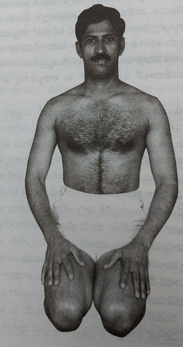
అన్ని ఆసనములలో వజ్రము వలె విలువ కలది కాబట్టి దీనికి వజ్రాసనమని పేరు వచ్చింది. ఏ శ్రమ లేకుండా ఎక్కువ ఫలితాన్ని తక్కువ టైములో ఇస్తుంది.
చేయువిధానము: వజ్రాసనములో కూర్చున్నప్పుడు మోకాలిదగ్గర నుండి పాదము వరకు ముందు ఎముక భాగం నేలకు ఆనవలసి ఉంటుంది. ఆ భాగంలో కండలేకుండా ఎముకే పైకి తగులుతూ ఉంటుంది. గట్టి నేలమీద వజ్రాసనం వేస్తే చాలా నొప్పిగా ఉంటుంది. ఎక్కువసేపు కూర్చోలేరు. మనం వజ్రాసనములో 20, 30 నిముషాలు కదలకుండా సుఖంగా కూర్చోగలిగేటట్లు ఏర్పాటు చేసుకోవడం, అలా వేయడం మంచిది. మెత్తటి ఆసనాల కార్పెట్ గానీ, బొంతగానీ, మెత్తటి దుప్పటిగాని నేల మీద వేసుకుని దానిపై వజ్రాసనం వేసే ప్రయత్నం చేయాలి.
1. రెండు మోకాళ్ళను ప్రక్క ప్రక్కన పెట్టి మోకాళ్ళమీద నుంచుని, రెండు పాదాలను వెనక్కి చాపి, రెండు కాళ్ళ గుత్తుల క్రింద సన్నటి దుప్పటిని మడిచిపెట్టాలి.
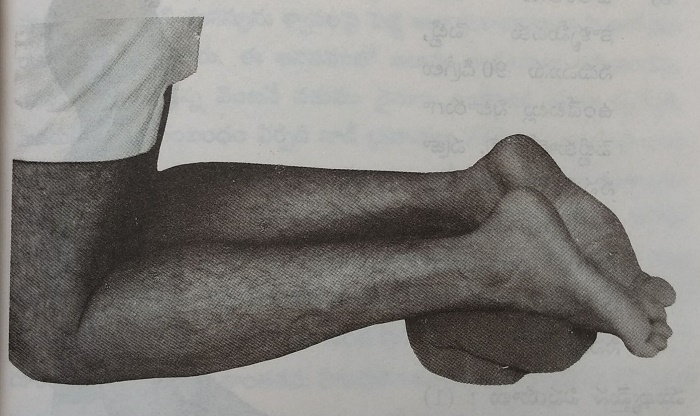
2. రెండు పాదాల బొటనవ్రేళ్ళు రెండూ ఒకాదాని ప్రక్కన ఒకటి అనేటట్లు ఉంచి రెండు మడమలమధ్య జానెడు దూరం ఉండేటట్లు పెట్టి, ఇప్పుడు కాళ్ళపై కూర్చోవడం చేయాలి. రెండు పిర్రలు రెండు మడమలపై ఆని ఉంటాయి
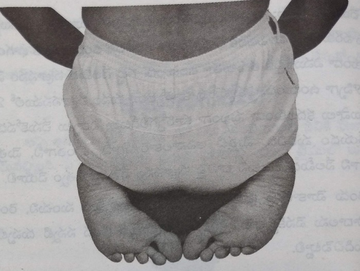
3. చేతులను అలా కాళ్ళ మీదకు పెట్టి, నడుమును 90 డిగ్రీలు ఉండేటట్లు నిటారుగా పెట్టి కూర్చోవాలి. వజ్రాసనములో ఎంతసేపు కూర్చుంటే అంతసేపు అలా వంగకుండా స్థంబంలాగా ఉండవలసినదే.
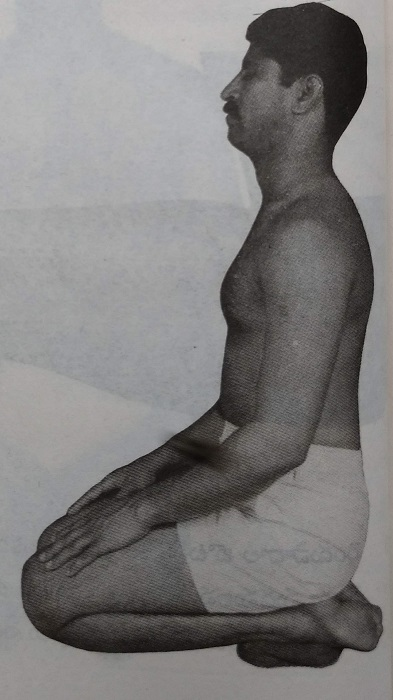
ముఖ్యమైన విషయాలు: 1. రెండు కాళ్ళ గుత్తుల క్రింద అలా దుప్పటి ఎందుకు పెట్టుకోవాలో ఆలోచిద్దాము. మనం వజ్రాసనములో కూర్చున్నప్పుడు మన బరువులో 60, 70 శాతం బరువు ఈ కాళ్ళ గుత్తులపై పడుతుంది. అంతకుముందెన్నడూ ఆ కీలు అంత బాగా సాగి ఉండక, ఇప్పుడు ఎక్కువగా సాగదీసినందుకు నొప్పిగా ఉంటుంది. బరువు పడడం, సాగడం అలవాటులేని కారణంగా మనం వజ్రాసనము వేసిన 2, 3 నిముషాలకే మనవల్ల కాదు. తీసివేద్దామనిపిస్తుంది. ఇంకొంతమందికి 5, 6 నిముషాల తరువాత అలా అనిపిస్తుంది. ఆ భాగంలో ఎక్కువ నొప్పి లేకుండా ఎక్కువసేపు కదలకుండా వజ్రాసనములో కూర్చోవడానికి పలుచటి దుప్పటిని మడిచి అలా పెట్టుకోవడం వలన కొంతవరకు ఇబ్బంది తగ్గుతుంది. నొప్పి ఉండదు.
2. వజ్రాసనము వేయడం ఇంతకుపూర్వం అలవాటు లేనివారు వజ్రాసనములో ఎక్కువసేపు కూర్చోలేరు. 5 నుండి 10 నిముషాలలో నొప్పులు, తిమ్మిర్లు వచ్చేస్తాయి. అలాంటప్పుడు వజ్రాసనము తీసివేస్తారు. ఇలా అలవాటు అయ్యే వరకు క్రమేపీ సమయాన్ని కొద్దికొద్దిగా పెంచుకుని వెళ్ళడం మంచిది.
ఆసనస్థితి: చేతులు విశాలంగా పెట్టి, నడుమును నిటారుగా పెట్టి, కళ్ళను పూర్తిగా మూసుకుని మనస్సును శ్వాసలపై పెట్టి అలా ప్రశాంతముగా ఏ ఆలోచనా రాకుండా కూర్చుంటారు. ఈ ఆసనములో అలుపు, ఆయాసాలు అసలుండవు. ఆసనములో కూర్చున్న వెంటనే నడుము లైనుగా ఉండేసరికి నరాల వ్యవస్థకి, మెదడుకి మంచి సంబంధం ఏర్పడి నాడీ ప్రవాహాలు తేలికగా పై నుండి క్రిందకు జరుగుతూ ఉంటాయి. మనస్సు ప్రశాంతముగా ఆలోచనలు లేకుండా ఉంటుంది. నడుము లైనుగా పెట్టడము వలన ఊపిరితిత్తులు విశాలంగా ఉంటాయి. దానితో ఊపిరితిత్తుల నిండుగా గాలి వెళుతుంది. అలా నిండుగా, దీర్ఘంగా శ్వాసలు వజ్రాసములో కూర్చున్నంతసేపూ జరుగుతూ ఉంటాయి. దానితో ఎక్కువ ప్రాణవాయువు శరీరానికి, మనస్సుకు అంది మనస్సు మెల్లగా ఆలోచనలకు పూర్తిగా దూరం అవుతూ ఎక్కువ ప్రశాంతతను పొందుతూ ఉంటుంది. అలాంటి మానసికమైన మార్పులు ఏ సాధనా లేకుండా వజ్రాసనములో రావడం విశేషంగా చెప్పుకోవచ్చు. వజ్రాసనములో ఉన్నంతసేపూ ఎక్కువ ప్రాణవాయువు శరీరాన్ని చేరుతుంది కాబట్టి శరీరానికి ఎక్కడలేని శక్తి ఆసనములో ఉన్నంతసేపూ అనిపిస్తూ మనకున్న నీరసాలు పూర్తిగా పోతాయి. కాళ్ళకు ఇబ్బంది లేకుండా అలా కూర్చోగలిగినంత వరకు వజ్రాసనమును తీయకుండా అలానే ప్రయత్నిస్తారు. వజ్రాసనములో కూర్చున్నప్పుడు మోకాళ్ళదగ్గర వంచి ఉంచి దానిపై మన బరువు పడడంవలన కాళ్ళలో రక్తనాళాలు చాలా వరకు మూసుకుంటాయి. దానితో కాళ్ళకు వెళ్ళే రక్తం పూర్తిగా వెళ్ళకుండా మోకాలి పైభాగాలలోనే ఉండిపోతుంది. పాదాలకు తిమ్మిర్లు ఎక్కడం, మడాల దగ్గర నొప్పులు రావడం ఆసనస్థితిలో ఉంటుంది. వాటిని పట్టించుకోకుండా అలానే ఇంకా కొంతసమయం గెంటవచ్చు. ఇలా వజ్రాసనము సాధనచేస్తూ 20, 30 నిముషాలు తేలికగా కూర్చోగలుగుతారు. ఈ ఆసనస్థితిలో ఉండగలిగినంత వరకు ఏ ఆలోచనలూ రాకుండా మనస్సును శ్వాసలపై లగ్నం చేయడం అనేది అతి ముఖ్యమైనది. ఇక వజ్రాసనములో కూర్చోలేము అనుకున్నప్పుడు మెల్లగా కాళ్ళను చాపి విశ్రాంతి ఆసనములో కూర్చుంటారు.
విశ్రాంతిస్థితి: వజ్రాసనము నుండి కాళ్ళను బాగా చాపి, వాటిని ఫ్రీగా ప్రక్కలకు వ్రేలాడవేయవచ్చు. చేతులను వెనుక భాగానికి పెట్టుకొని, మెడను వెనక్కి వాల్చేస్తారు. దానితో పూర్తి శరీరం ఫ్రీగా వుంటుంది.
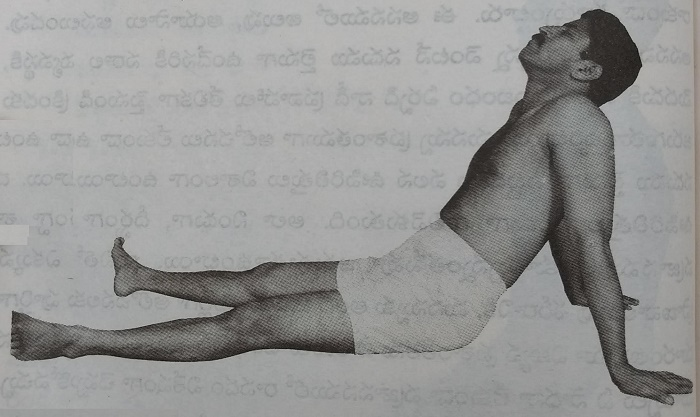
ఈ విశ్రాంతిస్థితిలో మనస్సును శ్వాసనలపై పెట్టి అలా ప్రశాంతముగా ఉండే ప్రయత్నము చేస్తాము. కాళ్ళను చాపిన దగ్గరనుండి తిమ్మిర్ల బాధ మనస్సును కుదురుగా ఉండనివ్వదు. కాళ్ళు బాగా లాగుతూ ఉంటాయి. అది ఏమీ చేయలేని బాధ. అటూ ఏడవడానికీ ఉండదు. ఇటు నవ్వడానికీ ఉండదు. ఎటూకానీ మధ్యస్థితిలో కాళ్ళలో బాధలు అనిపిస్తూ ఉంటాయి. ఈ సమయమంతా మనస్సు శ్వాసలపై నిలవదు. కాళ్ళు, పాదాలపై ఉంటుంది. వజ్రాసనము నుండి తీసాక 1, 2 నిముషాలకు ఇంకా తిమ్మిర్లు పెరిగి మరీ ఇబ్బంది ఎక్కువగా ఉండి అక్కడనుండి మెల్లగా తగ్గుతూ వస్తుంది. రానురాను రక్తప్రసరణ చురుకుగా ప్రయాణించడం జరిగి పాదాలు ఎరుపెక్కుతూ ఉంటాయి. వజ్రాసనములో ఉన్నంతసేపూ పాదాలు తెల్లగా అయిపోతాయి. విశ్రాంతిస్థితిలో కాళ్ళను చాపేసరికి మోకాళ్ళ పైభాగం వరకు
ఎక్కువ ఒత్తిడితో మిగిలిపోయిన రక్తం అంతా, వజ్రాసనము తీసిన దగ్గరనుండి చాలా స్పీడుగా పాదాలవైపు ప్రయాణిస్తుంది. ఎప్పుడూ రానంత ఎక్కువ రక్తం పాదాలకు చేరుతూ ఉంటుంది. అందువలన పాదాలు రెండూ ఎర్రగా గులాబీరంగులో కనబడతాయి. ఇలా రక్తప్రసరణ మరలా మామూలు స్థితికి చేరుకునేవరకు వజ్రాసనములోనే ఉండాలి. వజ్రాసనములో కూర్చున్నంతసేపు మోకాళ్ళ దగ్గరనుండి పై అవయవాలకు చాలా లాభం ఉంటే, వజ్రాసనం తీసి విశ్రాంతి స్థితిలో ఉన్నప్పుడు మోకాలి దగ్గరనుండి పాదాల చివర్ల వరకు ఎక్కువ లాభం ఉంటుంది. ఈ లాభాన్ని పొందాలంటే విశ్రాంతి స్థితిలో అలా 4, 5 నిముషాలపాటు కాళ్ళు చాపి కూర్చుంటేగానీ లాభం రాదు. ఇలా పూర్తి విశ్రాంతిని తప్పక తీసుకోవాలి.
తప్పుస్థితి: నడుము నిటారుగా 90 డిగ్రీలలో ఉంచి కూర్చుంటేనే దానిని వజ్రాసనము అని అంటారు. కొందరు నడుమును నిలపలేక వెన్నును ముందుకు వంచేస్తారు. అలాగే కొంతమంది మెడను కూడా ఉంచుతారు. నడుము వంచడం అనేది తప్పుస్థితి.
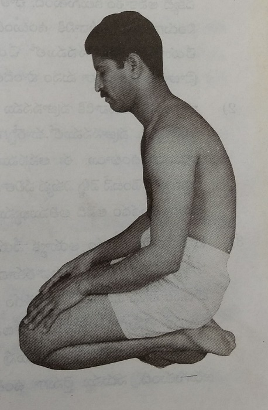
ఫొటోలో చూపించినట్లు కూర్చోకూడదు. నడుమును ముందుకు వంచితే డయాఫ్రమ్ వ్యాకోచించి అలానే ఉండిపోతుంది. దానితో ఊపిరితిత్తులు సగభాగం మూసుకుంటాయి. ప్రాణవాయువు సరిగా ఎక్కదు. శ్వాసలు పెరిగిపోతాయి. నడుమును వంచితే మెదడు, నరాలకు మధ్య సంబంధం సాఫీగా ఉండదు. శ్వాసల సంఖ్య పెరుగుతుంది. దానితో మనస్సు ప్రశాంతంగా ఉండదు. ఇలా ఏ లాభానికీ వజ్రాసనం నోచుకోదు. కాబట్టి ఎప్పుడు వజ్రాసనములో కూర్చున్నా నడుమును ఏమాత్రం ముందుకు వంచకుండా, అలా కూర్చోగలిగినంతసేపటి వరకు అలానే కూర్చోవాలి. నడుమునొప్పిగా ఉంటే ఆసనాన్ని తీసివేయాలే తప్ప అందులో వంగకూడదు.
లాభాలు
1. ప్రాణాయామం చేయాలంటే వజ్రాసనం బాగా సహకరిస్తుంది. నడుము నిటారుగా ఉండబట్టి గాలిని బాగా పీల్చడానికి, గాలిని బాగా వదలడానికి చక్కటి అవకాశం కలుగుతుంది. ఛాతీ విశాలంగా ఉండబట్టి ఊపిరితిత్తులు నిండుగా గాలి ఎక్కడానికి ఉంటుంది. ఏ రకములైన ప్రాణాయామాన్ని చేయాలన్నా వజ్రాసనములో చేయగలిగితే చాలా మంచి ఫలితం ప్రాణాయామం ద్వారా మనం
పొందేటట్లు వజ్రాసనము సహకరిస్తుంది.
2. ధ్యానం చేసుకునేవారికి వజ్రాసనము ఎంతగానో మానసిక ప్రశాంతతను అందిస్తుంది. వజ్రాసనములో కూర్చోగానే మనస్సు స్థిరమైనట్లు ఆలోచనలు రాకుండా ఉంటాయి. ఈ ఆసనము ద్వారా మన స్థితి ఇలా మారితే ధ్యానంలోకి వెంటనే వెళ్ళి ఎక్కువ ఫలితాన్ని పొందవచ్చు. ధ్యానములో నడుము లైనుగా ఉండడం అనేది అతి ముఖ్యము.
3. ఏ ఆసనాన్నీ భోజనం అయ్యాక వేయకూడదంటారు. కానీ వజ్రాసనము మాత్రం భోజనం అయిన తరువాత కూడా తప్పనిసరిగా వేయమని చెబుతారు. భోజనం చేసిన వెంటనే వేస్తే ఆహారం త్వరగా అరుగుతుంది. ముఖ్యముగా నడుము లైనుగా ఉండేసరికి ప్రాణవాయువు ఊపిరితిత్తుల నిండుగా ఎక్కుతుంది. దానితో ప్రాణవాయువు బాగా అంది జీర్ణక్రియ చురుకుగా జరుగుతుంది. నడుము లైనుగా ఉంటే పొట్ట బరువు డయాఫ్రమ్ మీద పడదు. దానితో శ్వాసలకు ఇబ్బంది రాదు. వజ్రాసనము భోజనము అయిన తరువాత వేస్తే భుక్తాయాసం ఉండదు. దానికి నడుము లైనుగా ఉండడమే కారణం. వజ్రాసనములో కూర్చుంటే ప్రేగులు, పొట్టలో ఉండే గ్యాసెస్ అవీ తేలికగా బయటకు వచ్చి పొట్టలో బరువు అనిపించదు.
4. వజ్రాసనమును దేవుడి దగ్గర, ఆలయాలలో, పూజలదగ్గర, భోజనం చేసేటప్పుడు, ఖాళీగా ఉన్నప్పుడు వేసి కూర్చోవచ్చు. మనస్సు ఆ పనులకు బాగా సహకరిస్తుంది.
5. మనస్సు ఎప్పుడు బాగోకపోయినా, చిరాకుగా ఉన్నా, ఆలోచనలు ఎక్కువగా వస్తున్నా, నిద్రసరిగా రాకపోయినా వెంటనే వజ్రాసనములో 5, 10 నిముషాలు శ్వాసలమీద ధ్యాసపెట్టి అలా కూర్చుంటే ఆ ఇబ్బందులనుండి తేలికగా బయటపడవచ్చు. ఇది ఎంతగానో లాభాన్ని కలిగిస్తుంది.
6. వజ్రాసనము వలన రెండుకాళ్ళకు ఎప్పుడూ, ఏ పనిలో జరగనంత రక్తప్రసరణ జరిగి కాళ్ళ ఆరోగ్యాన్ని బాగా కాపాడుతుంది. పాదాలకు తిమ్మిర్లు, చురుకులు, మంటలు, మడాల నొప్పులు దరిచేరవు. ఆ ఇబ్బందులున్నవారికి పూర్తిగా పోతాయి.
7. మోకాళ్ళనొప్పులు లేనివారు దీనిని రోజూ వేస్తూ ఉంటే కీళ్ళు మన స్వాధీనములో ఉండి ఆ సందులు బాగాసాగి మోకాళ్ళ ఇబ్బంది జీవితంలో రాకుండా చేసుకోవచ్చు.
8. ఆకలి బాగా పెరుగుతుంది. అజీర్ణ వ్యాధులను తగ్గించడానికి ప్రతిరోజూ రెండు పూటలా వజ్రాసనము వేస్తే మంచి ఫలితము కనబడుతుంది.
9. పొట్ట ఉబ్బరం, గ్యాసు పట్టడం, పొట్ట బరువు మొదలగు ఇబ్బందులున్నప్పుడు 10 నిముషాలు వజ్రాసనములో కూర్చుంటే వెంటనే గ్యాసు త్రేన్పుల ద్వారా బయటకు పోయి, పొట్టకు ఉపశమాన్ని కలిగిస్తుంది.
10. నడుము నొప్పులు కొద్దిగా ఉన్నవారు ఎప్పుడూ క్రింద కూర్చోవలసి వచ్చినప్పుడు మామూలుగా బాసింపట్టువేసి కూర్చుంటే ఆ నొప్పులు ఇంకా పెరుగుతాయి. అలా క్రింద కూర్చోవలసి వచ్చినప్పుడు వజ్రాసనము వేసి కూర్చుంటే నడుము నొప్పులు పెరగవు. ఏ ఇబ్బందీ రాదు.
గమనిక
1. ఆసనాలతోపాటు ఈ వజ్రాసనాన్ని ప్రత్యేకంగా వేయనవసరం లేదు. దీనిని ప్రాణాయామం చేసేటప్పుడో, ధ్యానం చేసేటప్పుడో, ఖాళీగా ఉన్నప్పుడో, భోజనంచేసిన తరువాతో వేయడం వలన సమయం కలిసి వస్తుంది. లాభానికి లాభంగా కూడా ఉంటుంది. ఆసనాల ముందు ప్రాణాయామం చేసినప్పుడు వేస్తే సరిపోతుంది.
2. మోకాళ్ళ నొప్పులు బాగా ఎక్కువగా ఉన్నవారు వజ్రాసనమును వేయరాదు.
3. వజ్రాసనాన్ని వేసి తీసివేస్తే ప్రయోజనము రాదు. అలా 5, 10 నిముషాలు అంతకంటే ఎక్కువ సమయం ఉండేటట్లు ప్రయత్నించాలి.
మత్స్యాసనము
మత్స్యేంద్రులు అనే మహర్షిచేత ఈ ఆసనం రూపకల్పన చేయబడింది. మరియు ఈ ఆసనం సిద్ధించినవారు నీటిమీద చేపవలె పైకి తేలవచ్చును, కనుక దీనికి మత్స్యాసనము అని పేరు వచ్చినది.
చేయువిధానము: ఈ ఆసనాన్ని వేసే ముందు దుప్పటికి ముందు భాగానికి జరిగి కూర్చోవాలి.
1. కాళ్ళు బాగా వంచగలిగిన వారు ముందు పద్మాసనాన్ని వేసి కూర్చుంటారు. పద్మాసనం వేయడం అంటే చాలామందికి కష్టమైన పని. పద్యాసనం రాకపోతే ఈ ఆసనాన్ని వేయడానికి అనర్హులం అని అనుకోవద్దు. పద్మాసనం రానివారు కాళ్ళను దగ్గరగా జరిపి సుఖాసనంలో కూర్చుని చేయవచ్చు.
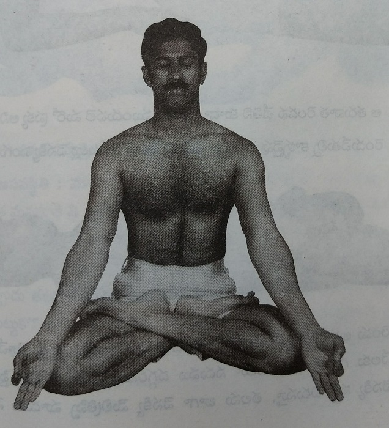
2. తరువాత ఒక చేతిని మోచేతివరకు అలా నేలకు ఆనించి ఛాతీని వెనక్కి వంచి ఉంచుతారు.
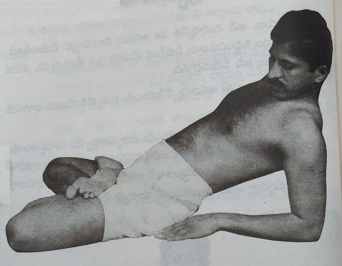
3. ఆ తరువాత రెండవ చేతిని కూడా ఇంతకు ముందువలె మరో ప్రక్క ఆనిస్తారు.
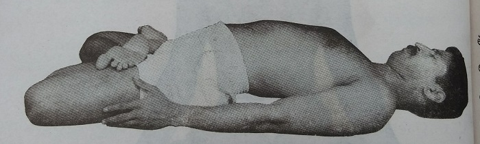
4. రెండుచేతుల్ని కాళ్ళవైపు చాపుతూ వీపును నేలకు ఆనేటట్లు వెనక్కి వంగుతారు.
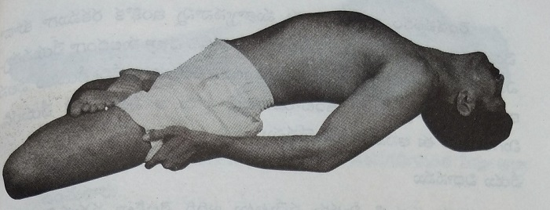
5. రెండు అరచేతుల్ని రెండు తొడలక్రింద అలా పెట్టుకొని రెండు మోచేతుల్ని నేలకు గట్టిగా అదుముతూ నడుము దగ్గరనుండి ఛాతీభాగాన్ని పైకిలేపి వెనక్కి నడ్డి విరుస్తూ, తలను బాగా వెనక్కి మెలిత్రిప్పి మాడును నేలకు ఆనేటట్లు వంచాలి. పద్మాసనం రానివారు సుఖాసనంలో కూర్చునిచేసే విధానాన్ని ఫొటోలో వేయడం జరిగింది.
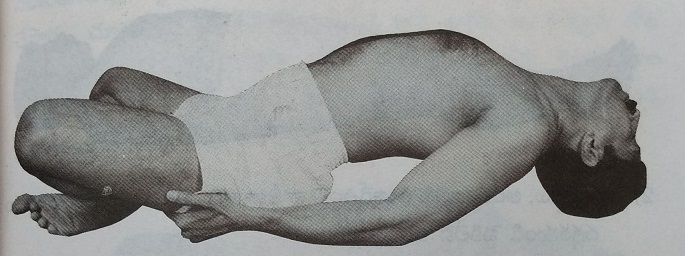
6. కళ్ళను పూర్తిగా మూసుకోవాలి.
ఆసనస్థితి: మత్స్యాసనంలో పూర్తిస్థితికి పైన ఫొటోలో చూపినట్లు చేరిన తరువాత మనస్సుకి ఏ ఆలోచనలూ రాకుండా చేసి మనస్సును మెడభాగం, కంఠంపై లగ్నం చేసి ఉంచాలి. ఆసనంలో కదలకుండా ఉండగలిగినంతసేపు ఉండాలి. బాగా నొప్పి ఎక్కువై ఇక ఉండలేము అన్నప్పుడు ఆసనాన్ని తీసివేయాలి. ఆసనాన్ని తీసేటప్పుడు తలను, ఛాతీభాగాన్ని నేలకు ఆనించి తరువాత చేతులను ప్రక్కలకు ఫ్రీగా పెట్టుకొని తరువాత కాళ్ళను చాపుతారు. అదే పద్మాసనం వేసినవారు అయితే కాళ్ళను అలానే ఉంచుకుంటారు. తరువాత మెల్లగా పైకి లేచి ముందుకు వంగి చేసే ఆసనానికి సిద్ధం అవుతారు.
రెండవరకం ఆసనం: ఈ మత్స్యాసనాన్ని ఇంకొక రకముగా కూడా చేయవచ్చు. కాళ్ళు ముడుచుకోవడం రానివారు ఇది చాలా సులభంగా చేయవచ్చు. ఎవరికి ఏది అనుకూలమైతే దానిని చేయండి. పద్మాసనం చేసి చేయడం వలన కాళ్ళు బాగా స్వాధీనంలో ఉంటాయి కాబట్టి వారు ఆ విధముగానే చేయండి. మిగతావారు ఈ ఆసనాన్ని వేసుకోవచ్చు.
చేయు విధానము
1. తలను దుప్పటి మీదకు వచ్చేటట్లు జరిగి వెల్లకిలా పడుకుని, రెండు అరచేతులూ నేలకు ఆనేటట్లు పెట్టి వాటిని రెండు పిర్రల క్రింద భాగానికి జరిపి పాదాలను చాపి ఉంచుతారు.
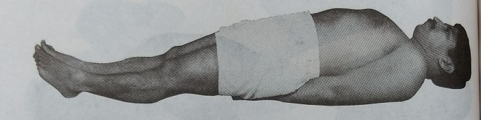
2. కాళ్ళను, అరచేతులను అలాగే ఉంచి ఛాతీభాగాన్ని, తలను మోచేతుల భాగం దగ్గరనుండి పైకిలేపి ఉంచుతారు.
3. తరువాత ఛాతీని బాగా వెనక్కివంచి తల మాడు భాగం నేలకు ఆనేటట్లు ఉంచుతారు. ఈ స్థితిలో నడుముగానీ, వీపుగాని నేలకు ఆనదు. బరువు అంతా తల మీద పడుతుంది.
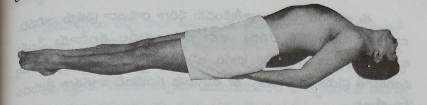
4. కళ్ళను పూర్తిగా మూసుకొని ఆసనంలో అలాగే ఉండగలిగినంత సేపూ అలా ఉంచుతారు.
తప్పుస్థితి: ముఖ్యంగా ఈ ఆసనంలో మెడ భాగానికి, కంఠం భాగానికి ఎక్కువ లాభం వస్తుంది. కాబట్టి ఈ ఆసనంలో మెడను బాగా వెనక్కి వంచి మాడు నేలకు ఆనేటట్లు పెట్టకపోతే అసలు ఫలితం ఉండదు. మిగతా పద్ధతి అంతా బాగానే చేస్తారు. చూడడానికి బాగానే అనిపిస్తుంది కానీ అసలు అవసరమైన చోట సరిగా పెట్టడం కుదరకపోయేసరికి ఆసనంవేసిన లాభం ఉండదు. రెండు రకాల మత్స్యాసనం విధానాలలో తప్పుగా వేసిన ఆసనాలు ఎలా ఉంటాయో చూడండి. మిగతా ఆసనం అంతా బాగానే వేయడం జరిగింది.
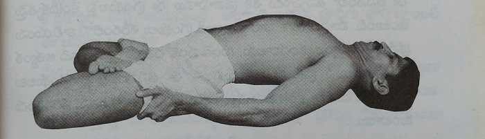
ఛాతీ కూడా లేచింది. కానీ తలవిషయంలో మాడు నేలకు ఆనడం బదులు మెడవెనుక భాగం వద్ద ఆనింది. దానితో మెడభాగం వెనక్కి సాగబడలేదు.
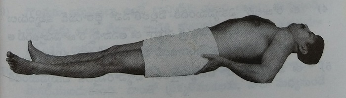
ఈ ఆసనంలో చేతులు ఛాతీ క్రిందకు సరిగా రాకుండా ప్రక్కకు వాలినవి. దానితో నడుము పైకి లేవదు. అలా లేవనందువల్ల తల మాడు నేలకు ఆనవలసిందిపోయి మెడ వెనుక భాగం ఆనింది. ఇలా నడుము, మెడ వెనక్కి వంగకపోతే ప్రయోజనం సున్నా. ఈ తప్పులను గమనించి జాగ్రత్తగా చేయడం నేర్చుకోవాలి.
లాభాలు
1. థైరాయిడ్ గ్రంథి లోపాలున్నవారికి ఎంతో మంచి ఆసనం. ఈ ఆసనంలో ఉన్నంతసేపూ థైరాయిడ్ గ్రంథి (గొంతుభాగంలో ఉండే గ్రంథి) బాగా సంకోచించుకుని, సాగదీయబడుతుంది. ఆసనం నుండి తీసిన వెంటనే థైరాయిడ్ గ్రంథికి ఎప్పుడూ వెళ్ళనంత రక్తప్రసరణ, ప్రాణావాయువు వెళతాయి. దానితో ఆ గ్రంథి పనితీరు మారుతుంది. ఇక రోజంతా థైరాయిడ్ గ్రంథికి బాగా రక్తప్రసరణ జరుగుతుంది. ఈ ఆసనంలో ఆ గ్రంథి లోపల భాగాలన్నిటికీ మసాజ్ చేసినట్లు అవుతుంది.
2. థైరాయిడ్ గ్రంథి వెనుక భాగంలో పారాథైరాయిడ్ గ్రంథులు ఉంటాయి. ఈ ఆసనంలో ఉన్నప్పుడు శక్తి ప్రవాహము ఈ గ్రంథులపై కేంద్రీకృతమై ఉంటుంది. మామూలుగా పారాథైరాయిడ్ గ్రంథులు శరీరంలోని కాల్షియంను క్రమబద్దీకరిస్తాయి. కండరాలకు, గుండె సంకోచవ్యాకోచాలకు ఇది అత్యంత ఆవశ్యకమయిన ప్రక్రియ. అందువలన ఈ ఆసనంలో పై గ్రంథులకు రక్తప్రసరణ మెరుగ్గా జరిగి ఎముకలు గట్టిదనాన్ని, స్థితిస్థాపకతను సంతరించుకుంటాయి.
3. థైరాయిడ్ గ్రంథికి అయోడిన్ లోపం కారణంగా వాపు వస్తుంది. ఆ అయోడిన్ ఆహారంద్వారా గానీ, మందులద్వారా గానీ అందిస్తూ ఈ మత్స్యాసనం రోజూ చేస్తే త్వరగా ఆ వాపులు తగ్గిపోతాయి.
4. ఈ రోజులలో ఎక్కువమందికి పిల్లలతో సహా థైరాయిడ్ ఇబ్బందులు వచ్చేస్తున్నాయి. ముందుజాగ్రత్త చర్యగా ఈ ఆసనాన్ని రోజూ వేస్తూ ఉంటే ఆ గ్రంథి పనితీరు దెబ్బ తినకుండా ఉండి మనకు ఆరోగ్యాన్ని కలిగిస్తుంది.
5. ఈ మధ్యకాలంలో ఉద్యోగస్తులకీ, వ్యాపారస్తులకీ ఎక్కువమందికి మెడనొప్పులు వచ్చి చాలా ఇబ్బందులు పడుతున్నారు. ఒక్కొక్కరి మెడలో నరాలు బాగా నొక్కబడడం వల్ల ఆపరేషన్ కూడా చేయించుకుంటూ ఉంటారు. మెడనొప్పి (స్పాండిలైటిస్) ఉన్నవారికి ఈ ఆసనం ఎంతగానో లాభం కలిగిస్తుంది. మెడను ఎప్పుడూ ముందుకు వంచి కూర్చునేవారికి ఈ నొప్పి ఎక్కువగా వస్తుంది. ఈ మత్స్యాసనంలో మెడను అలా వెనక్కి వంచి ఉంచడంవలన పూర్తిగా ఉపశమనం కలుగుతుంది. మెడనొప్పితో పాటు నడుమునొప్పి కూడా ఉంటే మత్స్యాసనాన్ని కూర్చుని వేయడం మాని పడుకుని వేస్తే మంచిది. మెడనొప్పులున్నవారు ఈ ఆసనాన్ని రెండు పూటలా వేయాలి. అవసరమైతే ఒకసారి వేసి తీసి, విశ్రాంతి తీసుకుని మరలా ఇదే ఆసనాన్ని ఇంకొకసారి కూడా వేయవచ్చు.
6. మెడనొప్పులు ఇప్పటివరకు రాని వారికి ఇక భవిష్యత్తులో అలాంటి బాధలు రాకుండా ఉద్యోగస్తులు, వ్యాపారస్తులు ముందుజాగ్రత్త చర్యగా దీనిని సాధన చేయడం మంచిది. లేకుంటే భవిష్యత్తులో దిండు వేసుకోవడానికి కూడా ఉండదు. (మెడనొప్పి వచ్చాక పూర్తిగా దిండు మానాలి.) కొంతమందికి స్కూటర్ తోలేటప్పుడు, ఆడవారు మెడవంచి కూరలను కోసేటప్పుడు కొద్దికొద్దిగా నొప్పి అనిపిస్తుంది. అలాంటి వాటిని పూర్తిగా పోగొట్టాలంటే ఈ ఆసనం అద్భుతం.
7. మెడభాగంలో ఉండే కండరాలు, రక్తనాళాలు బాగా ఆరోగ్యవంతంగా తయారవుతాయి. దానివల్ల తలకు రక్తాన్ని బాగా చిమ్మగలుగుతాయి. తలకు రక్తాన్ని మోసుకుని వెళ్ళే రక్తనాళాలలో క్రొవ్వు పేరుకోకుండా కరిగించడానికి బాగా పనికివస్తుంది.
8. నడుమునొప్పులు ఉన్నవారికి ఈ ఆసనంలో నడుమును వెనక్కి వంచడం వలన నరాలు నొక్కుకోవడంవల్ల కొంత సుఖాన్ని కలిగిస్తుంది.
9. గొంతుకు ఇరువైపులా ఉండే టాన్సిల్స్ కు మంచి లాభాన్ని కలిగిస్తుంది. టాన్సిల్స్ కు బలం చేకూరి వాటికి రోగనిరోధకశక్తి పెరిగి త్వరత్వరగా ఇన్ ఫెక్షన్స్ రాకుండా నివారిస్తుంది.
10. ఛాతీభాగం ఈ ఆసనంలో ఉన్నంతసేపూ బాగా విశాలంగా సాగదీయబడుతుంది. దాంతో ప్రక్కటెముకలకు, వాటి మధ్యనుండే కండరాలకు, ఊపిరితిత్తులకు సంకోచవ్యాకోచాలు బాగా పెరుగుతాయి. దాంతో దీర్ఘశ్వాసలు ఈ ఆసనం నుండి తీసిన తరువాత జరుగుతాయి. తరువాత కూడా మనలో దీర్ఘశ్వాసలు జరగడానికి ఈ ఆసనం కొంత దోహదం చేస్తుంది.
గమనిక
1. మెడను, నడమును బాగా వెనక్కి వంచినందువల్ల వాటిని తిరిగి ముందుకు వంచితే సాధారణ స్థితికి వచ్చి తేలికగా ఉంటుంది. ముందుకు వంచే ఆసనాన్ని దీని తరువాత చేయాలి.
2. మెడనొప్పి, నడుమునొప్పులున్నవారు మత్స్యాసనము తీసిన తరువాత వీపు ముందుకు వంచకూడదు. ముందుకు వంచే ఆసనాన్ని వేయకూడదు.
3. క్రొత్తలో నేర్చుకునేటప్పుడు 10, 15 సెకన్లు మించి ఈ ఆసనంలో ఉండకుండా వెంటనే తీసివేయాలి. అలవాటులేని కారణంగా మొదటి 5, 6 రోజులు ఎక్కువసేపు వేస్తే రెండవ, మూడవరోజుకి మెడనొప్పులు, మెడపట్టడం లాంటివి వస్తాయి. 5, 6 రోజుల తరువాత ఉండగలిగినంతసేపు ఉండే ప్రయత్నం చేయాలి.
4. మెడనొప్పులు వస్తే లేదా ఉంటే మెడకు కొబ్బరినూనె వ్రాసుకుని వేడినీటి కాపడం రెండు పూటలా పెట్టుకుంటే బాగా ఉపశమనం లభిస్తుంది.
5. చాలామంది మత్స్యాసనాన్ని పశ్చిమోత్తనాసనము చేసిన తరువాత చేస్తారు. అలా చేస్తే ఫలితం ఎక్కువ అని చెబుతారు. అక్కడ చేసినా తప్పులేదు. ముందు తేలికైన ఆసనాలతో ప్రారంభించి తరువాత కష్టమైన వాటిని వేస్తూ వెళ్ళడం వలన ఫలితం ఎక్కువగా ఉంటుంది. మనం చేయబోయే ఆసనాలలో తేలికైన ఆసనాలైన మత్స్యాసనము, యోగముద్రాసనములను ముందు చేయడం జరుగుతున్నది.
6. మత్స్యాసనాన్ని తీసిన వెంటనే విశ్రాంతి తీసుకోకుండా యోగముద్రాసనము చేసి తరువాత విశ్రాంతి తీసుకుంటారు.
యోగముద్రాసనము
హఠయోగంలో భాగమైన ముద్రలలో ఇది ఒకటి. యోగశక్తితో కుండలిని మేలుకొల్పి, మనశ్శక్తులను సమాకలనము చేయును కనుక దీనికి యోగముద్ర అని పేరుపెట్టారు. ఇప్పుడు మనము ఆ లాభం కొరకు కాకపోయినా వేరే ప్రయోజనాలను ఈ ఆసనం ద్వారా పొందడానికి వేయడంలో తప్పులేదు.
చేయువిధానము: పద్మాసనములో కూర్చుని మత్స్యాసనము వేసిన తరువాత ఆ పద్మాసనాన్ని తీయకుండా అలానే ఉంచుకొని ఈ ఆసనం చేయడానికి సిద్ధపడతాము. బాగా నొప్పులుంటే మత్స్యాసనము పూర్తి అయ్యాక పద్మాసనాన్ని తీసి మరలా ఈ ఆసనములో తిరిగివేయవచ్చు. పద్మాసనాన్ని ఒక్కసారి వేసి ఈ రెండు ఆసనాలు వేసే వరకు తీయకుండా ఉంచితే మరీమంచిది. ఎందువలన అంటే మోకాళ్ళ దగ్గర నుండి పాదాల వరకు పద్మాసనంలో కూర్చున్నప్పుడు చాలా వరకు రక్తప్రసరణ ఆగడం జరిగి మెల్లగా తిమ్మిర్లు ఎక్కడం జరుగుతుంది. ఈ రెండు ఆసనాలు చేయడానికి సుమారు 4, 5 నిముషాలపాటు పద్మాసనములో ఉండవలసి వస్తుంది. ఈ సమయంలో కాళ్ళలో రక్తం ఆగి, ఆసనాన్ని తీసి కాళ్ళు చాపిన వెంటనే రెండు పాదాలకు ఎప్పుడూ వెళ్ళనంత రక్తం వెళ్ళడం జరుగుతుంది.
1. దుప్పటికి మధ్యభాగంలోనికి జరిగి, పద్మాసనంలో కూర్చుని, రెండు చేతులను వీపు వెనుకభాగానికి పోనిచ్చి, ఒక చేతి గుప్పెట బిగించి, ఇంకో చేతితో ఆ గుప్పెటను పట్టుకొని, రెండు చేతులను ఛాతీకి బిగించి, గెడ్డమును క్రిందకు ఆనేటట్లు తలను వంచాలి. పద్మాసనం వేయలేనివారు సుఖాసనములో కూర్చుని పైన చెప్పిన విధముగా చేస్తారు.
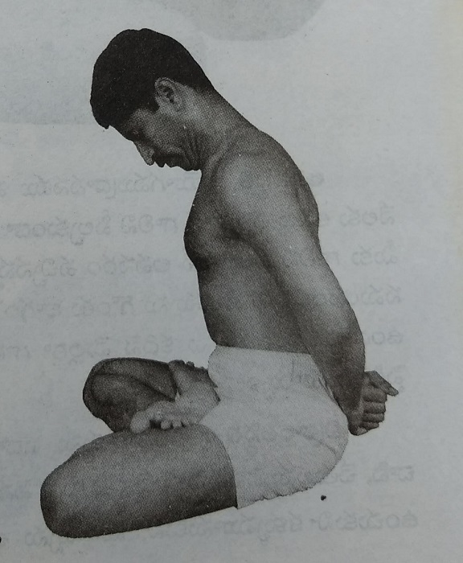
2. కళ్ళను పూర్తిగా మూసుకొని, నడుమును ముందుకు వంచుతూ రెండు ముక్కులద్వారా ఊపిరితిత్తులలో ఉన్న గాలిని పూర్తిగా అలా వదులుతూ తలను నేలభాగానికి చేరుస్తారు. తల నేలకు ఆనేటప్పటికి పూర్తిగా గాలి వదలడం అవ్వాలి. తల మాడు భాగాన్ని నేలకు ఆనే విధముగా, గెడ్డం భాగం ఛాతీకి ఆనే విధముగా ఈ ఆసనంలో అలా స్థిరముగా ఉండాలి.
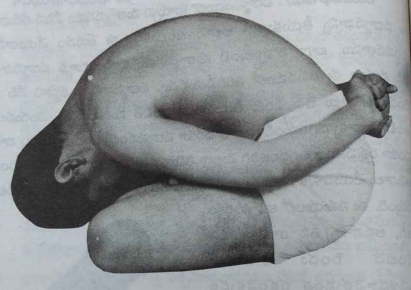
ఆసనస్థితి: యోగముద్రాసనము పూర్తిగా వేసిన తరువాత అంటే మాడు నేలకు ఆనిన తరువాత గాలిని పీల్చకుండా అలా ఉన్నంతసేపూ కుంభిస్తారు. మళ్ళీ మీకు గాలిని పీల్చుకునే అవసరం వచ్చినప్పటి వరకు అలా కుంభించే ఉంచి ఈ సమయంలో మీ మనస్సును గొంతు భాగంపై లగ్నం చేస్తారు. గాలి అవసరమయ్యి ఉండలేనప్పుడు తలను కదిపి మెల్లగా గాలిని కొద్దికొద్దిగా పీల్చుకుంటూ ఛాతీని పైకిలేపి కూర్చుంటారు.
విశ్రాంతిస్థితి: రెండుకాళ్ళను పద్మాసనం నుండి తీసి కాళ్ళను పూర్తిగా చాపి, చేతులను వెనక్కిపెట్టి, మెడని ఫ్రీగా వెనక్కి పెట్టుకొని, మనస్సును ప్రశాంతంగా ఉంచుకుని కళ్ళు మూసుకుని, మనస్సును శ్వాసలపై లగ్నం చేస్తారు. (పై పెదవి పైభాగాన, ముక్కు క్రింద భాగాన శ్వాసల కదలిక తెలుస్తుంది) విశ్రాంతిస్థితిలో అలా ఒక్కనిముషంపాటు ఉంటే మంచిది.
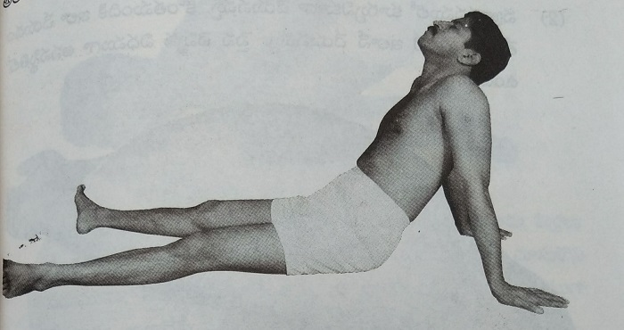
వేరేపద్ధతులు: పైనచెప్పిన పద్ధతుల ప్రకారం చేయడం కష్టముగా ఉంటే, ఇక్కడ చెప్పబోయే విధముగా కూడా చేయవచ్చు. బాగా లావు ఉన్నవారికి ఇప్పుడు చెప్పబోయే మొదటి పద్ధతి సులభం.
1. సుఖాసనంలో (బాసింపట్టు) కూర్చుని, రెండు చేతులను పైకి ఆకాశం వైపు నిటారుగా లేపి గాలిని వదలుతూ చేతులను, తలను, నేలకు ఆనిస్తారు. గెడ్డం ఛాతీకి ఆనేటట్లు చూసుకోవాలి. అలా ఉన్నంతసేపు గాలి పీల్చకుండా కుంభించి పైకి లేచేటప్పుడు మాత్రమే పీలుస్తూ లేస్తారు. కొంతమందికి చేతులు నేలకు ఆనతాయి గానీ, తల ఆనదు. సరిగా ఆనలేదని అనుకోవద్దు. ఎవరికి ఎక్కడ కష్టంగా ఉంటే ఫలితం అక్కడే ఉంటుంది. వచ్చిన ఫలితం చేయండి చాలు.
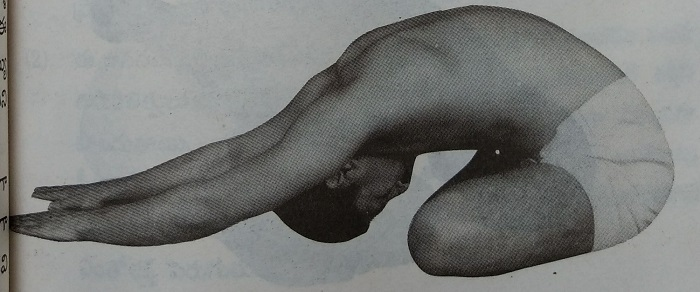
2. వజ్రాసనములో కూర్చునికూడా చేయవచ్చు. కొంతమందికి ఇలా చేయడం తేలికగా ఉంటే ఇలానే చేయవచ్చు. పైన చెప్పిన విధముగా ఆసనస్థితిలో ఉండాలి.
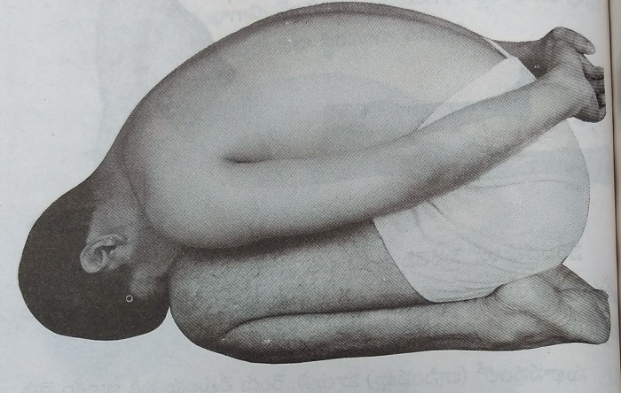
తప్పుస్థితి: ప్రతీ ఆసనంలోనూ ఏదో ఒక తప్పు చేసేవారు ఎప్పుడూ ఉంటారు. యోగముద్రాసనములో ముందుకు వంగినప్పుడు పొట్టకండరాలకు, ప్రేగులకు కూడా లాభం రావాలంటే నడుమును ముందుకు వంచేటప్పుడు పిర్రలు నేలపైనుండి ఏ మాత్రం లేవకుండా పూర్తిగా ఆని ఉండే విధముగా చూసుకొని నడుమును, తలను వంచాలే తప్ప ఈ ఫొటోలలో చూపిన విధముగా లేపరాదు. అలాచేస్తే ఫలితం తగ్గిపోతుంది.
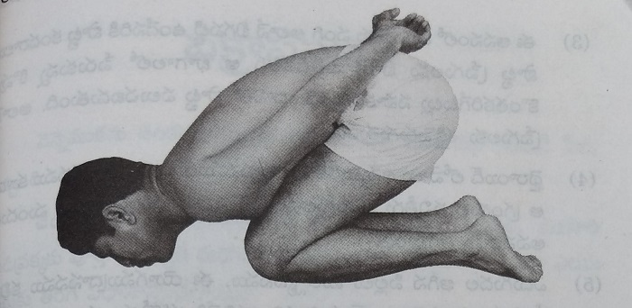
లాభాలు
1. మత్స్యాసనము చేసి తీసిన వెంటనే ఈ ఆసనము చేయడం వలన మత్స్యాసనములో బాగా వ్యాకోచించిన థైరాయిడ్, పారాథైరాయిడ్ గ్రంథులు ఈ ఆసనంలో బాగా సంకోచించుకోవడం జరుగుతుంది. ఎప్పుడైతే ఇలా రెండు రకాల కదలికలు ఒక అవయవానికి వస్తాయో రక్తం రాకపోకలు ఎంతగానో మెరుగు అవుతాయి. ఆ గ్రంథులలోని కణాలు పిండినట్లు (స్క్వీజ్ అయినట్లు) అవుతాయి. దానితో ఆ గ్రంథులు, వాటి కణాలు ఎంతో శక్తిని, ప్రాణవాయువుని అధికంగా అందుకుంటాయి.
2. ఈ ఆసనములో ఉన్నంతసేపూ పూర్తిగా కుంభించి ఉంచడం వలన ఊపిరితిత్తులు పూర్తిగా సంకోచించుకొని, పూర్తిగా ముడుచుకునే శక్తిని పొందుతాయి. ఆసనం తీసిన వెంటనే మనం గాలిని దీర్ఘంగా ఎక్కువగా పీల్చుకోగలుగుతాము. దీనవలన మన శ్వాసక్రియ దీర్ఘముగా జరిగేటట్లు అలవాటు పడుతుంది. దీర్ఘశ్వాసలు మనము రోజంతా తీసుకోగలిగితే ఎంతో శక్తి పెరుగుతుంది.
3. ఈ ఆసనంలో ముందుకు వంగి అలానే బిగపట్టి ఉండేసరికి పొట్ట కండరాలు, పొట్ట ప్రేగులకు బాగా ఒత్తిడి కలిగి ఆ భాగాలలో పేరుకున్న కొవ్వు కొంత కరిగేటట్లు సహకరిస్తుంది. దానితో పొట్ట పలుచబడుతుంది. అలాగే ప్రేగులకు శక్తి పెరుగుతుంది.
4. థైరాయిడ్ లోపాలు ఉన్నవారికి మత్స్యాసనముతోపాటు ఈ ఆసనము కూడా ఆ గ్రంథుల పని తీరు మెరుగు అవడానికి సహకరించి థైరాయిడ్ మందుల అవసరాన్ని తగ్గిస్తుంది.
5. ఎదుగుదల ఆగిన పిల్లలు మత్స్యాసనము, ఈ యోగముద్రాసనము కలిపి చేయడం వలన థైరాయిడ్ గ్రంథి సరిగా పనిచేసి హార్మోనులను బాగా ఉత్పత్తి చేసి ఎదిగేటట్లు సహకరిస్తుంది.
గమనిక
1. ఈ ఆసనాన్ని ఒక్కసారి చేస్తే సరిపోతుంది. తేలికగా ఉందని ఎక్కువసార్లు చేయాలనుకుంటారు. అలా అవసరంలేదు.
2. ఈ ఆసనంలో గాలిని కుంభించడం వలనే థైరాయిడ్ గ్రంథి, గొంతుభాగం బాగా ముడుచుకోవడానికి అవకాశం ఉంది. ప్రత్యేకించి ఆ లాభం కొరకు ఇక్కడ కుంభించడం జరుగుతుంది. మనము ఈ ఆసనంలోనే కుంభించడాన్ని చేస్తాము తప్ప వేరే ఆసనాలలో ఇలా చేయము.
3. ఎవరన్నా మత్స్యాసనము చేయకపోతే ఈ ఆసనము కూడా చేయనవసరం లేదు. మత్స్యాసనము ప్రత్యేకించి ఫలితం రావడానికి ఈ ఆసనంలో వెంటనే ముందుకు వంచాము.
4. ఈ ఆసనంలో చాలామందికి ఎంతసేపు ఉన్నా అంత ఇబ్బంది ఉండదు. దానితో ఎక్కువసేపు ఉండకుండా కుంభకమును తోడుచేసుకోవడం వలన 20, 25 సెకనులలో అందరూ తీసివేస్తారు. ఆ సమయం ఫలితానికి సరిపోతుంది.
5. మెడనొప్పి, నడుమునొప్పి, కాలుజాలు మొదలగు ఇబ్బందులున్నవారు ఈ ఆసనాన్ని వేయరాదు.
వక్రాసనము
వెన్నముకను వంకరగా ప్రక్కకు తిప్పడంవలన దీనికి వక్రాసనమనే పేరు వచ్చింది.
చేయువిధానం: వక్రాసనమును రెండు ప్రక్కలకు చేయాలి. ఒకసారి కుడిప్రక్కకు పూర్తిగా త్రిప్పితే మరోసారి ఎడమ ప్రక్కకు త్రిప్పాలి. ముందుగా ఎడమ ప్రక్కకు తిరిగే విధానాన్ని చేద్దాము.
ఎడమ ప్రక్కకు
1. దుప్పటికి మధ్యభాగాన రెండు కాళ్ళను లైనుగా చాపి, రెండు చేతులను వెనుక భాగాన నేలకు ఆనించి కూర్చోవాలి. ఇప్పుడు కుడికాలిని అలా నిటారుగా చాపి ఉంచి ఎడమ కాలిని పైకి మడిచి మోకాలి వద్దకు ఎడమ పాదాన్ని జరుపుతారు.
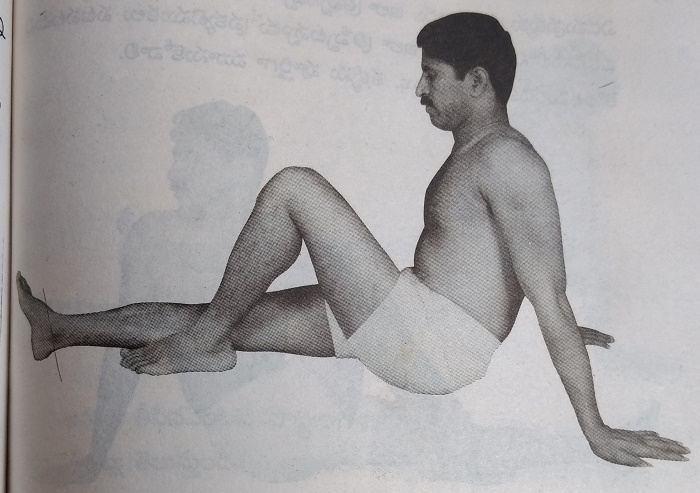
2. ఇప్పుడు కుడిచేతిని ఎడమ మోకాలి పైభాగాన నిటారుగా చాపి ఉంచుతారు. ఎడమకాలును అటు ఇటు జరగకుండా నిటారుగా బిగపట్టాలి. పోటీ కర్రలాగ ఈ కాలు వాలకుండా ఉండాలి.
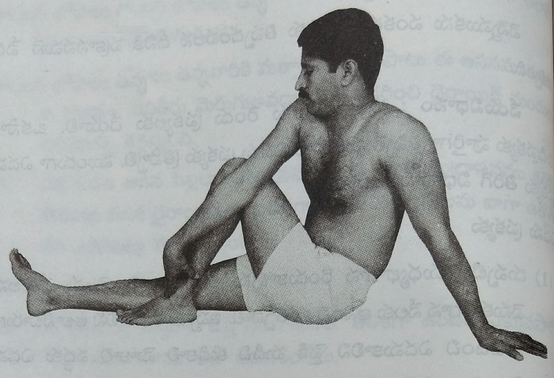
3. చాపిన కుడి చేతితో ఎడమ కాలిని నెట్టుకుంటూ నడుమును, మెడను పూర్తిగా ఎడమప్రక్కకు త్రిప్పుతారు. ఇలా త్రిప్పినప్పుడు కుడిభుజము, ఎడమభుజము ఒకలైనులోనికి రావాలి. ఇలా త్రిప్పేటప్పుడు ప్రక్కటెముకలు పటపటమని కొంతమందికి మోగుతాయి. కళ్ళను పూర్తిగా మూసుకోవాలి.
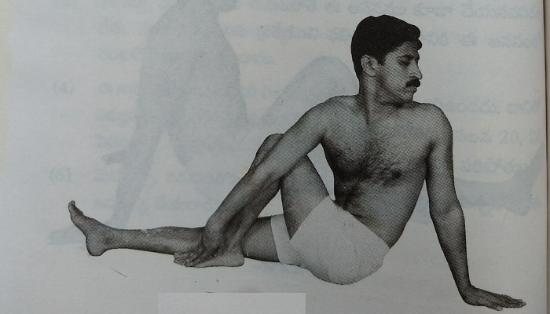
ఆసనస్థితి: ఈ ఆసనములో నడుమును త్రిప్పగలిగినంతవరకు పూర్తిగా ఎడమప్రక్కకు మెలిత్రిప్పి, అప్పుడు ప్రశాంతమైన మనస్సును నడుముభాగంలో నొప్పి వచ్చే దగ్గర లగ్నం చేస్తారు. అలా ఉండగలిగినంతసేపు చేతులు, కాళ్ళు ఏ మాత్రం కదలకుండా ధ్యానస్థితిలో అలానే ఉంటారు. ఎంతసేపు ఉండగలిగితే అంత లాభం, నడుము భాగం, పొట్ట ప్రక్కల భాగాలలో నొప్పి ఎక్కువై ఇక ఉండలేనప్పుడు ఆసనాన్ని తీయాలి. ఈ ఆసనంలో ఉన్నంతసేపూ పొట్ట మెలిత్రిప్పడంవలన శ్వాసక్రియ ఊపిరితిత్తుల చివరిభాగం వరకు వెళ్ళదు. పై భాగాలలోనే (ఛాతీభాగంలో) శ్వాస నడుస్తూ ఉంటుంది. అందువల్ల ఈ ఆసనంలో ఉన్నప్పుడు కొద్దిగా ఆయాసం అనిపించవచ్చు. పొట్ట ఎక్కువ ఉన్నవారికి ఇంకా ఎక్కువ ఉంటుంది. ఉండగలిగిన వరకు ఎవరైనా ఉంటే సరిపోతుంది. శక్తికి మించి ఉండాలని ప్రయత్నించవద్దు.
విశ్రాంతిస్ధితి: ఆసనాన్ని తీసేటప్పుడు కళ్ళుమూసుకుని ఉంచి, మెడను ముందుకు లైనుగా త్రిప్పి కుడిచేతిని మెల్లగాతీసి వీపు వెనుకభాగాన్న ఆనించి మెడను వెనక్కి వాలవేసి ఫ్రీగా సుఖాసనములో కూర్చుంటారు. ఇప్పుడు శ్వాసక్రియ దీర్ఘంగా, చాలా నెమ్మదిగా జరుగుతూ ఉంటుంది. ఇప్పుడు మనస్సును శ్వాసలపై పెట్టి ఏ ఆలోచనా రాకుండా చేసుకోవాలి.
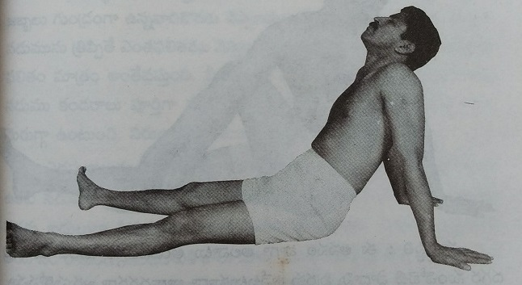
ఆసనం తీసిన వెంటనే పొట్టభాగానికి, నడుము ప్రక్కల భాగానికి జమ్మని రక్తం వెళ్ళినట్లు తెలుస్తుంది. ఏ భాగంలో నొప్పి ఆసనంలో ఉండగా వచ్చిందో ఆ భాగాలకు ఇప్పుడు ఎక్కువ రక్తం వెళుతూ ఉంటుంది. అలా ఆ భాగాలకు రక్తప్రసరణ జరిగి ఆసనంలో ఎక్కువ ఫలితం రావాలంటే సుమారు 1, 2 నిముషాలపాటు ఈ విశ్రాంతి ఆసనంలో అలా ప్రశాంతంగా ఉండాలి. పూర్తిగా శ్వాసక్రియ సహజస్థితికి వచ్చాక కుడిప్రక్కకు తిరిగే వక్రాసనాన్ని చేయాలి. ఇప్పుడు అది ప్రారంభిద్దాం.
కుడి ప్రక్కకు: ఇప్పుడు ఎడమకాలిని నిటారుగా వాలకుండా లైనుగా చాపి, కుడికాలును పైకి మడిచి ఎడమమోకాలి వద్దకు కుడిపాదాన్ని జరుపుతారు. ఇప్పుడు ఎడమచేతిని కుడి మోకాలి పైభాగాన నిటారుగా చాపి ఉంచుతారు. కుడికాలును అటు ఇటు జరగకుండా నిటారుగా బిగించి ఉంచవలను. చాపిన ఎడమచేతితో కుడికాలును నెట్టుకుంటూ నడుమును, మెడను పూర్తిగా కుడిప్రక్కకు త్రిప్పుతారు. కళ్ళను పూర్తిగా మూసుకొని పైన ఎడమప్రక్కకు చేసిన విధముగానే మనస్సు పెట్టి అలా ఆసనంలో స్థిరముగా ఉండాలి. ఆసనాన్ని తీసిన తరువాత మరలా పై సుఖాసనంలో కూర్చుని విశ్రాంతి తీసుకున్నట్లు 1, 2 నిముషాలు విశ్రాంతి తీసుకుంటారు.
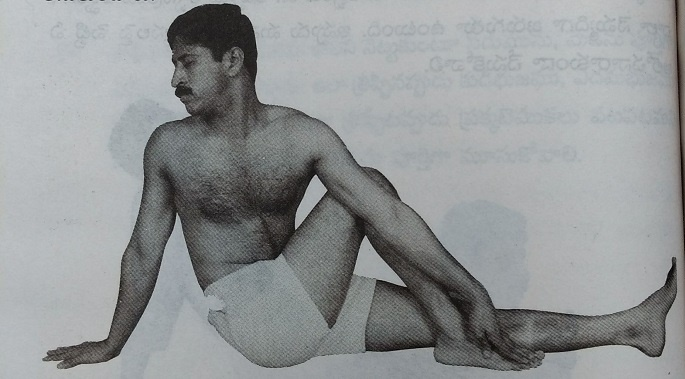
పూర్ణస్థితి: ఈ ఆసనం బాగా అలవాటు అయిన దగ్గర నుండి మోకాలి దగ్గర నుంచోబెట్టి పాదాన్ని పిర్రకు ఆనేటట్లు కూడా బాగా దగ్గరగా జరుపుకోవచ్చు. కాలును అంత దగ్గరకు జరపడం వలన పొట్ట కండరాలు, నడుము కండరాలు మరింతగా నొక్కుకోవడం జరుగుతుంది. దానివలన శ్వాసక్రియ ఇంకా తగ్గుతుంది. ఎక్కువ సమయం ఉండాలంటే కొద్ది కష్టముగా ఉంటుంది. అలవాటుమీద మెల్లగా అలా కాలును పైకి కొద్దికొద్దిగా జరుపుకుంటూ వెళ్ళవచ్చు. క్రొత్తగా నేర్చుకునేవారు ముందులాగానే చేయాలి.
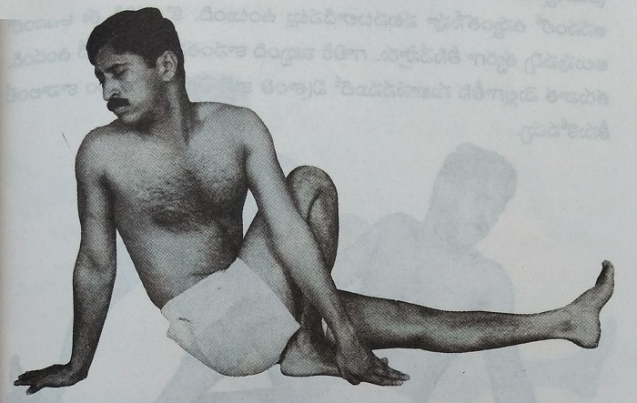
మరొకపద్ధతి: ఈ పద్ధతి బాగా లావుగా, తొడలు లావు, పొట్ట ఎత్తుగా, జబ్బలు గుండ్రంగా ఉన్నవారికొరకు చెప్పబడుచున్నది. సన్నగా ఉన్నవారికి పూర్తిగా నడుమును త్రిప్పితే ఎంత ఫలితము వస్తుందో, లావువారికి అందులో కొంత త్రిప్పినా ఫలితం మాత్రం అంతే వస్తుంది. వీరికి అలా కొద్దిగా తిరిగేసరికే పొట్టకండరాలు, నడుము కండరాలు పూర్తిగా సంకోచానికి గురి అవుతాయి. వీరికి ఫలితం చాలా మెరుగ్గా ఉంటుంది. నిరుత్సాహపడకుండా ధైర్యంగా చేయండి.
ఎడమకాలును లైనుగా నిటారుగా చాపాలి. చాపిన కాలు వాలిపోకుండా ఉంటే నడుము బాగా బిగుస్తుంది. కుడికాలును పైకి మడిచి ఎడమకాలి మోకాలి వద్దకు బదులుగా పిక్కవద్దకు పాదాన్ని జరిపి ఉంచుతారు. లావుగా ఉన్నవారికి ఆయాసం రాకుండా ఉండడానికి కాలు దూరంనుంచే పెడితే సరిపోతుంది. తరువాత ఎడమచేయి గుత్తిభాగాన్ని కుడిమోకాలిపై వేసి చేతితో పాదాన్ని నెట్టుకుంటూ మెడను, నడుమును ప్రక్కకు ఎంతవరకు త్రిప్పగలిగితే అంతవరకు త్రిప్పండి. రెండు భుజాలు వీరికి లైనుగా రావు. అయినా నష్టం లేదు. ఫొటోలో చూపించినట్లు అయినా చేయి, కాలిని పెట్టుకోవచ్చు. లేదా వారికి ఎక్కడపెడితే అనుకూలమో అక్కడపెట్టి ఈ ఆసనాన్ని వేసే ప్రయత్నం చేయండి. అలా ఉండగలిగినంత సేపు ఉండే ప్రయత్నం చేయండి. లావు ఉన్నవారికి నడము, పొట్టభాగాలు పిండినట్లు అయ్యి ఆసనంలో ఉన్నంతసేపూ పటపటలాడినట్లు ఉంటుంది. కొందరికి ఈ ఆసనంలో అలుపువచ్చి త్వరగా తీసివేస్తారు. గాలికి ఇబ్బంది కానంతవరకు అలానే ఉండండి. తరువాత మెల్లగా తీసి సుఖాసనములో విశ్రాంతి కాస్త ఎక్కువ సమయం కావాలంటే తీసుకోవచ్చు.
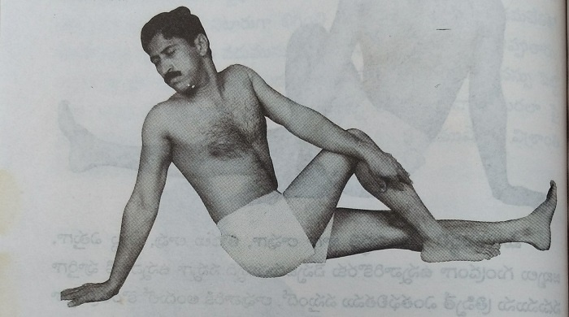
తప్పుస్థితి: వక్రాసనంలో చాలామంది తప్పులు ఎక్కువగా చేస్తూ ఉంటారు. ఆసనంలో తప్పులు చేయడం వలన వెన్నుపూస పూర్తిగా ప్రక్కకు తిరగదు. పొట్టకండరాలు, నడుముకండరాల వద్ద బిగింపు రాదు. ఆసనంలో ఎంతసేపు కూర్చున్నా టైట్ గా లేకపోయినా, ప్రక్కభాగాలలో నొప్పిరాకపోయినా, కొద్దిగా గాలి అవసరము పెరగకపోయినా ఆసనములో తప్పుచేసినట్లు లెక్క.
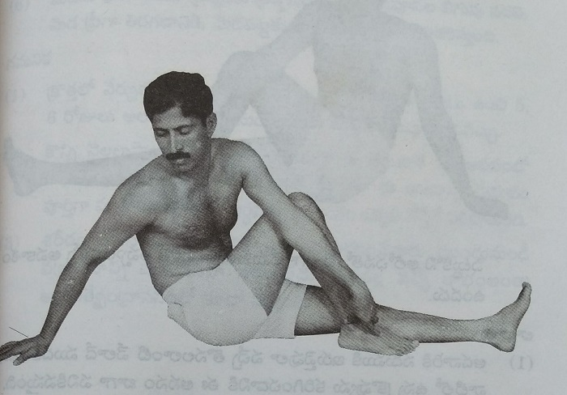
1. ఫొటోలో వేసిన ఆసనము చూస్తే ఎడమకాలు ప్రక్కకు కొద్దిగా జారింది. ఇక్కడ ఎడమచేతితో కుడికాలును సరిగా నెట్టనందువల్ల నడుము కుడిప్రక్కకు సగభాగమే తిరిగింది. భుజాలు లైనుగా రావలసినవి అడ్డముగా ఉన్నాయి. నడుము సరిగా త్రిప్పనందువల్ల కుడిచెయ్యి కూడా ఎడమకాలు లైనులో ఉండవలసినది కుడిప్రక్కనే ఉంది. ఇలా చేస్తే ఆసనంలో సుఖంగా ఉంటుంది. చూసేవారికి అన్నీ కరెక్టుగానే పెట్టినట్లు ఉంటుంది. చేసే మనకు కూడా తప్పు కనబడదు. ఎంతసేపు ఆసనంలో కూర్చున్నా ఇబ్బంది ఉండదు. ఆసనంలో నడుము, వెన్నుపూసలు, పొట్టకండరాలు బాగా తిరిగితే శ్వాసక్రియ వేగంగా నడుస్తుంది. ప్రతి ఒక్కరూ బాగా గమనించుకుని ఆసనంవేస్తే ఇలాంటి తప్పులు రావు.

2. ఈ ఆసనంలో ఎడమకాలు పూర్తిగా వాలిపోవడం మీకు కనిపిస్తుంది. మిగతాది అంతా బాగానే త్రిప్పినట్లు అనిపిస్తున్నది. ఇక్కడ ఎక్కడా తప్పులేనట్లు అనిపిస్తుంది గదూ! ఈ ఆసనంలో ముఖ్యంగా చేసే తప్పు ఏమిటంటే శరీరం అంతా ఎడమపిర్ర పైకి వాలిపోయి కుడిపిర్ర గాలిలోనికి లేచింది. ఇలా ఒక ప్రక్కకు వాలిపోతే నడుము, పొట్టభాగాలు బిగియవు. రక్తప్రసరణ కొన్ని భాగాలలో ఆగవలసిన చోట ఆగదు. దానితో అసలు ఫలితం రాదు. కాబట్టి నడుమును ప్రక్కకు త్రిప్పేటప్పుడు లైనుగా నిటారుగా కూర్చుని త్రిప్పడం చేస్తే ఇలా జరగదు. ప్రతి ఒక్కరూ ఆసనాన్ని వేసేటప్పుడు మనస్సును దగ్గర పెట్టుకొని ఆలోచనతో మెల్లగా చేసుకుంటూ వెళితే తప్పులు వచ్చే అవకాశం ఉండదు.
లాభాలు
1. ఆడవారికి నడుముకి ఇరువైపులా వచ్చే తొనలలాంటి వేలాడే ముడతలను, వాటిలో ఉన్న క్రొవ్వును కరిగించడానికి ఈ ఆసనం బాగా పనికివస్తుంది.
2. నడుము భాగాన్ని బాగా త్రిప్పి, అలా బిగించి ఉండడంవల్ల ఈ ఆసనం వేసినపుడు మీకు ఏ భాగంలో నొప్పి ఎక్కువగా వచ్చిందో ఆ భాగంలో క్రొవ్వు కరిగి నడుము సన్నగా అయ్యేటట్లు చేస్తుంది. అందరికీ ఎక్కువ కండ, క్రొవ్వు పేరుకొనేది ఆ భాగములోనే. ప్రత్యేకించి ఈ ఆసనం వల్ల వచ్చే లాభం అదే.
3. వెన్నుపూసలకు, కండరాలకు మధ్య ఉండే కదలికలు ఈ ఆసనములో మనం ప్రక్కలకు త్రిప్పి ఉన్నప్పుడు మంచిగా వస్తాయి. దానితో మనకు అలాంటి పనులలో నడుమును ముందుకు వంచినా, ప్రక్కలకు త్రిప్పినా నడుము పట్టడం, కండరాలు పట్టడం అనేది గానీ ఉండదు.
4. వెన్నుపూసకు ఇరువైపులా ఉండే కండరాలకు బాగా రక్తప్రసరణ జరుగుతుంది. మెడ దగ్గర నుండి ముడ్డిపూసల వరకు ప్రతీపూస వక్రాసనములో ప్రక్కకు బాగా త్రిప్పబడతాయి. దానితో పూసలు, డిస్క్ లు అన్నీ బలంగా తయారవుతాయి.
5. ఏ క్రొవ్వు నడుముకు ఇరువైపులా లేనివారికి ఈ ఆసనం వలన నడుము భాగం బాగా బిగుస్తుంది.
6. మెడను బాగా రెండు ప్రక్కలకు త్రిప్పడం వలన మెడపూసల బిగువు సడలి, మెడ ఫ్రీగా తిరగడానికి, మెడపట్టకుండా ఉండడానికి సహకరిస్తుంది.
గమనిక
1. క్రొత్తలో నేర్చుకునేటప్పుడు ఈ ఆసనాన్ని 10, 15 సెకన్లుపాటు ఉంచి 5, 6 రోజులు అలవాటైన దగ్గర నుండి ఉండగలిగినంతసేపు ఉండవచ్చు.
2. కొన్ని నెలలపాటు ఈ ఆసనాన్ని చేయగా ఆ తరువాత ఈ ఆసనంలో ఎంతసేపున్నా ఇబ్బందిగానీ, నొప్పిగానీ లేకపోతే ఈ ఆసనాన్ని చేయడం పూర్తిగా మాని దీని స్థానంలో అర్థమత్స్యేంద్రాసనం ఒక్కటి వేస్తేనే సరిపోతుంది.
3. శరీరం ఆసనాలు చేయడానికి బాగా సహకరించేవారు ముందు నుండి వక్రాసనాన్ని మానివేసినా ఫరవాలేదు. దీనివల్ల వచ్చే లాభం అంతా అర్థమత్స్యేంద్రాసనంలో కూడా వస్తుంది.
అర్థమత్స్యేంద్రాసనము
ఈ ఆసనం మత్స్యేంద్రులు అనబడే యోగీశ్వరుని చేత రూపొందించబడినది కావున దీనికి అర్థమత్స్యేంద్రాసనము అని పేరు వచ్చింది. ప్రకృతి సహజంగా జంతువులలో కొన్ని నిద్రలేచిన వెంటనే బద్ధకం పోగోట్టుకోవడానికి వెన్నుముకను ముందుకు, వెనుకకు, ప్రక్కలకు పలువిధాలుగా విదిల్చి శరీరాన్ని సడలించుకుంటాయి. శరీరంలో శక్తి సంచారం కలిగించడం కోసం వెన్నుముక విదల్చడమనేది ప్రకృతి సహజమైన ప్రక్రియ. అలాగే ఈ ఆసనం ద్వారా మన శరీరంలో కూడా అనేక రకములైన కదలికలు ఉదయమే వచ్చి ఎంతో శక్తి విడుదలయ్యి శరీరంలో బహువిధాలుగా ఉపయోగపడుతుంది.
చేయు విధానము: అర్థమత్స్యేంద్రాసనములో కూడా మనము రెండు ప్రక్కలకు విడివిడిగా వక్రాసనములో మాదిరిగా చేయాలి. ముందుగా కుడిప్రక్కకు చేయడం తెలుసుకుందాము.
కుడిప్రక్కకు
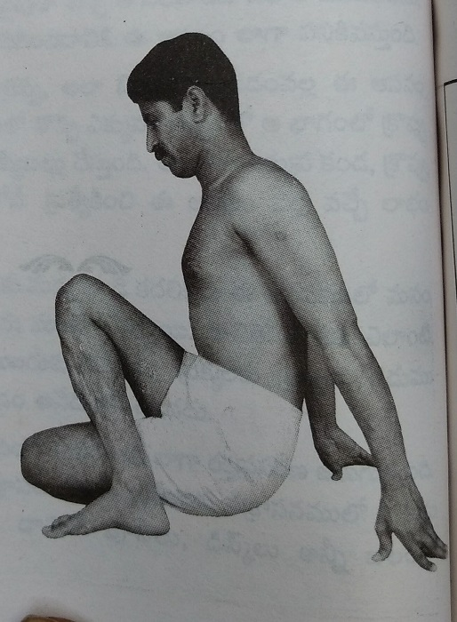
1. దుప్పటి మధ్య భాగములో కూర్చుని రెండు కాళ్ళను పూర్తిగా చాపి చేతులను వీపు వెనకాల భాగాన నేలకు ఆనిస్తారు. తరువాత ఎడమకాలిని మడిచి రెండు పిర్రల మధ్యన మడమ వచ్చేటట్లుపెట్టి ఎడమకాలి పాదంపై కూర్చుంటారు. ఆ తరువాత కుడికాలిని మడిచి పైకిలేపి ఎడమకాలి తొడను దాటించి పాదమును నేలపై ఆనేలా పెట్టాలి.
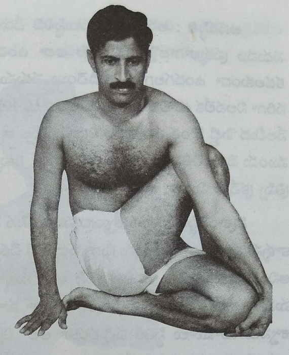
2. ఇప్పుడు ఎడమ చేతిని కుడి కాలి మోకాలిపై నుండి తీసుకునివచ్చి (వక్రాసనములో వేసినట్లు) ఎడమ మోకాలి చిప్పభాగాన్ని పట్టుకుంటారు.
3. కుడికాలిని ఎడమచేయి చంకభాగము లోనికి వెళ్ళేటట్లు బాగా నెట్టుకుంటూ నడుమును, మెడనూ కుడిప్రక్కకు త్రిప్పుతూ కుడిచేతిని నేలమీద నుండి తీసి నడుము భాగముపై పెట్టి, శరీరాన్ని ఎడమకాలి మీద ఆపగలిగి అలా కదలకుండా నిలపగలగాలి. కళ్ళను పూర్తిగా మూసి ఉండాలి.
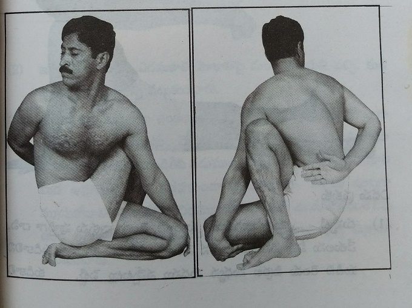
ఆసనస్థితి: ఆసనంలో అసలుస్థితిని చేరుకున్నాక మనస్సును పొట్టక్రింద, నడుము ప్రక్కభాగాలపై లగ్నం చేసి అలా ఉండగలిగినంతసేపు పడిపోకుండా, కదలకుండా ఉండగలగాలి. కుడిచెయ్యి నడుము మీద పెట్టినందుకు ఆసనంలో సరిగా నిలవలేక తూలిపోతూ ఉంటే అలవాటు అయ్యేవరకు మధ్యమధ్యలో చెయ్యిని నేలమీద పెట్టి కొంత సహకారం తీసుకోవచ్చు. ఆసనాన్ని తీసివేద్దామనుకున్నప్పుడు ముందు వెనుకచేతిని ముందుకు తీసుకువచ్చి, కళ్ళు మూసుకునే మెడను ముందుకు త్రిప్పి క్రమేపీ మిగతా ఆసనాన్ని తీయాలి.
విశ్రాంతిస్థితి: అర్థమత్స్యేంద్రాసనం తీసిన వెంటనే కళ్ళు మూసుకుని రెండు కాళ్ళను పూర్తిగా చాపి, కాళ్ళను ఫ్రీగా పెట్టుకొని చేతులను ఛాతీకి వెనుకవైపు నేలపైన ఆనించి మెడను ఫ్రీగా వెనక్కి వాలేసి అలా సుఖాసనంలో 1, 2 నిముషాలపాటు మనము శ్వాసలపై లగ్నం చేసి ప్రశాంతంగా కూర్చుంటారు. పూర్తి అలుపు తగ్గి శ్వాసలు మామూలు స్థితికి వచ్చేవరకు అలా విశ్రాంతిలోనే ఉండాలి. తరువాత ఆసనాన్ని రెండవ ప్రక్కకు వేయాలి.
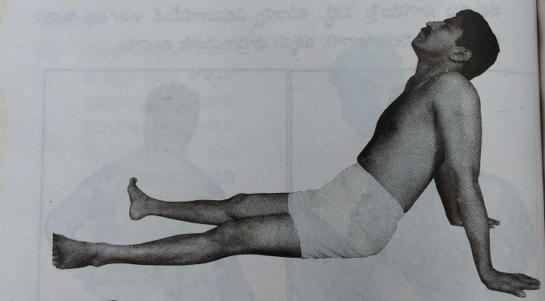
ఎడమ ప్రక్కకు
1. దుప్పటి మధ్య భాగములో కూర్చుని, రెండు కాళ్ళను పూర్తిగా చాపి, చేతులను వీపు వెనకాల భాగాన నేలకు ఆనిస్తారు. తరువాత కుడికాలిని మడిచి రెండు పిర్రల మధ్యన మడము వచ్చేటట్లు పెట్టి, కుడికాలి పాదముపై కూర్చుంటారు. తరువాత ఎడమ కాలిని మడిచి పైకిలేపి కుడికాలు తొడను దాటించి ఆ ప్రక్క నుంచో బెడతారు.
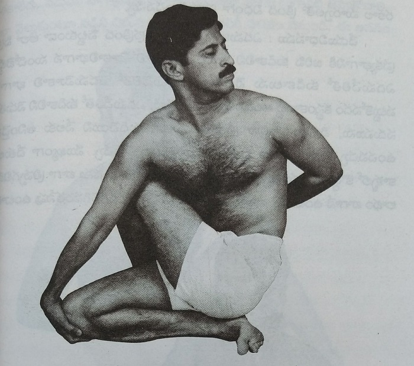
2. ఇప్పుడు కుడిచేతిని ఎడమకాలి మోకాలిపై నుండి తీసుకుని వచ్చి, కుడి మోకాలి చిప్పభాగాన్ని పట్టుకుంటారు.
3. ఎడమకాలిని కుడిచేయి చంకభాగము లోనికి వెళ్ళేటట్లు కుడిచేతితో బాగా నెట్టుకుంటూ నడుమును, మెడను పూర్తిగా ఎడమప్రక్కకు త్రిప్పుతూ ఎడమచేతిని నేల మీద నుండి తీసి నడుము భాగముపై పెట్టి, శరీరాన్ని కుడికాలి మీద ఆపగలిగి అలా కదపకుండా నిలపగలగాలి. కళ్ళను పూర్తిగా మూసుకోవాలి. పైన చేసిన విధముగానే ఆసనంలో ఉండగలిగినంతసేపు ఉండి తరువాత విశ్రాంతి ఆసనంలో 1, 2 నిముషాలు పూర్తి విశ్రాంతి తీసుకుంటారు.
వేరొక పద్ధతి: బాగా తొడలు లావుగా ఉన్నవారు, పొట్ట పెద్దదిగా ఉన్నవారు ఈ ఆసనం వేయాలంటే శరీరం సహకరించదు. ఎక్కువ ఇబ్బంది లేకపోతే కొన్ని రకాల మార్పులతో క్రింది విధంగా ప్రయత్నించవచ్చు.
చేయువిధానము: ఎడమకాలిని మడిచి పిర్రక్రింద పెట్టకుండా అలా పిర్ర ప్రక్కభాగానికి జరిపి కుడికాలిని మడిచి ఎడమకాలి మోకాలిభాగాన నుంచోబెట్టి, ఎడమచేతితో కుడికాలును నెడుతూ, ఎడమచేతితో ఎడమమోకాలి భాగాన పట్టుకోవడం కష్టం కాబట్టి అందినవరకు చేతినిపెట్టి, ఎడమచేతితో కుడికాలిని నెడుతూ నడుమును, మెడను పూర్తిగా ప్రక్కకుత్రిప్పుతూ, కుడిచేయిని నేలకు ఆనించైనా ఉంచవచ్చు. లేదా నడుము పైభాగాన అన్నా పెట్టుకోవచ్చు. ముఖ్యంగా చేతులు, కాళ్ళలో కొద్దిపాటు మార్పులు చేసినప్పటికీ నడుమును, మెడను బాగా త్రిప్పగలిగితే లాభం బాగానే ఉంటుంది. ఇలా రెండు ప్రక్కలకు చేసి ఉండగలిగినంతసేపు ఉంటారు.
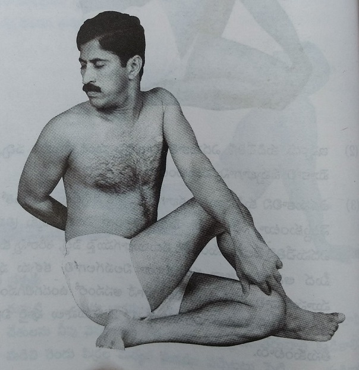
తప్పుస్థితి: చేతులను, కాళ్ళను పెట్టుకోవడం అంతా బాగానే ఉంది. కాకపోతే ఇందులో ఫ్రీగా కూర్చున్నట్లు ఉంది. ఈ స్థితి తెలుస్తుందంటే నడుమును త్రిప్పడం చేతకాలేదు. నడుము బాగా ప్రక్కకు తిరగాలంటే చేతితో కాలిని బాగానెట్టి తిప్పుకోవాలి. అలా నెట్టుకుంటూ నడ్డిని విరుస్తూ త్రిప్పితే అందరికీ ఫలితం వస్తుంది. ఈ ఆసనం సరిగా వేయకపోతే శ్వాసక్రియ మామూలుగానే ఉంటుంది. అదే ఆసనంలో బాగా నడుమును త్రిప్పితే శ్వాస వక్రాసనంలో కంటే ఇంకా బరువుగా కష్టంగా తీసుకోవాల్సి వస్తుంది. అలా ఉంటే ఆసనంలో ఫలితం వస్తుంది. ఈ ఆసనంలో ఏ భాగంలో కూడా నొప్పి రాకుండా తేలికగా, సుఖంగా ఆసనం ఉంది అంటే ఎక్కడో తప్పుచేసినట్లే లెఖ్ఖ. ఇలా అనిపిస్తే మరలా ఆసనాన్ని అన్ని విధాలా జరిపి బాగా త్రిప్పి చూసుకోవాలి. అంతే తప్ప ఏదో వేసుకొని వెళ్ళిపోకూడదు.
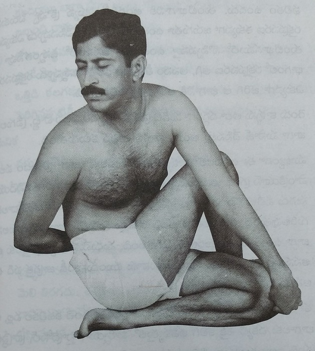
లాభాలు
1. వక్రాసనములో కంటే ఈ ఆసనం రెట్టింపు కష్టంగా ఉంటుంది. రెండు కాళ్ళను ఈ ఆసనంలో బాగా దగ్గరకు మడిచి పెట్టడంవలన ముఖ్యంగా తుంటి భాగాలలో క్రొవ్వు కరుగుతుంది. అదే వక్రాసనములో అయితే ఈ ఫలితం ఉండదు. తుంటిభాగానికి అందరికీ ఎక్కువ క్రొవ్వు పేరుకుని, రక్తప్రసరణ తక్కువగా జరుగుతూ ఉంటుంది. ఆసనాన్ని వేసినప్పుడు ఎక్కువగా తుంటి భాగములో నొప్పివస్తూ ఉంటుంది. ఆసనంలో ఉన్నంతసేపూ ఆ భాగంలో రక్తప్రసరణ ఆగి, ఆసనం తీసి విశ్రాంతిలో ఉన్నప్పుడు రక్తప్రసరణ ఎక్కువగా జరిగి ఆ భాగానికి ఆరోగ్యాన్ని కలిగిస్తుంది.
2. రెండు కాళ్ళను అలా దగ్గరగా మడిచి ప్రక్కకు తిప్పడం వలన పొట్ట, ప్రేగులకు బాగా మసాజ్ చేసినట్లు అయ్యి, వాటికి లాభం కలుగుతుంది.
3. ముఖ్యంగా ఈ ఆసనంలో కాళ్ళను మడిచి ప్రక్కకు బాగా త్రిప్పడం వలన పాంక్రియాస్ గ్రంథి (ఇన్సులిన్ ను ఉత్పత్తి చేసే గ్రంథి - ఇది సరిగా పనిచేయకే సుగరు వచ్చేది) పై ఎక్కువ ఒత్తిడిపడి ఆ గ్రంథి బాగా సంకోచ వ్యాకోచాలకు గురి అవుతుంది. దానివలన ఆ గ్రంధథి పనితీరు మెరుగు అయ్యి హార్మోనులను బాగా ఉత్పత్తి చేసే సామర్థ్యం పెరుగుతుంది. మధుమేహవ్యాధిగ్రస్తులకు ఈ ఆసనం చాలా మంచిది. సుగరు లేనివారు ముందు నుండి జాగ్రత్త పడి ఈ ఆసనం వేస్తే మంచిది.
4. ఈ ఆసనం బొడ్డు క్రింద భాగం అవయవాలలో కలిగించే కదలికల వల్ల, ఆ భాగాలకు చక్కటి శక్తి కలిగి భవిష్యత్తులో హెర్నియా, హైడ్రాసిల్, ప్రొస్ట్రేట్ గ్రంథి ఇబ్బందులు లాంటివి రాకుండా కాపాడగలుగుతుంది.
5. ఈ ఆసనంలో నడుముకు ఇరువైపులా ఉన్న కొవ్వు బాగా కరిగి నడుము సన్నబడుతుంది. నడుము ఇరువైపులా క్రొవ్వు కరిగి, ఆ భాగాలు సన్నగా అవ్వడానికి ఇదే మంచి ఆసనం.
6. వెన్నుముక లోపలనుండి వచ్చే నరాలు, బయట ఉండే నరాలు ఈ ఆసనంలో బాగా ఉత్తేజితమై ఎక్కువశక్తిని పుంజుకుంటాయి.
7. మనం ఎప్పుడూ నడుమును ప్రక్కలకు, వెనక్కి త్రిప్పడం అనేది చేయము. దానితో వెన్నుపూసలన్నీ బాగా టైట్ గా ఉంటాయి. అలాగే వెన్నుచుట్టూ ఉండే కండరాలు కూడా బిగుతుగా ఉంటాయి. ఈ ఆసనములో నడుమును బాగా ప్రక్కకు, ఇరువైపులకు త్రిప్పి ఉంచడం వలన వెన్నుపూసలు, వాటిని పట్టుకున్న కండరాలు బాగా ఫ్రీగా అయ్యి రోజంతా ఎటుపడితే అటు తిరిగినా వంగినా ఇబ్బంది రాకుండా కాపాడుతాయి.
8. రోజూ అర్థమత్స్యేంద్రాసనము చేయడంవలన డిస్కులు (వెన్నుపూసల మధ్య ఉండే స్పాంజిలాంటి కండ) సరైన స్థానంలో ఉండి, వెన్నుపూసలకు, నరాలకు ఒత్తిడి కలగకుండా కాపాడుతుంది. దానివలన భవిష్యత్తులో వయస్సు పెరిగినప్పటికీ నడుమునకు సంబంధించిన ఇబ్బందులు రావు.
గమనిక
1. నడుమునొప్పి, కాలుజాలు ఇబ్బంది ఉన్నవారు ఈ ఆసనం చేయరాదు.
2. క్రొత్తలో నేర్చుకునేటప్పుడు ముందు వక్రాసనమును 10, 20 రోజులు బాగా సాధనచేసి అది బాగా వచ్చిన తరువాత చేస్తే మంచిది. బాగా లావున్నవారు. ఇబ్బందులు ఎక్కువ ఉన్నవారు క్రమేపీ సాధన చేయవచ్చు.
3. ఈ ఆసనములో ముఖ్యముగా ఒక ప్రక్కకు తిరగవలసినది పోయి, ఇంకొక ప్రక్కకు నడుమును త్రిప్పుతూ ఉంటారు. ఫలితం అసలుండదు. నడుము మెలి తిరగదు. తప్పులు రాకుండా ఉండాలంటే కుడికాలును నుంచోబెడితే దానిపై ఎడమచేతిని వేయాలి. అలాగే ఎడమ కాలిని నుంచోబెడితే కుడిచేతిని వేసి చేతితో కాలిని నెట్టుకుంటూ త్రిప్పితే తప్పురాదు.
4. బాగా లావున్నవారు, తొడలు ఉన్నవారు, బాగా పొట్ట ఎక్కువగా ఉన్నవారు ఈ ఆసనం వేయడానికి సరిగా రాకపోతే మానివేయడం. ఇది వేయలేక పోయామే అని ఆలోచనవద్దు. మీకు ఇందులో రావలసిన ఫలితం అంతా వక్రాసనములోనే పూర్తిగా వస్తుంది. ఈ ఆసనం వచ్చేదాకా వక్రాసనమును బాగా చేసుకోండి.
గోముఖాసనము
ఈ ఆసనములో మోకాళ్ళు రెండు ఒకదానిపై ఒకటి దగ్గర చేర్చి ఉండడం వలన ఆవు ముఖాకారాన్ని పోలి ఉండును. అందుచేత ఈ ఆసనానికి గోముఖాసనమనే పేరు వచ్చింది.
చేయువిధానము: ఈ ఆసనాన్ని కూడా రెండుసార్లుగా చేయవలసి వస్తుంది. ఒకసారి కుడిసంబంధముగా, మరోసారి ఎడమసంబంధముగా చేయాలి. ముందు కుడిభాగానికి చేద్దాము.
కుడిప్రక్కకు
1. రెండు కాళ్ళను తిన్నగా చాపి కూర్చుని, ముందు కుడికాలిని బాగా దగ్గరగా మడిచి, కుడిపాదాన్ని ఎడమ పిర్ర ప్రక్కభాగానికి చేర్చి ఉంచాలి. తరువాత ఎడమ కాలిని మడిచి రెండు చేతులతో పాదాన్ని పట్టుకొని, కుడికాలి తొడమీదగా లాగుతూ కుడిపిర్ర ప్రక్కభాగానికి చేరుస్తారు. రెండు మోకాళ్ళు బాగా దగ్గరగా కలిసేటట్లు కాళ్ళను లాగుకుంటారు.
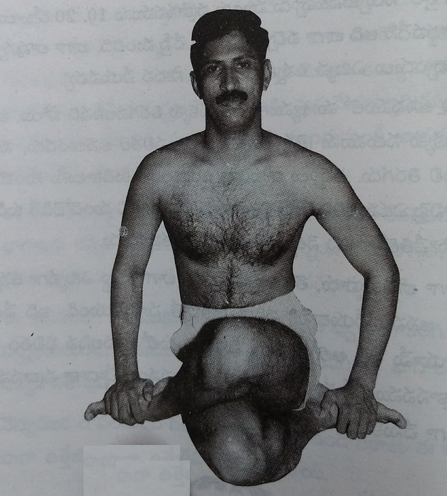
2. కుడిచేతిని వీపు తోముకోవడానికి పెట్టినట్లు వీపు వెనుకభాగానికి చేర్చి ఎంతపైకి నెట్టగలిగితే అంతపైకి నెట్టి ఉంచాలి. తరువాత ఎడమచేయి ఆకాశాన్ని చూసేటట్లు చెవి ప్రక్కనే పెట్టి తిన్నగా పైకి లేపాలి. ఇప్పుడు ఎడమచేతిని మోచేతి వరకు వెనక్కి వంచి వీపు భాగానికి చేరుస్తారు. ఇప్పుడు రెండు చేతివ్రేళ్ళను కలిపి పట్టుకోగలగాలి. అలా పట్టుకొని కళ్ళు మూసుకోవాలి. ఎడమ మోచేయి ఆకాశాన్ని చూసే విధముగా లైనుగా ఉంచాలి. మెడను నిటారుగా, నడుమును నిటారుగా జరుపుకోవాలి.
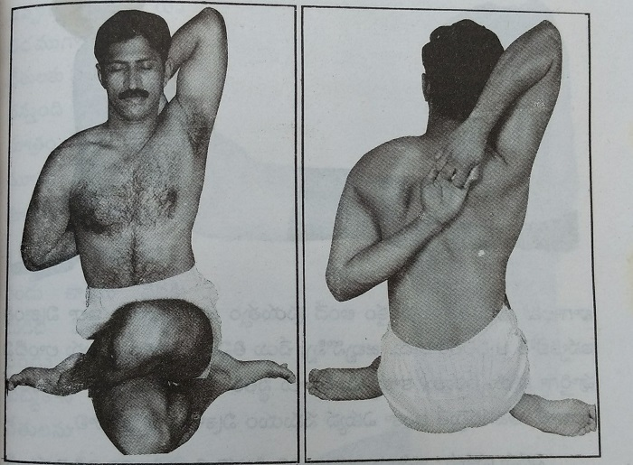
ఆసనస్థితి: రెండు చేతులను బాగా దగ్గరగా పట్టుకునేటట్లు లాగే ప్రయత్నం చేసి, గోమూఖాసనం 90 డిగ్రీలు ఉండేటట్లు జాగ్రత్తపడి మనస్సును కుడిచేయి జబ్బభాగంపై లగ్నంచేసి అలా ఉండగలిగినంతసేపు అలానే ఉండాలి. కుడి జబ్బ దగ్గర పిండినట్లు ఎక్కువ నొప్పి వస్తూ ఉంటుంది. ఆ నొప్పిని ఓర్చుకోగలిగినంతసేపు ఉండే ప్రయత్నం చేస్తారు. ఉండలేనప్పుడు రెండుచేతులు వదిలేసి ముందు పై చేయిని మెల్లగా దించి, తరువాత క్రిందపెట్టిన చేయిని జాగ్రత్తగా, మెల్లగా తీయాలి. తరువాత ఎడమకాలిని ముందుకు చాపి కుడికాలిని మెల్లగా తీసి రెండుకాళ్ళను చాపుకుంటారు.
విశ్రాంతిస్థితి: రెండు కాళ్ళను ఫ్రీగా చాపుకొని రెండు అరచేతులను నేలకు ఆనించి మెడను ఫ్రీగా వెనక్కి వాల్చి సుఖాసనంలో విశ్రాంతి తీసుకోవాలి. మనస్సును శ్వాసలపై పెట్టి ఒక నిమిషంపాటు అలా ప్రశాంతంగా ఉండాలి. ఈ విశ్రాంతి సమయంలో ఆసనములో ఉండగా కాళ్ళకు, చేతులకు ఆగిన రక్తప్రసరణ అంతా ఇప్పుడు స్పీడ్ గా ముందుకు నడిచి ఆసనములో కూర్చుని ఉండగా నొప్పి వచ్చిన భాగాలకు మరింత ఎక్కువ రక్తం అందే ప్రయత్నం జరుగుతుంది. ఇలా విశ్రాంతి ఇవ్వకపోతే ఆ ఫలితం రాదు. జబ్బనొప్పి, చేయి తిమ్మిర్లు, కాళ్ళు తిమ్మిర్లు లాంటివి పూర్తిగా పోయి చేతులు, కాళ్ళు మామూలు స్జితికి వచ్చేవరకు అలా విశ్రాంతిలో ఉండాలి. అవసరమైతే ఇంకా ఎక్కువ సమయం విశ్రాంతి తీసుకోవాలి.
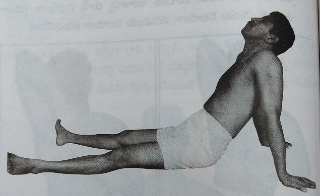
ఎడమ ప్రక్కకు: ఇప్పుడు ఎడమకాలిని క్రిందపెట్టి, కుడికాలిని పైకి పెడతారు. అలాగే ఎడమచేతిని క్రిందనుండి వెనక్కిపెట్టి, కుడిచేయిని పైనుండి వీపు వెనుక భాగానికి పెట్టి రెండు చేతులను కలిపిపట్టుకొని ముందులా అన్ని నియమాలు పాటిస్తూ, అలానే చేయాలి. ఈ ఆసనం నుండి మెల్లగాతీసి విశ్రాంతి ఆసనంలో 1, 2 నిముషాలు పూర్తి విశ్రాంతి తీసుకోవాలి.
వేరేపద్ధతులు: తొడలు బాగా లావు ఉన్నవారికి, ప్రక్కలు బాగా లావున్నవారికి కాళ్ళను అలా పెట్టి కూర్చోవడానికి రావు. అలా కూర్చోవడానికి రాకపోతే ఆసనాన్ని మానకూడదు. గోముఖాసనములో చేతులకు వచ్చే ప్రయోజనాన్ని మనం పొందడానికి కాళ్ళను మనకు అనుకూలంగా పెట్టి కూర్చుని ఆసనాన్ని చేసే ప్రయత్నం చేయాలి. క్రింద కూర్చోలేనివారు, నడుములు ఇబ్బంది ఉన్నవారు స్టూలుపై నిటారుగా కూర్చుని చేతులను పై విధముగా పెట్టి చేయవచ్చు. ఏ రకముగా మనము కూర్చున్నప్పటికీ నడుము నిటారుగా ఉండాలన్నది ముఖ్య ఉద్దేశము. గోమూఖాసనములో కూర్చోవలసిన విధముగా కూర్చుంటే చేతులకు ఫలితం వచ్చినట్లుగా కాళ్ళకూ చాలా మంచి ఫలితాలు వస్తాయి. అలా కాకుండా ఇప్పుడు చెప్పబోయే విధముగా కూర్చుంటే చేతులకు ఫలితం పూర్తిగా వస్తుంది కానీ కాళ్ళకు మాత్రం ఏమీ ఉండదు. మూడు రకాలుగా కూర్చుని చేయవచ్చు.
1. వజ్రాసనములో: రెండు కాళ్లను వెనక్కి మడిచి పిర్రల క్రింద రెండు పాదాలను పెట్టుకుని కూర్చుని చేతులను పై నుండి క్రింద నుండి పట్టుకొని ఇలా చేయవచ్చు. వజ్రాసనములో కూర్చునే చేతులను మార్చుకుంటారు.
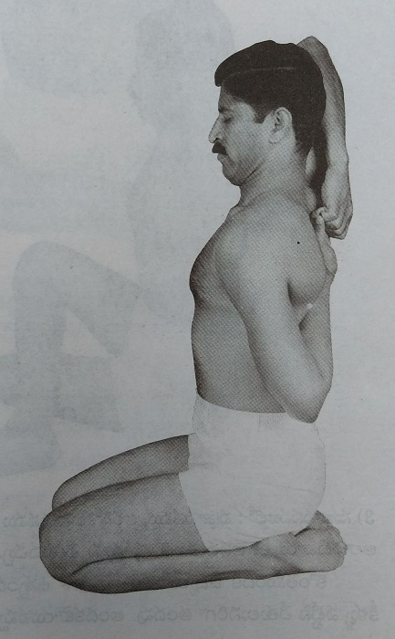
2. అర్ధగోముఖాసనములో: క్రిందపెట్టుకునే కాలు అందరికీ బాగానే వంగుతుంది. కానీ పైన పెట్టుకునే కాలు మాత్రం తొడల లావు వల్ల లేదా కీళ్ళు వంగక కొద్దిగా మాత్రమే వంగుతుంది. పూర్తి గోముఖాసనము రాకపోయినా, ఈ ఫొటోలో చూపినట్లు కాళ్ళు వంగేవారు ఇలా ప్రయత్నించడం మంచిది. ఇలా కొద్దిగా వచ్చినప్పటికీ వజ్రాసనము, సుఖాసనములో కంటే ఎక్కువ ఫలితం ఇందులోనే ఉంటుంది. కాబట్టి పూర్తి గోముఖాసనము రానివారు ముందు ఈ ఆసనాన్ని ప్రయత్నించి రాకపోతే మిగతా పద్ధతి ప్రకారం చేయవచ్చు. అర్ధగోముఖాసనము వేసినప్పటికీ నడుము మాత్రం నిటారుగా ఉండేటట్లు జాగ్రత్తపడాలి.
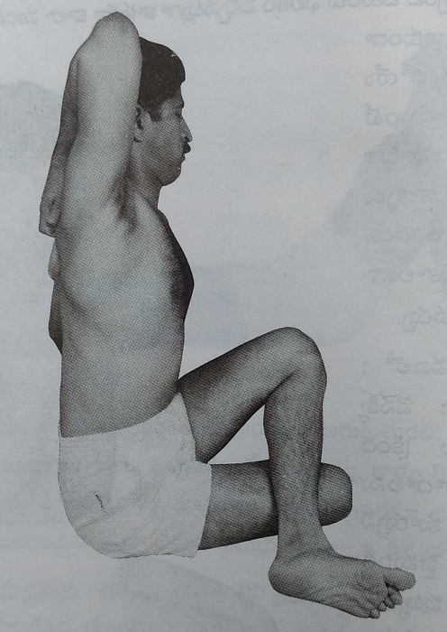
3. సుఖాసనముులో: వజ్రాసనము, అర్ధగోముఖాసనము రానివారు కూడా ఉంటారు. అలాంటివారు ఈ ఆసనములో కూర్చుని చేయవచ్చు.
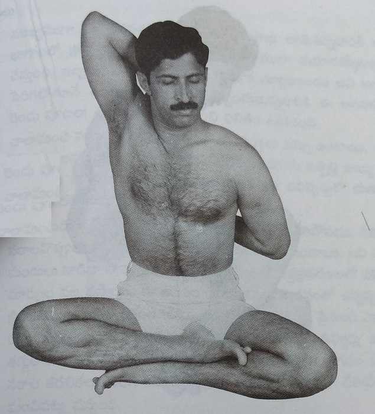
కొంతమందికి జబ్బలు బాగా లావుగా ఉన్నందువల్ల, మరికొంత మందికి కీళ్ళు పట్టేసి చేతులు సరిగా అందవు. అందకపోయినప్పటికీ ఎంత వరకు చేతులను నెట్టుకోగలిగితే అంతవరకు నెట్టి ఆపడం వలన లాభం బాగానే ఉంటుంది. ఇంకా అందుకోవాలనే ప్రయత్నం చేయాలంటే పైన పెట్టే చేతిలో జేబురుమాలను చుట్టిపెట్టుకొని, జేబురుమాలను వెనక్కి వ్రేలాడవేసి, ఆ జేబురుమాలను క్రింద చేతితో పట్టుకొని, చేతులను మెల్లగా ఆ జేబురుమాలు సహాయముతో జరుపుకోవచ్చు. ఒకరు చేస్తూ ఉండి ఆ చేతులు అందకపోతే మరొకరు ఆసనాలు తెలిసినవారు చేతులను కొద్దిగా కదిపి అందించే ప్రయత్నం చేయవచ్చు. జాగ్రత్తగా నెట్టకపోతే గూళ్ళు జారతాయి. చేతులు పూర్తిగా అందకపోయినప్పటికీ ఆసనం వేసినప్పుడు నొప్పులు బాగా వస్తుంటే ఫలితం మీకే ఎక్కువ. ఏమీ బెంగవద్దు.
తప్పుస్థితి:
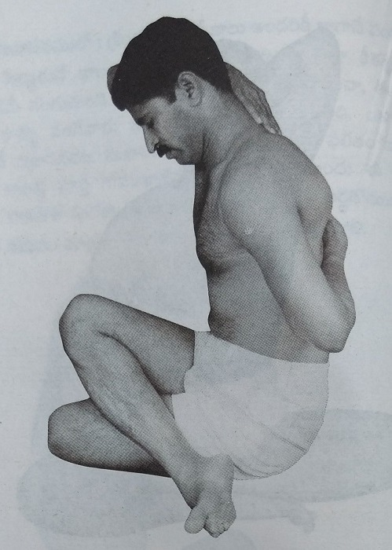
ఇంత సులభమైన గోముఖాసనములో కూడా చాలా మంది ఏదో ఒక తప్పు చేస్తూ తక్కువ ఫలితాన్ని పొందుతూ ఉంటారు. ముఖ్యంగా చేసే తప్పులలో పై చేయిని నిటారుగా ఆకాశాన్ని చూసేటట్లు పెట్టకపోవడం. అందరికీ పై చేయి బాగానే వెళుతుంది. కొంతనెట్టి చేయిని అక్కడే ఆపేస్తారు. ఇంకా నెట్టాలని ప్రయత్నించి లైనుగా ఉండేటట్లు చూసుకోవాలి. అలాగే క్రిందచేతిని కూడా బాగా జరిపి పైకినెట్టాలి. అలా చేయకుండా ఏదో వెనక్కి పెట్టాములే అంటే ఫలితం రాదు. నడుము ముందుకు వంచితే చేతులకు బిగింపురాదు. దానితో ప్రయోజనం రాదు ఎంతసేపు ఉన్నా చేతులు సుఖముగానే ఉంటాయి. ఫొటోలో మెడ, చేయి రెండూ ముందుకు వంగాయి. క్రింద చేతిని బిగపెట్టకుండా నడుమును ముందుకు వంచడం జరిగింది. దీనిని మంచిగా చేసిన ఆసనములతో పోల్చి చూసుకోండి. ఎంత ఫ్రీగా ఉందో తెలుస్తుంది. ఈ ఫొటోలో ఉన్న మాదిరిగా ఏ తప్పు చేసినా లాభం మాత్రం ఉండదు.
లాభాలు
1. ముఖ్యముగా ఈ ఆసనమువల్ల జబ్బలు, భుజాలు లావు ఉన్నవారికి ఆ భాగాలలో క్రొవ్వును కరిగించి భుజాలు అందముగా తయారయ్యేటట్లు చేస్తుంది. జబ్బలు, భుజాలు తగ్గడానికి ఇంకొక మార్గముండక అవి అలా పెరిగిపోతూనే ఉంటాయి. అలాంటి ఇబ్బందులున్నవారికి ఈ ఆసనాన్ని రెండు పూటలా చేయడం ద్వారా మంచి ఫలితం ఉంటుంది.
2. చాలామంది వయస్సు పెరిగే కొద్ది గూళ్ళలో నొప్పులు వస్తూ ఉంటాయి. ఈ ఆసనం వలన భుజం కీలులో చక్కటి కదలికలు, జిగురు ఉత్పత్తి అయ్యి ఆ నొప్పులను పోగొడుతుంది. ఈ ఆసనం వలన ఇక భవిష్యత్తులో భుజాల నొప్పులు దరిచేరవు.
3. చాలామందికి చేతులు తిమ్మిర్లు ఎక్కడం, వ్రేళ్ళకు పట్టులేకపోవడం, చేతిలో నరాల నొప్పులు మొదలగునవి చాలా ఇబ్బందిపెడుతూ ఉంటాయి. ఇవి ఎన్ని మందులు వాడినా పోవు. ఇవి జబ్బలలోని నరాలలో, రక్తప్రసరణలలో వచ్చిన మార్పుల వల్ల వస్తాయి. ఈ ఆసనం చేయడంవలన ఆసనంలో ఉన్నప్పుడు క్రిందచేయికి పూర్తిగా రక్తం ఆగిపోయి, ఆసనం తీసిన వెంటనే పై నుండి ఎక్కువ రక్తం చేతివ్రేళ్ళవరకు జుమ్మని ప్రవహిస్తుంది. దానితో తిమ్మిర్లు బాగా తగ్గుతాయి. అలాగే ఆసనములో చేతులను కలిపి గట్టిగా లాగడం వలన నరాలు కదలికలు పెరిగి అవి సాగి ఫ్రీగా అవుతాయి. దానితో చేతివ్రేళ్ళకు మంచిపట్టు వస్తుంది.
4. ఈ ఆసనము పై నుండి క్రింద నుండి చేతులను కలిపి, గట్టిగా బిగపట్టడం వలన ముఖ్యముగా క్రింద నుండి చేయికి, జబ్బ భుజాలలో కండరాలు బాగా పిండినట్లు (గుడ్డను గట్టిగా మెలిత్రిప్పినట్లు) అయి, వాటికివచ్చిన బిర్రుతనము పూర్తిగా పోయి, ఫ్రీగా సాగుతాయి. దానితో రెండుచేతులూ ఇక నుండి పైకీ, వెనక్కి బాగా ఫ్రీగా వెళ్ళగలుగుతాయి.
5. ఈ ఆసనం రోజూ చేయడం వలన చేతులలో బాగా కదలికలు పెరిగి వీపు తేలికగా తోముకోవడానికి, వీపును సంతృప్తిగా గోక్కోవడానికి, బట్టలు తేలికగా తొడుక్కోవడానికి ఎంతగానో ఉపయోగపడతాయి.
6. ఏ జబ్బులున్నవారు అయినప్పటికీ ఆ ఆసనాన్ని చేయవచ్చు. బహిష్ఠు సమయంలో కూడా స్త్రీలు సుఖాసనంలో లేదా వజ్రాసనంలో కూర్చుని దీనిని వేయవచ్చు.
7. గోముఖమువలె కాళ్ళను పెట్టి కూర్చునే ఈ ఆసనాన్ని రోజూ సాధన చేయడం వలన మోకాళ్ళలో కీళ్ళు, సట్టలో కీళ్ళు మన స్వాధీనంలోనికి వస్తాయి. భవిష్యత్తులో కీళ్ళవాతం, కీళ్ళు పట్టివేయడం, కీళ్ళు అరగడంలాంటి ఇబ్బందులు వయసు పెరిగినప్పటికీ రాకుండా చేసుకోవచ్చు.
8. ఈ ఆసనంలో కూర్చోవడం అలవాటయితే ఎక్కడ ఆధ్యాత్మిక ఉపన్యాసాలకు వెళ్ళినా, ఆలయాలలోనికి వెళ్ళినా అక్కడ గంటసేపు కదలకుండా గోముఖాసన స్థితిలో కూర్చుని మనస్సును ప్రశాంతంగా ఉంచుకోవచ్చు. ఈ ఆసనాన్ని వేయడానికి వజ్రాసనం లాగ ఏమీ మెత్తదనం అవసరంలేదు. ఎక్కడైనా ఫ్రీగా కూర్చోవచ్చు. ఇప్పటికీ చాలాచోట్ల మన పెద్దలు ఈ భంగిమలోనే కూర్చుంటారు.
9. గోముఖాసనములో అలాగే కాళ్ళను కదపకుండా 10, 15 నిముషాలు కూర్చుంటే (చేతులు పట్టుకోకుండా) కాళ్ళకు ఆసనం నుండి తీసిన వెంటనే పాదాల వరకు ఎక్కువ రక్తం ప్రయాణించి పాదాల మంటలు, తిమ్మిర్లులాంటి వాటిని తగ్గించడానికి పనికి వస్తుంది.
10. గోముఖాసనములో రెండు మోకాళ్ళకు దగ్గరకు వచ్చేటట్లు చేర్చి కూర్చోవడం వలన తుంటిభాగంలో ఉండే క్రొవ్వు కరిగి ఆ భాగానికి బాగా రక్తప్రసరణ జరుగుతుంది.
11. మానసికమైన ఆందోళన ఉన్నవారు గోముఖాసనం వేయడం ద్వారా ప్రశాంతతను పొందుతారు. గోముఖాసనం తీసిన వెంటనే ఎక్కువ ఆక్సిజన్ పీల్చుకోవడం జరుగుతుంది.
గమనిక
1. ఈ ఆసనములో కొంతమందికి కుడిచేయి వెనక్కి వెళ్ళినట్లు ఎడమచేయి వెళ్ళదు. అలాగే ఎడమ వెళ్ళినట్లు కుడిచేయి వెళ్ళదు. ఒక స్థితిలో రెండు చేతులు అందుతాయి గానీ, వేరే స్థితిలో చేతులకు ఇలా అందడంలేదని కొంతమంది కంగారుపడుతూ ఉంటారు. క్రొత్తలో ఇది అందరిలోనూ వచ్చే సమస్య. రోజూ మనం వీపును తోముకోవడానికి, బట్టలు కట్టుకోవడానికి, గోకడానికి ఒక చేతిని వెనక్కి ఎక్కువగా వాడుతూ ఉంటాము. అలా వాడేచేయి బాగా పైకివెళ్ళి పైచేయితో కలుస్తుంది. వాడని చేయి సరిగా వెనక్కి వెళ్ళదు. దానితో సరిగా అందదు. అలా కొన్ని రోజులు సాధన చేస్తూ ఉంటే అవే తేలికగా మళ్ళీ అందుతాయి.
2. కొత్తలో ఈ ఆసనాన్ని 4, 5 రోజుల పాటు వేసి వెంటనే తీసివేస్తారు. తరువాత మెల్లగా ఎక్కువ టైము ఉండేటట్లు ప్రయత్నిస్తారు. ముందే ఎక్కువ టైము ఉంచితే గూళ్ళు పట్టేస్తాయి.
3. చేతులు అందడంలేదని బలవంతంగా అందుకునే ప్రయత్నం గానీ, నెట్టించడంగానీ చేస్తే నరాలు పట్టి చాలా నొప్పి వస్తుంది. అలా బలవంతముగా చేయరాదు.
4. చేతులను పైకి క్రిందకూ, కాళ్ళను పైకీ క్రిందకూ పెట్టడంలో చాలామంది పొరపాటు పడుతూ ఉంటారు. ఒక్క విషయం గుర్తుంటే ఆ ఇబ్బందులు రావు. ఏ కాలు క్రింద ఉంటే (కుడి) ఆ చేయి క్రింద (కుడి), ఏ చేయి పైన ఉంటే (ఎడమ), ఆ కాలు పైన (ఎడమ) అనే మొండిగుర్తును పెట్టుకుంటే తప్పులురావు.
5. ఆసనాన్ని చేయగా చేయగా చేతులు రెండింటినీ వెనుకనుండి కలిపి గుత్తి భాగాల దగ్గర వరకు పట్టుకుని 2, 3 నిముషాలు ఉన్నప్పటికీ నొప్పి రాకపోతే, ఏమీ ఇబ్బంది లేకపోతే అప్పుడు ఈ ఆసనాన్ని చేయడం పూర్తిగా మాని, ఈ ఆసన సమయాన్ని వేరే ఆసనానికి ఉపయోగించుకోవచ్చు.
సుప్త వజ్రాసనము
సుప్త అంటే పడుకోవడం అని అర్థం. సుప్తవజ్రాసనము అంటే వజ్రాసనము నందుండి వెనకకు పరుండిచేయు ఆసనము కాబట్టి దీనికి ఆ పేరు వచ్చినది.
చేయు విధానము
1. దుప్పటికి ముందు భాగానికి జరిగి వజ్రాసనమును వేసి, ఎడమ అరచేతిని ఎడమ పాదము వ్రేళ్ళ దగ్గర ఫొటోలో చూపినట్లు ఆనించి, మెల్లగా ఎడమప్రక్కకు వంగుతూ ఎడమ మోచేయిని నేలకు ఆనేటట్లు చేయాలి.
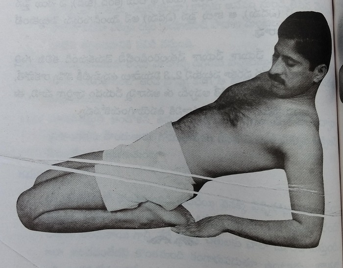
2. కుడి అరచేతిని కుడిపాదం వ్రేళ్ళవద్ద ఆనించి శరీరాన్ని కుడిప్రక్కకు మెల్లగా వంచుతూ కుడి మోచేయి నేలకు ఆనేటట్లు చేయాలి.
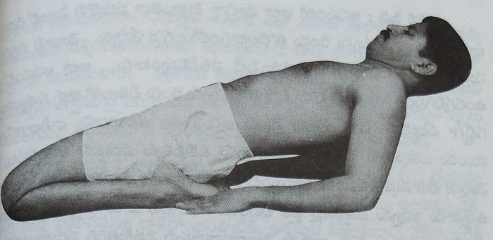
3. ఆ తరువాత రెండు మోకాళ్ళనూ కొద్దిగా పైకి లేపుతూ వెనక్కి మెల్లగా వంగుతూ ముందు మాడుభాగం నేలకు ఆనేటట్లు ప్రయత్నించాలి.
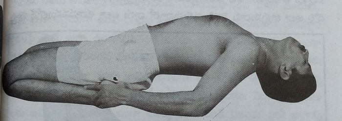
4. ఈ సారి సాంతం వీపును, కాళ్ళను, చేతులను, తలను పూర్తిగా నేలకు ఆనేటట్లు వీపును క్రిందకు దించుకుంటూ పడుకోవాలి. నడుముభాగం మాత్రం మధ్యలో ఆనదు. కళ్ళను పూర్తిగా మూసుకోవాలి.
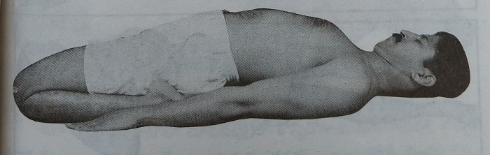
ఆసన స్థితి: ఆసనంలో అలా పూర్తిగా విశ్రాంతిగా పడుకొని ఏ ఆలోచనా రాకుండాచేసి మనస్సును రెండు తొడలభాగంలో లగ్నం చేస్తారు. మోకాలి దగ్గర నుండి పైకి తొడభాగాలను మనస్సుపెట్టి పరిశీలిస్తుంటారు. అలా ఆసనంలో ఉండగలిగినంతసేపు ఉండి నొప్పి ఓర్చుకోలేనప్పుడు రెండు చేతులతో కాళ్ళ గుత్తులను గట్టిగా పట్టుకొని, మోచేతులను నేలకు అదుముతూ తలభాగాన్ని ఛాతీభాగాన్ని ముందు ఒకప్రక్కకు పైకిలేపి (చేసేటప్పుడు ఒకప్రక్కకు పడుకుని ఆనించినట్లు) మెల్లగా లేచి వజ్రాసనములో కూర్చుంటారు. బాగా లావున్నవారు, బరువు ఎక్కువ ఉన్నవారు ఇప్పుడు చెప్పినట్లు పైకి లేవలేరు. అలాంటి వారు సుప్త వజ్రాసనము నుండి ఒక ప్రక్కకు దొర్లి, కాళ్ళను మెల్లగా చాపుకుని వెనక్కి తిరిగి పడుకుంటారు.
విశ్రాంతి స్థితి:
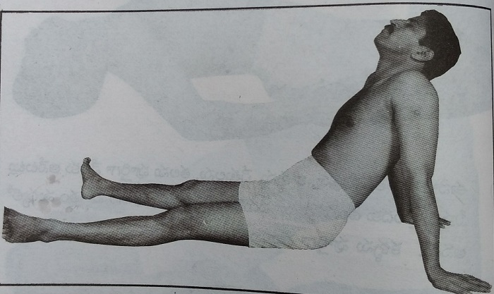
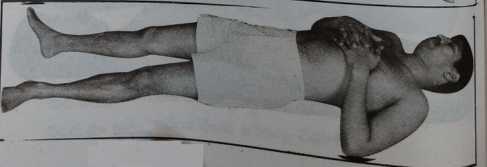
ఈ ఆసనములో ఉన్నంతసేపు చాలా కష్టముగా ఉంటుంది. ఎప్పుడు తీసేద్దామా అని అనిపిస్తుంది. ఆసనాన్ని తీసేటప్పుడు ఎవరైతే ప్రక్కకు దొర్లి అలా కాళ్ళను చాపి వెనక్కి పడుకున్నారో వారు అలా శవాసనములోనే పూర్తి విశ్రాంతి తీసుకుంటారు. ఎవరైతే ఆసనం ఎలా వేసారో అలాగనే తిరిగి వెనక్కి తీసుకుంటూ వెళ్ళి వజ్రాసనములో కూర్చుంటారో వారు కూర్చునే సుఖాసనములో విశ్రాంతి తీసుకుంటారు. విశ్రాంతి ఆసనాలను వేసిన వెంటనే కళ్ళుమూసుకుని మనస్సును శ్వాసలపై లగ్నం చేసి రిలాక్స్ అవ్వాలి. ఆయాసము, కాళ్ళనొప్పులు మొదలగునవి తగ్గేవరకు ఒకటిరెండు నిమిషాలు విశ్రాంతి తీసుకోవాలి.
వేరొక పద్ధతి: బాగా లావు, బరువు ఉన్నవారు ఈ ఆసనాన్ని చేయడం వలన చాలా లాభాలు ఉంటాయి. కాబట్టి కొద్దిగా కష్టమైన ఆసనము అయినప్పటికీ, పూర్తి సుప్త వజ్రాసనము రాకపోయినప్పటికీ, అర్ధసుప్త వజ్రాసనాన్ని వేసినప్పటికీ ఫలితం మాత్రం వీరికి పూర్తిగానే ఉంటుంది. ఈ ఆసనం చేయగలగాలంటే ముందు వజ్రాసనం బాగా రావాలి. వజ్రాసనంలో కూర్చుని మెల్లగా ఒక ప్రక్కకు వంగి ఒక మోచేతిని నేలకు ఆనేటట్లు ప్రయత్నించండి. (చేయువిధానంలో ఫొటో చూడండి. ఇక్కడే బాగా కష్టముగా ఉంటే రెండవ మోచేయి నేలకు ఆనించకుండా మనస్సుని తొడలపై పెట్టి అలా ఉండగలిగినంత వరకు ఉండి తీసివేయవచ్చు. ఇంకా వెనక్కి వంచగలిగితే రెండవ మోచేతిని కూడా ఆనించి అలాగ ఉండాలి. ఇంతకు మించి ఇంకా వెనక్కి తలను ఆనించలేకపోతే 2 వ ఫొటోలోని స్థితిలోనే కొన్ని రోజులవరకు ప్రయత్నించండి. అక్కడే మనస్సుపెట్టి ఉంటారు. రెండు మోచేతులు నేలకు ఆనించిన తరువాత ఇంకా వెనక్కి వంగగలిగితే ముందు ఛాతీ భాగాన్ని వెనక్కి వంచుతూ, రెండు మోకాళ్ళను కొద్దిగా పైకిలేపి, మాడు నేలకు ఆనేటట్లు ప్రయత్నిస్తారు.

ఇలా ఈ స్థితిలో (ఫొటోలో చూపినట్లు) కొన్ని రోజులు అలవాటుచేసి నొప్పి తగ్గాక మెల్లగా ఛాతీని ఆనించేటట్లు ప్రయత్నించవచ్చు. అలా క్రమేపీ సాధన చేస్తే ఏ ఇబ్బందులు లేకుండా లావుగా ఉన్నవారు వారి శరీరానికి ఈ ఆసనం ద్వారా ఎంతో ప్రయోజనాన్ని పొందవచ్చు. ఈ ఆసనాన్ని తీసి పైన చెప్పిన విధాముగా పడుకుని విశ్రాంతి తీసుకుంటారు.
తప్పుస్థితి: ఈ ఆసనంలో ఎవరూ ఏ తప్పులు చేయడానికి ఉండదు. ఎవరు ఎలా వంచినా, ఎంత వరకు వంచినా ఫలితం మాత్రం బాగానే ఉంటుంది.
లాభాలు
1. ఆడవారికి ముఖ్యముగా తొడలు బాగా లావుగా ఉండి రెండూ రాసుకుంటూ పుండ్లుపడి, ఆ బరువు మోయలేక, చాలా ఇబ్బంది పడుతుంటారు. ఈ ఆసనములో ముఖ్యముగా లావున్న వారికి, బరువున్నవారికి తొడలలో ఉన్న క్రొవ్వు బాగా కరిగి లావు తగ్గుతాయి. తొడలు బరువు తగ్గించడానికి వేరే ఇతర మార్గాలు సరిగా పనిచేయవు. మనలో ఉన్న బరువు తగ్గవచ్చేమో కాని తొడలలో ఉన్న బరువు తీయాలన్నా, తొడలను సన్నగా చేసుకోవాలన్నా ఆసనాలలో ఏ ఇతర ఆసనం తొడలకు ఇంత లాభాన్ని చేకూర్చదు. సుప్త వజ్రాసనాన్ని మానకుండా రెండు పూటలా చేసి ఎక్కువ సేపు ఉండేటట్లు ప్రయత్నిస్తే తొడల విషయంలో ఎంతో లాభాన్ని పొందుతారు.
2. తొడలలో క్రొవ్వు లేనివారు ఈ ఆసనం వేస్తే తొడలు బాగా గట్టిపడి బిగుస్తాయి. ఎప్పుడూ తొడలకు జరగనంత రక్త ప్రసరణ సుప్త వజ్రాసనములో తొడలకు వచ్చి తొడల ఆరోగ్యాన్ని మెరుగుచేస్తుంది.
3. రెండుకాళ్ళను కలిపి అలా వెనక్కి వజ్రాసనంలో పడుకోవడము వలన వెన్ను నుండి కాళ్ళకు వెళ్ళే పెద్ద నరములైన సయాటికా నరములు ఈ స్థితిలో ఉన్నంతసేపూ సాగదీయబడతాయి. దానితో కాలుజాలు లాంటివి (సయాటిక్ నొప్పి) ఇక భవిష్యత్తులో రాకుండా ఈ ఆసనం ఎంతగానో సహకరిస్తుంది.
4. సుప్త వజ్రాసనములో అలా పడుకోవడం వలన తొడలు, నడుము భాగాలలో కండరాలు బాగా సంకోచానికి గురి అవుతాయి. దానివల్ల కండరాలలోని కణాలు వ్యర్థపదార్థాలను బాగా విసర్జించుకొని, ఎక్కువ ప్రాణశక్తిని పొందుతాయి. దీనితో మోకాళ్ళ పైభాగం నుండి నడుము మొదటి భాగం వరకు చక్కని ఫలితం లభిస్తుంది.
5. పొట్ట కండరాలు, ప్రేగులు ఈ ఆసనంలో అలా పడుకుని ఉన్నప్పుడు బాగా బిగపట్టి ఉంచడం వలన వాటికి శక్తి బాగా పెరిగి చక్కటి పనితీరును కలిగి ఉంటాయి.
గమనిక
1. ఈ ఆసనాన్ని నడుము నొప్పి, కాలుజాలుతో ఇబ్బంది పడుతున్నవారు ఆ బాధలు తగ్గే వరకు వేయరాదు.
2. ఈ ఆసనం వేయడం అనేది కష్టంతో కూడుకొని ఉన్నదే. ఆసనాలు క్రొత్తగా నేర్చుకోవడం ప్రారంభించినవారు ఈ ఆసనాన్ని వారం, పది రోజుల తరువాత ప్రయత్నించడం మంచిది. ఈ లోపు శరీరం కొంత అలవాటుపడి సాగి ఉంటుంది.
3. వజ్రాసనములో ఎవరయితే తేలికగా 5, 10 నిముషాలు బాధలేకుండా కూర్చోగలుగుతారో వారే ఈ ఆసనాన్ని చేయడానికి సిద్ధపడాలి. వజ్రాసనం వేసిన వెంటనే నొప్పిగా ఉంటే వారు ఈ ఆసనం ప్రయత్నించవద్దు.
4. ఈ ఆసనాన్ని నేర్చుకునే మొదటి 4, 5 రోజులపాటు ఆసనాన్ని ఎక్కువసేపు వేయకుండా వెంటనే తీసివేయడం మంచిది.
5. ఈ ఆసనం వేసేటప్పుడుగానీ, తీసేటప్పుడు గానీ చాలా జాగ్రత్తగా, నెమ్మదిగా శ్రద్ధగా ఉండాలి. లేకపోతే ఎక్కడో ఒకచోట పట్టివేయడమో, నొప్పి చేయడమో జరుగుతుంది.
ఉష్ట్రాసనము
ఉష్ట్రము అనగా ఒంటె. ఒంటెకు ముందు భాగము, మెడ ఏ విధముగా వంకర తిరిగి వెనకకు ఉంటాయో అదే విధముగా ఈ ఆసనము చేసినప్పుడు ఉంటుంది కావున దీనికి ఉష్ట్రాసనము అని పేరువచ్చింది.
చేయు విధానము
1. దుప్పటి కొద్దిగా మెత్తగా ఉండే ఏర్పాటు చేసుకొని, రెండు మోకాళ్ళ మీద నుంచుని, రెండు మెకాళ్ళమధ్య, రెండుపాదాల మధ్య ఒక అడుగుదూరం ఉండేటట్లు పెట్టుకోవాలి. పాదాలను మునివేళ్ళ మీద నిలబెడతారు.
2. నడుమును, మెడను కొద్దికొద్దిగా వెనక్కి వంచి ముందు ఎడమప్రక్కకు ఎక్కువగా వంగి ఎడమచేతితో ఎడమ మడాన్ని అందుకొని పట్టుకుంటారు.
3. తరువాత మెల్లగా నడుమును కుడిప్రక్కకు కొద్దిగా వంచి కుడి చేతితో కుడి మడాన్ని అందుకుని పట్టుకుంటారు. కళ్ళను పూర్తిగా మూసుకోవాలి. ఇప్పుడు రెండుచేతులతో రెండుమడాలను జాగ్రత్తగా గట్టిగా పట్టుకొని, మెడను బాగా వెనక్కి వంచుతూ, సీటు భాగాన్ని, నడుము మొదటి భాగాన్ని బాగా ముందుకు నెడుతూ నడ్డిని విరుచుకుంటారు. కళ్ళను ఎట్టి పరిస్థితులలోనూ తెరవకూడదు.
ఆసనస్థితి: ఉష్ట్రాసనములో అలా అసలు స్థితికి వెళ్ళాక ఇంకా నడుమును బాగా ముందుకు నెట్టగలిగితే అలానెట్టి మనస్సును నడుము, నడుము క్రింద భాగంపై లగ్నం చేస్తారు. మెడ భాగంలో ఎక్కువగా నొప్పి అనిపిస్తూ ఉంటుంది. అలా వచ్చే నొప్పికి తట్టుకోగలిగినంతసేపు అలానే ఉండి ప్రయత్నం చేయాలి. ఇక ఉండలేనప్పుడు ఆసనాన్ని జాగ్రత్తగా తీసే ప్రయత్నం చేయాలి. లేకపోతే కళ్ళు తిరుగుతాయి ఒక్కొక్కరికి ఈ ఆసనం తీసిన వెంటనే శరీరం తూలినట్లు అవుతుంది. కళ్ళను తెరవకుండానే ముందు ఒకచేతిని పాదం నుండి వదిలేసి, కొద్దిగా నడుమును ముందుకు తీసుకొని వెళుతూ మెడను ముందుకు పూర్తిగా వంచి తరువాత రెండవ చేతిని కూడా తీసివేసి మెల్లగా వజ్రాసనములో కూర్చుంటారు.
ఎప్పుడైనా మనం మెడను, నడుమును వెనక్కు బాగా వంచినప్పుడు మళ్ళీ భాగాలను సహజస్థితికి తీసుకురావడానికి ఉష్ట్రాసనము తీసిన తరువాత నడుమును ముందుకు వంచే ఆసనాన్ని చేయాలి. ఆ తరువాత విశ్రాంతి ఆసనము చేయాలి ఎవరికైతే మెడనొప్పి, నడుము ఇబ్బందులు, కాలుజాలు వంటివి ఉంటాయో వారు ముందుకు వంగే ఆసనం చేయకుండానే విశ్రాంతి ఆసనములోనికి వెళతారు. మిగతావారు ఇప్పుడు చెప్పబోయే ఆసనాన్ని వేయాలి. మనం ఉష్ట్రాసనము నుండి వచ్చి వజ్రాసనంలో కూర్చున్న తరువాత రెండుచేతులను వీపు వెనకాలపెట్టి వాటిని కలిపి పట్టుకుని గాలిని వదిలివేస్తూ తలను నేలకు ఆనేటట్లు చేయాలి. ఛాతీ తొడలకు ఆనుతుంది. తల క్రిందకు చేరేసరికి గాలిని పూర్తిగా వదలాలి. క్రింద ఉన్నంతసేపూ గాలిని పీల్చకుండా కుంభించి ఉంచుతారు. మరలా గాలి అవసరమైనప్పుడు మెల్లగా లేస్తూ గాలిని తలపైకి వచ్చే వరకు అలా పీల్చుకుంటూ లేస్తారు. ఇలా చేయడాన్ని యోగముద్రాసనము అంటారు. వజ్రాసనములో కాళ్ళు బాగా వెడల్పు పెట్టి, సీటు నేలకు ఆనేటట్లు కూర్చుని కూడా ఇలా ముందుకు వంగవచ్చు. అలా చేయగలిగితే కాళ్ళకు కూడా మంచిదే.
విశ్రాంతి స్థితి: నడుమును బాగా వెనక్కివంచినప్పుడు ఊపిరితిత్తులు బాగా సాగి అలాగే ఉండడం వలన గాలి చాలా కొద్దిగానే వెళుతుంది. ఉష్ట్రాసనము తీసిన వెంటనే సుమారుగా లీటరుపైగా గాలిని దీర్ఘంగా శ్వాసతీసుకోవడం జరుగుతుంది. అలా దీర్ఘశ్వాసలు ఎప్పుడు జరుగుతాయో అప్పుడు శరీరానికి ఎక్కువ శక్తి వస్తుంది. వజ్రాసనము నుండి కాళ్ళను తీసి వెనక్కి పడుకొని, కాళ్ళు చేతులను బాగా ఫ్రీగా పెట్టుకొని 2, 3 నిముషాలు విశ్రాంతి తీసుకోవచ్చు. ఈ విశ్రాంతి సమయంలో ప్రతీశ్వాస దీర్ఘంగా, ఊపిరితిత్తుల నిండుగా వెళుతూ ఉంటుంది. ఈ సమయంలో మనస్సు ఎంతో ప్రశాంతంగా ఉంటుంది. ఇప్పుడు మనస్సుని శ్వాసలపై పడితే ఏ ఆలోచనలురాక నిర్మలంగా ఉంటుంది.
పూర్ణస్థితి: కొత్తలో ఉష్ట్రాసనము చేసేటప్పుడు చేతులతో పాదాలను పట్టుకోవడము కష్టముగా ఉంటుంది. కొంతకాలం రోజూ సాధనచేసే సరికి నడుము బాగా వెనక్కి వంగడానికి అలవాటుపడి ఇంకా వెనక్కి వంచితే బాగుంటుంది అని అనిపిస్తుంది. అలాంటప్పుడు మడాల పైన పెట్టవలసిన చేతులను ఈ స్థితిలో అరికాలి మీద పెట్టి ఇంకా బాగా వెనక్కి వంగి, నడుమును ముందుకు నెట్టుకోవచ్చు. ఇలా చేయడమువలన ఇంకా కొద్దిగా కష్టము పెరుగుతుంది. దానితో ఫలితము పెరుగుతుంది.
మరొకపద్ధతి: బాగా జబ్బలు లావుగా ఉన్నవారికి, నడుము చుట్టూ క్రొవ్వు ఎక్కువగా ఉన్నవారికి, పొట్ట బాగా ఎక్కువ ఉన్నవారికి నడుము వంచడం సరిగా రాదు. కొద్దిగా వంచినప్పటికీ చంకలో క్రొవ్వు అడ్డుపడడం వలన చేతులతో పాదాలు పట్టుకోవడానికి అందవు. రెండుచేతులు అందడం లేదని ఈ ఆసనాన్ని మానితే ఎంతో నష్టపోతాము. ఏదో రకముగా ఈ ఆసనాన్ని చేసే ప్రయత్నము చేద్దాము. ముందుగా రెండు మోకాళ్ళ మీద నుంచుని, కాళ్ళను వెడల్పుగా పెట్టి పాదాలను వ్రేళ్ళ మీద నుంచోబెట్టి, ముందు ఒక ప్రక్కకు వంగి చేతివ్రేళ్ళతో మడాల పైభాగాన్ని ఆనించి, రెండవచేతిని నడుము భాగములో పటములో చూపినట్లు పట్టుకుని ఈ పట్టుకున్న చేతితో నడుమును బాగా ముందుకు నెట్టుకుంటూ మెడను నడుమును వెనక్కి వంచే ప్రయత్నము చేసి అలా ఉండాలి. ఒక చేతితో పట్టుకోవడం వలన చేతివ్రేళ్ళను జాగ్రత్తగా జారకుండా పట్టుకోవాలి. నడుమును వెనక్కి వంచేటప్పుడు కూడా చాలా జాగ్రత్తగా, మెల్లగా వంచుకోవాలి. లేకపోతే ప్రక్కకు పడిపోయే అవకాశం ఉంటుంది. ఇలా ఉండగలిగినంతసేపు ఉండి మెల్లగా పైన చెప్పినట్లు తీయాలి. అలా 20, 30 సెకన్లు అలుపు తగ్గేవరకు కూర్చుని, రెండవ ప్రక్కకు ఇదే విధముగా వెనక్కి వంచే ప్రయత్నము చేయాలి. ఇలా రెండు ప్రక్కలకు చేయడం పూర్తి అయిన తరువాత అప్పుడు ముందుకు వంగే యోగముద్రాసనము వేయాలి. దాని తరువాత విశ్రాంతిస్థితిలో పడుకుని ప్రశాంతతను అనుభవిస్తారు.
తప్పుస్థితి: ఈ ఆసనంలో బాగా ఫలితం రావాలంటే నడుమును ఆర్చిలాగా బాగా వెనక్కు వంచే ప్రయత్నము చేయాలి. అలానే మెడను కూడా బాగా వెనక్కు వాల్చివేయాలి. క్రింది ఫొటోలో చేతులతో కాళ్ళను పట్టుకోవడం బాగానే వచ్చింది. కానీ పూర్తిగా నడుమును ముందుకు నెట్టలేదు. దానితో నడుము వెనక్కి సరిగా వంగలేదు. అలా వంగకపోతే వెన్నుపూసలో మనకు రావలసిన మంచి మార్పు రాదు. కొంతమందికి నడుము వెనక్కి వంచి ఉండక అలా బాగా బిగుసుకునిపోయి ఉంటుంది. అలా అంత బాగా బిగుసుకునిపోతే ఫొటోలో చూపినట్లు వస్తుంది. అంత ఇబ్బంది లేకపోతే ఇంకా కొంచెం వెనక్కి వంగుతుంది. మన ప్రయత్నంలో లోపం లేకుండా ఇంకా బాగా నడ్డిని వంచాలి అని ప్రయత్నిస్తే వంగిన వరకు వంగుతుంది. అదే లాభం. వంగే అవకాశమున్నా సరిగా నెట్టకపోతే లాభం రాదు. ఈ ఆసనం చేసినప్పుడు వెన్నునొప్పి ఎక్కువగా క్రింద భాగంలో వస్తుంది. ఆ భాగములో సుఖముగా ఉంది అంటే సరిగా నెట్టలేదని అర్థం. అలాగే మెడకు కూడా ఎంతో లాభం వస్తుంది. కాబట్టి మెడను జాగ్రత్తగా వెనక్కు వంచే ప్రయత్నం చేయాలి.
లాభాలు
1. వెన్నెముకను ముందుకు వంచడమే అలవాటుగా ఉన్న మనకు ఈ ఆసనములో బాగా వెనక్కి వంచడం వలన వెన్నెముకలు కోల్పోయిన వాటి సహజస్థితిని, స్థితిస్థాపకతను తిరిగి పొందుతాయి.
2. ముఖ్యముగా ఈ ఆసనము నడుమునొప్పి, మెడనొప్పి, కాలుజాలు మొదలగు ఇబ్బందులున్న వారికి ఎంతో ఉపయోగాన్ని, పూర్తి ప్రయోజనాన్ని కలిగిస్తుంది. వెన్నెముకలోని మూడుభాగాలు మెడ (సర్వైకల్), నడుము (డార్సల్) నడుము క్రింద భాగం (లంబార్) ఈ ఆసనం వేయడం వల్ల బలంగా తయారవుతాయి. మనము ఎప్పుడూ నడుమును ముందుకు వంచి కూర్చోవడం, మెడను ముందుకు వంచి ఏదొక పనిచేసుకోవడం వలన వెన్నుపూసలు బాగా ముందుకు నొక్కుకుని వాటి మధ్యనున్న డిస్క్ లు ఒత్తిడికి గురి అవుతాయి. డిస్క్ ల మీద పడ్డ ఒత్తిడి వెళ్ళి నరాల మీద పడుతుంది. వెన్ను మూడు భాగాలలో ఏ భాగంలో ఈ మార్పులు వస్తే దానికి సంబంధముగా మనకు ఇబ్బందులు కలుగుతాయి. వెన్ను మొదటి భాగంలో ఇలాంటి మార్పులు వస్తే మనకు మెడనొప్పులు, చేయిజాలు, చేతి తిమ్మిర్లు, చేయి నరాలు లాగడం, తలనొప్పులు మొదలగు ఇబ్బందులన్నీ వస్తాయి. నడుము భాగంలో మరియు నడుము క్రిందభాగములో ఈ మార్పులు వస్తే డిస్క్ ప్రొలాప్స్, సైయాటికా నొప్పి (కాలుజాలు), స్లిప్డ్ డిస్క్, కాలు చచ్చుబడిపోబడం ఇలా రకరకాల బాధలువస్తాయి. వీటన్నిటికీ కారణం వెన్నుపూసలు బాగా ముందుకు నొక్కుకునిపోవడం. ఉష్ట్రాసనమును రోజూ రెండు పూటలా చేస్తే వెన్నుపూసలు వెనక్కివంచబడి, వాటిమధ్య ఉండవలసినంత ఖాళీ ఏర్పడుతుంది. దానితో పూసల మధ్య ఉండే డిస్కులపై ఒత్తిడి తగ్గుతుంది. ఆ కారణంచేత ఉష్ట్రాసనము రోజూ చేయడము వలన 1, 2 నెలల్లో చాలా వరకు పైన చెప్పిన ఇబ్బందులు తగ్గుతాయి. మెడనొప్పి ఇంకా తక్కువ సమయంలోనే పూర్తిగా తగ్గుతుంది.
3. నడుము క్రింద భాగాన్ని బాగా వెనక్కి వంచి ఉంచడం వలన ఆ భాగంపై ఒత్తిడిపడి అక్కడ క్రొవ్వు కరుగుతుంది.
4. ప్రక్కటెముకలు, కండరాలు, ఛాతీ భాగాలు ఊపిరితిత్తులపై కలిగించే ఒత్తిడిని పోగొట్టి ఊపిరితిత్తులు బాగా విశాలమై దీర్ఘశ్వాసలు రోజంతా తీసుకునేటట్లు ఉష్ట్రాసనము సహకరిస్తుంది.
5. థైరాయిడ్ గ్రంథికి, జీర్ణక్రియకు, పాంక్రియాస్ గ్రంథికి చక్కటి కదలికలను కలిగించి ఎక్కువ రక్త ప్రసరణ ఆ భాగాలకు అందేటట్లు చేసి ఆరోగ్యవంతంగా వాటిని మార్చుతుంది.
6. ఈ ఆసనాన్ని రోజూ చేయడం వలన నడుమునొప్పులు, మెడనొప్పులు, నడుము పట్టుకోవడం, నడుము లాగడం మొదలగు ఇబ్బందులు జీవితంలో దరిచేరవు. ముందు జాగ్రత్త చర్యగా ప్రతి ఒక్కరూ తప్పనిసరిగా చేయవలసిన మంచి ఆసనం ఇది.
గమనిక
1. ఉష్ట్రాసనము నుండి తీసేటప్పుడు వెంటనే కళ్ళు తెరిస్తే కళ్ళు తిరుగుతాయి. తలలో నరాలు కదలినట్లు ఇబ్బందిగా ఉంటుంది. కాబట్టి కళ్ళు వెంటనే తెరవరాదు.
2. మెదట వారంరోజులపాటు ఆసనం వేసిన తరువాత 5, 6 సెకన్లు ఉంచి వెంటనే ఆసనాన్ని తీసివేయాలి. అలవాటు అయ్యాక ఎక్కువసేపు ఉండవచ్చు. ముందు ఎక్కువగా వంచి, ఎక్కువసేపు ఉంచితే నడుములు పట్టేస్తాయి.
3. మెడ నొప్పులు, నడుము నొప్పులున్నవారు జాగ్రత్తగాచేయాలి. ఈ ఆసనం తరువాత వీరు నడుమును ముందుకు వంచేవి చేయరాదు.
4. ఈ ఆసనంద్వారా ఎక్కువ ఫలితాన్ని తక్కువ కాలంలో పొందాలంటే రెండు పూటలా మానకుండా చేస్తూ పూటకు రెండుసార్లు చొప్పున అంటే ఆసనంవేసి తీసి అలుపు తగ్గిన తరువాత మరలా దీనిే తిరిగివేయవచ్చు.
ఉత్థాన పాదాసనము
ఉత్థానం అంటే పైకిలేపడం. ఈ ఆసనంలో రెండు కాళ్ళను పైకిలేపి ఆపడం వలన ఉత్థాన పాదాసనము అనే పేరు వచ్చింది. ఈ ఆసనాన్ని చేయడం చాలా సులుపు. కాని ఆసనంలో ఎక్కువసేపు ఉండడం చాలా కష్టము.
చేయు విధానము
1. దుప్పటిపై వెల్లకిలా పడుకుని, రెండు కాళ్ళను దగ్గరగా జరిపి, రెండు పాదాలను ముందుకు చాపి, రెండు చేతివ్రేళ్ళను కలిపి తలక్రింద పెట్టుకోవాలి.
2. ఇప్పుడు రెండు కాళ్ళను కలిపి మోకాళ్ళు వంచకుండా నేల నుండి ఒక అడుగు ఎత్తులేపి ఆపాలి. కళ్ళు మూసుకొని ఉండాలి.
ఆసనస్థితి: కాళ్ళను కదపకుండా ఒక అడుగు ఎత్తులో అలా ఉంచి, మనస్సును బొడ్డు క్రింద భాగం పొట్టపై లగ్నంచేసి అలా ఉండగలిగినంత సేపు ఉండాలి. కొంతసేపటికి బొడ్డు క్రింద భాగం కండరాలు అలసిపోయి కాళ్ళ బరువును మోయలేక వదిలేస్తాయి. అలాంటి స్థితి వచ్చినప్పుడు మనం దింపివేస్తాము.
విశ్రాంతి స్థితి:
ఆసనస్థితిలో ఉన్నప్పుడు పొట్ట కండరాలు బాగా గట్టిగా బిగుస్తాయి. దానితో డయాఫ్రమ్ కదలికలు లేక ఊపిరితిత్తులు సరిగా సాగవు. తద్వారా గాలి ఊపిరితిత్తులలోనికి సరిగా వెళ్ళదు. పైపైనే శ్వాసక్రియ నడుస్తుంది. అందుచేత ఈ ఆసనంలో ఎక్కువ అలుపు వస్తుంది. ఆసనాన్ని తీసిన వెంటనే దీర్ఘమైన శ్వాసలు నడుస్తాయి. ఇప్పుడు వెల్లకిలా ఫ్రీగా పడుకుని చేతులను తల క్రింద నుండి తీసి ఛాతీమీద పెట్టుకొని విశ్రాంతి తీసుకోవచ్చు. ఇప్పుడు కళ్ళు తెరవకుండా మనస్సును శ్వాసలపై పెట్టి అలాగే 2, 3 నిముషాలపాటు అలుపు పూర్తిగా తగ్గి శ్వాసలు మామూలు స్థితికి వచ్చే వరకు విశ్రాంతిలో ఉండాలి. చేతులను ఛాతీపై బదులు మీకు ఎక్కడ సులువుగా ఉంటే అక్కడ పెట్టుకోవచ్చు. మనస్సుకు ఆ క్షణంలో ఏ ఆలోచనలు రావు. ఎందువలన అంటే ఆసనాన్ని తీసిన తరువాత దీర్ఘశ్వాసలలో ఎక్కువ ప్రాణవాయువు శరీరానికి మెదడుకు చేరి మనస్సును నిర్మలముగా ఉంచుతుంది. ఇలాంటి అనుభూతి, ఆనందం మరో విధముగా ఇంత తేలికగా దొరకడం కష్టము. అందువలన ఆసనాలు చేసినప్పుడు ఆసనంపై దృష్టి తీసాక శ్వాసలపై దృష్టి ఎంతో ఫలితాన్ని అందిస్తాయి.
ఇలా కాళ్ళను కొద్దిగా పైకిలేపడం వలన ఆ కాళ్ళ బరువును మోసేసరికి నడుము క్రిందభాగం పూసలు, దాని చుట్టూ ఉండే కండరాలు కొద్దిగా ఎక్కువ అలసటకు గురి అవుతాయి. కొంతమందికి ఆసనాన్ని తీసాక నడుము క్రింద భాగములో ముడ్డిపూసల భాగములో కొద్దిగా నొప్పిగా, అదోలా అనిపిస్తుంది. ఇలా అనిపించినవారు ఆసనస్థితి నుండి తీసాక కాళ్ళను పూర్తిగా చాపేకంటే రెండు కాళ్ళను కొద్దిగా పైకి మడిచి అలా పాదాలపై నుంచోబెడితే మంచిది. కాళ్ళను ఇలా పెట్టినందువల్ల నడుము క్రిందభాగం పూర్తిగా నేలకు ఆని, ఆ భాగాలు బాగా విశ్రాంతిని తీసుకుని పూర్తిగా నొప్పిలేకుండా అవుతాయి. అందరూ రెండు రకాల విశ్రాంతి స్థితులలో ఏది బాగుంటే దానిని వారికి అనుకూలముగా వేయవచ్చును.
మరొకపద్ధతి:
బాగా బరువు ఎక్కువ ఉన్నవారు, తొడల, పిక్కలు బరువు ఎక్కువగా ఉన్నవారు, పొట్ట కండరాలు బలహీనంగా ఉన్నవారు, బాగా సుకుమారంగా శరీరాన్ని పెంచిన వారు రెండు కాళ్ళను అలా పైకి కొద్దిగా కూడా లేపలేరు. ఒక కాలు అయితే లేస్తుంది కానీ అది లాభం ఉండదు. అలాంటి వారికి ఇంకొక మార్గముంది. రెండు కాళ్ళు వంచకుండా లేపలేకపోతున్నారు కాబట్టి ఆసనాన్ని బాగా నేర్చుకునే వరకు రెండు కాళ్ళను కొద్దిగా వంచి పైకిలేపి అలా కొద్ది ఒంపుగా ఉండవచ్చు. నేలపై నుండి కాళ్ళను ఒక అడుగు ఎత్తు అంటే వీరికి బాగా కష్టం కాబట్టి ఏ ఎత్తులో కాళ్ళను ఆపగలిగితే ఆ ఎత్తులో ఆపి ఉంచడం మంచిది. అలా కొద్దిసేపు ఆపగలిగినా చాలా ఫలితం వస్తుంది. ఇలా 10, 20 రోజులు చేసేసరికి ఈ ఆసనం అందరిలా లావు ఉన్నవారు కూడా చేయగలుగుతారు. శరీరం, పొట్ట ఎక్కువ బరువు ఉన్నవారు విశ్రాంతి ఆసనాన్ని మాత్రం కాళ్ళు మడిచి పైకి పెట్టిన విధముగా వేస్తేనే సుఖముగా ఉంటుంది.
తప్పుస్థితి:
ఇంత తేలికైన ఆసనములో కూడా కొంతమంది తప్పులు చేస్తూ ఉంటారు. ఈ ఆసనంలో చేసే తప్పుల వలన పెద్ద నష్టముండదు గానీ, లాభం మాత్రం అసలు రావలసిన భాగానికి రాదు. రెండు కాళ్ళను వంచకుండా నేలపై నుండి ఒక అడుగు ఎత్తులో లేపి ఆపినప్పుడు ఈ కాళ్ళ బరువు అంతా పూర్తిగా బొడ్డు క్రింద భాగం కండరాలపై, నరాలపై పడుతుంది. ఈ బరువు ఆ భాగాలపై పడిపోతే ఈ ఆసనములో లాభం రావలసిన చోట వస్తుంది. కొంతమంది కాళ్ళను నేల నుండి 2 అడుగుల ఎత్తులో లేపి ఆపుతారు. ఇంకా ఎత్తు లేపితే ఎక్కువ మంచిదన్నట్లు వారు చేస్తారు. అలా ఎక్కువ ఎత్తు లేపేసరికి కాళ్ళ బరువు మొత్తం బొడ్డు క్రిందభాగం, పొట్ట కండరాలపై పడవలసినది బదులుగా కొంత బొడ్డు పైభాగానికి మారడం మరికొంత క్రిందభాగాలపై ఉండడం జరుగుతుంది. దీనితో ఏ భాగానికీ ఎక్కువ ఫలితం రాదు. బొడ్డు పైభాగానికి పనికివచ్చే ఆసనాన్ని తరువాత చేస్తున్నాము. ఈ ఉత్థానపాదాసనము ప్రత్యేకించి బొడ్డు క్రింద భాగానికి ఫలితాన్నిచ్చేది కాబట్టి ఎవరూ కాళ్లను నేలపైనుండి ఒక అడుగు ఎత్తు మించి లేపరాదు. ఈ ఆసనానికి ఇది చాలా ముఖ్యమైన విషయం. అలాగే కాళ్ళను ఆసనస్థితిలో ఉన్నప్పుడు పైకీ క్రిందకూ కదిలించకూడదు. అలా కదిలినా ఫలితం తగ్గుతుంది.
లాభాలు
1. ముఖ్యమైన ఫలితం అంటే బొడ్డు క్రిందభాగం (పొత్తి కడుపు) పొట్టను తగ్గించడానికి, ఆ క్రొవ్వును బాగా కరిగించడానికి పనికివస్తుంది. ఏ ఆసనంలో కూడా క్రిందపొట్టకు ఈ ఆసనం చేసిన మేలురాదు. ప్రతి ఒక్కరికీ ఎంతో కొంత పొత్తి కడుపు ఉంటూనే ఉంటుంది. అది లేకుండా అందంగా ఉంచుకోవాలని ఉన్నా, అది తగ్గే మార్గాలు తెలియక, చేసేదిలేక అలా వదిలేస్తారు. బరువు తగ్గాలని ఎన్నో ఇతర రకాల ప్రయత్నాలు చేసినా శరీరం బరువు మొత్తంలో కొంత తగ్గుతుంది తప్ప మనకు బొడ్డుక్రింద భాగం పొట్ట తగ్గడానికి అవేమి చేయలేవు. ఈ ఆసనం మాత్రం ఆ భాగంలో క్రొవ్వును కరిగించి వేస్తుంది. రెండు కాళ్ళ బరువు సుమారు 20, 30 కేజీలు ఉండవచ్చు. అంత బరువును అలా 1, 2 నిముషాల పాటు పూర్తిగా మోసేది బొడ్డు క్రింద భాగాలు. దాని వలన ఆ భాగములో క్రొవ్వు కరుగుతుంది. ఆ భాగం పొట్ట 4, 5 నెలలు ఈ ఆసనం చేస్తే పలుచగా అవుతుంది. పొట్ట ఎత్తు చాలా బాగా తగ్గి వెనక్కి బిగుస్తుంది.
2. డెలివరీ అయిన స్త్రీలకు ఈ ఆసనం ఎంతో మేలు చేస్తుంది. చాలా మందికి పొట్ట క్రింద భాగం, పైభాగం పిల్లలు పుట్టాక సాగిపోతుంది. అలాంటి వారు డెలివరీ అయిన 2, 3నెలలు తరువాత నుండి రోజూ ఈ ఆసనాన్ని రెండు పూటలా వేస్తే, చంటి పల్లవాడు తల్లిని కరుచుకున్నట్లు, సాగిన పొట్ట అంతా తిరిగి అలా కరుచుకుపోతుంది.
3. మలాశయానికి (పెద్దప్రేగుకు) ఎంతో ఒత్తిడి కలుగుతుంది. ఆసనస్థితిలో బొడ్డు క్రిందభాగం గట్టిగా బిగిసి రాయిలాగా ఉంటుంది. అంటే అంత బాగా పొట్ట భాగం సంకోచిస్తుంది. ఈ ఆసనంలో ఉన్నంతసేపు మలం ప్రేగుపై బాగా ఒత్తిడి పెరిగి మలం బాగా ముందుకు, ప్రక్కలకు జరుపబడుతుంది. ఈ కారణంగా ప్రేగు బలహీనంగా ఉన్నవారికి, మలబద్ధకం ఉన్నవారికి, ప్రేగుకు కండరాల బలం తక్కువగా ఉన్నవారికి ఈ ఆసనం ఎంతగానో సహకరిస్తుంది. ఆసనాలు అయ్యాక సుఖవిరేచనం అవుతుంది.
4. గర్భసంచికి ప్రత్యేకమైన ఫలితాన్ని ఈ ఆసనం కలిగిస్తుంది. పొట్ట బాగా సంకోచించుకోవడం వలన గర్భసంచికి శక్తి పెరిగి, గర్భ సంచి పెరగడం, సాగిపోవడం లాంటి ఇబ్బందులు రాకుండా కాపాడగలదు. అలాంటివి కొద్దిగా ఉన్నా ఈ ఆసనం ద్వారా పోగొట్టుకోవచ్చు. ఏ వ్యాయామములోనూ శరీర అవయవాలలో కదలికలు రావు. కానీ ఆసనాలు అయితే ప్రతీ ఆసనం ఇలా ఒక్కొక్క భాగముపై ప్రత్యేకమైన కదలికలను, రక్త ప్రసరణను, కండరాల బిగింపును ఇలా రకారకాలైన మార్పులు తీసుకుని వస్తాయి.
5. ఈ ఆసనంలో ఉన్నంతసేపు ఊపిరితిత్తులు బాగా వ్యాకోచించి ఉంటాయి. ఆసనం నుండి తీసిన వెంటనే బాగా సంకోచిస్తాయి. ఇలా సంకోచ వ్యాకోచాలు ఊపిరితిత్తులకు రావడం వలన గాలి నిండుగా, దీర్ఘంగా వెళ్ళేటట్లు శ్వాసక్రియ అలవాటు పడుతుంది. దీనితో ప్రాణవాయువును మనం రోజంతా ఇప్పటికంటే రెట్టింపు తీసుకోగలుగుతాము. శరీరంలోనికి అంత మొత్తములో ప్రాణవాయువు
సంచారము పెరిగేసరికి ఎంతో శక్తి సామర్థ్యాలు మనలో పెరుగుతాయి.
6. పొట్ట ప్రేగుల కండరాలు ఎంతగానో బలపడతాయి.
గమనిక
1. ఉన్న పొట్టంతా తొందరగా పోవాలని కొంతమంది మొదటి రోజునే ఆసనస్థితిలో ఉండగలిగినంతసేపు ఉంచుతారు. దానితో రెండుమూడురోజులు నడవడానికి, పడుకోవడానికి చాలా నొప్పులు వస్తాయి. 5, 6 రోజులపాటు క్రొత్తవారు 5, 6 సెకన్తు మించి ఈ ఆసనాన్ని వేయరాదు.
2. గాలిని పూర్తిగా బిగపట్టి ఈ ఆసనం వేస్తే ఎక్కువసేపు ఆసనంలో ఉండలేము. దానితో ఫలితం తగ్గుతుంది. గాలి మీద ధ్యాస లేకుండా ఆసనాన్ని చేస్తే ఈ ఆసనంలో ఎంత గాలి అవసరమో అంత గాలిని ఊపిరితిత్తులు పీల్చుకుంటాయి. అందుచేత గాలిని బంధించి ఉంచకూడదు.
3. విరేచనము ముందు భాగా అయ్యేటట్లు చేసుకొని ఈ ఆసనం వేస్తే ఎక్కువసేపు ఆసనంలో ఉండవచ్చు. విరేచనం సాఫీగా అవ్వకపోతే ఈ ఆసనంలో త్వరగా నొప్పివచ్చి ఆసనాన్ని వెంటనే తీసివేస్తారు. ఫలితం బాగా రావాలంటే సుఖవిరేచనం కావడం అతి ముఖ్యం.
నౌకాసనము
ఈ ఆసనాన్ని వేసినపుడు మన శరీరము నౌకను పోలి ఉంటుంది కనుక దీనికి నౌకాసనమని పేరు వచ్చింది. శరీర ఆరోగ్యానికి మూలమైన ఎంజైములు, హార్మోన్లను ఉత్పత్తి చేసే గ్రంథులు, అవయవములు గల ఉదరభాగముపై ఎక్కువ ప్రభావాన్ని చూపి ప్రాణశక్తుల ప్రవాహాన్ని క్రమబద్ధీకరించును కాబట్టి దీనికి ప్రాణాసనము అని మరొకపేరు.
చేయువిధానము: ఈ ఆసనము చేయుటకు చాలా సులువు. కానీ ఉంచుటకే అతికష్టము.
1. వెల్లకిలా పడుకుని కాళ్ళను, చేతులను తిన్నగా చాపి, రెండు కాళ్ళను కలిపి మోకాళ్ళు వంచకుండా నేలనుండి ఒక అడుగు ఎత్తులో లేపి ఆపాలి.
2. తరువాత చేతులు నేలకు ఆనకుండా చేతులతో తొడలను పట్టుకొని తలను, ఛాతీని పైకిలేపి ఆపుతారు. వీపు భాగం నేలకు ఆనకూడదు.
3. ఇప్పుడు రెండు చేతులను పట్టువదిలేసి తొడల పైభాగాన గాలిలో తిన్నగా చాచి కేవలం పిర్రల భాగం, నడుము భాగమే నేలకు ఆనేటట్లు ఉంచి మిగతాభాగాన్ని గాలిలో ఉంచుతారు. కళ్ళు మూసుకుంటారు.
ఆసనస్థితి: శరీరాన్ని, తలను కదపకుండా అలానే ఆసనంలో ఉంటూ మనస్సును బొడ్డు పైభాగం పొట్టపై లగ్నం చేస్తారు. ఆసనంలో ఉన్నప్పుడు బొడ్డు పైభాగం, ఛాతీ బాగా బిగపట్టి ఉన్నందున కొద్దిగా ఊగుతూ, వణుకుతూ ఉంటుంది. అలా రావడం సహజమే. ఈ ఆసనములో ఉండడము ఉత్థానపాదాసనము కంటే కష్టతరమే. అలా ఉండగలిగినంత వరకు, అలుపు రానంతవరకు ఆసనస్థితిలో అలానే ఉండి, ఇక ఉండలేము అనుకున్నప్పుడు మెల్లగా వెనక్కి వాలిపోతారు. కళ్ళుమూసుకొని అలా పడుకుంటారు.
విశ్రాంతి స్థితి: ఈ ఆసనంలో 20, 30 సెకన్లు అలా కదలకుండా ఉండాలంటే చాలా కష్టముగా ఉంటుంది. అంత తక్కువ టైములోనే విపరీతమైన అలుపు వస్తుంది. ఉదరభాగము, ఛాతీభాగము అంతా పిండినట్లు అవుతుంది. ఛాతీని పైకి అలా కొద్దిగా ఎత్తుగా లేపి ఆపడం వలన శ్వాసక్రియ 80, 90 శాతం ఆగిపోతుంది. ఏదో కొద్దిగా నడుస్తుంది. దీని వలనే అంత ఆయాసము. ఆసనము తీసిన వెంటనే దీర్ఘశ్వాసలు బాగా నడుస్తాయి. దానితో మనస్సు వెంటనే ప్రశాంతముగా మారుతుంది. ఈ ఆసనస్థితి నుండి శరీరాన్ని విరమించిన తరువాత వెల్లకిలా పడుకుని, కాళ్ళు చేతులను ఫ్రీగా వదిలేసి మనస్సును శ్వాసలపై లగ్నంచేసి ఆ నిర్మలమైన, ప్రశాంతమైన స్థితిని 1, 2 నిముషాలపాటు కదలకుండా అనుభవిస్తారు. అలానే శ్వాసలు మామూలుస్థితికి వచ్చే వరకు విశ్రాంతిలో ఉండాలి.
ఈ ఆసనములో కూడా కాళ్ళను ఒక అడుగు ఎత్తులో లేపి ఆపడము వలన నడుము క్రిందభాగము కొంత నొప్పిగా, సుఖము లేనట్లుగా ఎవరికన్నా అనిపిస్తే ఆసనస్థితి నుండి తీసిన వెంటనే ఈ ఫొటోలో చూపిన విధముగా కాళ్ళను మడిచి విశ్రాంతి తీసుకుంటారు. దానితో నడుము పూర్తిగా నేలకు ఆని ఆ భారము తగ్గుతుంది.
మరొక పద్ధతి:
బాగా బరువున్నవారు, పొట్ట ఎక్కువ ఉన్నవారు, ఛాతీ బాగా ఎక్కువగా పెరిగిపోయి ఉన్నవారు పైన చెప్పినట్లు ఈ ఆసనంలో లేవలేరు. వీరికి చేతులు అలా తొడలపై గాలిలో ఉంచాలంటే చాలా కష్టము. ఏ పట్టూ లేకుండా అలా చేతులను పైకి ఉంచి ఆసనములో ఉండడము వలన ఎక్కువ ఫలితం వస్తుంది. చేయడం రానివారు కాళ్ళను అడుగు ఎత్తు లేపిన తరువాత ఛాతీని కొద్దిగా లేపి, చేతులతో తొడలను పట్టుకుని, రెండు మోచేతులు నేలకు నొక్కిపట్టి ఛాతీ బరువును కొంత చేతులమీద ఆపుతూ ఆసనంలో అలా ఉండే ప్రయత్నం చేస్తారు. లావుగా ఉన్నవారు కొంత చేతుల సహకారం తీసుకున్నప్పటికీ పూర్తి లాభాన్ని పొందగలుగుతారు. అంత శరీరాన్ని అలా ఆపడం వల్ల పొట్ట పైభాగానికి, లోపల ఉదరకోశ భాగాలకు ఎంతో శ్రమ అవుతుంది. సన్నటివారు పూర్తిగా వేసినదాని కంటే లావుగా ఉన్నవారు అర్ధనౌకాసనము వేసిన దానికే ఎక్కువ ఫలితం వారికి కలుగుతుంది. ఆసనాలలో అన్నివిధాలా బాగా లావుగా ఉన్నవారికి చాలా ఫలితాలు వస్తాయి. ఈ ప్రకారము చేసి అలా ఉండగలిగినంతసేపు ఉండి తరువాత కాళ్ళను కొద్దిగా పైకిలేపి ఉంచి పడుకునే విశ్రాంతి ఆసనాన్ని వేస్తే మంచిది. లావుగా ఉన్నవారికి మామూలుగానే ఆయాసం ఎక్కువ. అలాంటిది ఈ ఆసనములో చాలా ఎక్కువ అలుపు వస్తుంది. ఆ అలుపు అంతా పూర్తిగా తీరేవరకు విశ్రాంతి ఆసనములో ఉంటారు.
తప్పుస్థితి:
ఈ ఆసనంలో తప్పుచేస్తే ప్రయోజనం వేరే చోటుకి మారుతుంది. మామూలుగా కాళ్ళను ఒక అడుగు ఎత్తు లేపితే, ఛాతీని తలను చేతులు పట్టుకోకుండా కొద్ది ఎత్తులో లేపి ఆపితే, అప్పుడు కాళ్ళబరువు అంతా బొడ్డు పైభాగం పొట్టపై పడుతుంది. దీనితో బొడ్డు పైభాగం అంతా బాగా సంకోచించుకుని ఆసనంలో ఎక్కువ ఫలితాన్ని పొందుతుంది. మనం ఈ ఆసనం చేయడంలో ముఖ్య ఉద్దేశం పైభాగానికి ప్రత్యేకమైన ఫలితాన్ని అందించడం కొరకు. ఉత్థాన పాదాసనములో బొడ్డు క్రింద ఫలితాన్ని పొందినట్లే, ఈ ఆసనంలో బొడ్డు పైభాగాన ఫలితం పొందితే ఛాతీభాగం, ఉదరభాగాల పూర్తి ఆరోగ్యానికి ఈ రెండు ఆసనాలు సహకరిస్తాయి. పైఫొటోలో చూపినట్లు కొంతమంది చేస్తూ ఉంటారు. ఇలా చేయడం వల్ల ఎక్కువసేపు ఆసనంలో ఉండగలుగుతారు. చూసేవారికి అతను బాగా లేచాడు, చాలా బాగా ఆసనం వచ్చింది అనుకుంటారు. ఫలితం 60, 70 శాతం పోతుంది. కాళ్ళను 2, 2 1/2 అడుగులు ఎత్తు లేపడం ఒక తప్పు. అలాగే ఛాతీని కూడా బాగా పైకి లేచిన వరకు అలా లేపి ఉంచడం రెండవ తప్పు. ఇలా రెండు ప్రక్కల ఎత్తు లేపడం వలన బొడ్డు పైభాగం పొట్టపై అసలు ఒత్తిడి పడదు. అందుచేతనే అలుపు త్వరగా రాదు. నొప్పి రాదు. శ్వాసక్రియ కొంత తేలికగా ఉంటుంది. ఈ లక్షణాలు రాలేదంటే ఎక్కడో తప్పు చేసినట్లు తెలుసుకోవచ్చు. పై ఫొటోలో చూపినట్లు లేపడం వలన లాభము ఉండదు.
పొట్ట వలన ఇబ్బంది
పొట్ట అనేది చాలా మందికి వస్తూ ఉంటుంది. బొడ్డు పైభాగం పొట్ట ఎక్కువ మందికి కనపడుతూ ఉంటుంది. పొట్ట లేకుండా నడుము సన్నగా ఉంటే అందరికీ ఇష్టమే. పొట్ట పూర్తిగా పొయే మార్గము తెలియక కొందరు, తెలిసినా అశ్రద్ధతో మరికొందరు అలా పెరుగుతుంటే చూస్తూ ఉంటారు. అలా పెరిగిన కొద్దిపాటి పొట్ట వలన మనకి ఇబ్బంది లేకపోయినా శ్వాసక్రియకు, డయాఫ్రమ్ కదలికలకు చాలా నష్టాన్ని కలిగిస్తూ ఉంటుంది. పొట్ట ఉండడం వలన శ్వాసలు ఊపిరితిత్తుల చివరిభాగం వరకు నడవవు. దానివల్ల గాలి ఊపిరితిత్తులలో ఎక్కువగా పట్టదు. పొట్టవలన శ్వాసలు ఊపిరితిత్తులలో పైపైనే నడుస్తాయి. దీనితో శ్వాసల సంఖ్య నిముషానికి ఉండవలసిన దానికంటే పెరిగిపోతుంది. అక్కడ నుండి మన శరీరానికి ప్రాణశక్తి లోపం వస్తూ ఉంటుంది. దానితో అలుపు, ఆయాసం, నీరసం మొదలగునవి ప్రారంభం అవుతాయి. శ్వాసల సంఖ్య పెరిగితే ఆయుష్షు తగ్గిపోతుంది. సామర్థ్యం తగ్గిపోతుంది. ఇలా ఎన్నింటిలోనో ఇబ్బందులు మొదలవుతాయి. అందుచేత ఇప్పటికైనా మించింది లేదు కాబట్టి పొట్టను తగ్గించుకునే చక్కటి ఆసనాలను (ఉత్థాన పాదాసనము, నౌకాసనము) తెలుసుకున్నాము కాబట్టి రెండు పూటలా జాగ్రత్తగా వీటిని చేస్తే 4, 5 నెలల్లో చాలా వరకు పొట్ట కరిగిపోతుంది.
లాభాలు
1. ముఖ్యముగా నౌకాసనము వలన బొడ్డు పైభాగం పొట్ట క్రొవ్వు కరిగి, పలుచగా చర్మం తయారవుతుంది. ఈ ఆసనంలో కాళ్ళను కొద్దిగా ఎత్తు లేపి ఛాతీని కూడా పైకి లేపి ఆపడం వలన, ఈ కాళ్ళ బరువును పూర్తిగా మోసేవి బొడ్డు పైభాగం పొట్ట కండరాలు. దానితో ఆసనంలో ఉండేది తక్కువ సమయం అయినప్పటికీ చాలా అద్భుతమైన ఫలితం పొట్టకు వస్తుంది. ఈ ఆసనాన్ని రోజూ చేసి 3, 4 నెలల్లో 5, 6 అంగుళాల మందాన పొట్టను తగ్గించుకున్న వారుంటారు. ఏ ఆసనంలో కూడా పొట్టకు ఇంత గొప్ప ఫలితం రాదు. నౌకాసనము అంటే బొడ్డు పైభాగం పొట్టకు గొప్ప ఆసనము అని గుర్తు పెట్టుకోవచ్చు.
2. ఈ ఆసనము ఉదరభాగములో ఉండే పాంక్రియాస్ గ్రంథిపై మంచి ప్రభావాన్ని చూపుతుంది. ఆసనాన్ని వేసి అలా ఉన్నప్పుడు, ఆ బిగింపుకు లోపల ఉండే పాంక్రియాస్ గ్రంథిపై ఎక్కువగా ఒత్తిడి కలిగి ఇన్సులిన్ ను ఉత్పత్తి చేసే కణాలు ప్రభావితమవుతాయి. ఆ గ్రంథికి ఈ ఆసనముతో బాగా మసాజ్ చేసినట్లుగా అవుతుంది. సుగరు వ్యాధిగ్రస్తులు ఈ ఆసనం వేయడం వలన రక్తంలో గ్లూకోజ్ శాతం కొంత తగ్గేటట్లు సహకరిస్తుంది.
3. జీర్ణక్రియకు సహకరించే లివరు, గాల్ బ్లాడర్, చిన్నప్రేగులు, పొట్ట మొదలగు అవయవాలు కూడా ఈ ఆసనంలో కలిగే ఒత్తిడివల్ల వాటి పనితీరులో చక్కటి మార్పు వస్తుంది. శక్తివంతమైన జీర్ణాదిరసాలు ఉత్పత్తి అవుతాయి. అజీర్ణవ్యాధులు, ఆకలిమందం లాంటి వాటిని పోగొట్టి ఆకలి పెరిగేటట్లు బాగా సహకరిస్తుంది.
4. ప్రసవానంతరం స్త్రీలకు పొట్ట బాగా సాగి ఉంటుంది. అలా సాగి ఉన్న పొట్టను బాగా తగ్గించుకోవడానికి ఈ ఆసనం ఎంతగానో సహకరిస్తుంది. ఈ ఆసనం వల్ల క్రొవ్వు బాగా కరిగి పొట్ట ముడుచుకుంటుంది. ముఖ్యంగా పొట్ట కండరాలు బాగా బలాన్ని పుంజుకుని గట్టిగా బిగుస్తాయి. గర్భం రాకముందు ఉన్న సహజస్థితిని మరలా తిరిగి తయారుచేసుకోవచ్చు. ఈ ఆసనాన్ని రెండు పూటలా వేయడం ఎంతో మంచిది.
గమనిక
1. ఈ ఆసనంలో ఎక్కువసేపు ఉండలేరు. కాబట్టి ఎక్కువ ఫలితాన్ని పొందాలంటే ఒకసారి వేసిన తరువాత పూర్తిగా అలుపు తగ్గేవరకు విశ్రాంతి తీసుకుని, తరువాత రెండవసారి ఈ ఆసనాన్ని తిరిగి వేయవచ్చు.
2. క్రొత్తలో అలవాటు అయ్యేవరకు కొద్దిసేపు చేసి వెంటనే మానివేయడం మంచిది. శరీరానికి ఏ నొప్పులు లేకుండా బాగా అలవాటు అయిన తరువాత ఎక్కువ సమయం ఉండడం గానీ రెండవసారి చేయడంగానీ చేయవచ్చు.
సర్వాంగాసనము
ప్రతీ ఆసనము ఒక్కొక్క అవయవముపై ప్రత్యేకమైన ప్రభావాన్ని చూపుతూ, ప్రత్యేకమైన ఫలితాన్ని ఇస్తూ ఉంటుంది. అన్ని అవయవాలపై ప్రభావాన్ని చూపలేవు. కానీ సర్వాంగాసనము విషయానికి వస్తే శరీరంలోని అన్ని అంగాలు, అవయవాలపై పనిచేస్తుంది కాబట్టి దీనిని సర్వాంగాసనము అన్నారు. దీని పేరులోనే ఎంత మంచి ఆసనమన్నది అర్థమవుతున్నది. శీర్షాసనము అందరకీ సాధ్యముకాదు. సరిగా చేయకపోతే దాని వలన నష్టాలు కూడా ఉంటాయి. కాని సర్వాంగాసనము ఏ నష్టాన్ని లేకుండా ఎక్కువ ఫలితాన్ని అందిస్తుంది.
చేయు విధానము
1. ముందుగా తల భాగానికి దుప్పటి ఉండేటట్లు జరిగి వెల్లకిలా కాళ్ళు చాపి చేతులను ప్రక్కకు పెట్టి పడుకోవాలి. తరువాత రెండు కాళ్ళను కలిపి మోకాళ్ళు వంచకుండా లేపి పాదాలు ఆకాశాన్ని చూసేటట్లు కాళ్ళను లైనుగా నుంచోబెడతారు.
2. ఈసారి కాళ్ళను కొద్దిగా మడిచి, నడుము భాగాన్ని ఒక్క ఊపుతో పైకి లేపి, రెండు అరచేతులను నడుము క్రిందకు పడిపోకుండా పెట్టాలి. మోకాళ్ళు తల దగ్గరకు లేదా ముఖం ముందుభాగం దగ్గరకు వస్తాయి.
3. నడుముపై చేతులను జాగ్రత్తగా పెట్టి పట్టుకోకపోతే క్రిందపడిపోతుంది. ఈ ఫొటోలో చూపించినట్లుగా నాలుగు వ్రేళ్ళు నడుము భాగాన్ని పట్టుకుంటే బొటనవ్రేలు మాత్రం నడుము ప్రక్కభాగాన్ని పట్టుకునేటట్లు పెడితే మంచిది. ఈ విధముగా పట్టుకుంటే చేతులకు నడుముపట్టు దొరుకుతుంది.
4. ఇప్పుడు నడుము భాగాన్ని గట్టిగా పట్టుకుని, కాళ్ళను మోకాలి భాగం వదిలి ముందు లైనుగా పైకి జరిగేటట్లు ప్రయత్నం చేయాలి.
5. ఇప్పుడు పూర్తిగా లైను అయ్యేటట్లు కాళ్ళను, నడుమును జరుపుకోవాలి. భుజాల దగ్గరనుండి పాదాలవరకు శరీరం 90 డిగ్రీల లైనులో నిటారుగా ఉండేటట్లు ప్రయత్నిస్తే మంచిది. పాదాలు రెండింటిని ఆకాశం చూసేటట్లు చాపుతారు. కళ్ళు మూసుకుని శరీరం కదలకుండా అలా ఉండేటట్లు ప్రయత్నం చేయాలి.
ఆసనస్థితి: సర్వాంగాసనాన్ని ఒకసారి వేసిన తరువాత కదలకుండా అలా ఉండదు. చేతులు జరుగుతూ ఉంటాయి. మధ్యమధ్యలో జారే చేతులను మరలా జరుపుకుంటూ గట్టిగా పట్టుకోవాలి. అలాగే నడుము మధ్యమధ్యలో వంగుతూ ఉంటుంది. దానిని కూడా తిరిగి నిటారుగా జరుపుతూ ఉండాలి. సర్వాంగాసనాన్ని పూర్తిగా వేసిన దగ్గరనుండి మనస్సుపెట్టి రక్తప్రసరణలో జరిగే మార్పులను గమనిస్తూ ఉండాలి. పాదాల దగ్గరనుండి సీటుభాగం వరకు మనం గమనిస్తూ లోపల జరిగే మార్పులను తెలుసుకోవాలి. మిగతా ఆసనాలవలె సర్వాంగాసనాన్ని 1, 2 నిముషాలు వేసి తీసేస్తే ఫలితం రాదు. ఉండగలిగినంతసేపు అలానే బిగపట్టి ఉంచాలి. 2, 3 నిముషాలు గడిచిన తరువాత పాదాలు తిమ్మిర్లు ఎక్కడం, రక్తప్రసరణ కాళ్ళలో తగ్గిపోవడం లాంటివి తెలుస్తాయి. పొట్ట, ఛాతీభాగాల దగ్గర అయితే 2, 3 నిముషాల తరువాత రక్తము ఎక్కువ అయినట్లు, కళ్ళు ఎరుపెక్కుతున్నట్లు మొదలగు మార్పులు తెలుస్తాయి. సర్వాంగాసనములో ఉండగా ఛాతీ సరిగా సంకోచవ్యాకోచాలను చేయదు. తక్కువ గాలి ఎక్కుతుంది. ముఖ్యముగా మెడభాగం దగ్గర ఒంపు రావడం చేత శ్వాస సరిగా ప్రయాణించదు. దానితో సర్వాంగాసనములో కొద్దిగాలి అందీ అందనట్లుగా ఉంటుంది. ఇలా సర్వాంగాసనములో ఉన్నంతసేపు కాళ్ళభాగాలకు చాలావరకు రక్తప్రసరణ తగ్గిపోతూ బాగా తిమ్మిర్లు ఎక్కుతూ ఉంటాయి. అలా 5, 6 నిముషాలు సర్వాంగాసనాన్ని తీయకుండా ఉంచితే కొంతసేపటికి తొడల దగ్గర నుండి పాదాల వరకు కూడా స్పర్శ లేకుండా అయిపోతుంటాయి. కంఠం దగ్గర నుండి బొడ్డు క్రిందభాగం వరకు బాగా రక్తప్రసరణ అయ్యి ఎర్రగా కందినట్లు, గులాబీరంగులో చర్మము కనిపిస్తుంది. కళ్ళలోనికి ఎరుపు బాగా వస్తుంది. ముఖము ఎరుపెక్కుతుంది. ఆసనంలో ఇలా ఎక్కువసేపు 5 నుండి 10 నిముషాల వరకు ఉండగలిగితే రక్తప్రసరణలో ఎక్కువ మార్పులు వస్తాయి. ఇలా ఉంటేనే అన్ని అంగాలకు ప్రయోజనం కలిగేది. అలా ఉండగలిగినంతసేపు ఉండి, ఇకచాలు అనిపించాక అక్కడ నుండి హలాసనాన్ని ప్రయత్నించేవారు ఈ స్థితినుండే వెళ్ళి చేయాలి. హలాసనము వేయలేనివారు సర్వాంగాసనము మెల్లగా తీసివేస్తారు. సర్వాంగాసనము బాగా లైనుగా వచ్చినవారు, అంతకుముందు అలవాటు ఉన్నవారు, బాగా శరీరము వంగేగుణమున్నవారు. హలాసనాన్ని ప్రయత్నించవచ్చు. సర్వాంగాసనము నుండి హలాసనమునకు ఎలా వెళ్ళాలో తెలుసుకుందాము.
హలాసనము: "హలము" అంటే నాగలి. ఈ ఆసనంలో శరీరం నాగలి ఆకారాన్ని పోలి ఉంటుంది. అందుచేత హలాసనమని అన్నారు.
సర్వాంగాసనములో పైనున్న కాళ్ళను మెల్లగా దించుతూ మోకాళ్ళు వంచి, రెండు మోకాళ్ళు ముఖానికి ఇరువైపులా వచ్చేటట్లు జరుపుకుంటూ పాదాలను తల వెనుక నేలకు ఆనిస్తారు. తరువాత నడుముకు పెట్టి పట్టుకున్న చేతులను తీసి నేలకు ఆనేటట్లు చాపుతారు. తరువాత రెండు మోకాళ్ళను మెల్లమెల్లగా లైను చేస్తూ పాదాలను దూరంగా జరుపుతూ, చివరకు పాదము దగ్గరనుండి పిర్రల వరకు ఏక లైనుగా కాళ్ళు ఉండేటట్లు జరుపుకుంటారు. ఈ స్థితిలో ఉండగలిగినంతసేపు ఉండి తర్వాత మెల్లగా కాళ్ళను ముడుస్తూ, ఛాతీని దింపుతూ మామూలు స్థితిలోనికి వచ్చి వెల్లకిలా పడుకోవాలి.
సర్వాంగాసనము నుండి విరమించిన తరువాత కాళ్ళు తిమ్మిర్లెక్కి ఉంటాయి. కాబట్టి విశ్రాంతి తీసుకోకుండా వెంటనే ముందుకు వంగే పశ్చిమమోత్తానాసనాన్ని వేస్తే ఆ ఆసనం బాగావస్తుంది. పశ్చిమోత్తానాసనం అయిన తరువాతే విశ్రాంతి తీసుకోవడం చెయ్యాలి. అలాగే సర్వాంగాసనము నుండి హలాసనంలోనికి వెళ్ళినవారు హలాసనం తీసిన వెంటనే విశ్రాంతి తీసుకోకుండా పశ్చిమోత్తాసనాన్ని చేసి తర్వాత విశ్రాంతికి వెళతారు.
మరొకపద్ధతి: బాగా లావు ఉన్నవారు సర్వాంగాసనాన్ని చెయ్యడం చాలా వరకు కష్టమే. కొద్దిగా శరీరం సహకరించేవారు ప్రయత్నించడంలో తప్పులేదు. ఎక్కువ లావున్నవారు సర్వాంగా సనంలో శరీరాన్ని పైకి లేపినపుడు శరీరం పూర్తిగా నిటారుగా రాదు. ఎంతవరకు వచ్చినప్పటికీ వచ్చినంతమేరకు ఫలితం ఉంటుంది. లావున్నవారు స్వయముగా చెయ్యలేక పోతే ప్రక్కవారి సహాయముతో కాళ్ళను లేపుకొని మెల్లగా చేతులతో నడుమును పట్టుకుని కాళ్ళ బరువును ఆపే ప్రయత్నం చేయాలి. ఫొటోలో చూపిన విధముగా చేతులతో కటిభాగాన్ని పట్టుకుంటే తేలికగా ఉంటుంది. ఆసనంలో ఉండగలిగినంతసేపు ఉండి మెల్లగా యధాస్థితికి రావాలి. ఈ ఆసనంలో తప్పులు చేసే అవకాశం చాలా తక్కువ.
లాభాలు
1. ఈ ఆసనంవలన ఎక్కువరక్తం థైరాయిడ్ గ్రంథికి అంది థైరాయిడ్ గ్రంథి స్రవించే హార్మోనుల హెచ్చుతగ్గులను సవరిస్తుంది. దానితో థైరాయిడ్ సంబంధించిన ఇబ్బందులు చాలా వరకు తగ్గుతాయి. థైరాయిడ్ ఇబ్బందులు లేనివారు భవిష్యత్తులో రాకుండా చేసుకోవచ్చు.
2. ఈ ఆసనంలో శరీరం తలక్రిందులుగా ఉండడం వలన తలలో ఉండే పిట్యూటరీ గ్రంథి, పీనియల్ గ్రంథులకు ఎక్కువ రక్తం సరఫరా అవ్వడం వలన వాటి సామర్థ్యం పెరుగుతుంది. అన్ని హార్మోనుల ఉత్పత్తిని కంట్రోలు చేసేది పిట్యూటరీ గ్రంథి కాబట్టి ఈ ఆసనం వలన అన్ని ఎండోక్రైన్ గ్రంథులు పనితనాన్ని పెంచుకుంటాయి.
3. ఈ ఆసనం వేయడం వలన ఎదుగుదల ఆగిన పిల్లలకు వారిలో గ్రంథులు బాగా పనిచేయడం వలన హార్మోనుల ఉత్పత్తి పెరిగి బాగా ఎదగడానికి అవకాశం కలుగుతుంది .
4. వెరికోస్ వీన్స్ (కాళ్ళల్లోని రక్తనాళాలు ఉబ్బి ఉండటం) ఉన్నవారికి ఈ ఆసనం వలన కాళ్ళల్లోని సిరలు (వీన్స్) శక్తి పుంజుకుని రక్తాన్ని మోసుకుని వెళ్ళే సామర్థ్యాన్ని పొందుతాయి. ఈ ఇబ్బంది ఉన్నవారికి కాళ్ళ నుండి చెడ్డరక్తం పైకి గుండెవైపు సరిగా ఎక్కకుండా, ఎక్కువ సమయం కాళ్ళలోనే ఉండడం వలన పోట్లు, మంటలు కాళ్ళలో చాలా ఎక్కువగా ఉంటాయి. వీరు సర్వాంగాసనాన్ని రెండు పూటలా తప్పనిసరిగా వేయాలి. అలాగే పగలు కాళ్ళబాధలు మరీ ఎక్కువగా ఉంటే పూర్తి సర్వాంగాసనము వేయకుండా, సర్వాంగాసననము చేయి విధానములో మొదటి ఫొటోలో ఉన్నట్లు కాళ్ళను పైకిపెట్టి అలా 2, 3 నిముషాలు ఉంచితే చాలా హాయిగా ఉంటుంది. ఇలా రోజుకి 5, 6 సార్లు చేస్తూ ఉండవచ్చు.
5. గుండెకు బాగా దూరంగా ఉండే అవయవాలు పాదాలు, కాళ్ళు. ఈ కారణంగా పాదాలకు రక్తప్రసరణ తక్కువగా మెల్లగా నడుస్తూ ఉంటుంది. ఎప్పుడూ పనిచేసేవారికి అనుకున్న విధముగా కాళ్ళకు పనివలన రక్తప్రసరణ జరుగుతూ ఉంటుంది. శారీరకశ్రమ చేయనివారికి కాళ్ళకు రక్తప్రసరణ సరిగా జరగక ఎక్కువ తిమ్మర్లు, మంటలు, స్పర్శ తగ్గడం మొదలుగునవి వస్తూ ఉంటాయి. వీటికి మందులు పనిచేయవు. ఇలాంటి ఇబ్బందులు 40, 50 సంవత్సరాలు దాటిన వారిలో ఎక్కువగా వస్తూ ఉంటాయి . సర్వాంగాసనము వలన కాళ్ళకు, పాదాలకు రక్తప్రసరణ బాగా చురుకుగా జరిగేటట్లు మార్పు వస్తుంది. సర్వాంగాసనాన్ని రోజూ చేయడంవలన కాళ్ళవ్రేళ్ళ రక్తనాళాలలో గెడ్టలుకట్టడం గానీ, మూసుకుపోవడం గానీ, సన్నగిల్లడం గానీ జరగకుండా కాపాడుకోవచ్చు.
6. ముఖ్యముగా మెదడుకు రక్తప్రసరణ ఎక్కువగా ఈ ఆసనంలో ఉన్నంతసేపూ జరుగుతుంది. దానితో ఎక్కువ ప్రాణవాయువు మెదడుకు అంది, మెదడు చాలా చురుకుగా పనిచేస్తుంది. చదువుకునే పిల్లలు సర్వాంగాసనాన్ని రోజూ వేస్తే జ్ఞాపకశక్తి, ఆలోచనాశక్తి చక్కగా పెరుగుతాయి.
7. సర్వాంగాసనములో ఉన్నంతసేపూ శరీరం బరువు అంతటినీ మెడ భుజాలు మోస్తూ ఉంటాయి. దానితో మెడభాగం చాలా బలంగా తయారవుతుంది. మెడకు సంబంధించిన ఇబ్బందులు గానీ, నొప్పులు గానీ రావడానికి అవకాశం ఉండదు.
8. గొంతుభాగానికి బాగా రక్తప్రసరణ జరిగి, బాగా ఎక్కువగా మాట్లాడినా గొంతు అలసిపోవడం గానీ, బొంగురు రావడం గానీ, నొప్పిరావడం లాంటివి ఇక ఉండవు. గొంతు కండరాలు బాగా బలంగా తయారయ్యి తలకు వెళ్ళే రక్తాన్ని చురుకుగా పైకి చిమ్మడానికి సహకరిస్తాయి.
9. సర్వాంగాసనాన్ని రోజూ చేయడంవలన శరీరంలోని ఎముకలు, కండరాలు, నరాలు మొదలగునవి అన్నీ మన స్వాధీనంలోకి వచ్చి చక్కగా పనిచేస్తాయి. శరీరం ఎటుపడితే అటు మెలికలు తిరిగేటట్లు తయారవుతుంది.
10. శారీరకశ్రమ చేసేవారికి శరీరం లోపల అవయవాల కదలికలు అంత ఉండవు. ముఖ్యముగా సర్వాంగాసనం వలన ఏ ఆసనములో రాని విధముగా అన్ని అవయవాలకు చక్కటి కదలికలు, చక్కటి రక్తప్రసరణ, చక్కటి ప్రాణశక్తి అంది అన్ని అవయవమలు చురుగ్గా పనిచేసే సామర్థ్యాన్ని పెంచుకోగలుగుతాయి.
గమనిక:
1. సర్వాంగాసనాన్ని మెడనొప్పి, నడుము నొప్పులు, గుండె ఇబ్బందులు, హై బి.పి. ఉన్నవారు చేయకూడదు.
2. క్రొత్తగా నేర్చుకునేవారు ముందు 1, 2 నెలలుపాటు మిగతా ఆసనాలన్నింటిని బాగాచేసి తరువాత సర్వాంగాసనాన్ని చేయడం ప్రారంభించవచ్చు.
3. బాగా బరువు ఇబ్బంది ఉండి చేయలేకపోతే కొంతకాలం సర్వాంగాసనం గురించి ఆలోచన వదిలేయండి.
4. 60 సంవత్సరముల వయస్సు దాటినవారు చేయడానికి ఇబ్బంది అనుకుంటే పూర్తిగా మానండి.
పశ్చిమోత్తానాసనము
పశ్చిమం అంటే వీపు, శరీరం వెనుకభాగం అని అర్థం. వీపు భాగాన్ని లేపి ముందుకు వంచుతాం కాబట్టి పశ్చిమోత్తానాసనమని పేరు వచ్చింది. అలాగే ప్రాణశక్తిని పశ్చిమ అనెడి సుషుమ్న మార్గము ద్వారా పోవునట్లు చేయు ఆసనము కనుక దీనికి పశ్చిమతానాసనము అని మరొకపేరు.
చేయు విధానము
1. ముందు రెండు కాళ్ళనూ లైనుగా చాపి, మోకాళ్ళ దగ్గర వంగకుండా కాళ్ళను సరిగా నేలకు ఆనించి కూర్చుంటారు.
2. నడుమును ముందుకు వంచి రెండు చేతులతో రెండు పాదాలు వ్రేళ్ళను పట్టుకుంటారు. కాళ్ళు మాత్రం మోకాళ్ళ దగ్గర వంగకుండా పట్టుకోవాలి.
3. తలను మెల్లగా మోకాళ్ళను ముద్దుపెట్టుకున్నట్లు వంచి, రెండు చేతులు నేలకు ఆనేటట్లు వంచుతారు. ఇప్పుడు రెండు కాళ్ళు పైకి లేవకుండా నేలకు ఆనేటట్లు నొక్కుతూ అలా ఉండాలి. కళ్ళుమూసుకొని ఉండాలి.

ఆసనస్థితి: కాళ్ళు పైకి లేవకుండా తలను మోకాళ్ళకు ఆనించి అలా ఉంటూ మనస్సును మోకాళ్ళ క్రింద భాగం మరియు తొడల భాగంపై లగ్నంచేసి ఉండగలిగినంత సేపు ఉండాలి. ఈ స్థితిలో ఉండడం చాలా కష్టముగా ఉంటుంది. కాళ్ళలో నరాలు బాగా సాగదీయబడుతూ ఉంటాయి. నరాలు జిమ్మునలాగుతూ ఉంటాయి. కాళ్ళను కొద్దిగా మడిస్తే ప్రయోజనము ఉండదు. అందుచేత ఉండగలిగినంతసేపు కాళ్ళను కదపకుండా ఉంటేనే లాభం ఉంటుంది. ఈ ఆసనస్థితిలో ఉన్నప్పుడు పొట్టభాగములో, డొక్కభాగములో కండలు పడుతూ ఉంటాయి. అలా పడితే వెంటనే ఆసనాన్ని తీసి విశ్రాంతి తీసుకోవాలి. ఈ ఆసనస్థితిలో ఉన్నంతసేపూ డయాఫ్రమ్ సంకోచించుకుని మాత్రమే ఉంటుంది. దానితో గాలి చాలా కొద్దిగా వెళుతూ ఉంటుంది. దాని వలన ఎక్కువ ఆయాసంగా, గాలి చాలనట్లుగా ఉంటుంది. ఉండగలిగినంత వరకు ఆ స్థితిలో ఉండి ఇక ఆ నొప్పి ఓర్చుకోలేము, గాలి అవసరము అనుకున్నప్పుడు మెల్లగా పైకి లేస్తారు. లేస్తూనే మీకు తెలియకుండానే దీర్ఘశ్వాసలో ఎక్కువ గాలిని పీల్చుకోగలుగుతారు. సర్వాంగాసనము వేసిన వెంటనే విశ్రాంతి తీసుకోకుండా పశ్చిమోత్తానాసనము చేయడము వలన ఎక్కువ అలసటగా ఉంటుంది. ఇక శరీరానికి ఎక్కువ విశ్రాంతినిస్తే మంచిది.
విశ్రాంతిస్థితి: పశ్చిమోత్తానాసనములో, సర్వాంగాసనములో ఎక్కువ అలసటకు గురి అయినందువలన పూర్తిగా విశ్రాంతి తీసుకోవడానికి వెల్లకిలా పడుకుని కాళ్ళు, చేతులను ఫ్రీగా ఉంచుకుని మనస్సును శ్వాసలపై పెట్టి ప్రశాంతతను పొందుతారు. పశ్చిమోత్తానాసనములో గాలి ఎక్కువగా అందనందువలన ఇప్పుడు దీర్ఘశ్వాసలు బాగా నడుస్తూ మనస్సుని ప్రశాంతముగా ఉంచుతాయి. అలా రెండుమూడు నిముషాలపాటు పూర్తి విశ్రాంతి తీసుకోవాలి. దీని తరువాత చేయవలసినవి బాగా అలుపు వచ్చే కష్టమైన ఆసనములు. అందువలన పూర్తిగా విశ్రాంతి తీసుకుంటే తప్ప సరిగా ఆసనాలను చేయలేరు.
మరొకపద్ధతి: బాగా పొట్ట ఎక్కువగా ఉన్నవారు, బరువు ఉన్నవారు పూర్తి పశ్చిమోత్తానాసనమును చేయలేరు. ఈ ఆసనం పూర్తి స్థితిని చూసేసరికి బరువున్నవారు భయపడతారు. ఇవన్నీ మనకు ఎక్కడ వంగుతాయి మనవల్లకాదులే, మనము ఆసనాలకు పనికిరాము అని వారిలోవారు అనుకుని ఆసనాలకు దూరం అవుతారు. పూర్తిస్థితి రాకపోయినప్పటికీ ఫలితం ఉంటుందని అందరికీ తెలియదు. ఎవరు ఎక్కడకు వంగగలిగితే అక్కడే ఫలితం వస్తుందనే విషయం తెలిస్తే ఆసనాలను చాలామంది చేస్తారు. బాగా పొట్టబరువు ఉన్నవారు మీకు మోకాళ్ళు ముద్దు పెట్టుకోవడం రాదని అధైర్యపడవద్దు. మీకు ఎంతవరకు వస్తే అంతవరకు వంగి అలా ఉండండి. మీ శాయశక్తులా మోకాళ్ళు పైకి లేపకుండా నడుమును ఎంతముందుకు వంచగలిగితే అంత వంచండి. క్రింది ఫొటోలో వచ్చినట్లు మీకు అంతే వచ్చినా ఫలితం మాత్రం చాలా ఉంటుంది. బాగా వంచిన వారికి ఎంత ఉంటుందో ఇక్కడ మీకు కూడా అంతే ఉంటుంది. కాకపోతే ఎంతవరకు వంగగలరో అంతవరకు వంగి వెంటనే లేచిపోతే లాభం సున్నా. అక్కడ అలా కదలకుండా ఉండగలిగే సమయమే మనకు ఫలితాన్నిస్తుంది. చాలామందికి పొట్టబరువు లేకపోయినా ఈ ఆసనం రాదు. లావుగా ఉన్నవారే ఈ ఆసనములో కొంతరైటు అనిపిస్తుంది. సన్నగా ఉన్నవారికి కడ్డీలాగ బిగుసుకుపోయి నడుము ముందుకు వంగదు. అందరికీ పూర్తిగా రాని, ఎక్కువ కష్టమనిపించే ఆసనము ఇదే. నేను చెప్పే వాటిలో ఎక్కువ ఇబ్బందిపడేది
అందరూ ఈ ఆసనమువద్దే. సన్నగా ఉన్నవారైనా, లావుగా ఉన్నవారైనా ఈ ఆసనాన్ని వంగిన వరకు వంగి అలా ఉండగలిగినంతసేపు ఉండి మనస్సు లగ్నం చేసి ప్రయత్నిస్తే చక్కటి ఫలితాన్ని పొందుతారు. తరువాత విశ్రాంతి ఆసనము చేయాలి.
ఇక్కడ రెండుకాళ్ళను ముద్దు పెట్టుకోవడము కొంతమందికి మరీకష్టము అనిపిస్తుంది. అసలు కొద్దిగా కూడా ముందుకు వంగలేనివారికి ఇంకా కొంచెం తేలిక పద్ధతిని ఆలోచిద్దాము. అలాంటివారు ఒక కాలితో చేయడం కొన్నిరోజులు సాధన చేసి కొంత వంగడం వచ్చాక అప్పుడు రెండు కాళ్ళతో చేయడం మంచిది. ఇప్పుడు ఒక కాలితో చేసే పశ్చిమోత్తానాసనాన్ని తెలుసుకుందాము.
1. ఒక కాలిని వంచకుండా పూర్తిగా చాపి, రెండవకాలిని పూర్తిగా మడిచి క్రింది ఫొటోలో చూపించినట్లు పెట్టుకుంటారు.
2. ఇప్పుడు నడుమును ముందుకు వంచి రెండు చేతులతో చాపిన కాలి పాదాన్ని పట్టుకుని ఆ కాలు పైకి లేవకుండా జాగ్రత్తపడతారు .
3. చాపినకాలు ఏ మాత్రం మోకాలి వద్ద పైకి లేవకుండా తలను మోకాలికి ఆనిస్తూ మోచేతుల్ని నేలకు ఆనేటట్లు ప్రయత్నిస్తారు .
ఇలా కాలు లేవకుండా ఎంతవరకు మీరు వంగగలిగితే అంతవరకు వంచి అలా కొంతసేపు ఉండి, ఉండలేనప్పుడు పూర్తిగా ఆసనాన్ని తీసివేసి కూర్చుని విశ్రాంతి తీసుకునే ఆసనాన్ని వేసి అలా ఒక నిముషం పాటు విశ్రాంతి తీసుకుంటారు. తరువాత ఇంతకు ముందు చాపిన కాలును ఇప్పుడు ముడిచిపెట్టి, ఇంకొక కాలును పూర్తిగా చాపి మళ్ళీ అలానే చే్స్తారు. ఇలా రెండుసార్లుగా రెండు కాళ్ళకు విడివిడిగా ఈ ఆసనాన్ని చేస్తారు. అయిన వెంటనే పూర్తి విశ్రాంతి తీసుకుంటారు.
తప్పుస్థితి:
ఈ ఆసనములో ఎక్కువమంది తప్పు చేసే అవకాశముంది. మోకాళ్ళను ముద్దుపెట్టుకోవడం ఒక్కటే వారి దృష్టిలో ఉంటుంది. అది వస్తే ఆసనం పూర్తిగా వచ్చేసిందని అనుకోవడానికి అలా చేస్తూ ఉంటారు. ఈ ఆసనంలో అందరూ చేసే తప్పు ఏమిటంటే తలను మోకాళ్ళకు ఆనించేటప్పుడు మోకాళ్ళ వద్దకు తలను వంచి తీసుకుని వెళ్ళడం కష్టముగా ఉండేసరికి తలదగ్గరకు మోకాళ్ళను పైకి లేపి అందేటట్లు చేసుకుంటారు. పై ఫొటోలో చూపించినట్లు మోకాలి భాగం అలా వంగితే తప్పు. ఈ ఆసనంలో ఎంతవరకు వంగగలిగినా ఫలితం వస్తుంది. కాళ్ళను పైకి లేపితే మాత్రం ఫలితం సున్న, మోకాళ్ళను వంచినప్పుడు వెన్నులో నుండి కాళ్ళలోనికి వెళ్లే నరాలు ఈ ఆసనములో సరిగా సాగదీయబడవు. పొట్ట కండరాలు కూడా సరిగా సంకోచించుకోవు. దానితో అసలు ఆసనం వలన శరీరంలో రావలసిన మార్పులు రావు. ఎవరూ కూడా కాళ్ళను ముద్దుపెట్టుకోవడం ప్రధానంగా భావించకుండా కాళ్ళను వంచకుండా చేయడమనేది ముఖ్యముగా భావించి ఈ ఆసనాన్ని చేయాలి.
లాభాలు
1. ఈ ఆసనంలో వెన్నెముక ఎంత సాగగలదో అంతగా సాగుతుంది. మామూలుగా కూర్చున్నప్పుడు ఉన్న వెన్నుముక పొడవు కంటే 20 శాతం ఈ ఆసనం వేసినపుడు సాగుతుంది.
2. వెన్నుముకకి ఇరువైపులా ఉండే కండరాలన్నీ బలపడతాయి. రక్తప్రసరణ బాగా అవుతుంది.
3. నడుముకు, కటి ప్రదేశానికి మధ్యనున్న నరాలన్నీ బలపడతాయి. దీని కారణంగా ఈ నరాలు ఏ అవయవాలకు వెళ్తాయో ఆ అవయవాలన్నీ సక్రమంగా పనిచేస్తాయి.
4. ఈ ఆసనములో ముఖ్యముగా వెన్ను నుండి కాళ్ళలోనికి వెళ్ళిన నరాలు బాగా సాగదీయబడతాయి. ఈ ఆసనములో బాగా వంగినప్పుడు తొడలో నరాలు లాగడం, నొప్పిపెట్టడం, అంతా గట్టిగా బిగియడం మనకు తెలుస్తుంది. ముఖ్యముగా సయాటికా అనే పెద్ద నరము బాగా సాగదీయబడుట వలన భవిష్యత్తులో ఎవరికీ కాలుజాలుగానీ, కాళ్ళు పట్టు తప్పడం గానీ వచ్చే అవకాశముండదు.
5. ఈ ఆసనములో ఉన్నంతసేపు మోకాలి క్రింద కండరములు, తొడలో కండరములు బాగా లాగబడి సంకోచానికి గురి అవుతాయి. దానితో ఆ కండరాలకు శక్తి పెరుగుతుంది.
6. బాగావంగినప్పుడు ఈ ఆసనములో పొట్ట కండరాలు బాగా నొక్కుకోబడతాయి. దానితో ఒత్తిడి పెరిగి ఆ భాగంలో క్రొవ్వు కరిగి పొట్ట పలచబడుతుంది. సాగిన పొట్ట బిగియడానికి కొంత సహకరిస్తుంది .
7. సుగరు వ్యాధిగ్రస్తులకు ఈ ఆసనం కూడా బాగా ఉపయోగపడుతుంది. మనం ముందుకు వంగినప్పుడు పాంక్రియాస్ గ్రంథిపై ఒత్తిడి ఆ కణాలకు శక్తిని కలిగిస్తుంది. దానితో ఇన్సులిన్ ఉత్పత్తి కొంత శాతం పెరగడానికి సహకరిస్తుంది.
8. పెద్దప్రేగు (మలాశయం) పై బాగా ఒత్తిడిని కలిగిస్తుంది. ఆసనములో ఉన్నప్పుడు ఆ ఒత్తిడి వల్ల ప్రేగులో నిలవ ఉన్న మలం ముందుకు గెంటబడుతుంది. ప్రేగుకు మలాన్ని త్రోసే శక్తి సామర్థ్యాలు బాగా పెరుగుతాయి. దానితో మలబద్ధకం తేలికగా తగ్గడానికి ప్రేగులో మార్పులు సహకరిస్తాయి. ఎక్కువ మొత్తంలో మలం కదిలిరావడానికి, సుఖవిరేచనానికి అవకాశం ఉంటుంది.
9. శ్వాసక్రియకు సహకరించే కండరాలు, నరాలు ఊపిరితిత్తులు ఈ ఆసనములో ఉన్నప్పుడు బాగా మూసుకునే (సంకోచించుకోవడం) శక్తిని పొందుతాయి. ఈ మార్పు అనేది ఊపిరి పరిమాణము పెరగడానికి సహకరిస్తుంది. దాని వలన శ్వాసల సంఖ్య తగ్గుతుంది.
10. ఈ ఆసనములో గర్భాశయము, మూత్రకోశము, కాలేయము, పొట్ట, ప్రేగులు, స్ల్పీన్ మొదలగు అవయవాలకు చక్కని కదలికలు వచ్చి రక్తప్రసరణ బాగా జరుగుతుంది.
గమనిక
1. నడుమునొప్పులు, కాలుజాలు, మెడనొప్పులు ఉన్నవారు ఈ ఆసనాన్ని చేయకూడదు.
2. బలవంతముగా ఇంకొకరిచేత పైనుండి గట్టిగా నొక్కించుకుంటూ మోకాళ్ళను ముద్దుపెట్టుకునే ప్రయత్నం చేస్తే చాలా ఇబ్బందులు వస్తాయి. అలా బలవంతంగా ప్రయత్నించరాదు.
3. క్రొత్తలో నేర్చుకునేటప్పుడు మొదట రెండుమూడు రోజులు ఎక్కువగా చేస్తే సరిగా నడవడానికి కూడా ఇబ్బందికలిగేంత నొప్పులు చేస్తాయి. పిక్కలు బాగా పట్టేస్తాయి. 5, 6 రోజులు వేసి తీసివేయాలి. అలవాటైన దగ్గరనుండి ఎక్కువ టైమ్ ఉండేటట్లు ప్రయత్నించాలి.
4. ముందుకు వంగినప్పుడు కాళ్ళను చేతులతో పట్టుకోవడానికి అందకపోయినా, వాటి మధ్య ఎక్కువ దూరం ఉన్నా నిరాశపడవద్దు. ఈ ఆసనం బాగా రావడానికి అందరికీ కొన్ని నెలలు పైన పెట్టవచ్చు. ప్రయత్నం చేస్తూ ఉంటే కొద్దికొద్దిగా మార్పువస్తుంది. రాదనే ఆలోచన పనికిరాదు.
5. లివరు ఇబ్బందులు ఉన్నవారు, హై బి.పి. ఉన్నవారు, గుండెజబ్బులు ఉన్నవారు ఈ ఆసనాన్ని మానివేయడం మంచిది.
భుజంగాసనము
భుజంగమంటే పాము. పాము పడగవిప్పడానికి పైకి లేచినప్పుడు ఎలా ఉంటుందో అలాగే ఈ ఆసనములో శరీరము ఆ ఆకారాన్ని పోలి ఉంటుంది. కాబట్టి భుజంగాసనమనే పేరు వచ్చింది. పాము ఎలా ముందుకీ, పైకీ ఎంత స్పీడ్ గా తిరగగలుగుతుందో అలాగే మనము కూడా ఈ ఆసనము వల్ల నడుము ఎలా పడితే అలా తేలికగా తిప్పుకోవడానికి కుదురుతుంది.
చేయు విధానము:
1. తల భాగానికి దుప్పటి వచ్చేటట్లు బోర్లా పడుకుంటారు. రెండు అరచేతుల్ని బొడ్డు భాగములో నడుముకు ఇరువైపులా ఫొటోలా చూపినట్లు వ్రేళ్ళను ఆనేటట్లు, అరచేయి ఆనకుండా ఉండునట్లు పెట్టాలి.
2. తరువాత రెండు మోచేయి భాగాలను లోపలకు నొక్కుకుంటూ, ఛాతీ లైనులోనే మోచేతులు ఉండేటట్లు జాగ్రత్తపడాలి. ఆసనం అసలు స్థితిలోనికి వెళ్ళేటప్పుడు మోచేతుల మధ్య ఖాళీ ఇలానే ఉండాలి తప్ప పెరగరాదు.
3. ఇప్పుడు మోచేతుల్ని లోపలకు నొక్కుకుంటూ రెండు పాదాలను కలిపి పూర్తిగా చాపి తలను, ఛాతీ భాగాన్ని బొడ్డు దగ్గర నుండి పైకి లేపే ప్రయత్నం చేయాలి. మెడను పూర్తిగా వెనక్కివంచాలి. కళ్ళను పూర్తిగా మూసుకోవాలి.
ఆసనస్థితి: తలభాగం, ఛాతీ భాగం బొడ్డు దగ్గర నుండి పైకి లేపగలిగినంతవరకు లేపిన తరువాత మనస్సును నడుము దగ్గరనుండి పైకి మెడభాగం వరకు లగ్నంచేస్తూ అలా ఉండగలిగినంతసేపు కదలకుండా ఉండాలి. ఛాతీ వెనక్కి వంచబడి ఉంటుంది కాబట్టి ఊపిరితిత్తులు, ప్రక్కటెముకలు, కండరాలు పూర్తిగా వ్యాకోచించి ఆసనములో ఉన్నంతసేపూ అలానే ఉంటాయి. కాబట్టి గాలి ఆసనములో ఉన్నంతసేపూ 10, 15 శాతము మాత్రమే వెళుతుంది. దీనితో ఆసనములో గాలి చాలక కొంత అలుపు వచ్చినట్లు ఉంటుంది. వీపు, నడుము భాగంలో చాలా నొప్పిగా ఉండి ఆ భాగం అంతా పట్టుకుని పిండినట్లు అనిపిస్తుంది. ఈ ఆసనస్థితిలో 10, 20 సెకన్ల కంటే ఉండడం చాలా కష్టముగా ఉంటుంది. సాధనలో క్రమేపీ 1, 2 నిముషాల వరకు ఉండవచ్చు. చేయడానికి అందరికీ వస్తుంది కానీ తక్కువ టైములోనే ఎక్కువ అలసట, ఎక్కువ ఫలితాన్ని అందిస్తుంది. అలా ఎంతసేపు శరీరాన్ని అదే స్థితిలో కదలకుండా ఉంచగలిగితే అంత ఫలితం వస్తుంది. ఫలితం అనేది మనం ఆసనములో, ఆసనస్థితిలో ఉన్న టైముని బట్టి వస్తుంది. అందుచేత ఇక మనవల్లకాదు, దింపివేయాలి అనే స్థితి వచ్చే వరకు ఆసనస్థితిలో ఉండగలిగితే మంచిది. ఆసనాన్ని తీసివేసేటప్పుడు మెల్లగా ఛాతీని దింపుతూ బోర్లాపడుకుంటారు. కళ్ళు తెరవకూడదు.
విశ్రాంతిస్థితి: బోర్లాపడుకుని కాళ్ళను, చేతులను ఫ్రీగా వదిలివేసి ముఖాన్ని ప్రక్కకు పెట్టుకుని పటములో చూపినట్లు పడుకుని విశ్రాంతి తీసుకుంటారు.
మనస్సును శ్వాసలపైపెట్టి ఆ ప్రశాంతస్థితి అనుభవిస్తూ ఉంటారు. మిగతా ఆసనాలలో రానంత మానసిక ప్రశాంతత భుజంగాసనాన్ని తీసి విశ్రాంతి స్థితిలో ఉన్నప్పుడు పొందవచ్చు. ఆసనస్థితిలో తీసిన వెంటనే విశ్రాంతిస్థితిలో 20, 25 దీర్ఘశ్వాసలు నడుస్తాయి. దానితో ప్రాణశక్తి శరీరం నిండుగా వెళుతుంది. విశ్రాంతిస్థితిలో మనస్సుకి ఒక్క ఆలోచన కూడా రాకుండా శూన్యస్థితి అనుభవం అవుతుంది. ఈ అనుభూతిని 2, 3 నిముషాలపాటు అనుభవిస్తారు. శ్వాసలు మామూలు స్థితికి వచ్చేవరకు అలానే పడుకుని విశ్రాంతి తీసుకుంటారు. సరిగా విశ్రాంతి తీసుకోకపోతే తరువాత ఆసనాన్ని ఎక్కువసేపు చేయలేరు. ముఖ్యముగా బోర్లాపడుకుని చేసే నాలుగు ఆసనాలలోనూ విశ్రాంతి కాస్త ఎక్కువ తీసుకోవడం మంచిది.
మరొక పద్ధతి:
కొందరికి నడుము కండరాలు, వెన్నుబలం తక్కువగా ఉండడం వలన, వారు పైన చెప్పిన పద్ధతి ప్రకారం అయితే చేయలేరు. అలాంటివారికి, బరువు ఎక్కువగా ఉన్నవారికి కాస్త తేలికమార్గాన్ని చెప్పుకుందాము. పైన చెప్పిన ఆసనములో రెండు అరచేతులను బొడ్డుదగ్గర నుండి క్రింద భాగాన ఆనిస్తే మరీ కష్టం ఎక్కువగా ఉంటుంది. అందుచేత ఇందులో మార్పు అంతా చేతులను కొద్దిగా ముందుకు జరపడము. పై ఆసనములో వ్రేళ్ళను ఆనించినట్లుగాక అరచేతులను పూర్తిగా ఆనిస్తారు. రెండు అరచేతులను బొడ్డు భాగము కంటే కొంచెం ముందుకు పెట్టుకోవాలి. ఇలా పెట్టడం వలన ఛాతీని లేపేటప్పుడు కొంత చేతుల ఆధారంతో పైకి లేపడానికి కుదురుతుంది. దానితో కొంతతేలికగా ఈ ఆసనాన్ని వేయవచ్చు. ఫలితం కూడా బాగానే ఉంటుంది. బోర్లా పడుకుని చేతులను అలా ముందుకు కొద్దిగా ఆనించి, పాదాలను పూర్తిగా చాపి రెండు మోచేతులను లోపలకు నొక్కుకుంటూ ఛాతీని తలను కొంత చేతుల సహాయముతో పైకి లేపుతూ, పూర్తి స్థితికి వెళ్ళి అక్కడే ఆగాలి. కళ్ళు మూసుకోవాలి.
తప్పుస్థితి:
ఈ ఆసనములో చాలా ఎక్కువమంది తప్పులు చేస్తూ ఉంటారు. ఈ ఆసనంలో ఫలితం అంతా చేతులను పెట్టే పద్ధతిని బట్టి మారుతూ ఉంటుంది. చాలామంది భుజంగాసనము చేసినప్పుడు చేతులను ఫొటోలో పెట్టినట్లు బాగా ముందుకు పెట్టి చేస్తూ ఉంటారు. చేతులను అంత ముందుకు పెట్టడం వలన బొడ్డు దగ్గర నుండి ఛాతీ బరువు అంతటనూ పూర్తిగా చేతులతోనే పైకిలేపడం జరుగుతుంది. పైకి లేపిన దగ్గరనుండి ఆ బరువు అంతటినీ రెండు చేతులే మోస్తూ ఉంటాయి తప్ప వెన్ను, నడుము మోయదు. చేతులు బరువును మోస్తే వెన్నుకు లాభంరాదు. ఆ భాగములో ప్రయోజనం తగ్గిపోతుంది. పాము తన శరీరాన్ని ఏ ఆధారము లేకుండా పైకి లేపుతుంది. అలాగే మనము కూడా ఏ ఆధారాన్నీ లేకుండా భుజంగాసనము చేస్తేనే అది భుజంగాసనము అవుతుంది. పూర్తిగా చేతులతో లేపినప్పుడు దాని అర్థము, పరమార్థము రెండూ మారిపోతున్నాయి. చేతులను బొడ్డుభాగాన దిగువబెట్టి భుజంగాసనము చేస్తే చేతుల సహాయము 10, 15 శాతము మాత్రమే ఉంటుంది. 85 శాతం వెన్నుకి, నడుము భాగానికి లాభం వస్తుంది. అదే వేరే పద్ధతిలో చెప్పిన ప్రకారం కొద్దిగా చేతులను ముందుకు జరిపినప్పుడు అయితే 30, 40 శాతము చేతుల సహాయము అందుతుంది. కాబట్టి మిగతా 60, 70 శాతం మాత్రమే నడుముకు లాభం ఉంటుంది. అదే తప్పుస్థితిలో లాగా చేతులు బాగా ముందుకు పెడితే 80, 85 శాతం చేతుల సహాయమే అంతా ఉంటుంది. దానితో వెన్నుకి, నడుముకి 15, 20 శాతం మించి లాభం రాదు. మన శరీర సామర్థ్యాన్ని బట్టి, మన ఓపికను బట్టి చేతులను పెట్టే స్థితి మార్చుకుంటూ ఈ ఆసనములో మంచి ఫలితాన్ని పొందవచ్చు. బాగా నడుము నొప్పి ఎక్కువగా ఉన్నవారు, ఇబ్బందిగా ఉంటే ముందు తప్పుస్థితిలో పెట్టినట్లు చేతులు పెట్టి కొంత ఫలితాన్ని పొంది, ఇబ్బంది కొద్దిగా తగ్గిన తరువాత చేతులను వెనక్కి జరుపుతూ వెళ్ళడం మంచిది. ఈ ఆసనం వలన శరీరం బరువు, నడుము క్రొవ్వు బాగా కరుగుతాయి. ఈ లాభాన్ని ప్రత్యేకంగా పొందాలనుకున్నవారు ఛాతీకి చేతులు ఎంత వెనక్కి ఉంటే అంత ఫలితం ఎక్కువగా ఉంటుంది. ఇంకొక ముఖ్యవిషయం ఛాతీని పైకి లేపేటప్పుడు మోచేతులను లోపలకు నొక్కుకోకపోతే చేతులమీద శరీరంలేచే అవకాశము ఉంటుంది. అందుచేత ఫలితం ఎక్కువగా రావాలంటే రెండు మోచేతుల్ని లోపలకు నొక్కుకుంటూ నడుమును అప్పుడు పైకి లేపుతారు. చేతులను నేను చెప్పినచోట పెట్టలేకపోయినప్పటికీ అలవాటైన దగ్గరనుండి అలా వెనక్కి జరుపుకునే ప్రయత్నం చేయండి.
లాభాలు
1. ముఖ్యముగా భుజంగాసనము వలన నడుమునొప్పి, మెడనొప్పి, కాలుజాలు ఇంకా ఇతర సంబంధములైన నడుము ఇబ్బందులున్నవారు ఎంతో గొప్ప ఫలితాన్ని, పూర్తి ఫలితాన్ని అందుకోవచ్చు. ఆ ఇబ్బందులు ఉన్నవారికి ఈ ఆసనం ఒక వరం అని చెప్పవచ్చు. ఆసనములో ఉన్నంతసేపు నడుము, మెడ అలా వెనక్కి వంచి ఉంచడం వలన వెన్నుపూసలమధ్య సందులు పెరుగుతాయి. దానితో డిస్కులపై ఒత్తిడి తగ్గుతుంది. పూసలమధ్య పడి నరాలు నలగడం, నొక్కుకోవడం లాంటివి జరగకుండా నిరోధిస్తుంది. నడుముకు, మెడకు ఆపరేషన్ చేయించుకోవాలనే కొన్ని రకాల ఇబ్బందులను కూడా, ఆ అవసరము రాకుండా చాలామంది ఈ ఆసన సహకారం వలన పూర్తి ఉపశమనాన్ని పొందుతుంటారు. రెండుపూటలా తప్పనిసరిగా ఈ ఆసనాన్ని చేయాలి. చేసినప్పుడల్లా ఒకసారి చేసి అలుపు తగ్గేవరకు విశ్రాంతి ఇచ్చి, మరలా ఆసనాన్ని తిరిగి చేసి, మరలా విశ్రాంతి తీసుకుంటూ ఇలా 2, 3 సార్లు ఉదయం; 2, 3 సార్లు సాయంత్రం చేయడం ఎంతో మంచిది. నడుము నొప్పిగా ఉంటే ముందు కొబ్బరినూనె ఆ భాగానికి రాసి, వేడినీటి కాపడం పెట్టి తరువాత ఆసనాలు వేయవచ్చు. ఇలా రెండు పూటాలా చేస్తే త్వరగా ఉపశమనం లభిస్తుంది.
2. ఈ రోజుల్లో ఎక్కువమందికి నడుము, మెడకు సంబంధించిన ఏదో ఒక ఇబ్బందులు వస్తూ ఉన్నాయి. మెడకు, నడుముకు సంబంధించిన ఇబ్బందులు రాకుండా ఏ మందులూ ఉండవు. వచ్చాక అవి పనిచేయవు. ఏ శారీరకశ్రమ కూడా వీటిని రాకుండా పూర్తిగా కాపాడలేదు. వీటికి పరిష్కారము ఆసనాలు ఒక్కటే. వచ్చాక ఆ నరకము అనుభవించి అవస్థ పడే కంటే ప్రతిరోజూ ఈ ఆసనాలు చేస్తూ ఉంటే నడుము, మెడకు సంబంధించి ఏ ఇబ్బందీ జీవితంలో రాదు. ముందు జాగ్రత్తగా అందరూ ఈ లాభాన్ని పొందడం మంచిది.
3. ముఖ్యముగా శరీరము బరువు తగ్గించడానికి పనికి వచ్చే ఆసనాలలో ఇది ఒకటి. ఈ ఆసనం చేయడం, అలా ఉండడం కష్టం కాబట్టి ఆ సమయములో ఎక్కువ శక్తి ఖర్చు అయ్యి బరువు బాగా తగ్గుతుంది. రెండుపూటలా ఈ ఆసనాన్ని చేస్తే త్వరగా బరువు తగ్గుతుంది.
4. అందరికీ ఎక్కువ భాగం క్రొవ్వు నడుము చుట్టూ పేరుకుని ఉంటుంది. భుజంగాసనములో మెడక్రింద నుండి నడుము భాగం వరకు, వెన్నుకిరువైపులా ఉన్న క్రొవ్వు బాగా కరిగి పలుచగా అవుతుంది. ఆ భాగములో బాగా ఒత్తిడి ఈ ఆసనము వలన ఏర్పడుతుంది. ఆ భాగములో క్రొవ్వును కరిగించడానికి అతి ముఖ్యమైన ఆసనం ఇది.
5. కిడ్నీలకు మంచి ఒత్తిడి కలిగించి రక్తప్రసరణ దోషాలు కిడ్నీలకు రాకుండా నివారించగలుగుతుంది.
6. శరీరం 24 గంటలూ దీర్ఘశ్వాసలు తీసుకోవడానికి అలవాటు పడేటట్లు ఈ ఆసనం ఊపిరితిత్తులకు సహకరిస్తుంది. ఈ కారణంగా శరీరానికి ఎక్కువ శక్తి వస్తుంది.
గమనిక: 1. చేయడానికి పెద్ద కష్టముగాదు కాబట్టి అందరూ ముందురోజే ఎక్కువసేపు చేసి ఎక్కువ ఇబ్బందులను తెచ్చుకుంటారు. 5, 6 రోజులు తేలికగా వేసి, తీసివేస్తూ ఉండాలి. తొందరపడితే మెడ, నడుము నొప్పులు చేస్తాయి.
2. హెర్నియా ఉన్నవారు చేయకూడదు.
సర్పాసనము
ఈ ఆసనము చేసిన తరువాత చూస్తే పాము పడగవిప్పడానికి లేచినట్లు ఉంటుంది. భుజంగాసనమునకు, దీనికి చేతులు పెట్టే విధానములో కొంత మార్పు ఉంటుంది. ఆ మార్పును ఈ ఆసనములో తెలుసుకుందాము.
చేయు విధానము:
1. తలభాగం దుప్పటిపై ఉండేటట్లు బోర్లా పడుకుని రెండు కాళ్ళను దగ్గరగా కలిపి, పాదాలను బాగా చాపి, రెండు చేతులవ్రేళ్ళతో పిరుదుల అడుగుభాగాన్ని పట్టుకోవాలి.
2. చేతివ్రేళ్ళతో పిర్రలభాగాన్ని గట్టిగా లాగుతూ బొడ్డు దగ్గర నుండి ఛాతీభాగాన్ని పైకి లేపుతూ, తలను వెనక్కి వంచుతారు. అలా ఛాతీని, మెడను ఎంత ఎత్తు లేపగలిగితే అంత ఎత్తు లేపి అక్కడ ఆపుతారు.
ఆసనస్థితి: బొడ్డు దగ్గర నుండి ముందు భాగాన్ని బాగా పైకి లేపిన తరువాత అక్కడ ఆపి మన మనస్సును నడుము క్రింద భాగము, మెడ భాగం పై లగ్నం చేస్తారు. ఈ ఆసనములో చేతులు నేలకు ఆనకుండా ఉన్నందువలన భుజంగాసనము కంటే చాలా కష్టముగా ఉంటుంది. ఆసనస్థితిలో ఎక్కువ సమయం ఉండాలంటే చాలా కష్టముగా ఉంటుంది. 20, 30 సెకన్ల సమయం ఉండాలంటే చాలా శక్తి ఖర్చు అవుతుంది. అలా ఉండగలిగినంత సమయం ఉండి, ఇక తట్టుకోలేక పోయినప్పుడు ఆసనాన్ని విరమించి బోర్లాపడుకుంటారు. కళ్ళు తెరవకూడదు.
విశ్రాంతి స్థితి:
శరీరానికి బాగా అలుపు వచ్చి ఉంటుంది. అలాగే బోర్లా పడుకుని కాళ్ళు, చేతులను బాగా ఫ్రీగా పెట్టుకొని పూర్తిగా విశ్రాంతి తీసుకోవాలి. ఈ సమయంలో మనస్సును శ్వాసలపై పెట్టి ప్రశాంతతను అనుభవిస్తారు. ఊపిరితిత్తులు భుజంగాసనములో కంటే ఇంకా పూర్తిగా వ్యాకోచిస్తాయి. దానితో త్వరగా అలుపు వస్తుంది. ఈ ఆసనస్థితిలో ఉన్నప్పుడు వీపుభాగం, నడుముభాగం పూర్తి సంకోచానికి గురి అవుతుంది. ఆ భాగాలన్నీ చాలా నొప్పిగా ఆసనస్థితిలో ఉన్నప్పుడు అనిపిస్తాయి. ఈ ఆసనాన్ని తీసి విశ్రాంతికి వెళ్ళే ముందు అందరూ హమ్మయ్య అని అంటూ పడుకుంటారు. అంటే అంత కష్టముగా అనిపిస్తుంది. తక్కువ టైములో ఎక్కువ లాభాన్నిచ్చే ఆసనం ఇదేనని చెప్పవచ్చు. విశ్రాంతి స్థితిలో చాలా దీర్ఘంగా శ్వాసలు జరిగి ఎక్కువ ప్రాణశక్తిని అందిస్తూ శరీరానికి అలసటను పోగొడతాయి. శరీరము మామూలు స్థితికి వచ్చేవరకు అలా విశ్రాంతిలో ఉండాలి. ఈ ఆసనంలో ఎవరూ తప్పులు చేయడానికి అంటూ ఏమీ ఉండదు. ఎలా చేయగలిగినా పూర్తి ఫలితం వస్తుంది.
లాభాలు
1. భుజంగాసనములో వ్రాసిన ఫలితాలన్నీ దీనికి కూడా వస్తాయి. అలాగే నడుము, మెడ ఇబ్బందులు ఉన్నవారు దీనిని కూడా చేస్తే చాలా మంచిది.
2. ఈ ఆసనము వలన ఇంకా బరువు ఎక్కువగా తగ్గే అవకాశం ఉంటుంది. కాబట్టి బరువు తగ్గించుకోవాలనుకునేవారు తప్పనిసరిగా రెండుపూటలా దీనిని కూడా చేయాలి.
3. సర్పాసనము చేసేటప్పుడు వీపు భాగములో కలిగే ఎక్కువ ఒత్తిడి వలన కిడ్నీలపై ఉండే ఎడ్రినలిన్ గ్రంథులపై మంచి ప్రభావాన్ని చూపి ఆ గ్రంథుల పనితీరుకి సహకరిస్తుంది.
4. సర్పాసనములో 90, 95 శాతం వెన్నుబలం, కండరాల బలముతోనే ఛాతీ అంత ఎత్తులేచి అలా ఉంటుంది కాబట్టి నడుముకు, వెన్నుపూసలకు వాటి చుట్టూ ఉండే కండరాలకు బలాన్ని కలిగిస్తుంది. అందరికీ సాధ్యమయ్యే ఆసనాలలో ఇంత గొప్ప ఫలితాన్ని వెన్నుకు అందించేది సర్పాసనము మాత్రమేనని చెప్పవచ్చు.
5. మెదడుకు, శరీరానికి మధ్య ఉండే అవినాభావ సంబంధాన్ని సరైన రీతిలో నడిచేటట్లు చక్కటి సహకారం అందిస్తుంది.
6. ఎంత బరువులు లేపినప్పటికీ, ఎలా పడితే అలా కూర్చున్నప్పటికీ, ఎటూ పడితే అటు ప్రక్కలకు తిరిగినప్పటికీ నడుములు పట్టడం గానీ, నొప్పి రావడంగానీ, డిస్క్ లు తప్పుకోవడంగానీ జరిగే అవకాశముండదు.
7. సర్పాసనము వలన ఊపిరితిత్తులకు మంచి ప్రయోజనం కలుగుతుంది. ఆసనస్థితిలో ఉన్నప్పుడు శ్వాసలోపలే ఉంటుంది. శరీరం యొక్క బరువు అంతా కడుపుపైన పడటం వలన కడుపులో పెరిగిన ఒత్తిడి డయాఫ్రమ్ ని పైకి తోస్తుంది. దీని వలన ఛాతీ ఒత్తిడి పెరగడం వలన ఊపిరిత్తులలోని గాలిపై ఒత్తిడి పెరుగుతుంది. దీని ద్వారా మూసుకుని, సరిగా పనిచేయకుండా ఉన్న ఆల్వియోలైలు తెరవబడి గాలి నిండే పరిమాణము పెరుగుతుంది. కార్బన్ డై ఆక్సైడ్ ను బయటకు పంపడం, ఆక్సిజన్ ను ఎక్కువ లోపలికి తీసుకోవడం జరుగుతుంది. దీని వలన గుండె కండరాలకు రక్తప్రసరణ బాగా అవ్వడం వలన గుండె శక్తివంతముగా అవుతుంది.
8. ఉదరభాగములో ఉండే అవయవాలన్నింటికీ చక్కటి ఒత్తిడిని కలిగించి జీర్ణక్రియను, విసర్జనక్రియను బాగుగా జరిగేటట్లు చేయగలుగుతుంది.
9. నడుముకు ఉన్న క్రొవ్వు కరిగి నడుము సన్నగా అవుతుంది.
గమనిక
1. క్రొత్తలో 5, 6 సెకన్లు పాటు వేసి తీసివేయడం మంచిది.
2. హై బి.పి., హార్ట్ ఇబ్బందులు ఉన్నవారు, హెర్నియా, అల్సర్స్ ఉన్నవారు చేయరాదు.
శలభాసనము
శలభము అంటే మిడత. మిడతకు ముందు భాగం బాగా వంగి ఉండి వెనకాలి భాగం బాగా పైకి లేచి ఉంటుంది. అలాగే మన శరీరం కూడా ఈ ఆసనాన్ని చేస్తే వెనుక బాగా పైకి లేచి మిడతను పోలి ఉంటుంది కాబట్టి శలభాసనము అని పేరు పెట్టారు.
చేయు విధానము
1. తలభాగం దుప్పటిపై వచ్చేటట్లు బోర్లా పడుకుని రెండుచేతులను గుప్పెళ్ళు మూసి రెండు తొడల క్రింద భాగములో (2వ ఫొటోలో ఉన్నట్లు) గుప్పెళ్ళను పెట్టుకోవాలి. రెండు కాళ్ళను కలిపి పాదాలను చాపాలి. గెడ్డం నేలకు ఆనించాలి. కళ్ళను మూసుకోవాలి.
2. నడుము భాగాన్ని, కాళ్ళను గట్టిగా బిగపట్టి, రెండు కాళ్ళను మోకాళ్ళు వంచకుండా కలిపి పైకి లేపే ప్రయత్నం చేయాలి. అలా కాళ్ళు ఎంత ఎత్తుకు లేపగలిగితే అంత మంచిది. అలా లేపగలిగిన వరకు లేపి ఆపాలి.
ఆసనస్థితి: శలభాసనంలో కాళ్ళను పైకిలేపి అలా ఆపుతూ మనస్సును పిర్రల భాగముపై, నడుము క్రిందభాగం (ముడ్డిపూసలు) పై లగ్నంచేసి ఉంచాలి. ఆసనములో ఉన్నంతసేపు కాళ్ళు కదలకూడదు. అలాగే క్రిందకి దిగకుండా లేపిన ఎత్తులోనే ఆపి ఉంచాలి. కొంతమంది కాళ్ళకు కొద్దిపాటి వణుకు కాళ్ళను పైకి లేపి ఉంచినప్పుడు వస్తుంది. ఈ స్థితిలో కాళ్ళను అలా ఉంచడం అనేది చాలా శక్తితో కూడుకున్న పని. శరీరం అంతా మెడ దగ్గరనుండి పాదం వరకు పూర్తిగా బిగించి ఉంటుంది. అంత బాగా బిగపడితేగానీ కాళ్ళు పైకి లేవవు. ఊపిరితిత్తులు 80 శాతం వరకు మూసుకునిపోయి శ్వాసలుపైపైనే నడుస్తూ ఉంటాయి. అందువల్ల మనకు ఈ ఆసనంలో కూడా అలుపు వస్తూ ఉంటుంది. ఈ ఆసనంలో ఉన్నంతసేపు మనస్సుకి ఇంకొక ఆలోచన రావడం అనేది జరుగదు. అలా ఆసనములో కాళ్ళను పైకి ఆపగలిగినంతసేపు ఆపి, ఇక ఓర్చుకోలేనప్పుడు దించే ప్రయత్నం చెయ్యాలి.
విశ్రాంతిస్థితి:
కళ్ళు తెరవకుండా అలానే పడుకుని, చేతులను తెరచి, సుఖంగా ఉండేటట్లు ఫ్రీగా పెట్టుకొని, కాళ్ళను బిగింపు లేకుండా పెట్టుకొని మనస్సును శ్వాసలపై లగ్నంచేయాలి. ఆసనస్థితిలో నుండి తీసిన వెంటనే చాలామంది ఈ ఆసనములో కూడా హమ్మయ్మ అని పడుకుంటూ ఉంటారు. అంత అలసట, అంత కష్టం ఈ ఆసనంలో అనిపిస్తుంది. ఆ అలసట అంతటినీ తీర్చడానికి దీర్ఘశ్వాసలతో ఎక్కువ ప్రాణవాయువును శరీరానికి అందించే ప్రయత్నం ఊపిరితిత్తులు చేస్తాయి. ఈ ఆసనాన్ని తీసి విశ్రాంతిలో ఉన్నప్పుడు కూడా మనసు ఆలోచనా రహితమైన స్థితిని అనుభవిస్తూ ఉంటుంది. ఎప్పుడూ పరుగులు తీసే కోతిలాంటి మనస్సు ఇప్పుడు శరీరంలో పడి ఉంటుంది. అంటే ఆసనాలు మనస్సుకు శూన్యస్థితిని, నిశ్చలస్థితిని అందించడానికి ఎంతగా పనికివస్తాయో ఇక్కడ తెలుస్తుంది. పూర్తిగా శరీరం మామూలు స్థితికి వచ్చేవరకు అలా విశ్రాంతిస్థితిలోనే ఉండాలి. విశ్రాంతిస్థితిలో ఉన్నంతసేపు కళ్ళు తెరవకూడదు.
మరొకపద్ధతి:
తొడలు, పిక్కలు బాగా లావు ఉన్నవారికి ఈ ఆసనం చేయడానికి కొంత కష్టముగా ఉంటుంది. అంత ఎక్కువ బరువు ఉంటే కాళ్ళను లేపాలంటే చాలా శక్తి కావాలి. చాలా బలము ఆ నరాలలో ఉండాలి. ఈ రెండూ లోపించినవారు కాళ్ళను కొద్దిగా కూడా పైకి లేపలేరు. ఈ ఆసనంలో ప్రయోజనాన్ని పొందడం కొరకు వేరే రకంగా అలవాటు చేసుకొని పూర్తి ఆసనం వచ్చే ప్రయత్నం మెల్లగా చేయవచ్చు. రెండు కాళ్ళను పైకి లేపలేనివారు కనీసం ఒక కాలు అన్నా లేపి ఆపవచ్చు. ఒక కాలిని లేపేటప్పుడు, రెండు కాళ్ళను లేపేదానికంటే ఇంకా ఎక్కువ ఎత్తు లేస్తుంది. అలా ఎంత ఎత్తు వరకు ఒక కాలిని లేపగలిగితే అంత ఎత్తు లేపి ఆపాలి. అలా ఉండగలిగినంతసేపు ఉండాలి. రెండు కాళ్ళను లేపినప్పుడు ఎక్కువ అలుపు వస్తుంది కానీ, ఒక కాలు లేపినప్పుడు అలా ఇబ్బందిలేక ఎక్కువసేపు ఆపి ఉండగలుగుతారు. అలా బాగా ఎక్కువ టైము ఉంచగలిగితేనే ఒక కాలితో కొంత ఫలితం అన్నా వస్తుంది. ఉంచలేనప్పుడు దింపి పూర్తిగా విశ్రాంతి తీసుకుని మరలా రెండవ కాలును లేపి ఆపాలి. కాలుజాలు బాగా ఎక్కువగా ఉన్నవారు, రెండు కాళ్ళను లేపి ఎక్కువసేపు ఆపలేకపోతే, ఒక కాలిని లేపి ఆపితే మంచిది. ఏ కాలు వారికి జాలుగా ఉంటే ఆ కాలును లేపి ఉంచడం మంచిది. ఒక కాలును లేపేవారు 2, 3 నిముషాలపాటు కాలును పైకి ఆపగలుగుతారు.
మరికొంతమంది కొరకు ఇంకొక పద్ధతిని కూడా తెలుసుకుందాము. రెండు కాళ్ళను మోకాళ్ళను వంచకుండా లేపితే చాలా కొద్దిగా మాత్రమే ఎత్తు లేస్తుంది. బాగా తొడలు లావు ఉన్నవారికి పాదం ఒక అడుగు ఎత్తు లేచినప్పటికీ తొడలు ఇంకా నేలకు ఆనుతూనే ఉంటాయి. దానితో ప్రయోజనం రాదు. ఇలాంటి వారు మోకాళ్ళను కొద్దిగా వంచిలేపి అలా ఆపగలిగితే ఫలితం బాగానే ఉంటుంది. బాగా లావుండి సరిగా లేపలేకపోతున్నవారికి కొద్ది మోకాళ్ళ ఒంపు అనేది మంచి ఫలితాన్నే వారికి అందిస్తుంది. ఏదో ఒక రకంగా చేయడం అనేది తప్పనిసరి. ఈ ఆసనంలో తప్పు చేయడమనేది ఉండదు, ఏ రకముగా చేసినా మంచి ఫలితమే వస్తుంది.
లాభాలు
1. ముఖ్యముగా ఈ ఆసనము ఆడవారికి ఎంతో మంచిది. ఈ ఆసనము వలన సీటు (పిర్రలు) బాగా తగ్గుతుంది. సీటు లావును తగ్గించడానికి మరి ఏ ఇతర మార్గాలు సరిగా పనిచేయవని అందరికీ తెలుసు. ఏ ఇతర ఆసనములో కూడా ఆ భాగాన్ని తగ్గించడానికి ఈ ఆసనములో ఉన్నంత అవకాశం ఉండదు. చాలా మంచి ఫలితం ఉంటుంది. మనం కాళ్ళను పైకి లేపి అలా ఆపినప్పుడు ఆ కాళ్ళ బరువు అంతా వచ్చి రెండు పిర్రల మీద, నడుము క్రింద భాగముపై పడుతుంది. అంత బరువును మోయడం వల్ల ఎంతో శక్తి ఖర్చు అవుతుంది. ఈ భాగం కష్టపడడం వలన, ఆ భాగంలో క్రొవ్వు కరుగుతుంది. ఎంత ఎక్కువసేపు ఉంటే ఈ ఆసనములో అంత ఎక్కువ క్రొవ్వు కరుగుతుంది. క్రొవ్వు ఎక్కువ లేనివారికి శరీరంలో ఆ భాగాలు గట్టిపడి బిగుస్తాయి.
2. బరువు తగ్గడానికి ఈ ఆసనం చాలా మంచిది. చేయడం చాలా తేలిక. ఆసనములో ఉండడం చాలా కష్టము. కష్టమైన ఆసనాల వలన బరువు త్వరగా తగ్గుతుంటారు. ఈ ఆసనాన్ని రెండుపూటలా చేయడం వలన ఎంతైనా లాభం ఉంటుంది.
3. సయాటికా బాధ (కాలుజాలు) ఉన్నవారికి ఈ ఆసనం ప్రత్యేకమైనదని చెప్పవచ్చు. కాలును అలా పైకి లేపి ఆపడం వలన వెన్నులో ఆ నరము నొక్కుకోవడము ఆగుతుంది. రోజూ ఈ ఆసనాన్ని రెండు పూటలా చేసేసరికి వెన్నుపూసలో పూర్తి మార్పు వచ్చి పూర్తిగా ఆ ఇబ్బంది పోతుంది. కాలు ఎప్పుడూ లాగడం, బరువుగా ఉండడం లాంటి లక్షణాలు కూడా ఈ ఆసనము వలన పోతాయి.
4. నడుము క్రింద భాగం (వెన్ను చివరభాగం) పూసలపై ఈ ఆసనము చక్కటి ప్రభావాన్ని చూపి ఈ భాగాలలో ఎలాంటి ఇబ్బందులూ రాకుండా ఎప్పుడూ కాపాడుతుంది.
5. కాళ్ళను గట్టిగా బిగపట్టి పైకిలేపి అలా ఆపినప్పుడు కూడా అలానే బిగపట్టి ఉంచడం వలన కాళ్ళలో ఉండే కండరాలు బాగా బలంగా తయారయ్యి, ఎంత దూరం నడిచినా, ఎంత పనిచేసినా కాళ్ళు నొప్పి పెట్టడం కానీ, కాళ్ళు లాగడం గానీ జరగదు.
6. పిక్కలు లావు తగ్గడానికి, వాటికి బాగా శక్తి పెరగడానికి ఈ ఆసనము బాగా ఉపయోగపడుతుంది.
7. శలభాసనము రోజూ చేయడము వలన పిక్కలు తొడలలో ఉండే చెడు రక్తనాళాలు త్వరగా చెడ్డరక్తాన్ని గుండెకు చేరవేసే శక్తిని పుంజుకుంటాయి. ఆ రక్తనాళాలు బలంగా ఉండడం వలన వెరికోస్ వీన్స్ వచ్చే అవకాశము అసలుండదు.
8. రెండు కిడ్నీలపై చాలా చక్కటి ప్రభావాన్ని చూపుతుంది. ఈ ఆసనములో ఉన్నంతసేపు కాళ్ళ యొక్క ఒత్తిడి కిడ్నీల భాగం వరకు వస్తూ ఉంటుంది. దానితో వాటికి మసాజ్ చేసినట్లు ఆ ఒత్తిడి ఆరోగ్యాన్ని కలిగిస్తుంది.
9. వెన్ను మధ్య భాగములో నొప్పి ఉన్నవారు కూడా ఈ ఆసనాన్ని చేయవచ్చు. దానితో నడుము నొప్పులు పూర్తిగా పోయే అవకాశముంటుంది.
10. కాళ్ళను పైకిలేపి అలా ఆపినప్పుడు కాళ్ళ బరువులో కొంత భాగం బొడ్డు క్రింద భాగం మలాశయముపై పడుతుంది. దానితో ప్రేగులకు కొంత కదలికలు వచ్చి, వాటికి మలాన్ని నెట్టే శక్తి పెరుగుతుంది. మలబద్ధకాన్ని పోగొట్టడానికి చాలా మంచిది.
గమనిక
1. ఈ ఆసనం క్రొత్తలో చేసేటప్పుడు ఎవరికన్నా పిక్కలు ఉన్నట్లుండి పట్టేస్తుంటాయి. అలాంటప్పుడు ఆసనాన్ని చేయడం మాని విశ్రాంతి తీసుకుంటే తగ్గిపోతుంది.
2. హెర్నియా ఇబ్బంది ఉన్నవారు చేయడం మంచిది కాదు.
3. ఈ ఆసనాన్ని కూడా క్రొత్తలో తేలికగా చేయడం మంచిది.
ధనురాసనము
ఈ ఆసనము వేసిన తరువాత శరీరం ఎక్కుపెట్టిన ధనుస్సు ఆకారాన్ని పోలి ఉంటుంది కావున దీనిని ధనురాసనం అంటారు. బిగించి పట్టుకున్న కాళ్ళు, చేతులు వింటినారిని, మిగతా శరీరం విల్లు ఆకారాన్ని సూచిస్తాయి. భుజంగాసనము, శలభాసనము రెండింటి యొక్క సంపూర్ణ స్వరూపం ఈ ఆసనము.
చేయు విధానము
1. బోర్లా పడుకుని కాళ్ళమధ్య ఒక అడుగు వెడల్పు పెట్టి, రెండు కాళ్ళను, మోకాళ్ళ భాగం నుండి వెనక్కి వంచి పిర్రల భాగం దగ్గరకు చేర్చి ఉంచాలి. ఇప్పుడు ఒక చేతిని వెనక్కి పోనిచ్చి ఒకకాలి గుత్తి భాగం దగ్గర పట్టుకోవాలి. అలాగే రెండవ కాలును కూడా పట్టుకోవాలి.
2. చేతులతో కాళ్ళను గట్టిగా పట్టుకుని రెండు కాళ్ళనూ పైకి తన్నుతూ, ఛాతీని, మెడను పైకి లేపి అలానే ఛాతీని కదపకుండా ఉంచి, కాళ్ళను కదలకుండా పట్టుకుని ఉండాలి. కళ్ళు మూసుకోవాలి.
ఆసనస్థితి: ఈ ఆసనం చేయడం చాలా తేలిక. శరీరం అలా విల్లు ఆకారం వచ్చేటట్లు పట్టుకున్న తరువాత ఇక కదలకుండా అలాగే ఉంటూ మనస్సును పిక్క దగ్గరనుండి, మెడభాగం వరకు ఏ భాగంలో మీకు ఎక్కువ నొప్పిగానీ, ఇబ్బందిగానీ ఉంటే ఆ భాగంలో లగ్నంచేస్తూ అలా ఉండగలిగినంత సేపు ఉండే ప్రయత్నం చెయ్యాలి. ఈ ఆసనములో శ్వాసక్రియ 30, 40 శాతం నడుస్తూ ఉంటుంది కాబట్టి అంత అలుపురాదు. బోర్లాపడుకుని చేసే నాలుగు ఆసనాలలో ఈ ఆసనాన్నే ఎక్కువ సేపు వేసి ఆసనస్థితిలో ఉండగలుగుతాము. వీలున్నంత వరకు అలానే ఆసనస్థితిలో ఉండడానికి ప్రయత్నించండి. కొంతమంది ఈ ఆసనములో ఉయ్యాలలాగ ఊగుతూ ఉంటారు. పొట్ట బాగా ఉన్నవారికి ఉయ్యాలలాగా ఊగుతుంది. అలా ఊగితే ఊగడానికి బాగానే ఉంటుంది గానీ ఆసనంలో ఫలితం రాదు. ఆసనం అంటే కదలకుండా ఉండాలి. శరీరానికి విశ్రాంతి అవసరమయ్యే వరకు అలానే బిగపట్టి ఉండండి. మనము చేసే ఆసనాలలో ఇదే ఆఖరిది కాబట్టి, ప్రయత్నముతో, సాధ్యమైనంతవరకు ఎక్కువసేపు ఉండే ప్రయత్నము కొనసాగించి తరువాత కాళ్ళను మెల్లగా దించుతూ, చేతులను వదలివేసి బోర్లా పడుకోవాలి.
విశ్రాంతిస్థితి:
చేతులను, కాళ్ళను ఏమాత్రం పట్టు లేకుండా ఫ్రీగా వదిలివేసి, అలానే బోర్లాపడుకుని మెడను ప్రక్కకు పెట్టి మనసును శ్వాసలపై లగ్నం చేసి పూర్తి విశ్రాంతి తీసుకుంటారు. బాగా ఎక్కువ సమయం ఆసనస్థితిలో ఉండడం వలన అలుపు ఎక్కువగా వచ్చి ఉంటుంది కాబట్టి కాస్త ఎక్కువ సమయం 2, 3 నిముషాలు పాటు విశ్రాంతిలో ఉండడం మంచిది. విశ్రాంతి సమయంలో దీర్ఘశ్వాసలు నడుస్తూ మనస్సుని చాలా ప్రశాంతముగా ఉండేటట్లు చేస్తాయి. ఆ ప్రశాంతతను మిగతా ఆసనాలలోకంటే ఈ ఆసనంలో ఇంకా ఎక్కువ సేపు ఉండి పొందగలిగితే మంచిది. శరీరం పూర్తిగా మామూలు స్థితికి వచ్చిన తరువాత విశ్రాంతి ఆసనాన్ని తీసి శవాసనము చేయడానికి సిద్ధము కావాలి.
మరొకపద్ధతి:
జబ్బలు, పిక్కలు, తొడలు బాగా లావుగా ఉన్నవారికి చేతులతో కాళ్ళను పట్టుకోవడం అంటే చాలా కష్టముగా ఉంటుంది. కాళ్ళు చేతులు సరిగా అందనివారు కూడా ఉంటారు. కాళ్ళు చేతులు అందకపోతే ఈ ఆసనాన్ని చేయడానికి ఉండదు. రెండుచేతులు కాళ్ళకు అందకపోతే ఆసనాన్ని మానివేయకుండా వేరే ప్రయత్నంతో ఆసనాన్ని చేసే ప్రయత్నం చేయవచ్చు. అలాంటివారికి కూడా ఈ రకమైన ధనురాసనము ఎంతగానో లాభాన్ని కలిగిస్తుంది. బోర్లాపడుకుని రెండు కాళ్ళను కొద్దిగా వెడల్పు పెట్టుకుంటారు. ముందు కుడికాలిని మోకాలి వద్దకు వెనక్కు మడిచి పాదాన్ని పిర్రభాగం వరకు జరుపుకుంటారు. తరువాత ఎడమ చేతిని పటములో చూపినట్లు ఛాతీ కంటే కొంచెము ముందుగా పెట్టి, చేతి సహాయముతో, ఛాతీని మెడను పైకి లేపాలి. ఇప్పుడు చేతివ్రేళ్ళతో కాలి గుత్తిని పట్టుకుంటారు. గుత్తి అందకపోతే పాదాన్ని అయినా పట్టుకోవచ్చు. కాలు అందకపోతే ప్రక్కవారి సహాయముతో అందుకుని ప్రయత్నించవచ్చు. ఇప్పుడు కాలిని వెనక్కి తన్నుతూ ఛాతీని బొడ్డు భాగము నుండి పైకి లేచేటట్లు ప్రయత్నిస్తారు. ఆసనములో ఉన్నంతసేపు చేతిని, కాలిని గట్టిగా తన్ని పట్టి ఉంచాలి. చాపి ఆనించిన ఎడమ చేతిని ఇంకా వెనక్కి లాగుకొని అలా ఉండగలిగితే ఇంకా మంచిదే. లేదా ముందే చేతిని భుజాల భాగం దగ్గర పెట్టి ఛాతీని లేపే ప్రయత్నం కూడా చేయవచ్చు. ఉండగలిగినంతసేపు కదలకుండా అలానే ఉండి తరువాత విశ్రాంతిస్థితికి వెళ్ళాలి. పొట్ట ఉన్నవారికి ఈ ఆసనములో బాగా లాభం ఉంటుంది. నేలకు పొట్ట దిండులాగా ఆని, నడుము బాగా వెనక్కి వంచడానికి పనికివస్తుంది. ఒక ప్రక్కకు చేసి పూర్తి విశ్రాంతి తీసుకున్నాక అప్పుడు రెండవ ప్రక్కకు కూడా అదే విధముగా చేసి విశ్రాంతిస్థితికి వెళ్ళాలి.
తప్పుస్థితి:
చాలా కొద్దిమంది తప్పులు చేసే అవకాశముంటుంది. పటములో చూపినట్లు చేతులతో కాళ్ళను పట్టుకోవడం బాగానే ఉంది గానీ, కాళ్ళను పైకి తన్నడంరాక ఛాతీ లేవలేదు. ఛాతీ లేవకపోతే అసలు ప్రయోజనము సున్న, ఛాతీ బాగా లేవాలంటే చేతులను కడ్డీలాగా బిగించి (వంగకుండా) కాళ్ళను గట్టిగా పట్టుకుని కాళ్ళని గట్టిగా వెనక్కి తన్నుతూ ఛాతీని లేపే ప్రయత్నం చేస్తే తేలికగా వస్తుంది. ఇంకా అలా కూడా రాకపోతే, ప్రక్కవారి సహాయముతో మన కాళ్ళను పట్టుకొని వారు పైకి లాగితే, మనం అప్పుడు ఛాతీని పైకి లేపవచ్చు. అప్పుడు బాగా తన్నిపెట్టి అలానే ఉండేటట్లు బగపట్టి ప్రక్కవారిని వదలమనవచ్చు. ఇప్పుడు అలా పూర్తి ధనురాసనములో శరీరము మంచి ఫలితాన్ని పొందుతూ ఉంటుంది. ఈ ఆసనములో కాళ్ళను బాగా పైకి, వెనక్కి తన్నడం ముఖ్యమని గుర్తు పెట్టుకోవాలి. అప్పుడు తప్పులు వచ్చే అవకాశం ఉండదు.
లాభాలు
1. నడుమునొప్పులు, మెడనొప్పులు ఉన్నవారికి చాలా మంచి ఫలితాన్ని కలిగిస్తుంది. వారికి ఆ భాగాలలో కలిగే నొప్పిని పూర్తిగా పోగొట్టి చక్కటి ఉపశమనాన్ని కలిగిస్తుంది. మళ్ళీ తిరిగి ఆ నొప్పులు రాకుండా ఈ ఆసనం రోజూ చేస్తే మంచిది.
2. ఈ ఆసనములో కాళ్ళ పిక్కలకు బాగా క్రొవ్వుపట్టి ఉన్నవారికి ఆ పిక్కలలో క్రొవ్వు కరిగి సన్నబడతాయి. ఆసనస్థితిలో ఉన్నంతసేపూ పిక్కలు పిండినట్లు అయ్యి ఎక్కువ ఒత్తిడి ఆ భాగంపై పడి అక్కడ ఫలితం వచ్చేటట్లు చేస్తుంది. పిక్కల బరువు తగ్గాలంటే ఇదే మంచి ఆసనము.
3. శరీరం బరువును తగ్గించుకోవాలనుకునేవారు ఈ ధనురాసనాన్ని కూడా తప్పనిసరిగా చేయాలి. సర్పాసనము, శలభాసనము అంత కష్టము కాకపోయినా, ఈ ఆసనములో ఎక్కువ శక్తి ఖర్చు అవుతుంది. దానితో ఎక్కువ బరువు తగ్గే అవకాశముంటుంది.
4. ఈ ఆసనములో ముందు భాగం, వెనుక భాగం పైకి లేపి ఉంచడం వలన మధ్యలో ఉండే నడుము భాగంపై ఎక్కువ ఒత్తిడి పడి, ఆ భాగానికి చక్కని రక్తప్రసరణ జరిగేటట్లు చేస్తుంది. ఈ ఆసనముతో నడుము సన్నగా అవ్వడం జరుగుతుంది.
5. ఈ ఆసనము వల్ల వెన్నుపూసలకు, నడుము కండరాలకు, నరాలకు మధ్య ఉండే సంబంధం బాగుపడి, నడుము భాగం మన స్వాధీనములోకి వస్తుంది. ఎటుపడితే అటు వంగే గుణాన్ని పొందుతుంది.
6. గర్భసంచిపై, మూత్రకోశముపై చక్కని ప్రభావం ఈ ఆసనస్థితిలో ఉన్నప్పుడు పడి, ఆడవారికి వచ్చే గర్భాశయ దోషాలు, అతిమూత్రము లాంటివి రాకుండా కాపాడగలుగుతుంది. గర్భసంచి సాగిపోకుండా, క్రిందకు దిగకుండా దానికి చక్కటి శక్తిని కలిగించేది కాబట్టి ఆడవారికి ఈ ఆసనము ప్రత్యేకమైనదిగా చెప్పవచ్చు.
గమనిక
1. పూర్తిగా అలుపు తగ్గిన తరువాతే శవాసనమును చేస్తారు.
2. క్రొత్తలో నేర్చుకునేవారు 2, 3 రోజులు తేలికగా ఈ ఆసనాన్ని చేసి తరువాత ఉండగలిగినంతసేపు ఉండే ప్రయత్నం చేస్తారు.
3. ఈ బోర్లాపడుకునే నాలుగు ఆసనాలు చేసేటప్పుడు మూత్రాశయములో మూత్రము ఎక్కువ లేకుండా చూసుకుని చేయాలి. ఏ మాత్రం మూత్రం కొద్దిగా ఎక్కువగా ఉన్నా మూత్రవిసర్జన చేసి వచ్చి చేయాలి.
4. బోర్లా పడుకుని చేసే నాలుగు ఆసనాలు, ఆసనాలలోనే అతి ముఖ్యమైనవిగా మనం గ్రహించి, మనం ప్రతినిత్యం వాటి ద్వారా చక్కటి లాభాన్ని పొందడం మరువకూడదు.
శవాసనము
ఆసనాలు అన్నీ వెయ్యడం పూర్తి అయిన తరువాత శరీరం, మనసు పూర్తిగా విశ్రాంతిని పొందడానికి శవాసనం ఎంతగానో సహకరిస్తుంది. మామూలుగా మనం కదలకుండా, కళ్ళు మూసుకొని పడుకున్నా నిద్రపోయినా విశ్రాంతి తీసుకున్నామనుకుంటాము. ఈ విధముగా విశ్రాంతి తీసుకున్నప్పుడు మనకి తెలియకుండా అవయవాలు కదులుతూనే ఉంటాయి. ఇలా కండరాలు కదులుతూ ఉండే స్థితిలో పూర్తి విశ్రాంతిని తీసుకోవడం జరగదు. విశ్రాంతి అనేది ప్రతి ఒక్కరికీ ఎంతో అవసరం. చాలా మంది నిద్ర ద్వారా శరీరానికి, మనసుకి విశ్రాంతి నిచ్చామనుకుంటారు కాని టెన్షన్ నిండిన జీవితాల్లో పగలంతా అలసిపోయి రాత్రి నిద్రలో కూడా వారు మథనపడుతూ సమస్యలను పరిష్కరించుకునే ప్రయత్నంలోనే ఉంటారు. అలాంటి నిద్ర విశ్రాంతినివ్వదు. అందుకే ఎంతోమందికి ఉదయం నిద్రలేవగానే కూడా నీరసంగా ఉంటుంది. ఇదే స్థితి రోజంతా కూడా కొనసాగుతూ ఉంటుంది. మరల రాత్రి అయ్యాక అలసిపోయిన శరీరంతో, అలసిపోయిన మనసుతో నిద్రలోనికి వెళ్తారు. తిరిగి అదే స్థితి నుండి నిద్రలేస్తారు. ఈ చక్రం ఇలా తిరుగుతూనే ఉంటుంది. నిద్ర శరీరానికి అవసరమే కాని నిద్రవల్ల కలిగే విశ్రాంతి కంటే ఎన్నో ఎక్కువ రెట్లు విశ్రాంతిని కొన్ని పద్ధతుల ద్వారా పొందవచ్చు. అలాంటి పద్ధతులలో ముఖ్యమైనవి ఆసనాలు. ఆసనాలు వేయడం వలన శరీరానికి, మనసుకి సమన్వయం కుదిరి పూర్తి విశ్రాంతి లభిస్తుంది. ఆసనాలు నేర్చుకోవడం ప్రారంభించే ముందు శారీరక మానసికస్థితికి, ఆసనాలు వేయడం బాగా అలవాటైన తరువాత శారీరక, మానసికస్థితికి ఎంతో భేదం కొట్టవచ్చినట్లు కనిపిస్తుంది. ప్రతిరోజూ మనం ఆసనాలు వేసేది ఒక గంట అయినప్పటికీ దాని ప్రభావం మన జీవితంపై ఎలా ఉంటుందంటే మనం ఎలాంటి పరిస్థితులలోనైనా సమతాస్థితిలో ఉండేటట్లు చేస్తుంది. ఎటువంటి ఒడిదుడుకులు వచ్చినా టెన్షన్, కంగారు లేకుండా శరీరం, మనసు ఎప్పుడూ విశ్రాంతిస్థితిని కొనసాగిస్తూనే ఉంటాయి. యోగాసనాలు, ప్రాణాయామం, మెడిటేషన్ ఇవన్నీ కూడా మానసికంగా, శారీరకంగా కూడా విశ్రాంతిని పొందడానికి సహకరిస్తాయి.
పగలంతా చేసే పనివలన కండరాలన్నీ టెన్షన్ కు గురి అవుతాయి. నరాలు కూడా అలసిపోయి ఉంటాయి. దీనికి తోడు మానసికమైన ఒత్తిడులు ఉన్నప్పుడు వాటి ప్రభావం కూడా శరీరంపైన పడుతుంది. మానసికమైన ఒత్తిడివల్ల శరీరంలోని కండరాలు టెన్షన్ కి గురి అవుతాయి. కండరాలలో టెన్షన్ కలిగినపుడు ఎక్కువ శక్తి వాటికి అవసరమవుతుంది. ఎక్కువ శక్తి శరీరానికి కావలసి వచ్చినపుడు ఊపిరితిత్తులు, గుండె ఎక్కువ పనిచెయ్యవలసి ఉంటుంది. శక్తికి మించిన పని చెయ్యడం వలన కొన్ని రోజులకు అనారోగ్యానికి గురి అవుతాయి. భయం, కోపం, ఆందోళన లాంటివి ఉన్నప్పుడు ఎడ్రినల్ గ్రంథులు ఉత్తేజితమవ్వడం వలన కండరాలు, రక్తనాళాలు సంకోచించుకోవడం వలన గుండెకు పని పెరుగుతుంది. ప్రస్తుత పరిస్థితులలో ప్రతి ఒక్కరికీ ఏదో ఒక టెన్షనే కాబట్టి ఎప్పుడూ ఎడ్రినల్ గ్రంథులు ఎక్కువగానే పనిచేస్తూనే ఉంటాయి. దానితో రకరకాల జబ్బులు తయారవుతాయి. శరీరానికి రోగనిరోధకశక్తి కూడా తగ్గిపోతుంది. జీర్ణకోశ సంబంధమైన అల్సర్లు ఎక్కువగా టెన్షన్ వలనే వస్తుంటాయి. ఇవన్నీ రాకుండా చూసుకోవడానికి, తొలగించుకోవడానికి ఒక చక్కటి జీవితాన్ని అనుభవించడానికి మనం తప్పనిసరిగా శరీరానికి, మనసుకు విశ్రాంతినివ్వడం నేర్చుకోవాలి.
ప్రపంచాన్ని పట్టించుకోని జంతువులు, చిన్నపిల్లలు నిద్రపోయేటపుడు గమనిస్తే మనకి అసలు విశ్రాంతి తీసుకోవడం అంటే ఏమిటో అర్థం అవుతుంది. పిల్లలు ఆడితే నిజంగా ఆడతారు. నిద్రపోతే నిజంగా నిద్రపోతారు. పెద్దవారు పనిచేస్తూ మనసులో నిద్రపోతారు. నిద్రపోతూ మనసుతో పనిచేయిస్తూ ఉంటారు. కాబట్టి ఆలోచనల ద్వారా ఎక్కువ శక్తి ఖర్చవుతూ ఉంటుంది. అందుచేత ఈ ఆలోచనలను అరికట్టడానికి మనసుని మన శరీర అవయవాలపైన, శ్వాసలపైన ఉండేటట్లుగా చెయ్యాలి. శరీరాన్ని కదలకుండా, విశ్రాంతిగా ఉంచాలి. అలా ఉంచినపుడు ఏమి జరుగుతుందో పరిశీలిద్దాం. కండరాలను మనం ఉపయోగించకపోవడం వలన కండరాల నుండి మెదడుకి సంకేతాలను అందించే నరాలు, మెదడు నుండి సంకేతాలను కండరాలకు అందించే నరాలు కూడా పనిచెయ్యడం ఆపివేస్తాయి. దీనివలన మనం శారీరక స్మృతిని కోల్పోతాము. ఎంతగా కండరాలను కదపకుండా వదులుగా ఉంచగల్గుతామో అంతగా తేలికగా ఉన్నస్థితిని అనుభవం చేసుకుంటాము. కండరాలలో ఉండే కణాలు, నరాల కణాలు, అన్ని అవయవాల కణాలు పూర్తిగా విశ్రాంతిని తీసుకుంటూ, క్రొత్తశక్తిని పుంజుకుంటూ ఉంటాయి. మెదడుకి కూడా పనిచెప్పకపోవడం వలన పూర్తి విశ్రాంతిని తీసుకుంటుంది. మనసుని శ్వాసలపైన, శరీర అవయవాలపైన లగ్నం చెయ్యడం వలన మామూలుగా టెన్షన్ తో, బాధలతో, సమస్యలతో నిండి ఉండే మనస్సు కాసేపు వాటిని మరిచిపోయి విశ్రాంతిని పొందుతుంది. ఈ స్థితిలో విశ్రాంతి పొందడమనేది మనం మనసుపెట్టి చెయ్యడాన్ని బట్టి ఉంటుంది. మనసుని శరీరంమీద, శ్వాసలమీద పెట్టడం వలన ఎడ్రినల్ గ్రంథులు తగిన రీతిలో పనిచేస్తూ శరీరధర్మాలన్నీ మామూలుగా నెరవేరేటట్లు చేస్తాయి. ఇప్పటి వరకు చెప్పుకున్న మొత్తం ఫలితాన్నంతటినీ ఇచ్చేది శవాసనం. ఆసనాలన్నీ వేసిన తరువాత 5 నిముషాలు శవాసనం వేయడం వలన రోజంతా అలసిపోయిన మనిషికి రాత్రంతా సుఖనిద్రపోవడం వలన ఎంత విశ్రాంతి లభిస్తుందో అంతకంటే ఎక్కువ విశ్రాంతి లభిస్తుంది. శారీరకంగా అలసినా, మానసికంగా అలసినా అలసటను పోగొట్టుకోవడానికి శవాసనం వెయ్యడం ఎంతో ప్రయోజనాన్నిస్తుంది. ఈ ఆసనంలో ఉండగలిగినంతసేపు ఉండవచ్చు. సాధారణంగా 5 నుండి 10 నిమిషాలు ఉంటే ఎక్కువ ఫలితం ఉంటుంది.
శవాసనము: ఈ ఆసనంలో శరీరం ఎట్టి కదలికలు లేక కండరాల బిగింపు లేక అచేతనముగా శవంవలె భూమిమీద పడి ఉంటుంది. కాబట్టి దీనికి శవాసనమని పేరు వచ్చింది.
చేయు విధానము: దుప్పటిపైన వెల్లకిలా పడుకోవాలి. కాళ్ళు కొంచెం ఎడంగా ఉంచుకుని తిన్నగా చాపాలి. రెండు చేతులను తిన్నగా చాచి శరీరానికి కొంచెం ఎడంగా ఉండేటట్లు ఉంచాలి. అరచేతులు ఆకాశంవైపు తెరచుకుని ఉండాలి. కళ్ళు మూసి ఉంచాలి.
ఇప్పుడు మీ శరీరంలోని ప్రతి భాగము నేలను అనుకొని ఉన్నదీ, లేనిదీ గమనించుకోవాలి. మనుసు యొక్క దృష్టిని శరీరంపై మళ్ళించడానికి ఇది మంచి ఉపాయము.
ముందుగా మీ పిరుదల భాగము నేలకు ఆనుకున్నదీ, లేనిదీ గమనించండి. పిర్రలు బిగించినట్లుంటే వదులు చేసుకొని పూర్తిగా వాటి బరువు నేలపై పడేటట్లు చేసి, వాటిని పూర్తిగా విశ్రాంతిలో ఉంచండి. ఇపుడు మీ కుడికాలి మడమ భాగం నేలపైన పూర్తిగా ఆనిందీ, లేనిదీ కొన్ని సెకన్ల పాటు గమనించండి. అదే విధముగా ఎడమకాలి మడమను గమనించండి.
ఇపుడు కుడిచెయ్యి, కుడికాలు, ఎడమచెయ్యి, ఎడమకాలు, వీపు భాగం రెండు భుజాలు, తల వెనుక భాగం పూర్తిగా నేలకు ఆనుకొని ఉన్నదీ, లేనిదీ గమనిస్తూ ప్రతీ అవయవముపై కొన్ని సెకన్లు మనసు పెట్టండి. ఇప్పుడు పూర్తి శరీరం నేలపైన ఆనుకొని ఉండటం గమనించండి. ఇపుడు కుడికాలు బరువుగా ఉండి నేలపైన అతుక్కొని కదలలేనట్లు ఉండటం గమనించండి. అదే విధముగా ఎడమకాలు, క్రమంగా కుడిచెయ్యి, ఎడమ చెయ్యి అదే మాదిరిగా బరువెక్కి నేలలోకి జారుకుంటున్నట్లుగా గమనించండి. చేతుల గుప్పిళ్ళు బిగపడుతున్నట్లు అనిపిస్తే బిగింపు లేకుండా తెరవండి. భుజాలను పూర్తిగా వదులుగా ఉంచుకుని ఎలాంటి భారాన్ని అనుభవించకూడదు. ఎందుకంటే టెన్షన్ ఉన్నవారు భుజాలను నొక్కి ఉంచుతారు. నుదురు చిట్లించకుండా ఉంచండి. నుదురు చిట్లించి ఉంటే టెన్షన్ గా ఉన్నట్లు లెక్క. క్రింది దవడ బిగించకుండా వదిలివెయ్యండి. నోరు మూసుకుని ఉంచాలి. ఈ విధంగా మొత్తం శరీరంలోని కండరాలన్నింటినీ కదలికలేవీ లేకుండా విశ్రాంతిగా ఉంచండి. ఈ స్థితిలో మీకు ఆలోచనలు వస్తూ ఉంటే వాటిని అణచకుండా మనసుని మళ్ళించి అవయవాలపైన, శ్వాసలపైన పెట్టండి. ఈ విధంగా 5 నుండి 10 నిముషాలు ఉన్న తరువాత నెమ్మదిగా కళ్ళు తెరిచి, చేతులు, కాళ్ళు మడుచుకుని ఆసనస్థితి నుండి లేవవచ్చు.
తప్పుస్థితి: ఫొటోలో చూపిన విధంగా కాళ్ళు, చేతులు, బిగపట్టినట్లు ఉండకూడదు.
14. సూర్య నమస్కారములు
సూర్యుడు ప్రపంచానికి వెలుగును, వేడిని ఇచ్చేవాడు. సూర్యుడు లేకపోతే భూమిపైన జీవరాశులకు మనుగడలేదు. అందుచేతనే పురాతన కాలమునుండి కూడా మనిషి సూర్యుడిని ఆరాధిస్తూనే ఉన్నాడు. సూర్యుడిని ఆరాధించడం అనేది ప్రపంచంలో అనేకచోట్ల పూర్వకాలమునుండి వస్తున్న సంప్రదాయం. దైవశక్తి అనేది మనకి కనపడదు కాని సూర్యుడు మనకు ప్రత్యక్షంగా కన్నిస్తున్నాడు. సూర్యుని యొక్క ప్రకాశం, వేడి మనందరం అనుభవిస్తున్నాం కాబట్టి, ఆయన మన జీవనానికి ఆధారం కాబట్టి తప్పనిసరిగా ఆయనకు మన గౌరవాన్ని, కృతజ్ఞతను తెలుపుకోవాల్సి ఉంటుంది. సూర్యుని యొక్క మూడుదశలు సృష్టి, స్థితి, లయలను సూచిస్తూ ఉంటాయి. సూర్యోదయం సృష్టిని, మధ్యాహ్నం సూర్యుని యొక్క శక్తి, ప్రకాశం సృష్టిని పాలించడాన్ని, సూర్యాస్తమయం సృష్టి లయమవ్వడాన్ని పోలి ఉంటాయి. సూర్యుడు నాశనం లేనివాడు. ప్రతిరోజూ ఉదయిస్తూ, ఆస్తమిస్తూనే ఉంటాడు. సూర్యుడు ప్రపంచంలోని చీకటిని తొలగిస్తూ వెలుగునిస్తూ అజ్ఞానాంధకారములో జ్ఞానమనే ప్రకాశాన్ని నింపినట్లు నిద్రపోయిన ప్రపంచాన్ని మేలుకొలుపుతాడు. ఇన్ని రకాల విశేషతలు ఉండబట్టి సూర్యనమస్కారములనేవి ప్రాచీనకాలంలో మనదేశములో మొదలు పెట్టబడినవి. ఋగ్వేదములో, యజుర్వేదములో ఉదయం లేవగానే సూర్యుడిని ఏ విధంగా ప్రార్థించాలో చెప్పబడి ఉన్నది. ప్రస్తుతం మనం చేసే సూర్యనమస్కారములకు, పూర్వం సూర్యనమస్కారాలకు తేడా ఉంది. పూర్వకాలములోని సూర్యనమస్కారములు మంత్రాలతో రకరకాల స్థిరమైన భంగిమలతో చెయ్యబడేవి. ప్రస్తుతం మనం చేసే సూర్యనమస్కారములు శరీరానికి ఎక్సర్ సైజు మాదిరిగా ఉపయోగపడతాయి. ఇవి యోగాసనములలోనికి రావు కాని ఆసనాలకు, వీటికి ఉన్న సంబంధాన్ని బట్టి ఇక్కడ చెప్పవలసి వస్తుంది. ఆసనాలకు, ప్రాణాయామానికి ముందు లేవగానే సూర్యనమస్కారములు చేసినట్లయితే శరీరంలోని అన్ని కీళ్ళు, కండరాలు బిగుతుదనం తగ్గి మెత్తగా వంగుతాయి. నిద్రమత్తు ఎగరగొట్టి శరీరాన్ని, మనసును చైతన్యం చేస్తాయి. ప్రొద్దుటే చెయ్యడం కుదరనప్పటికీ వీలైనప్పుడు చేయవచ్చు. శరీరం అలసిపోయి ఉన్నప్పుడు, మనసు చికాకుగా ఉన్నప్పుడు సూర్యనమస్కారములు చేసినట్లయితే వెంటనే శరీరానికి, మనసుకి మందులాగా పనిచేస్తాయి. వీటికోసం పెద్దగా సిద్ధము కావలసినది ఏమీలేదు. సూర్యనమస్కారముల వలన శరీరంలోని అవయవాలన్నీ బాగా వంగడం వలన నిత్యజీవితంలో నడకలో, కూర్చోవడంలో, పడుకోవడంలో శరీరం ఉండాల్సిన స్థితిలో సహజంగా ఉంటుంది. సూర్యనమస్కారములు శరీరానికి ఇంత ఉపయోగాన్నిస్తాయి. కాబట్టి వాటి గురించి వివరంగా తెలుసుకొని చెయ్యడం మంచిది.
1. సూర్యనమస్కారములలో 12 భంగిమలు ఉంటాయి. ఈ 12 భంగిమలు 12 రాశులను సూచిస్తూ ఉంటాయి. ఒక్కొక్క భంగిమ ఒక్కొక్క రాశిని సూచిస్తూ ఉంటుంది. సూర్యుని ప్రయాణములో ఒక్కొక్క రాశిలో 30 రోజులు చొప్పున ఉంటాడని, 30 రోజుల తరువాత వేరొక రాశిలోనికి ప్రయాణిస్తాడని చెబుతారు.
2. సూర్యనమస్కారములలో విశేషత ఏమిటంటే ప్రతి భంగిమలోను శ్వాసక్రియ అప్రయత్నంగా చక్కగా జరుగుతూ ఉంటుంది.
3. ఈ పన్నెండు నమస్కారములు పన్నెండు మంత్రాలతో ఉచ్చరిస్తూ చేయాలి. ఒక్కొక్క సూర్యనమస్కారం ఒక్కొక్క మంత్రాన్ని కలిగి ఉంటుంది. ఈ మంత్రంలోని పదాలు ఉచ్ఛరించినపుడు వాటి యొక్క ప్రకంపనలు మనసుపైన, శరీరంపైన చక్కటి ప్రభావాన్ని కల్గిస్తాయి. సూర్యనమస్కారములతోపాటు ఈ బీజాక్షరములను ఉచ్ఛరించడం వలన మనసు శక్తివంతంగా అవుతుంది. 12 మంత్రాలు, 12 సూర్యనమస్కారములకు వరుసగా ఈ క్రింది విధముగా ఉంటాయి.
1. ఓమ్ మిత్రాయనమః (స్నేహితుడు)
2. ఓమ్ రవయేనమః (మెరిసేవాడు)
3. ఓమ్ సూర్యాయనమః (అందమైన వెలుగు కలవాడు)
4. ఓమ్ భానవేనమః (మేధస్సు కలవాడు)
5. ఓమ్ ఖగాయనమః (ఆకాశంలో తిరిగేవాడు)
6. ఓమ్ పూష్ణేనమః (బలము నిచ్చేవాడు)
7. ఓమ్ హిరణ్యగర్భాయనమః (మధ్యభాగంలో బంగారురంగు కలవాడు)
8. ఓమ్ మరీచయేనమః (పగటికి రాజు)
9. ఓమ్ ఆదిత్యాయనమః (అదితి కుమారుడు)
10. ఓమ్ సవిత్రేనమః (ప్రయోజనము కలవాడు)
11. ఓమ్ అర్వాయనమః (శక్తి కలవాడు)
12. ఓమ్ భాస్కరాయనమః (పరిపక్వతనిచ్చేవాడు)
ఈ మంత్రాల నేర్చుకోవడానికి ముందుగా 12 సూర్యనమస్కారములు బాగా చేయడం నేర్చుకోవాలి. ప్రతి ఒక్క కదలికకు అనుగుణంగా శ్వాసనడుస్తుందో లేదో గమనించుకోవాలి. తరువాత ఒక్కొక్క సూర్యనమస్కారముతో పాటు మంత్రోచ్చారణ సరిగా జరుగుతుందో లేదో చూసుకోవాలి. ఆఖరి స్థితిలో మన కదలిక, శ్వాస, మంత్రం ఒక్కసారిగా జరుగుతున్నాయో లేదో గమనించుకోవాలి. మంత్రంపైకి గట్టిగా ఉచ్చరిస్తే మంచి ఫలితముంటుంది. వీలుకానప్పుడు మనసులోనైనా అనుకోవచ్చు.
12 సూర్యనమస్కారములు చేయడం పూర్తి అయితే ఒక రౌండ్ పూర్తి చేసినట్లు. ఇవి ఎన్ని రౌండ్స్ ను చెయ్యాలన్నది మన ఓపికను బట్టి ఉంటుంది. 2, 3 నుండి 12 రౌండ్స్ వరకు చెయ్యవచ్చు. బాగా చెయ్యగలిగినవారు రోజూ ఉదయం 12 రౌండ్లు చేస్తే చాలామంచిది. అలుపు వచ్చినపుడు ఎక్కువ చెయ్యకూడదు. ఉదయం లేవగానే కాకుండా ఎప్పుడైనా ఆహారం తీసుకున్న 3 గంటల తరువాత
చెయ్యవచ్చు. స్త్రీలు, పురుషులు ఏ వయసు వారైనా చేయవచ్చు.
సూర్య నమస్కారములను చేయువిధానము
1. ప్రణామాసనము:
రెండు కాళ్ళ మధ్య కొంతదూరాన్ని ఉంచి, రెండు చేతులూ జోడించి నమస్కారం చేస్తూ శరీరాన్నంతటినీ నిటారుగా ఉండేటట్లు నుంచుంటారు. ఈ స్థితిలోనే మొదటి మంత్రాన్ని గట్టిగా ఉచ్చరించాలి. ఓం మిత్రాయనమః
2. హస్త ఉత్తానాసనము:
నమస్కారంపెట్టి ఉన్న రెండు చేతులను అలాగే పైకి లేపి, నడుమును, మెడను వెనక్కి వంచుతారు. నడ్డిని కొద్దిగా వెనక్కి విరవాలి. ఈ ఆసనాన్ని చేసేటప్పుడు ఓం రవయేనమః అని ఉచ్చరించాలి.
3. పాదహస్తాసనము:
పై నుండి చేతులను నేలకు ఆనించి, మోకాళ్ళు వంచకుండా, మోకాళ్ళను ముద్దుపెట్టుకుంటారు. ఈ ఆసనాన్ని చేసేటప్పుడు ఓం సూర్యాయనమః అని ఉచ్ఛరించాలి.
4. అశ్వసంచాలనాసనము:
ఎడమకాలిని వెనక్కి అందిన వరకు చాపి, ఆ పాదాన్ని వేళ్ళమీద ఆనించి, వీలున్నంత వరకు మోకాలు నేలకు ఆనకుండా ఉండేటట్లు ప్రయత్నించి, కుడికాలిని మోకాలి దగ్గరకు వంచి రెండు చేతుల మధ్య ఉండేటట్లు పెట్టి ఛాతీ బరువును కుడికాలి మీద, రెండు చేతులమీద ఆపుతూ మెడను వెనక్కివంచాలి. ఈ ఆసనంలో ఉన్నప్పుడు ఓం భానవేనమః అని ఉచ్చరించాలి.
5. పర్వాతాసనము:
ఇప్పుడు కుడికాలిని కూడా పూర్తిగా వెనక్కి పోనిచ్చి, రెండు పాదాలు నేలకు ఆనేటట్లు పెట్టి, చేతులమీద ఛాతీని పూర్తిగా పైకిలేపి తలను లోపలకు వంచి నాభిభాగాన్ని చూసేటట్లు పెట్టాలి. రెండు కాళ్ళు వంగకుండా పటములో ఉన్నట్లు ఆసనస్థితి వచ్చేటట్లు చూసుకోవాలి. ఈ ఆసనంలో ఓం ఖగాయనమః అని ఉచ్చరించాలి.
6. అష్టాంగ నమస్కారాసనము:
ఛాతీ అంతటినీ రెండుచేతుల మధ్య భాగంలోనికి దింపి, నేలకు ఆనకుండా ఆ బరువు అంతటినీ చేతుల మీద ఆపగలిగితే మంచిది. అలాగే మోకాళ్ళ దగ్గర కూడా ఆనకుండా ఉండాలి. (ఇలా చేయకపోతే మోకాళ్ళ వద్ద కొద్దిగా ఆనించి, ఛాతీని కూడా కొంత నేలకు ఆనించి నమస్కారం చేయవచ్చు.) తలను నేలకు ఆనకుండానే ఇప్పుడు ఓం పూష్ణేనమః అని ఉచ్చరించాలి.
7. భుజంగాసనము:
కాళ్ళను అదేమాదిరిగా నేలకు ఆనకుండా ఉంచి రెండు చేతుల సహకారముతో ఛాతీని పైకి లేపి, మెడని పూర్తిగా వెనక్కివంచాలి. చేతులు పూర్తిగా లైనుగా అయ్యేటట్లు ఛాతీని వెనక్కి వంచాలి. ఈ ఆసనములో ఓం హిరణ్యగర్భాయనమః అని ఉచ్చరించాలి.
8. పర్వతాసనము:
చేతులను, పాదాలను అలాగే ఉంచి, నడుమును పైకి లేపుతూ, నాభిభాగాన్ని చూసేటట్లు తలను లోపలకు వంచాలి. ఈ ఆసనములో ఓం మరీచయేనమః అని ఉచ్ఛరించాలి.
9. అశ్వసంచాలనాసనము:
ఎడమకాలిని రెండుచేతుల మధ్యభాగంలో పెట్టి, కుడిమోకాలు నేలకు ఆనకుండా చాపి పాదాన్ని వ్రేళ్ళపై నుంచో బెడతారు. మెడని వెనక్కి వంచుతూ ఛాతీబరువును రెండు చేతులపై, ఎడమకాలిపై ఆపుతారు. ఈ ఆసనములో ఓం ఆదిత్యాయనమః అని ఉచ్ఛరించాలి.
10. పాదహస్తాసనము:
ఇప్పుడు కుడికాలును కూడా రెండుచేతుల మధ్యకు తీసుకుని వచ్చి సీటుభాగాన్ని పైకిలేపి, కాళ్ళను మోకాళ్ళవద్ద వంచకుండా లైనుగా నిలబెట్టి, మోకాళ్ళను ముద్దుపెట్టుకునే ప్రయత్నం చేస్తారు. ఈ ఆసనములో ఓం సవిత్రేనమః అని ఉచ్ఛరించాలి.
11. హస్త ఉత్తానాసనము:
రెండు చేతులను పూర్తిగా కలిపిపైకి లేస్తూ, చేతులను అలాగే పైకి ఎత్తి ఛాతీని మెడను వెనక్కి వంచుతారు. ఈ ఆసనంలో ఓం అర్కాయనమః అని ఉచ్చరించాలి.
12. ప్రణామాసనము:
జోడించి ఉంచిన రెండు చేతులను ఛాతీ దగ్గర పెట్టుకొని లైనుగా నిలబడి ఓం భాస్కరాయనమః అని ఉచ్ఛరిస్తారు.
గమనిక
1. మెడ ఇబ్బందులు, నడుము ఇబ్బందులున్నవారు. సూర్య నమస్కారాలను చేయరాదు.
2. సూర్యనమస్కారములను చేయదలచినవారు ముందుగా సూర్య నమస్కారములు చేసి తరువాత ప్రాణాయామము, ఆసనాలు చేయాలి.
3. పైన చెప్పిన 12 ఆసనాలను వరుసనే 12 మంత్రాలు చదువుకుంటూ చకచకా చేసుకుంటూ పూర్తిచేస్తే ఒక రౌండు పూర్తి అవుతుంది. ఇలాంటి రౌండ్లు 12 చేయగలిగితే చాలా బాగా చేసినట్లు.
4. ఎప్పుడన్నా ఆసనాలను, ప్రాణాయామాన్ని చేసే టైము లేకపోతే ఆ రోజు 10, 15 నిముషాలలో సూర్యనమస్కారాలను 12 రౌండ్లు చేసి సరిపెట్టవచ్చు.
5. ఆసనాలనే సూర్యనమస్కారాలలో చేసినప్పటికీ, ఆసనాలు చేసినట్లు అవ్వదు. ఇవి ఎక్సర్ సైజులాంటివి. ఆసనాలలో వచ్చే గొప్ప ఫలితం ఇందులో రాదు. సూర్యనమస్కారములలో వేసే ఆసనాన్ని, వేసిన వెంటనే తీసి ఇంకొకటి వేయడం మరలా దాన్ని తీసి ఇంకొకదాన్ని వేయడం చేస్తున్నందువల్ల ఎప్పుడూ స్థిరత్వం లేకుండా కదపడం వలన ఆసనాలు అని అనడానికి లేదు.
6. శారీరకశ్రమలో వచ్చినట్లు చెమటలు, అలుపు, ఆయాసం, సూర్యనమస్కారాలలో బాగా వస్తాయి. కాబట్టి ఆసనాలతోపాటు సూర్యనమస్కారాలను కూడా ప్రతిరోజూ చేయడం ఉత్తమం.
మనకు ఒక పూట ఎవరన్నా కడుపునిండా భోజనాన్ని ప్రేమతోపెడితే, చాలా థ్యాంక్స్ అండీ అని చెబుతాము. మనం నడిచి వెళ్ళేటప్పుడు ఎవరన్నా మనల్ని వాహనం మీద ఎక్కించుకుని సహాయపడితే వారికి దింపిన వెంటనే చాలా చాలా కృతజ్ఞతలండీ అని చెబుతాము. మన దగ్గరనుండి ఏదీ ఆశించకుండా ఎవరన్నా మనకు ఉద్యోగంలోనో, వ్యాపారంలోనో మనం పైకి రావడానికి సహాయపడితే, నేను మీకు జీవితాంతం ఋణపడి ఉన్నానండి అని, కనపడినప్పుడల్లా చెబుతూ ఉంటాము. ఇదంతా మన బాధ్యత, కనీస ధర్మంగా భావించి అలా అందరం ప్రవర్తిస్తూ ఉంటాము. ప్రతిరోజూ మనకు 12 గంటలపాటు వెలుగుని ప్రసాదించేది సూర్యుడు. ఆ వెలుగు లేనప్పుడు మనం కరెంటు దీపాల వెలుగును కొన్ని గంటలు వాడుకున్నందుకు కొన్ని వందల రూపాయల బిల్లు కడుతూ ఉంటాము. అలాంటిది మనకు ఇన్ని సంవత్సరాలుగా సూర్యుడు వెలుగుని ఇచ్చినందుకు డబ్బు కట్టవలసివస్తే మనం కట్టగలమా? నాలుగురోజులు భూమిమీద ఎండ పడకపోతే వాతావరణం, ప్రకృతి అంతా కాలుష్యమైపోతుంది. అంత కాలుష్య నివారణ చేసి మనల్ని రక్షిస్తున్నందుకు ఎంత డబ్బు ఇవ్వగలమో ఆలోచించండి. అలాగే సూర్యుడు లేకపోతే ఈ భూమి మీద ఆహారం తయారు కాదు. అలాంటి ఆహారము మనము తినే విధముగా తయారుచేయడానికి కారణమైన సూర్యభగవానునికి ఎంత సంపదను చెల్లించగలమో ఆలోచించండి. సూర్యుడు మనకు చేసే మేలును లెక్కకట్టలేము. అంతగొప్ప సహాయాన్ని మనకు అందించుచున్నాడు.
మనకు ఇన్ని రూపాలలో ఇంత సహాయాన్ని చేసి మన మనుగడకు కారణమైన సూర్యభగవానుడికి ఏ రోజైనా థ్యాంక్స్ చెప్పామా? నీకు నేను ఋణపడి ఉన్నాను అనే కృతజ్ఞత మనకు ప్రతిరోజూ మనస్సులో కలుగుచున్నదా? కలిగితే ఎంతమందికి ఈ భావం కలుగుతుంది? ప్రాణశక్తిని ప్రసాదించి మనకు జీవితాన్ని అందిస్తున్న సూర్యునికి కృతజ్ఞతలతో, మన పూర్వీకులు స్నానం చేసిన వెంటనే దోసెడుతో నీటిని తీసుకుని సూర్యునికి వదులుతూ, నమస్కరిస్తూ వారి భక్తి భావాన్ని ప్రకటించేవారు. అది మన భారతీయ సంప్రదాయం. అలాంటి సంప్రదాయములో మనము పుట్టాము కాబట్టి ప్రతిరోజూ సూర్యునికి చేతులెత్తి నమస్కరిస్తూ ఆ పన్నెండు మంత్రాలను మనస్ఫూర్తిగా ఉచ్ఛరిస్తూ మన భక్తిభావాన్ని, మన కృతజ్ఞతను తెలియజేయడం మన కనీసధర్మం. మన శరీర ఆరోగ్యం బాగుండటానికి ఆ పన్నెండు మంత్రాలతో పాటు పన్నెండురకాల ఆసనాలను జోడిస్తూ, చేస్తూ అటు ఆరోగ్యాన్ని ఇటు ఆనందాన్ని కూడా పొందవచ్చు. మనం ఇంతకంటే ఏమి చేయగలము? కాబట్టి మనల్ని మనం ఉద్ధరించుకునేటట్లు సహకరించే సూర్యనమస్కారములన్నా చేస్తూ, భక్తి భావాన్ని ఆయనకు సమర్పిద్దాం. ప్రకృతిలో ఆనందంగా జీవిద్దాం.
15. ఎవరెవరికి ఏయే ఆసనాలు మంచివి?
- మత్స్యాసనము బాగా వేయి - మెడనొప్పి పూర్తిగా నయము చెయ్యి
- ఉష్ట్రాసనము వేయి సరిగా - సయాటికా తగ్గుతుంది పూర్తిగా
- పదిహేను ఆసనాలు ప్రతిరోజూ వెయ్యాలి - నెలకు నాలుగైదు కేజీల బరువు తగ్గాలి
- బొడ్డు పైభాగాన పొట్ట - నౌకాసనంతో తగ్గును బిడ్డా
- సమయము లేదని ఆసనాలు ఆపకు - ఏడు ఆసనాలైనా చేయుట మానకు
మనం చెప్పుకోబోయే ముఖ్యమైన ఆసనాలలో కూడా ఒక్కొక్క ఆసనం ఒక్కొక్క ప్రత్యేకమైన ఫలితాన్ని అందిస్తూ ఉంటుంది. ఆ ఫలితాన్ని పొందగోరేవారు ఆ ముఖ్యమైన ఆసనాలపై ఎక్కువ శ్రద్ధపెట్టి, ఇంకొకసారి చేయడమో లేదా సాయంకాలం మరలా చేయడమో మంచిది. ఏ ఇబ్బందులున్నవారు ఏయే ఆసనాలు వేస్తే మంచిదో తెలుసుకుందాము.
1. మెడనొప్పి (స్పాండిలైటిస్) ఉన్నవారు
1. మత్స్యాసనము
2. ఉష్ట్రాసనము
3. సర్పాసనము
4. భుజంగాసనము
5. ధనురాసనము
మెడనొప్పితో బాధపడేవారు ఆ మెడనొప్పి పూర్తిగా తగ్గేవరకు మిగతా ఆసనములు ఏమీ చేయకుండా కేవలం పైన చెప్పిన ఆసనాలు మాత్రమే చేస్తే సరిపోతుంది. అలా ఒకటి రెండు నెలలుపాటు ఈ ఆసనాలనే రెండు పూటలా చేస్తూ పూర్తిగా నొప్పి తగ్గేవరకు ప్రయత్నిస్తారు. మెడనొప్పి పూర్తిగా తగ్గిపోయాక అప్పుడు సర్వాంగాసనము, హలాసనము, యోగముద్రాసనము, పశ్చిమోత్తానాసనము తప్ప మిగతా ఆసనాలను పూర్తిగా చేయవచ్చు. అలా 3, 4 నెలలుపాటు చేసిన తరువాత ఏమీ ఇబ్బంది లేకపోతే అప్పుడు సర్వాంగాసనము, హలాసానము మాని మిగతా 13 ఆసనాలను చేయవచ్చు.
మెడనొప్పి త్వరగా తగ్గాలంటే పైన చెప్పిన '5' ఆసనాలను రెండుపూటలా చేయాలి.
2. నడుమునొప్పి (డిస్క్ ఇబ్బందులు) ఉన్నవారు
1. ఉష్ట్రాసనము
2. సర్వాసనము
3. భుజంగాసనము
4. వక్రాసనము
నడుము నొప్పులున్నవారు పైనచెప్పిన నాలుగు ఆసనాలను మాత్రమే రోజూ రెండుపూటలా చేయాలి. నొప్పి పూర్తిగా తగ్గేవరకు ఉష్ట్రాసనమును, భుజంగాసనమును ఉదయం 2, 3 సార్లు, సాయంకాలము 2, 3 సార్లు వేస్తే మంచిది. నొప్పి పూర్తిగా తగ్గాక నడుమును ముందుకు వంచే పశ్చిమోత్తానాసనము, యోగముద్రాసనము, హలాసనము, సర్వాంగాసనము తప్ప మిగతావి అన్నీ వేయవచ్చు. శరీరం బాగా స్వాధీనంలోనికి వచ్చాక అప్పుడు పూర్తిగా మనం చెప్పుకునే ఆసనాలన్నింటిని చేయవచ్చు.
3. కాలుజాలు (సయాటికా) ఉన్నవారు
1. ఉష్ట్రాసనము
2. భుజంగాసనము
3. సర్వాసనము
4. శలభాసనము
5. ధనురాసనము
ఈ ఐదు ఆసనాలను రోజూ రెండు పూటలా చేస్తూ మిగతా ఆసనాలను పూర్తిగా మానివేస్తారు. ఆ ఇబ్బందిపోయే వరకు ఉష్ట్రాసనము, శలభాసనము ఉదయం, సాయంకాలం 2, 3 సార్లుగా ప్రత్యేకించి వాటిని మరలాచేస్తారు. కాలుజాలు పూర్తిగా పోయిన దగ్గర నుండి అన్ని ఆసనములను మామూలుగా చేయవచ్చు.
4. బరువు తగ్గవలసినవారు: అధిక బరువున్నవారు శరీరాన్ని సన్నగా, అందంగా, ఆరోగ్యంగా తీర్చిదిద్దుకోవడానికి ఆసనాలను తప్పనిసరిగా ప్రతిరోజూ రెండుపూటలా చేయాలి. ఉదయముపూట మాత్రం నేను చెప్పిన 15 రకాల ఆసనాలను పూర్తిగా చేస్తారు. సాయంకాలంపూట చేసే ఆసనాలను మాత్రం అన్నీ చేయాలంటే సమయం చాలా ఎక్కువపడుతుంది. కాబట్టి ఇప్పుడు చెప్పబోయే ఆసనాలను మాత్రమే చేస్తేమంచిది.
1. ఉష్ట్రాసనము
2. సుప్త వజ్రాసనము
3. ఉత్తాన పాదాసనము
4. నౌకాసనము
5. సర్పాసనము
6. శలభాసనము
7. ధనురాసనము
పైనచెప్పిన ఏడు ఆసనాలకు తోడుగా ఎవరికన్నా జబ్బలు లావు తగ్గాలంటే ఉష్ట్రాసనాన్ని, నడుము ప్రక్కన లావు తగ్గాలంటే అర్థమత్స్యేంద్రాసనాన్ని కలుపుకుని చేయాలి. ఇలా రెండుపూటలా ఆసనములో ఎక్కువసేపు ఉంటూ జాగ్రత్తగా మనస్సుపెట్టిచేస్తే నెలకు 4, 5 కేజీల బరువు గ్యారంటీగా తగ్గుతారు.
5. పూర్తి ఆరోగ్యాన్ని కోరుకునేవారు: మనము చెప్పుకునే 15 రకాల ఆసనాలను ప్రతిరోజూ చేయాలి. అన్ని ఆసనాలను చేస్తేగానీ శరీరంలోని అన్ని అవయవాలపై ప్రభావం రాదు. ఏ శారీరకశ్రమ చేయనివారు ఈ 15 రకాల ఆసనాలు చేస్తే సరిపోతుంది.
6. ప్రత్యేకమైన ఫలితాన్ని కోరేవారు: కొంతమంది 15 రకాల ఆసనాలను చేయాలంటే బద్ధకించి అసలు ఆసనాల జోలికేరారు. ఏదో వాకింగ్ లాంటివి చేసుకుంటూ కాలక్షేపం చేస్తూ కొన్ని ప్రత్యేకమైన ఆసనాలను ఒకటి, రెండు అయితే చేద్దామనుకునేవారు ఉంటారు. అలాగే శరీరంలో ఒక్కొక్కరికి ఒక్కొక్క భాగంలోనే ఎక్కువ ఇబ్బందిగానీ లేదా ఎక్కువ లావుగానీ ఉంటుంది. ఆ భాగానికి ప్రత్యేకంగా చేసుకోవడానికి కొంతమంది ఇష్టపడుతూ ఉంటారు. అలాంటివారికి ఇప్పుడు చెప్పబోయే ఆసనాలు పనికివస్తాయి.
1. నడుము ప్రక్కలు లేదా వ్రేలాడే ముడతలు తగ్గడానికి - వజ్రాసనము లేదా అర్థమత్య్సేంద్రాసనము.
2. జబ్బలలావు, భుజాలలావు తగ్గడానికి - గోముఖాసనము.
3. తొడల లావు తగ్గడానికి - సుప్త వజ్రాసనము
4. బొడ్డు క్రిందభాగం పొట్టతగ్గడానికి - ఉత్తాన పాదాసనము
5. బొడ్డు పైభాగం పొట్టతగ్గడానికి - నౌకాసనము
6. వీపుభాగం తగ్గడానికి - భుజంగాసనము
7. నడుముభాగం తగ్గడానికి - సర్పాసనము
8. పిర్రలు తగ్గడానికి - శలభాసనము
9. పిక్కలు తగ్గడానికి - ధనురాసనము
10. నడుము క్రిందభాగం కొవ్వు తగ్గడానికి - ఉష్ట్రాసనము.
పైన చెప్పిన ఆసనాలు కేవలం బరువు తగ్గించడానికే కాదు. బరువు లేనివారికి ఆ భాగాలలో ప్రత్యేకమైన లాభం ఆసనంలో రావలసింది వస్తుంది. బరువున్నవారికి బరువుతగ్గడంతోపాటు ఆ లాభము వస్తుంది. ఏదన్నా అనారోగ్యం పైనచెప్పిన భాగాలలో ఉన్నవారు ఆ భాగాన్ని ప్రభావితం చేయడానికి పైనచెప్పిన ఆసనాలను ప్రత్యేకదృష్టితో వాటినే శ్రద్ధతో వేసుకోవచ్చు.
7. సమయం లేనప్పుడు ఏ ఆసనాలు చేయాలి: రోజూ 15 రకాల ఆసనాలను చేస్తూ, ఎప్పుడన్నా ప్రయాణాల రోజుల్లోనో, ఇంకా ఏదన్నా పనిలో ఉన్నప్పుడో ఆ రోజు మానకుండా ఉన్న తక్కువటైమును ఏ ఆసనాలకు ఉపయోగిస్తే మంచిదనే ఆలోచన ఎప్పుడన్నా వస్తుంది. తక్కువ టైములో (15, 20 నిమిషాలలో) ఆసనాలను ముగించే విధముగా శరీరానికి ఫలితాన్ని అన్ని భాగాలలో కదలికలతోసహా ఇచ్చేవి మనం ఆ రోజు చేయవచ్చు. అవి ముఖ్యముగా
1. ఉష్ట్రాసనము
2. సుప్త వజ్రాసనము
3. ఉత్తాన పాదాసనము
4. నౌకాసనము
5. సర్పాసనము
6. శలభాసనము
7. ధనురాసనము
సమయం కుదరని రోజులలో ఈ '7' ఆసనాలనుచేసి సరిపెట్టవచ్చు.
పైన చెప్పిన ఆసనాలు ఏ భాగానికి పనికివస్తాయో ఆసనాల వివరణ అనే అధ్యాయంలో స్పష్టంగా వ్రాసినప్పటికీ అన్నీ విడివిడిగా ఉండి మీకు చదువుకోవడం కష్టమవుతుందని ఇలా వ్రాయడం జరిగింది. మనము చెప్పుకున్న ఈ 15 ఆసనాలు ముఖ్యమైనవే. కానీ మీరు ప్రత్యేకమైన ఫలితాన్ని ఆశించినప్పుడు వివరంగా తెలియాలనే దృష్టితో ఈ ఆధ్యాయాన్ని వ్రాయడం జరిగింది.
16. బరువున్నవారికి ఆసనాలు చేసే మేలు
- తొందరగా బరువు తగ్గాలనా మీ ఆత్రం - ఆసనాలతో ప్రారంభించండి ప్రయత్నం
- ఎంతో చక్కటి విద్య యోగా - చేయకు దానిని ఎక్సర్ సైజు లాగా
- ఆసనాలకు కావద్దు దూరం - బరువున్న వారికి అవి గొప్ప వరం
- బరువు ఎక్కువ అని వద్దు దిగులు - ఆసనాలను చెయ్యి మొదలు
- తగ్గాలంటే కొవ్వు పట్టిన తొడలు - ఉన్నాయి ప్రత్యేక ఆసనములు
- ఆపిన తరువాత ఉపవాసాలు - ఇంకా బరువు తగ్గాలంటే ఆసనాలు
- ఏ అవస్థా లేకుండా బరువు తరుగు - మానసిక ప్రశాంతత కూడా కలుగు
అధిక బరువుతో నేడు సమాజంలో ఎక్కువ మంది ఎక్కువగా బాధపడుతున్నారు. మనిషి తను ఉండవలసిన దానికంటే 10, 15 కేజీల బరువు ఎక్కువగా ఉంటే ఇప్పుడు పెద్ద ఇబ్బందులు వారికి బాహ్యంగా తెలియవు. అవే 20, 30 కేజీలు అంతేకంటే ఎక్కువ ఉంటే అక్కడనుండి కీళ్ళనొప్పులు, మడాల నొప్పులు, పొట్ట బరువు, ఆయాసం, నీరసం ఇలా రకరకాలుగా బాధలు వస్తూ ఉంటాయి. వీటినుండి బయటపడాలని ఎన్నో విధాలుగా ప్రయత్నిస్తారు. ఎన్ని ప్రయత్నాలు చేసినా బరువు తగ్గడంలేదు. బాధలు పోవడమూ లేదు. బరువున్నవారు దిక్కుతోచని రీతిలో బాధపడుతున్నారు. ఒక్కసారి శరీరం 20, 30 కేజీలు బరువు పెరిగింది అంటే వలలోపడ్డ చేప ఇరకాటంలో పడ్డట్లే వీరి పరిస్థితికూడా. ఎందుచేతనంటే బరువు పెరుగుతున్నారనుకుని తిండి తగ్గిస్తే నీరసం వస్తుంది. నీరసం తగ్గడానికి తిండి కొద్దిగా పెంచితే బరువు పెరుగుతుంది. బరువు తగ్గడానికి నడవాలంటే నొప్పులు ఎక్కువ అవుతాయి. ఎక్సర్ సైజ్ లు చేద్దామంటే శరీరం అంత లావు మీద కుదరదు. ఎక్కువ పని చేసుకుందామా అంటే నీరసం. ఏ వ్యాయామము చేయకుండా ఉంటే నొప్పులు పెరగవని కూర్చుంటే బరువు పెరుగుతూ ఉంటారు. ఇటు తినడానికీ లేక అటు నడవడానికీ లేక, కూర్చోవడానికీ లేక ఇలా ఒక విధమైన నరకాన్ని అనుభవిస్తూ ఉంటారు. వీరికి కదలకుండా కూర్చుని ఉండి బరువు తగ్గుతూ, బాధలు తగ్గితేగాని లాభముండదు. అలాంటి మార్గం ఉందా అంటే ఉంది. బరువు, బాధలు రెండూ కలిసి తగ్గాలంటే ఆహారనియమాలు, ఆసనాలు రెండింటిని కలిపిచేయడం అలాంటి చక్కటి ఫలితాన్ని ఇస్తుంది.
బరువు తగ్గాలని చాలామంది నడవటం, సైకిల్ తొక్కడం, వ్యాయామాలు చేయడం మొదలగునవి చేస్తూ ఉంటారేగాని ఆసనాలు చేయడం అనేది తక్కువే అని చెప్పవచ్చు. ఆసనాల పుస్తకాలలో ఆసనాల బొమ్మలు చూసేసరికి ఆ మెలికలు, ఆ ఒంపులు, ఆ త్రిప్పడాలు మొదలగునవి చూసేసరికి ఇవన్నీ మనవలన ఎక్కడ అవుతాయిలే అని ముందే నిరుత్సాహం వచ్చేస్తుంది. అది సరికాదు. ఆసనాలు మాత్రం బరువున్నవారికి ఎంత అండగా నిలుస్తాయంటే, ఆపదలలో ఉన్న శ్రీరామచుంద్రునికి ఆంజనేయుడు నిలిచి సహకరించినట్లుగా పూర్తి సహకారాన్ని అందించగలవు. మనిషి కదలకుండా ఇంట్లో కూర్చునో, పడుకునో, తేలికగా చేసుకునే చక్కటివిద్య యోగవిద్య. కానీ ఈ యోగాసనములను ఎక్సర్ సైజ్ లాగా చేస్తే మాత్రం లాభం చాలా తక్కువ ఉంటుంది. ఆసనాలను ఆసనాలుగా చేయడం తెలుసుకుంటే ఫలితం ఎంతో గొప్పగా ఉంటుంది. పట్టుదల ఉంటే 30, 40 కేజీల బరువు 8, 10 నెలలలో పూర్తిగా తగ్గవచ్చు. తగ్గుతాము అనేది బాగానే ఉంది కానీ, ఆసనాలు చేయడం మాకు రావాలి గదా? శరీరం వంగాలి కదా? అప్పుడు గదా ఫలితం వచ్చేది. ఈ బరువు తగ్గితే కదా అవన్నీ వంగేది లేదా తిరిగేది అని ఎందరికో ఆసనాలపై సందేహాలు వస్తూ ఉంటాయి. వీటన్నింటికి సమాధానం ఆసనాలలోనే ఉంది.
ఆసనాలలో ఉన్న గొప్ప రహస్యం తెలియక బరువున్న వారు ఎందరో ఆసనాలకు దూరం అవుతున్నారు. ఆ రహస్యం ఏమిటంటే ఎవరు చూసినా వేయగలిగిన వరకు వేస్తే ఫలితం అక్కడే వస్తుంది. మొదటిరోజు నుండి వస్తుంది. ఆసనం వేయడం పూర్తిగా వచ్చాకో లేదా బాగా వంగాకో ఫలితం రావడం అనేది ఉండదు. ఆసనాన్ని వేయడం బాగా వచ్చినవారు ఆసనం వేసి అందులో కదలకుండా రెండు నిముషాలు ఉంటే లావున్నవారు అరనిముషం ఉన్నప్పటికీ ఫలితం సమానంగా ఉంటుంది. ఈ విషయాన్ని ఒక ఉదాహరణ ద్వారా తెలుసుకుందాం. పశ్చిమోత్తానాసనము చేసినపుడు ఎలా ఉంటుందో చూద్దాము.
అలవాటున్నవారు వేయగా వచ్చిన పూర్తి ఆసనస్థితి
బాగా లావుగా ఉన్నవారు చేయగా సరిగా వంగనిస్థితి
పైన చూపినట్లు తల పూర్తిగా మోకాళ్ళను ఆని, రెండు మోచేతులు నేలకు ఆని అలా కదలకుండా అందులో ఉండగలిగితే దానిని పశ్చిమోత్తానాసనము అంటారు. ఈ ఆసనము వచ్చింది అంటే ఆ స్థితి రావాలి. ఆ స్థితి అనేది మనిషి నేర్చుకోవడం మొదలుపెట్టిన రోజునే రాదు. కొన్ని నెలలు సాధన చేయగా చేయగా వస్తుంది. ఈ పూర్తి స్థితి రావడానికి అంతకు ముందు పట్టిన సమయం అంతా ఫలితం ఏమీ రాకుండా, పూర్తిగా ఆసనము నిర్వచనములో చెప్పినట్లు వచ్చాకే ఫలితం ప్రారంభం అయ్యేటట్లు ఉంటే లావున్న వారికి ఆసనాలు చేసే మేలు సున్నా అనవచ్చు. బాగా బరువున్నవారు, బాగా ఆసనాలను వేసే వారిని చూసో లేదా ఫొటోలు చూసో అలా మనకు ఎప్పుడు వస్తాయోనుకోవడం తప్పు. ఆసనాల పోటీలకు మనం వెళ్ళేటట్లు అయితే పూర్తి స్థితి వచ్చిందా, రాలేదా అని ఆలోచించాలి. మనకు ఇక్కడ కావలసింది ఫలితం కానీ ఆసనం పూర్తిగా రావడం కాదు. ఆసనం పూర్తిగా వేసినా, సగం వేసీనా, పావువంతు వేసినా ఎంత వేయగలిగితే మనస్పూర్తిగా అంతవేసి, నొప్పిని ఓర్చుకోగలిగే వరకు ఆసనస్థితిలో ఉంటే ఫలితం మూడు రకాలుగా వేసినవారికీ ఒకటే వస్తుంది. అదే ఆసనంలో ఉన్న గొప్ప లాభము.
అది ఎలా ఉంటే ఆసనాన్ని పూర్తిగా వేసినవారు, ఆసనస్థితిలో నొప్పిని ఓర్చుకోగలిగేవరకు ఉంచి తీస్తున్నారు. వారికి పూర్తిగా అంత బాగా వంగితేకాని 1, 2 నిముషాలలో పూర్తి నొప్పి రాదు. అదే బరువు ఉన్నవారికి ఫొటోలో చూపినట్లు చేతులు పాదాలకు అంతదూరంలో ఉన్నప్పటికీ, చూసేవారికి ఆసనం సరిగా రాలేదు అనిపించినా, చేసేవారికి అలాగే అనిపించినా ఫలితానికి మాత్రం అలా అనిపించదు. నొప్పి వచ్చే దాన్నిబట్టి ఫలితం వస్తుంది. బరువున్న వారికి అలా వంగి ఆసనస్థితిలో ఉండేసరికి పొట్ట అడ్డు అయ్యి, పొట్టలో కండరాలు పిండినట్లు, పూర్తిగా నొక్కుకున్నట్లు అయ్యి నొప్పి రావడం వెంటనే ప్రారంభం అవుతుంది. అలాగే కాళ్ళలో నరాలు కూడా అలా కొద్దిగా వంగినదానికే పూర్తిగా సాగదీయబడినట్లు అయ్యి నొప్పి కాళ్ళలో కూడా బాగా ఎక్కువగా వస్తూ ఉంటుంది. ఈ నొప్పి పెరిగి ఇక ఉండలేము అన్నంతవరకు ఉండి ఆసనాన్ని బరువున్నవారు విరమిస్తారు. సన్నటివారికి అంత బాగా వంగితేగానీ నొప్పి అంత బాగా రాదు. అదే బరువున్నవారికి కొద్దిగా వంగేసరికి వారికి వచ్చినట్లే శరీరం లోపల మార్పులు, నొప్పి, రక్తప్రసరణ ఆగడం మొదలగునవి అన్నీ సమానముగా జరుగుతాయి. మనకు కావలసినది లోపల జరగవలసిన మార్పులు. మన లాభానికి కావలసినది అవి మాత్రమే కానీ ఎంత వంగామా అన్నది ఇక్కడ ప్రధానం కాదు. ఇద్దరికీ ఒకేరకమైన మార్పులు లోపల వస్తాయి కాబట్టి ఇద్దరికీ వచ్చే ఫలితం ఒకటే. ఇలాగే కొన్ని నెలలు చేసేసరికి బరువున్నవారి శరీరం బాగా ముందుకు వంగడానికి అలవాటుపడి పూర్తి స్థితిలో ఆసనం వస్తుంది. అప్పుడు అంత బాగావంగి అలా ఉంటేనే గాని ఫలితం రాదు. క్రొత్తలో ఇక్కడకు వంగితేనే ఫలితం వచ్చింది. ఇప్పుడు కూడా అక్కడకే వంగుతానంటే ఈరోజు ఫలితం రాదు. అందుచేత బాగా వంగేవారు సరిగా వంగనివారిని చూసి, వారిలాగా నాకు వంగలేదే అనుకున్నా పొరపాటే. ఎవరికి తగ్గట్టు ఫలితం వారికి అక్కడే వస్తుంది. బరువున్నవారికి తక్కువ టైములో ఎక్కువ నొప్పి వస్తుంది. ఎక్కువ నొప్పి వస్తున్నదీ అంటే లోపల ఎక్కువ కష్టంగా ఉన్నదీ అని అర్థం. ఎక్కువ కష్టం ఎక్కడ ఉంటుందో అక్కడ ఎక్కువ ఫలితం ఉంటుంది. దీనినిబట్టి బాగా ఎక్కువ బరువు ఉన్నవారు ఎక్కువ బరువు తగ్గే అవకాశం ఉంది. అది ఎలా అంటే ఉండవలసిన బరువు కంటే 10 కేజీలు ఎక్కువ ఉన్నవారు, ఉండవలసినదానికంటే 30 కేజీలు ఉన్నవారు ఒకే రకముగా ఆసనాలు చేస్తే ఫలితం విషయంలో అయితే 10 కేజీలు ఎక్కువున్నవారు నెలకు 5 కేజీలు తగ్గితే 30 కేజీలు ఎక్కువున్నవారు 10 కేజీల బరువు తగ్గుతారు.
శరీరం బరువు ఎక్కువ ఉన్నవారు ఇక దిగులు చెందనవసరం లేకుండా, ఎటూ తిరగనవసరం లేకుండా ఇంట్లో హాయిగా ఆసనాలు చేసుకుంటూ పూర్తి బరువును తగ్గించుకోవచ్చు. ఏ ఆసనాన్ని వేసినా ఆసనాన్ని వేసే స్థితి, ఉండే స్థితి, విశ్రాంతి స్థితి అనే మూడింటిని పూర్తిగా తెలుసుకుని చేస్తే ఆసనం పూర్తిగా వేయలేకపోయినప్పటికీ ఫలితం వస్తుంది. ఆసనాలు బరువున్నవారికి అందించే మరోలాభం ఏమిటంటే ఏ భాగంలో క్రొవ్వును కరిగించాలంటే ఆ భాగంలో క్రొవ్వును కరిగించవచ్చు. ఏ భాగాన్ని బాగా సన్నగా చేసుకోవాలంటే ఆ భాగాన్ని సన్నగా చేసుకోవచ్చు. ఆసనాలలో అలాంటి చక్కటి ఏర్పాటు ఉంటుంది. మీకు శరీరం మొత్తం బరువుతో పాటు పొట్టే ఎక్కువగా ఉంటే ఆ పొట్టను తగ్గించడానికి వేరే ఆసనాలు ఉంటాయి. కొంతమంది ఆడవారికి శరీరం అంతా సన్నగా ఉంటుంది. కానీ తొడలు మాత్రం చాలా లావుగా ఉండి ఇబ్బందిని కలిగిస్తూ ఉంటాయి. వారికి తొడల బరువును మాత్రమే తగ్గించడానికి ప్రత్యేకమైన ఆసనాలు ఉంటాయి. ఇలా ఎవరు ఏ అవయవాన్ని అందంగా, నాజూగ్గా, ఆరోగ్యముగా చేసుకోవాలంటే ఆసనాల ద్వారా అలా చేసుకునే అవకాశం ఉంది. ఇక మనం ఉపయోగించుకొని సుఖపడటమే ఆలస్యం.
ఆసనాలను చేయవలసిన రీతిలో, చేయవలసినంత సేపు చేస్తే ఫలితం మీరనుకున్న దానికంటే ఎక్కువగానే ఉంటుంది. బరువుతోపాటు ఆరోగ్యం బాగుపడాలనుకునేవారు ఆహారనియమాలను పాటించడం కూడా మంచిది. కేవలం బరువే స్పీడుగా తగ్గాలనుకునేవారు ఆహారనియమాలను కూడా పాటిస్తూ ఆసనాలను చేస్తే ఫలితం ఇంకా స్పీడుగా ఉంటుంది. ఆహారనియమాలు పాటింపజేస్తూ, రెండు పూటలా ఆసనాలు చేయించడం ద్వారా నెలకు 5, 6 కేజీల బరువును తేలికగా తగ్గుతున్నారు. ఇలా నేను ఎన్నో వందల కేసులు చూడటం జరిగింది. ఆసనాలు బరువును తగ్గించడానికి ఎంత ప్రభావంగా పనిచేస్తాయని తెలుసుకోవడానికి నేను కొంతమంది మగవారిమీద, ఆడవారి మీద ప్రయోగాలు చేయడం జరిగింది. నా దగ్గరకు బరువు తగ్గాలని వచ్చేవారికి ముందు 1, 2 నెలలపాటు ఉప్పు, నూనె లేకుండా కూరలను చేసుకొని, రొట్టెలతో తినమని చెబుతాను. వాటితోపాటు ప్రకృతి జీవన విధానములో మిగతా నియమాలను కూడా చెప్పి పాటించమంటున్నాను. వచ్చినవారు ఆ నియమాలను 1, 2 నెలలు పాటించి 10, 15 కేజీల వరకు బరువు తగ్గి వస్తున్నారు. 1, 2 నెలలు ఆహారనియమాలు పాటించిన వారికి ఆసనాలు నేర్పించి రెండు పూటలా చేయమని చెప్పడం జరుగుతుంది. అలా ఆసనాలు చేసినవారు 3, 4 నెలలలో కూడా నెలకు సుమారు 5 కేజీల బరువు తగ్గుతున్నారు. మరికొంతమంది కేవలం నేను చెప్పిన ఆహార నియమాలనే పాటిస్తూ ఉంటారు. ఆహారనియమాలతో మొదటి 2, 3 నెలలు మాత్రమే బరువు తగ్గి అక్కడితో తగ్గడం ఆగిపోయి ఇక పెరగకుండా ఉంటున్నది. వీరికి 5, 6 నెలలు తరువాత పూర్తి ఉపవాసాలను నా పర్యవేక్షణలో చేయించడం జరుగుతుంది. ఉపవాసాలలో కొంత బరువు మళ్ళీ తగ్గుతారు. ఉపవాసాల తరువాత 5, 6 నెలలు తిన్న ఆహార నియమాలనే కొనసాగిస్తూ ఉంటారు. ఉపవాసాలు చేసిన తరువాత ఆహారనియమాలలో బరువున్నవారు ఎవ్వరూ బరువు ఇంకా తగ్గడం అనేది జరగడం లేదు. అలా ఆగుతుంది. ఇలా బరువు తగ్గకుండా ఆగిపోయిన కేసులను ప్రత్యేకించి తీసుకుని రెండు పూటలా గంట గంట చొప్పున ముఖ్యమైన ఆసనాలను 5 రకాలుగా చేయించడం జరిగింది. వారు ఈ ఆసనాలతో నెలకు 5 కేజీల బరువును ప్రతి నెలా, అలా సాంతం వారి శరీరం ఉండవలసిన బరువుకు చేరే వరకు తగ్గడం గమనించాను. అంటే ఆహారనియమాలలో తగ్గకుండా ఆగిపోయే బరువు, ఆసనాలలోనే అంత స్పీడుగా తగ్గడం ఎంతో ఆశ్చర్యం అనిపించింది. మనిషికున్న ఎక్కువ బరువును పూర్తిగా తగ్గించుకోగలిగితే ఆసనాలు ఆ బరువును పూర్తిగా తగ్గడానికి దోహదం చేస్తాయి అని తెలిసింది. ఆహారనియమాలలో వలె కాకుండా అంటే మొదట 2, 3 నెలలు తగ్గి, తరువాత తగ్గకుండా ఆగిపోవడం కాకుండా ఆసనాలలో ప్రతి నెలా అలా తగ్గుతూనే ఉండడంవలన ఆసనాల యొక్క గొప్పశక్తి నాకు ఆ రోజు పూర్తిగా అర్థం అయ్యింది. మనలో ఓపిక, కోరిక ఉండాలే తప్ప ఆసనాలలో ఎక్కువ బరువంతా పూర్తిగా వదలించుకోవచ్చు.
బరువున్నవారి శరీరానికి ఎక్కువ ప్రాణశక్తి కావాలి. రెండు ఊపిరితిత్తులు శరీరానికంతటికీ ప్రాణశక్తిని అందించలేకపోతుంటాయి. ఇలాంటి స్థితిలో బరువు తగ్గడానికి వ్యాయామమో, ఏదన్నా శ్రమ చేస్తే ఆ సమయంలో శరీరంలో ఎక్కువ అవసరమయ్యే దానికొరకు ఎక్కువగా శ్వాసలు తీసుకుంటాయి. అందుచేతనే లావున్నవారు కొద్దిగా పనిచేసినా, నడిచినా ఆయాసపడుతూ ఉంటారు. ఇంకా గుండె ఎక్కువగా కొట్టుకుంటూ అవస్థపడుతూ ఉంటారు. ఇలా వారి శరీరంతో ఎక్కువ అవస్థలు పడుతుంటారు. ఏ అవస్థా లేకుండా శరీరాన్ని కదపకుండా కూర్చునో లేదా పడుకునో ఆసనాలు చేస్తే గుండె కొట్టుకోవడం పెరగదు. దీర్ఘశ్వాసలు జరిగి ఎక్కువ ప్రాణవాయువు పూర్తి శరీరానికి సక్రమముగా ఆసనాలలో అందుతూ ఉంటుంది. శరీరానికి ఏ అవస్థా లేకుండా బరువు తగ్గిస్తూ శక్తిని పెంచేవి ఆసనాలు. బరువున్నవారి మానసికస్థితి బలహీనపడుతుంది. ఆసనాల ద్వారా పూర్తి మానసిక ప్రశాంతతను కూడా పొందవచ్చు. ఇక నుండి ఇంత మంచి ప్రయోజనాలను అందించే చక్కటి ఆసనాలను అందరూ చేసే ప్రయత్నం ప్రారంభించండి.
బరువున్న వారిని ప్రత్యేకంగా దృష్టిలో ఉంచుకొని, వారిని ఆరోగ్యంగా తీర్చిదిద్దే ప్రయత్నాలను అందించాలనే దృష్టితో ప్రతి ఆసనాన్నీ బరువున్న వారి కొరకు వేరువేరుగా చూపిస్తూ వివరించడం జరిగింది. ఆసనాల వివరణ అధ్యాయంలో బరువుగల వారికి ప్రత్యేకమైన సలహాలను, సూచనలను అందించడం జరిగింది. వాటిని వివరంగా చదువుకుంటూ, ఆహారనియమాలను పాటిస్తూ 24 గంటలూ దింపుకోవడానికి లేని తగిలించుకున్న బరువును తొందరగా పూర్తిగా వదిలించుకుంటారని కోరుకుంటున్నాను.
17. ఆసనాలు చేసేవారికి ఆహారనియమాలు అవసరమా?
- పోషక పదార్థాలు తీసుకోవాలి పుష్కలంగా - ఆసనాలు వేయాలి సక్రమంగా
- వండిన ఆహారాన్ని తినడం వద్దు - ప్రకృతి ఆహారమే ఆరోగ్యానికి ముద్దు
- ప్రత్యామ్నాయాలందించాం అందుకో - రుచికరంగా ఆహారం వండుకో
- చిన్న చిన్న ముద్దలుగా తినాలి - మెత్తగా అయ్యేలా ఆహారం నమలాలి
- ఉన్నతమార్గంలో జీవితం నడవాలంట - ప్రతిరోజూ ఆసనాలకు కేటాయించు ఒక గంట
మన శరీరాన్ని ఆరోగ్యంగా, శక్తివంతముగా తీర్చిదిద్దుకోవడమే ఆసనాలు నేర్చుకోవడం యొక్క ముఖ్య ఉద్దేశ్యము. ఆసనాలద్వారా శరీరమంతా చక్కటి రక్తప్రసరణ జరిగి అవయవాలన్నీ సక్రమంగా పనిచేసే శక్తిని పుంజుకుంటాయి. రక్తం ద్వారా పోషకపదార్థాలు అన్ని అవయవములకు అందితేనేకదా శక్తి వచ్చేది. మరి ఆ పోషక పదార్థాలు పుష్కలంగా ఉన్న ఆహారపదార్థాలను తీసుకోవడం ద్వారానే మన శరీరానికి శక్తి అందడం అనేది జరుగుతుంది. మంచి ఆహారాన్ని తీసుకోకుండా ఆసనాలు వెయ్యడం వలన ప్రయోజనమేముంటుంది? అందుచేత ఎలాంటి ఆహారాన్ని తీసుకోవడంవలన పూర్తి ప్రయోజనం పొందుతామో ఇపుడు తెలుసుకుందాము.
మనం తీసుకునే ఆహారం తేలికగా జీర్ణమయ్యేదిగా, అన్నిరకాల పోషక విలువలను కలిగి ఉండేదిగా ఉండాలి. సాధారణంగా మనం తీసుకునే ఆహారపదార్థాలు 4 రకాలుగా విభజింపవచ్చు. 1. పిండి పదార్థాలు 2. మాంసకృత్తులు 3. క్రొవ్వు పదార్థాలు, ఖనిజలవణాలు 4. విటమిన్లు. ఈ 5 రకాల పదార్థాలు ప్రతినిత్యం మనశరీరానికి అవసరమవుతూ ఉంటాయి. ఇవన్నీ సరియైన పాళ్ళలో శరీరానికి అందినపుడే ఆరోగ్యంగా జీవించడానికి కావలసిన శక్తి లభిస్తుంది. ఈ 5 రకాల పదార్థాలు ప్రకృతిలో సహజంగా లభించే ధాన్యాలు, పప్పులు, కాయలు, ఆకుకూరలు, పండ్లు మొదలగు వాటిలో పుష్కలంగా లభిస్తాయి. ప్రకృతిలో లభించే ఈ అమృతతుల్యమైన ఆహారం మనం వండి, వార్చి, వేయించి తినడంవలన వాటిలోని పోషక విలువలు తగ్గిపోతాయి. అంతేకాకుండా వండినప్పుడు వాటికి కలిపే ఉప్పు, కారం, నూనె, మసాలాలు పూర్తిగా ఆహారపదార్థం యొక్క విలువను పాడుచేస్తాయి. అందుచేత ఆహారపదార్థాల యొక్క విలువలు పోగొట్టుకోకుండా ఏ విధంగా తీసుకోవాలో వివరంగా తెలుసుకుందాం
1. పచ్చి ఆహారాన్ని తీసుకోవడం: ప్రకృతిలో లభించే పండ్లు, కాయలు, గింజలు, కొబ్బరిలాంటి పదార్థాలు ప్రతిరోజూ మనం తీసుకునే ఆహారంలో 50 శాతం ఉండేటట్లు చూసుకుంటే ఆరోగ్యానికి ఎంతో మేలు చేస్తాయి. పచ్చి ఆహారంలో మనకు త్వరగా శక్తినిచ్చే పిండిపదార్థాలు, విటమిన్లు, ఖనిజలవణాలు అన్నీ నిండుగా ఉంటాయి . ప్రతిరోజూ పచ్చి ఆహారం తినడం వలన జీర్ణక్రియ ఎంతో సులువుగా జరుగుతుంది. అదేవిధముగా విసర్జనక్రియకూడా సాఫీగా ఉంటుంది. శరీరం యొక్క రోగనిరోధకశక్తి పెరుగుతుంది.
2. వండిన ఆహారాన్ని తీసుకోవడం: ఆహారాన్ని ఉడకబెట్టడం వలన అందులోని శక్తి తగ్గిపోతుంది. కొన్ని విటమిన్లు వండటం వలన బయటకు పోతాయి. మనం కేవలం పదార్థాలను ఉడకబెట్టుకొని తింటే కొంత నష్టపోతాం కాని వాటికి ఉప్పు, నూనె, కారం, మసాలాలు కలిపి వండడం వలన జీర్ణక్రియకు ఆటంకం కలుగుతుంది. వీటివల్ల వ్యర్థపదార్థాలు ఎక్కువ తయారై శరీరంలో నిలువ ఉంటాయి. కొంతమంది కూరలను బాగా వేయించి తింటారు. దీనివలన పూర్తిగా ఆహారపదార్థాల విలువలు నాశనం అవుతాయి. అందులో మిగిలిన బొగ్గులాంటిది మాత్రమే లోపలికి వెళ్తుంది. ఇలాంటి ఆహారం తీసుకోవడం వలన కణాల ఆరోగ్యం దెబ్బతింటుంది. కణాలు శక్తిహీనంగా తయారైనప్పుడు శరీర ఆరోగ్యం మొత్తం క్షీణించిపోతుంది. మనలో చాలామంది నూటికి నూరు శాతం ఈ రకంగా వండిన ఆహరం తీసుకుంటూ ఉంటారు. దానికితోడు పచ్చళ్ళు తింటూ ఉంటారు. అందుకనే మూడుపూటలా పొట్టనిండా తింటున్నా ముక్కుతూ మూలుగుతూ రోగాలపాలవుతున్నారు.
3. ఆరోగ్యం కోసం వండుకునే విధానం: వండిన ఆహారాన్ని తినడం మనం అలవాటుపడి ఉన్నాము కాబట్టి ఆహారం వండుకొని తిన్నప్పటికీ అందులో విలువలు పోకుండా చూసుకోవాలి. అందుకు ఏయే మార్పులు చేసుకోవాలో, ఏమి జాగ్రత్తలు తీసుకోవాలో తెలుసుకుందాము.
1. పాలిష్ చేసిన బియ్యం, గోధుమలు వాడకూడదు.
2. కూరలు వండేటప్పుడు చాలా తక్కువ నీటిని ఉపయోగించి. ఆవిరితో ఉడికేటట్లుగా తక్కువ మంట మీద వండుకోవాలి.
3. ఆకుకూరలు లాంటివి ఉడకబెట్టినపుడు నీరు అంతా బయటకు వస్తుంది. ఆ నీటిని పారబోయకుండా వేరే విధముగా ఉపయోగించుకోవాలి. ఆహారపదార్థాలు నూనెలో వేయించడం పూర్తిగా మానాలి.
4. ఉప్పు, నూనె, పులుపు, మసాలా, తీపి, కారం అనేవి కూరలలో వాడడం మానేసి ఉప్పుకి బదులుగా పాలు, పెరుగు, నిమ్మరసం, టమోటాలు వాడుకోవాలి. నూనెకి బదులుగా నువ్వులపొడి, వేరుశనగ పొడి వాడుకోవాలి. పులుపుకి చింతపండు బదులుగా పచ్చిచింతకాయలు, మామిడికాయలు, నిమ్మకాయలు, చింతచిగురు వాడుకోవాలి. తీపికి పంచదార బదులుగా తేనె, ఖర్జూరం, కారానికి బదులు పచ్చిమిరపకాయలు వాడుకోవాలి. ఈ విధంగా తాజాగా, ప్రకృతిసిద్ధంగా దొరికే పదార్థాలనే వాటికి బదులుగా, ప్రత్యామ్నాయంగా వాడుకోవడం వలన వంటలు రుచిగా ఉండటమే కాకుండా, ఆరోగ్యాన్ని కాపాడేవిగా ఉంటాయి. పాలు, పెరుగు ఎంతైనా వాడుకోవచ్చు.
ఈ విధముగా వండిన ఆహారమైన 50 శాతం మాత్రమే ప్రతినిత్యం తీసుకోవడం మంచిది. ఆహారంతోపాటు శరీరంలో అన్ని ముఖ్యమైన పనులు సక్రమంగా జరిగేటట్లు చూసుకునేది నీరు. నీటిని సరిపడినంత నిర్ధిష్టమైన సమయాలలో త్రాగడం కూడా ఎంతో అవసరం. రోజుకి కనీసం 5 లీటర్లకు తగ్గకుండా నీరు త్రాగడం శరీర ఆరోగ్యానికి అన్నివిధాలా మంచిది.
ఇప్పటి వరకు మనం శాకాహారం గురించి మాత్రమే చెప్పుకున్నాము. సమాజంలో చాలామంది మాంసాహారానికి అలవాటు పడినవారు ఉన్నారు. అలాంటివారికి మాంసాహారం తింటూ యోగాసనాలు వేయకూడదా అని అనుమానం రావచ్చు. మాంసాహారంలో శరీరానికి బలాన్నిచ్చే ప్రోటీనులు, క్రొవ్వులు, విటమిన్లు ఉండవచ్చు. కాని మాంసాహారం వలన మంచికంటే చెడు ఎక్కువ కాబట్టి మాంసాహారం కంటే బలమైన పదార్థాలు శాకాహారంలో లభిస్తాయి కాబట్టి మాంసాహారం తినవచ్చని చెప్పడం జరగదు. శరీరానికి, మనసుకి శక్తిని, ప్రశాంతతను శాకాహారమే ఇవ్వగలదని చెప్పవచ్చు.
ఇంతవరకు ఎలాంటి ఆహారపదార్థాలు ఏ విధంగా తీసుకోవాలో తెలుసుకున్నాం. ఇప్పుడు ఏ ఆహారపదార్థాలు తీసుకోకూడదో తెలుసుకొందాం.
1. పాలిష్ చేసిన బియ్యం, గోధుమలు, పొట్టు తీసివేసిన పిండిలు.
2. కేక్ లు, బ్రెడ్ లు, బేకరీ పదార్థాలు.
3. పంచదార, పంచదారతో చేసిన స్వీట్లు, పంచదారతో చేసుకుని నిలువ ఉంచుకునే సిరప్ లు.
4. ప్రాసెస్ చేసిన పదార్థాలు అసలు తినకూడదు. వీటిలో రుచికి, మంచి వాసన రావడానికి, నిలువ ఉండడానికి వాడే రసాయనికపదార్థాలు శరీరానికి హానిచేస్తాయి.
5. కూల్ డ్రింక్ లు, ఐస్ క్రీములు.
పైనచెప్పిన ఆహారపదార్థాలు పూర్తిగా నిషేధించడం శ్రేయస్కరం.
ఆహారం శ్రద్ధగా వండుకోవడం ఒక ఎత్తు. తినేటప్పుడు శ్రద్ధగా, జాగ్రత్తగా తినడం ఒక ఎత్తు, వండుకున్న ఆహారం తీనేటప్పుడు కొన్ని నియమాలను పాటించడం ఎంతో అవసరం.
1. చిన్నచిన్న ముద్దలు నెమ్మదిగా తినాలి.
2. నోట్లో పెట్టుకున్న ఆహారం బాగా మెత్తగా అయ్యేలా నమిలి మ్రింగాలి.
3. భోజనం చేసేటపుడు ప్రక్కవారితో మాట్లాడకుండా ఉండాలి.
4. భోజనం చేసినంతసేపూ మన సమస్యలను, బాధలను గుర్తుచేసుకోకూడదు. కోపం, చిరాకుగా ఉన్నప్పుడు భోజనం చేయకూడదు. భోజనం చేసినంతసేపూ ప్రశాంతంగా ఉంటేనే అది జీర్ణక్రియకు సహకరిస్తుంది.
5. భోజనం తినడానికి అరగంట ముందు నీరు త్రాగి, తిన్న తరువాత 2 గంటలు వరకు త్రాగకుండా ఉంటే మంచిది.
మనం ప్రతిరోజూ ఒక గంట ఆసనాలు సాధన చెయ్యడం ద్వారా శరీరంలోని అన్ని అవయవాలకు బాగా రక్తప్రసరణ జరిగి వ్యర్థపదార్థాలు విసర్జింపబడతాయి. దీనితో అవయవాలు క్రొత్తశక్తిని తెచ్చుకుంటాయి. ఇలా సంపాదించుకున్న శక్తి ఏదిపడితే అది తినడంవలన దాన్ని అరిగించుకోవడానికి, ఎక్కువ చెడును విసర్జించుకోవడానికి వృధాగా ఖర్చు అవుతూ ఉంటుంది. ఆసనాలలో సాధించిన శక్తిసామర్థ్యాలు ఆరోగ్యాన్ని కాపాడుకోవటానికి, మన జీవితాన్ని ఉన్నతమైన మార్గంలో నడిపించుకోవడానికి ఉపయోగించుకోవాలే తప్ప రుచులను అనుభవించడానికి కాదు. ఆసనాల ద్వారా వచ్చిన మంచి ఫలితాన్ని ఆ గంటవరకే పరిమితం చేసుకోకుండా ఆహారనియమాలు పాటించడంద్వారా రోజంతా ఉండేటట్లు చేసుకోవచ్చు. పైన చెప్పిన విధముగా ఆహారనియమాలు పాటించడంవలన శ్వాసలు వేగంగా నడవకుండా దీర్ఘంగా, నెమ్మదిగా నడిచేటట్లు దాని ద్వారా మానసిక ప్రశాంతతను పొందేటట్లు చూసుకోవచ్చు. ఆసనాలు చేసేవారికి రాళ్ళు తిన్నా అరిగిపోతాయి. కాబట్టి ఏది తిన్నా ఫరవాలేదనే ధీమాతో చాలామంది గురువులు, సాధకులు కూడా ఉంటారు. ఆసనాలు రోజూ చేస్తూ ఉంటే చాలు ఏ జబ్బులు రావు, శక్తి తగ్గదు ఆయుష్షు తగ్గదు అనే దురభిప్రాయంతో ఆహారవిషయంలో అశ్రద్ధ చేస్తూ ఉండడం వలన చాలామంది ఆసనాలు వేస్తున్నప్పటికీ 90, 100 సంవత్సరాల వరకు ఆరోగ్యంగా జీవించలేకపోతున్నారు. ఆహారనియమాలతో ఆసనాలు చేసిన యోగులు 2, 3 వందల సంవత్సరాలు కూడా జీవించడం అందరికీ తెలిసినదే . అందుచేత ఆసనాలవలన శాశ్వతమైన ఫలితాలను పొందాలంటే ఆహారనియమాలను పాటించడం ఎంతైనా అవసరమనే విషయాన్ని పాఠకులు గ్రహించుకుని ఆసనాలతో పాటు ఆహారనియమాలను పాటించి సత్ఫలితాలను పొందాలని ఆశిస్తున్నాను.
18. సందేహాలు - సమాధానాలు
- నొప్పులు తొందరగా తగ్గాలాండి - 2, 3 సార్లు ఆసనం వేయొచ్చండి
- ఆసనాలు సరిగ్గా చేస్తే చాలు - శారీరక శ్రమతో ఇక పనిలేదు
- ఆసనాలు చేయవద్దు తరుణ వ్యాధులు వస్తే - తగ్గుతాయి శరీరానికి విశ్రాంతి నిస్తే
- లోపం రాకుండా చెయ్యాలి సాధన - పరిపూర్ణత రావాలంటే పడుతుంది రెండు నెలలపైన
- ఆహారలోపాన్ని ఆహారంతోనే సవరించు - ఆసనాలతో ప్రాణశక్తిని పూరించు
- వాకింగ్ తో కీళ్ళపై పడుతుంది భారం - కీళ్ళనొప్పులకు ఆసనాలు ఒక వరం
- కదలకుండా ఉంటేనే ఆసనం - ఎక్సర్ సైజ్ లా ఉండదు ప్రయోజనం
- ఉంటే గురువుగారి పర్యవేక్షణ - ఆసనాభ్యసనానికొస్తుంది సరిగా శిక్షణ
- వయస్సుతో లేదు నిమిత్తం - ఆసనాలకు కావాలి ఆయత్తం
- పట్టక పోయినా చెమట - వేడి పుడుతుంది లోపట
- ప్రాణాయామం చేయండి ముందు - తరువాత ఆసనాలకు సిద్ధంకండు
1. స్త్రీలు బహిష్ఠు సమయాలలో ఆసనాలు చేయవచ్చా?
సమాధానం: ఆ నాలుగు రోజులపాటు ఆసనాలను చేయరాదు. వజ్రాసనంలో కూర్చుని ప్రాణాయామం వరకు చేయవచ్చు. శవాసనాన్ని రెండుపూటలా వేసి విశ్రాంతి తీసుకోవడం మంచిది. బహిష్ఠు సమయాలలో గర్భసంచి చాలా సున్నితంగా ఉంటుంది. ఆసనాలు చేస్తూ ఉంటే గర్భసంచిపై ఒత్తిడి పెరిగి రక్తస్రావం ఎక్కువగా అవుతుంది. దానితో నీరసం వస్తుంది. కాబట్టి ఆ నాలుగు రోజులు విశ్రాంతి తీసుకోవడం మంచిది.
2. వేసిన ఆసనాన్ని తీసిన తరువాత మళ్ళీ అదే ఆసనాన్ని అలా 2, 3 సార్లు చేయవచ్చా? చేస్తే ఎన్నిసార్లు చేయాలి?
సమాధానం: అలా కొన్ని కొన్ని ఆసనాలను వేయడంలో తప్పులేదు. ఒక్కొక్క ఆసనం ఒక్కొక్క ప్రత్యేకమైన ఫలితాన్ని ఇచ్చేదిగా ఉంటుంది. అలాంటప్పుడు ఆ ఆసనంద్వారా ఆ భాగానికి ఎక్కువ ఫలితాన్ని అందించాలనుకున్నప్పుడు ఆ ఆసనాన్ని మళ్ళీ వేయవచ్చు. ఉదాహరణకు నడుమునొప్పి వచ్చేవారు అన్ని ఆసనాలు చేయకూడదు. వారికి తొందరగా నొప్పి తగ్గాలనే కోరిక ఉండి ఆ ఆసనాలు వేస్తే హాయిగా ఉంటుంది. అనుకున్నప్పుడు నడుముకు సంబంధించి ప్రత్యేకమైన ఆసనాలను అలా 2, 3 సార్లుగా చేయవచ్చు. 2, 3 సార్లుగా చేయమన్నామని ఆసనాన్ని వేసి వెంటనే తీసివేయడం మంచిది కాదు. ప్రతిసారీ ఆసనంలో ఉండగలిగినంతసేపూ ఉండి అప్పుడు తీయాలి. విశ్రాంతి బాగా ఇచ్చి మళ్ళీ అదే ఆసనాన్ని తిరిగి చెయ్యవచ్చు. బరువు తగ్గేవారికి కూడా కొన్ని ఆసనాలు ప్రత్యేకంగా ఉంటాయి. అలాంటివారు ఆ ఆసనాలలో కొన్నింటిని ఇలా 2, 3 సార్లుగా పదేపదే వేస్తూ ఉండవచ్చు.
3. సూర్యనమస్కారాలను చేయదలచినవారు ఆసనాల కంటే ముందు చేయాలా? తరువాత చేయాలా?
సమాధానం: కొంతమంది వీటిని ఆసనాలకు ముందు చేస్తుంటారు. మరికొంతమంది ఆసనాల తరువాత చేస్తుంటారు. ఎప్పుడు చేసినా నష్టం లేదు గానీ లాభంలో భేదం ఉంటుంది. సూర్యనమస్కారాలను ఆసనాలకు ముందుగానీ తరువాతగానీ ఎప్పుడు చేసినా వాటివల్ల వచ్చే ఫలితం మాత్రం ఒక్కటే. ఎటు మార్చినా ఫలితంలో మార్పు రాదు. కాకపోతే ఆసనాలలో ఫలితాన్ని మాత్రం మనం ఎక్కువ పొందాలంటే వాటిని ముందే చేయడం మంచిది. సూర్యనమస్కారాల కంటే ఆసనాలవల్ల మనకు లాభం చాలా ఎక్కువగా ఉంటుంది. ఆసనాలలో ఎక్కువ ఫలితాన్ని వచ్చేటట్లు వాటిని మార్చుకోవాలి. సూర్య నమస్కారాలనేవి శరీరానికి ఎక్సర్ సైజులా పనిచేస్తాయి. ఎక్సర్ సైజులు శరీరాన్ని బాగా సళ్ళు వదిలేటట్లు చేస్తాయి. కండరాలు, ఎముకలు లాంటివి బాగా ఫ్రీ అవడానికి సూర్యనమస్కారాలు పనికివస్తాయి. ఇలా వాటి ద్వారా శరీరాన్ని ఫ్రీగా చేసుకుంటే ఆసనాలకు శరీరం బాగా సిద్ధపడుతుంది. అలా ముందు సూర్యనమస్కారాలను చేసి తరువాత ఆసనాలు చేస్తే ఆసనాలు బాగా వస్తాయి. ఎక్కువసేపు ఆసనంలో ఉండేటట్లు అవి బాగా సహకరిస్తాయి. ముందు సూర్యనమస్కారాలు చేయడం అన్నివిధాలా మంచిది.
4. ఆసనాలు చేసేవారు ఎక్సర్ సైజులు, వాకింగ్ లాంటివి కూడా చేయవచ్చా? ఆసనాలే చాలా?
సమాధానం: ఆసనాలు చేసేవారు ఏ ఇతర రకములైన వ్యాయామాలు, వాకింగ్ లాంటివి చేస్తే నష్టములేదు కానీ చేయనక్కరలేదు. ఎందువలన అంటే ఆసనాలు అనేవి సరిగా చేస్తే ఇంకొక శారీరకశ్రమ మనిషి చేయవలసిన పనిలేదు. ఆసనాలతోనే శరీరంలోని అన్ని అవయవాలకు రావలసిన లాభం అంతా వచ్చేస్తుంది. అలాంటప్పుడు మిగతా వాటి కొరకు టైం వృధా చేసుకోవడం దేనికి? ఇంకా టైమ్ ఎక్కువ ఉంటే ఇంకా నాలుగు ఆసనాలు ఎక్కువ చేయడంలో లాభం ఎక్కువగా ఉంటుంది. వాకింగ్ చేసేవారు, ఎక్సర్ సైజులు చేసేవారు ఆసనాలను నేర్చుకోవాలి. అవి రెండూ శరీరానికి సంపూర్ణలాభాన్ని చేకూర్చలేవు. ఆసనాలను బాగా చేసుకునేవారు ఏ ఇతర వ్యాయామాల కొరకు టైము వృధా చేసుకోవద్దు.
5. గుండెజబ్బులు మరియు హై బి.పి ఉన్నవారు ఆసనాలు చేయవచ్చా?
సమాధానం: గుండె జబ్బులున్నప్పటికీ ఆసనాలు చేయవచ్చు కాకపోతే పరిమితమైన ఆసనాలను మాత్రమే చేయాలి. కొన్ని ఆసనాలను చేయకూడదు. గుండెజబ్బులలో అనేకరకములైన ఇబ్బందులున్నవారు ఉంటారు. వారివారి ఇబ్బందినిబట్టి ఏవి చేయాలో, ఏవి చేయకూడదో ఆసనాలు నేర్పేవారిని అడిగి తెలుసుకొని చేయాలి తప్ప అన్నీ చేయకూడదు. అలాగే హై బి.పి. ఉన్నవారు ఆసనాలు చేయరాదు. ముందు కొన్ని ఆహారనియమాలను పాటించి కొద్దిగా తగ్గిన తరువాత ప్రారంభించవచ్చు. కొద్ది బి.పి. ఉన్నవారు మామూలుగా అన్ని ఆసనాలు చేయవచ్చు. బి.పి. ఉన్నవారు మధ్యమధ్యలో పరీక్షించుకుంటూ, విషయాన్ని తెలుసుకుంటూ చేయడం మంచిది.
6. తరుణ వ్యాధులు వచ్చినప్పుడు ఆసనాలు చేయాలా? మానాలా?
సమాధానం: జ్వరం వచ్చినపుడు ఆసనాలు మానడం మంచిది. జ్వరంలో శరీరమంతా నొప్పులుగా, బరువుగా ఉంటుంది. అలాంటప్పుడు శరీరానికి విశ్రాంతినిస్తే ఆ విశ్రాంతిలో శరీరం జ్వరాన్ని తగ్గించుకునే ప్రయత్నం చేస్తుంది. రొంపలు ఉన్నప్పుడు ఆసనాలను మానవలసిన పనిలేదు. కాకపోతే రొంపలు పట్టినప్పుడు గాలిని సరిగా పీల్చుకోలేము కాబట్టి ఆసనాలలో త్వరగా అలుపురావడం, అలసట రావడం ఉంటుంది. అలా వచ్చినప్పటికీ ఆసనాలను మానకుండా చేయడం మంచిది. అదే దగ్గు ఉన్నప్పుడైతే ఆసనాలను వేయవచ్చు. కొన్ని ఆసనాలలో కఫం కదులుతుంది. దగ్గు, కఫం ఉన్నప్పుడు కూడా ఆసనాలలో రోజూలాగ ఎక్కువ సమయము ఉండలేము. ఆసనాలు చేస్తున్నప్పుడు కొంత నీరసం అనిపిస్తుంది. కఫం, దగ్గులాంటివి ఉన్నప్పటికీ మాననవసరం లేదు. మీకు ఇబ్బందిగా ఉండి విశ్రాంతిని తీసుకోవాలని ఉంటే అలాంటప్పుడు చేయకూడదు. తలనొప్పులు లాంటివి ఉన్నప్పుడు మనశ్శాంతి ఉండదు. అలా మనస్సు ప్రశాంతంగా లేనప్పుడు ఆసనాలు చేసినా లాభం ఉండదు కాబట్టి తలనొప్పిలాంటివి పూర్తిగా తగ్గేవరకు విశ్రాంతి మంచిది.
7. ఆసనాలు ఎన్ని రోజులు నేర్చుకుంటే వస్తాయి?
సమాధానం: ఆసనాలు నేర్చుకునే విధానం వేరు, ఆసనాలలో పరిపూర్ణ స్థితికి రావడం వేరు. ప్రతీ ఆసనంలో పరిపూర్ణస్థితి రావడం అంటే కొన్ని నెలలు పైన పట్టవచ్చు. ఆసనాలు అనేవి ఎన్నో వందల రకాలు ఉంటాయి. ఇక్కడ మనకు కావలసిన అతి ముఖ్యమైన ఆసనాలు నేర్చుకోవడానికి కొన్ని రోజులు చాలు, ఆసనాల గురువుగారి వద్ద మనం తెలుసుకునే ఆసనాలలో మెలుకువలు అంటే వేయడం, తీయడం, క్రమపద్ధతి, విశ్రాంతి ఇలాంటివి తెలుసుకొని, ఆ నియమాల దృష్ట్యా ఇంటిలో సాధన చేస్తూ ఉంటే ఎప్పటికో ఒక్కొక్క ఆసనంలో పరిపూర్ణస్థితి వస్తుంది. ఆసనాలు చేసే విధానం మనం తెలుసుకోవడానికి వారం, పదిరోజులు చాలు. ఆ పాయింట్లు గుర్తుపెట్టుకొని వాటిలో లోపం రాకుండా మనం క్రమేపీ సాధన చేయడం మంచిది. గురువు పర్యవేక్షణలోనే అన్ని ఆసనాలు రావాలంటే కొన్ని నెలలుపాటు శిక్షణ రోజూ వెళ్ళి తీసుకోవాలి.
8. కేవలం ఆసనాల ద్వారానే అన్ని జబ్బులు నయము చేసుకోవచ్చని కొంతమంది చెబుతూ ఉంటారు. అది ఎంతవరకు నిజం?
సమాధానం: అది సరికాదు. మనకు జబ్బులు రావడం అనేది కేవలం శారీరక శ్రమ లోపంవల్ల అయితే ఆ లోపాన్ని ఆసనాలు సవరిస్తాయి కాబట్టి పూర్తిగా అన్ని జబ్బులూ పోతాయి. జబ్బులు రావడానికి అనేకమైన కారణాలు ఉంటాయి. అన్ని జబ్బులు ఒక్క ఆసనాల ద్వారానే పోతాయనుకోవడం పొరపాటు. అలా అంటే పొద్దస్తమానం బట్టలు తడిచేటట్లు ఎండలో శ్రమ చేసేవారికి అసలు జబ్బులు రాకూడదు కదా! అలా జరగడం లేదే! ఆహారంద్వారా వచ్చే లోపాన్ని ఆహారం ద్వారానే సవరించాలి తప్ప ఆసనాల ద్వారా సరికాదు. ఆసనాల ద్వారా సవరించవలసిన లోపాన్ని ఆహారం ద్వారా సవరించడం జరగదు. శరీరం అనేది అన్నింటి కలయిక. దీనికి అన్నీ అవసరము కాబట్టి అన్నింటినీ అందిస్తేనే ఆరోగ్యము. ఆసనాలే సర్వస్వం అంటే పొరపాటు. జనాలను ఆకర్షించడానికి కొంతమంది అలా చెబుతూ ఉంటారు. మనం అనుభవంద్వారా ఎంత లాభం ఉందనేది తెలుసుకోగలిగితే అదృష్టవంతులం.
9. రక్తం తక్కువ ఉన్నవారు ఆసనాలు చేయవచ్చా?
సమాధానం: రక్తపరీక్షలో 7, 8 గ్రాముల రక్తం అంతకంటే తక్కువ ఉన్నవారు ఆసనాలు చేయకుండా ఉండడం మంచిది. రక్తం తక్కువ ఉన్నవారికి ప్రాణవాయువు సరిగా శరీరానికి చేరదు. దానితో మామూలుగానే ఆయాసంగా ఉంటుంది. ఇలాంటి స్థితిలో ఆసనాలలో అలుపు ఎక్కువగా వచ్చి వెంటనే నీరసం అనిపిస్తుంది. చేసినప్పటికీ సరిగా చేయలేరు. లాభం అంతగా ఉండదు. అదే రక్తశాతం 8 నుండి 10 ఉన్నవారైతే తేలికగా కొన్ని చేయగలుగుతారు కాబట్టి వాటిని చేస్తూ, ఆహారంలో మార్పులు చేస్తే రక్తశాతం పెరుగుతుంది. ఇలాంటివారికి ప్రాణాయామం చాలా లాభాన్ని కలిగిస్తుంది.
10. మీరు చెప్పిన ఆసనాలతో పాటు ఇంకా మిగతా ఆసనాలు చేయగలిగితే చేయవచ్చా?
సమాధానం: అతి ముఖ్యమైన ఆసనాలను మనం ఇక్కడ చెప్పుకున్నామే తప్ప ఇంకా మనిషి చేయవలసినవి చాలా ఉన్నాయి. నాకు తెలిసినవి అన్నీ చెబితే ఇనన్నీ మావల్ల ఎక్కడ అవుతుందని బెదిరిపోయి మొత్తానికి ఎగ్గొడతారని నేను కొన్నింటినే చెబుతున్నాను. వీటితో సరిపెట్టుకున్నా సరిపోతుంది. మీకు ఇంకా ఉత్సాహం, శ్రద్ధ, సమయం ఉంటే మీరు చేయగలిగినన్ని, నేర్చుకోగలిగినన్ని చేయడం మంచిదే. ఎన్నిచేసినా లాభమే తప్ప నష్టములేదు. రోజూ ఎక్కువ ఆసనాలు చేయకూడదని లేదు. మీకు ఇంతకుముందు నుండి ఇంకా ఎక్కువ ఆసనాలు వచ్చి ఉంటే వాటిని వీటితోపాటు చేయడం మంచిదే. ప్రతిరోజూ అలా చేయడంవల్ల ఇంకా లాభం ఉంటుంది.
11. కీళ్ళ నొప్పులున్న వారికి వాకింగ్ మంచిదా? ఆసనాలు మంచివా?
సమాధానం: కీళ్ళనొప్పులున్నవారు వాకింగ్ చేయకూడదు. వాకింగ్ చేస్తూ ఉంటే దెబ్బతిన్న కీళ్ళ పై ఇంకా భారం పెరుగుతుంది. అరిగిన కీళ్ళు ఇంకా నొప్పిగా తయారవుతాయి. బరువుతో కీళ్ళనొప్పులు ఉన్నవారికి నొప్పులు వాకింగ్ లో ఎక్కువ అవుతాయి. ఇలాంటి వారికి ఆసనాలు చాలా లాభాన్ని కల్గిస్తాయి. చాలామందికి ఆసనాలు అనగానే పద్మాసనం, వజ్రాసనం ఇలాంటివి గుర్తుకు వస్తాయి. అలా మాకు కీళ్ళు వంగవుకదా మాకు ఆసనాలు ఇంకేమి పనికివస్తాయి అని అనుకుంటారు. ఎవరికి తగ్గట్లు ఆసనాలు వారికి ఉంటాయి. తేలికగా పడుకుని చేసేవి కొన్ని ఉంటాయి. అలాగే కొన్ని బోర్లా పడుకుని చేసేవి ఉంటాయి. కీళ్ళనొప్పులున్నవారికి వారి నొప్పులు పెరగకుండా మిగతా శరీరానికి లాభం కలిగించే ఆసనాలు నేర్చుకుని చేయవచ్చు. ఆసనాలు వీరికి అన్నివిధాలా మంచివే.
12. వాకింగ్ చేయాలంటే ఆసనాలకంటే ముందు చేయాలా? తరువాత చేయాలా?
సమాధానం: చాలామందికి వాకింగ్ చేయడం బాగా అలవాటు ఉంటుంది. ఒకరోజు వాకింగ్ చేయకపోతే ఆ రోజు చాలా లోటుగా అనిపిస్తుందట. వాకింగ్ చేసి ఎక్కువ ఫలితాలను పొందే వారుంటారు. అలాంటివారు వాకింగ్ ను మానడానికి ఇష్టపడరు. మానవలసిన పనిలేదు. వాకింగ్ అనేదాన్ని ముందు పూర్తిచేసి తరువాత ఆసనాలు వేయడం మంచిది. వాకింగ్ లో కాస్త శరీరం వేడెక్కి చెమటలు పట్టి, కండరాలు సళ్ళు వదిలి తేలికగా ఉంటాయి. అలాంటిస్థితి వాకింగ్ లో వచ్చాక ఆసనాలు చేస్తే మంచిది. ఆసనాలు చాలా ఫ్రీగా అనిపిస్తాయి. ఆసనాలు చేసేటప్పుడు కూడా వీరికి గాలి ఇంకా బాగా లోపలకు వెళుతుంది.
13. ఆసనాలను ఈ మధ్య ఎక్సర్ సైజులా చేయిస్తున్నారు దేనివల్ల ?
సమాధానం: మనిషి మనస్సు ఎక్కువగా ఎప్పుడూ పరుగులు తీస్తూ ఉంటుంది. స్థిరత్వం తక్కువ. ఆసనం అంటే ఒక భంగిమలో స్థిరముగా కూర్చోవడం. కదలకుండా అలానే కొంతసేపు ఉండాలి. ఈ రోజులలో మనుషులకు చాలామందికి ఏ కదలికలు లేకుండా అలా ఉండాలంటే చాలా కష్టము. ఇలాంటివారు ఆసనాలు వేయాలంటే మనస్సు అలా కదలకుండా కూర్చోనివ్వదు. దానితో అలాంటివారి కొరకు కొంతమంది ఆసనాలలో ఏదొక కదలికలు పెట్టి చేయిస్తుండడం అలవాటు చేస్తున్నారు. ఆసనంవేసి అందులో వన్, టూ, త్రీ అంటూ వెనక్కి ముందుకి ఏదొక కదలికలు వచ్చేలా చేస్తున్నారు. కదలికలు ఉంటే అది ఎక్సర్ సైజ్ అవుతుంది.కదలకుండా కూర్చుంటే అది ఆసనం అవుతుంది. కదలికలు అలా చేస్తే ఇంకా త్వరగా ఆసనాలు వస్తాయని ఉద్దేశం కూడా కొందరిలో ఉంటుంది. అలా కదలికలు ఉంటే ఫలితం బాగుంటుంది అనుకునేవారు ఎక్కువమంది ఉంటారు. ఎక్సర్ సైజ్ లాగా చేస్తే శరీరంలో అన్నివిధాలా కదలికలు బాగుంటాయని వారి ఉద్దేశం. ఆసనాల ద్వారా వచ్చే ఫలితం ఇలా కదలితే ఉండదు.
14. కొన్ని ఆసనాలు చేసేటప్పుడు పిక్కలు, డొక్కలు ఎప్పుడూ పడుతుంటాయి దేనివల్ల?
సమాధానం: ఆసనాలు వేసేటప్పుడు కండరాలన్నీ సాగుతాయి. కొన్నికొన్ని ఆసనాలు వేసినపుడు ఆసనం తీరుని బట్టి కండరాలు ఎక్కువ సాగదీయబడతాయి. అంతవరకు ఎక్కువ కదలని కండరాలు ఒక్కసారి ఎక్కువ సాగేసరికి పట్టినట్లు అనిపిస్తాయి. నేర్చుకునే క్రొత్తలో ఈ ఇబ్బంది కలుగుతుంది. అలవాటైన తరువాత పట్టడమనేది ఉండదు. పశ్చిమోత్తానాసనం అంటే కూర్చుని కాళ్ళుచూపి మోకాళ్ళు ముద్దుపెట్టుకునే ఆసనంలో కొంతమందికి డొక్కలో కండ పడుతుంది. శలభాసనంలో కాళ్ళు పైకి లేపినపుడు పిక్కలు పడతాయి. ఇవి వారం పది రోజులు తరువాత ఇబ్బందిని కలిగించవు.
15. ఆసనాలను గురుముఖంగానే నేర్చుకోవాలా?
సమాధానం: అవును. గురువుగారి పర్యవేక్షణలో చేస్తే మనకు భయం అనేది లేకుండా చేయగలుగుతాము. లేదా మనము చేసేది రైటా, తప్పా అనే సంశయము మనల్ని ఎక్కువ ఇబ్బంది పెడుతుంది. పుస్తకాలను చూసి ఆసనాలను చేయడం చాలా కష్టమే. గురువులు అనేవారు ఎన్నో సంవత్సరాల నుండి సాధనలో ఉంటారు కాబట్టి వారి అనుభవములో వచ్చే మార్పులు చేర్పులను వివరంగా అర్థమయ్యే రీతిలో చెప్పి చేయిస్తారు. మనం నేర్చుకునేటప్పుడు మన తప్పులేవో మనకు తెలియజేస్తారు. పుస్తకాలను చూసి చేసేటప్పుడు మనం చేసే తప్పులు మనకు తెలియవు. ఒక్కసారి అలా తప్పు నేర్చుకుని కొన్ని రోజులు అలా చేస్తే ఇక అవే అలవాటు అవుతాయి. అలా చేయడం వలన కొన్ని నష్టాలు కూడా ఉంటాయి. ఇప్పటి వరకు ఆసనాలు ఏ గురువుగారి వద్దనన్నా మీరు నేర్చుకుని, ఎప్పుడన్నా గతంలో సాధన చేసిన అనుభవం మీకు ఉంటే ఆ అనుభవంతో నేను వ్రాసిన ఆసనాల పుస్తకాన్ని చదువుకుని పూర్తి సాధన చేయవచ్చు. మళ్ళీ ఎవరివద్దకు వెళ్ళనవసరం లేదు. ఇప్పటి వరకు ఏ మాత్రం ఆసనాలతో పరిచయం లేనివారు ముందుగా ఈ పుస్తకాన్ని పూర్తిగా చదవండి. మీకు దగ్గరలో ఆసనాలు నేర్చుకునే అవకాశం ఉంటే 10, 20 రోజులు వెళ్ళి వారు చెప్పిన ఆసనాలను చేయండి. మీకు కొంత అనుభవం వస్తుంది. భయం పోతుంది. అప్పుడు ఆ అనుభవానికి నేను చెప్పిన కొన్ని మెలకువలను జోడించి చేసే ప్రయత్నం చేయండి. అలా కాకుండా నేర్చుకునేందుకు టైము లేకపోయినా, ఆసనాల గురువుగారు దొరకకపోయినా అప్పుడు మీరు పుస్తకాన్ని పూర్తిగా చదివి, అన్ని మెలకువలను వివరంగా గుర్తుపెట్టుకొని, ఏమీ సందేహాలు లేకపోతే ఇంటిలోనే కొన్ని తేలిక ఆసనాలను సాధన చేయండి. కొన్ని రోజులు అలా గడిచాక మిగతా ఆసనాలను కూడా నేర్చుకుని చేస్తూ ఎప్పుడైనా ఏమైనా సందేహాలుంటే ఎవరినన్నా అడిగి తెల్సుకోండి. లేదా నన్ను ఉత్తరం ద్వారా గానీ, ఫోను ద్వారా గానీ సంప్రదించి తెలుసుకోవచ్చు. పుస్తకంలో చూసి జాగ్రత్తగా, ఏ తప్పులు రాకుండా కూడా కొంతమంది ఇంటిలోనే చేసుకునేటట్లు వివరంగా వ్రాయడం జరిగింది. ఎవరికి ఎలా అవకాశముంటే అలా చేయడం మంచిది. ఎప్పటికైనా గురువుగారి సమక్షంలో నేర్చుకోవడమే ఉత్తమం.
16. ఏ వయస్సులో ఆసనాలు చేయవచ్చు?
సమాధానం: ఆసనాలకు వయస్సుతో నిమిత్తం లేదు. సుమారు 5 సంవత్సరాల పిల్లల దగ్గర నుండి వయోవృద్ధుల వరకు చేయవచ్చు. ఇంట్లో తల్లిదండ్రులు చేస్తూ ఉంటే పిల్లలు వారిని చూసి నేర్చుకుంటారు. పిల్లల వయసులో ఆసనాలను నేర్పి రోజూ చేసే అలవాటు వారికి నేర్పితే వారి జీవితం ఎంతో సుఖంగా నడుస్తుంది. ఆసనాలను ఒక క్రమపద్ధతిలో చేస్తే మానసికమైన పరివర్తన చాలా బాగుంటుంది. చదువుసంధ్యలలో, ఆటపాటలలో చాలా బాగా రాణిస్తారు. అలాగే రిటైరైనవారు ఆసనాలను ప్రతిరోజూ 1, 2 గంటలపాటు సాధన చేస్తే వారికి ఆ వయసులో శక్తి తగ్గకుండా కొంత ఆరోగ్యము బాగుపడుతుంది. వారికి ఆసనాలు తోడు ఉంటే శేష జీవతం చాలా ఆనందంగా సాగుతుంది. ఏది ఏమైనప్పటికీ ఆసనాలు చేయకపోతే ఏ వయస్సు వారైనా జీవితంలో ఎంతో కోల్పోయినట్లే.
17. ఆసనాలను కొన్ని నెలలుపాటు చేసి ఆపితే ఎక్కువ బరువు పెరుగుతారా?
సమాధానం: ఆ ఇబ్బంది ఆసనాలలో ఉండదు. ఎన్ని సంవత్సరాలు చేసిమానినా నష్టమనేది ఉండదు. ఆసనాల వలన మనిషికి వెర్రి ఆకలి వేయదు. ఆహారము ముందు ఎలా తింటూ ఉంటారో ఆసనాలను చేసిన తరువాత రోజులలో కూడా అలాగే ఉంటుంది తప్ప పెద్దగా ఆకలి విపరీతంగా పెరిగిపోదు. ఆహారం అనేది ఆసనాలకు ముందూ తరువాత కూడా మార్పు రాదు. అదే ఎక్సర్ సైజ్ లో అయితే బాగా పెరుగుతుంది. వ్యాయామాలు బాగా అలుపు వచ్చేవి చేసేవారికి వారిలో నిలవ ఉన్న ఆహారపదార్థాలు ఖర్చు పెరిగి వాటిని భర్తీచేయడానికి ఆకలెక్కువ అవుతుంది. దానితో ముందు తినే ఆహారానికి, వ్యాయామం చేయడం మొదలుపెట్టాక తినే ఆహారానికి భేదం ఉంటుంది. అలా వ్యాయామాలు చేస్తూ ఎక్కువ తిన్నా అది కరిగిపోతూ క్రొవ్వుగా మారదు. కొంతకాలం తరువాత వ్యాయామాలు చేయకుండా అదే విధముగా ఆ తిండిని కొనసాగిస్తారు. దానితో ఈ తిన్నది క్రొవ్వుగామారి ఖర్చు చేసే వ్యాయామం లేక పేరుకుంటూ ఉంటుంది. దానితో ఎక్కువ బరువు పెరుగుతారు. కొన్ని నెలలపాటు రోజుకి 5, 6 ఇడ్లీలు తినడం అలవాటు అయ్యాక 2, 3 ఇడ్లీలతో సరిపెట్టుకోవాలంటే చాలా కష్టము. వ్యాయామాలు మానినప్పటికీ ఆహారం తగ్గించరు. దానితో శరీరం పూర్వం కంటే ఎక్కువ పెరుగుతుంది. అలా ఆసనాలలో కూడా జరుగుతుందేమోనని భయపడతారు. ఆసనాలవల్ల కండరాలు బాగా సాగిపోవడం అంటూ ఏమీ ఉండదు. శరీరం బాగా బిగుస్తుంది. ఎంతకాలం ఆసనాలను తిరిగి చేయకపోయినా లాభం ఉండదుగానీ, నష్టమైతే ఏమీ ఉండదు.
18. ఆసనాలు చేసేటప్పుడు చెమటలు పట్టకపోతే లాభం రానట్లా?
సమాధానం: ఆసనాలు చేసేటపుడు చెమటలు తక్కువగానే వస్తాయి. ఎండాకాలం అయితే ఎక్కువగా వస్తాయి. మిగతా కాలాల్లో లోపల నుండి వేడి పుట్టినట్లు తెలుస్తుంది కానీ చెమటలు కొందరికి పడతాయి, మరికొందరికి పట్టవు. మనకు చెమట పడితే లోపల బాగా శ్రమ జరిగినట్లు భావిస్తాము. వ్యాయామాలలో అలా వెంటనే చెమటలు రావచ్చు. ఆసనాలలో బాహ్యమైన కదలికలు లేకుండా, లోపల అవయవాలలో కదలికలు, రక్తప్రసరణలో మార్పులు జరుగుతూ ఉంటాయి. అందువలననే వెంటనే చెమటలు రావు. చెమటలు పట్టకపోతే ఆసనాలు సరిగా చేయనట్లుకాదు. ఆసనాలలో లాభం లేనట్లు కాదు. లోపల లాభం అనేది మనం అనుభవిస్తూ ఉంటే తెలిసేది. ఆసనాలు చేసేవారు చెమటలు పట్టాలనుకోవద్దు. మీరు చేయవలసిన కార్యక్రమం మీరు చేస్తే శరీరంలో జరగవలసిన మార్పులన్నీ జరుగుతాయి.
19. శారీరకశ్రమ చేసేవారు ఆసనాలు చేయనక్కర లేదా?
సమాధానం: శారీరకశ్రమలో వచ్చే లాభం వేరు. ఆసనాలు చేస్తే వచ్చే లాభం వేరు. శారీరక శ్రమ చేస్తే అలసట వచ్చేస్తుంది. నీరసం రావచ్చు. కానీ ఆసనాలు చేస్తే శక్తి ఇంకా పెరుగుతుంది. ముఖ్యముగా ప్రాణవాయువు శరీరంలో నిండుగా ఉంటుంది. మానసికమైన ప్రశాంతత, శరీరంపై పట్టు మొదలగునవి ఆసనాల ద్వారా వస్తాయి. ఎంతటి శారీరకశ్రమ చేసినప్పటికీ అవకాశముంటే ఒకపూట ఆసనాలు చేయడం ఎంతో మంచిది. దానితో ఆ శారీరకశ్రమని బాగా హుషారుగా చేయగలుగుతారు. ఆసనాలు చేయడం వలన మనస్సు శరీరం దగ్గర ఎక్కువ ఉండేటట్లు అలవాటు అవుతుంది. దానితో మనం ఎక్కడ పనిచేస్తూ ఉంటే అక్కడ మనస్సు నిలుస్తూ ఉంటుంది. ఇంత గొప్ప లాభాన్ని ఆసనాల ద్వారా పొంది, రోజులో చేసుకునే శ్రమను తేలికగా చేసుకోవచ్చు.
20. ప్రతిరోజూ ఆసనాలను, ప్రాణాయామాన్ని రెండింటినీ చేయాలంటే దేనిని ముందు చేయాలి?
సమాధానం: ముందు ప్రాణాయామం చేసి తరువాత ఆసనాలను చేయడం మంచిది. కొంతమంది ముందే ఆసనాలు చేసి తరువాత ప్రాణాయామం చేస్తారు. ఎలా చేసినప్పటికీ నష్టంకాదు గానీ, ఆసనాలకు లాభం తక్కువ ఉంటుంది. అదే ముందు ప్రాణాయామం చేస్తే ఆసనాలకు ఇంకా కొంత లాభం పెరుగుతుంది. ప్రాణాయామాన్ని ఆసనాల తరువాత గానీ, ముందుగానీ చేసినప్పటికీ ప్రాణాయామానికి వచ్చే లాభం ఏదీ ఉండదు. ప్రాణాయామాన్ని ముందు చేయడము వలన లాభమేమిటో ఆలోచిద్దాము. ప్రాణాయామం ద్వారా శరీరమునకు నిండుగా ప్రాణవాయువు అంది ఉంటుంది. దానితో దీర్ఘశ్వాసలు నడుస్తూ ఉంటాయి. ప్రాణాయామము చేసేసరికి మనలో శ్వాసల సంఖ్య బాగా తగ్గి ఉంటుంది. అలాగే ప్రాణాయామములో మనస్సు చాలా ప్రశాంతంగా తయారై, ఏ ఆలోచనలూ రాకుండా నిర్మలంగా ఉంటుంది. మానసికస్థితిని ప్రాణాయామం పూర్తిగా సిద్ధంచేస్తుంది. ఊపిరితిత్తులు బాగా సంకోచ, వ్యాకోచాలను ప్రాణాయామముతో పొంది ఉంటాయి. ఇలాంటి శారీరకస్థితి, మానసిక స్థితి ప్రాణాయామంలో సిద్ధం చేసుకోవడం అనేది ఆసనాలకు 20, 30 శాతం అదనంగా లాభం కలిసివచ్చినట్లే. శరీరంలో ప్రాణావాయు నిల్వలు బాగా ఎక్కువగా ఉండడంవలన ఆసనాలలో బాగా ఎక్కువసేపు ఉండగలము. ఎంతసేపు ఉన్నా అలుపు, ఆయాసం లాంటివి త్వరగా రాకుండా ఉంటాయి. ఆసనస్థితిలో మనస్సు ఏ ఆలోచనలూ చేయకుండా ఆసనంపై దృష్టి, శరీరంపై దృష్టి నిలుస్తుంది. ఆసనంలో ఉన్నంతసేపూ మనస్సు ఏకాగ్రతతో ఆసనస్థితిలో వచ్చే మార్పులను బాగా గమనించుకోగలుగుతుంది. విశ్రాంతిస్థితిలో కూడా మనసు ప్రశాంతంగా ఉంటే నరాలకు ఎక్కువ శక్తి పెరుగుతుంది. ప్రాణాయామం ముందు చేయడం వలన ఆసనాలలో పూర్తి దీర్ఘశ్వాసలు నడుస్తాయి. ప్రాణాయామంలో శరీరం పూర్తిగా వేడెక్కి చెడ్డపదార్థాలు బాగా కదిలి ఉంటాయి. అవి ఇప్పుడు ఆసనాలలో పూర్తిగా బయటకు పోవడానికి అవకాశముంటుంది. ప్రాణాయామాన్ని ముందు చేయడం వలన శరీరానికి, మనస్సుకి లాభం ఉంటుంది. ప్రాణాయామంలో వచ్చే శారీరకమైన, మానసికమమైన మార్పులు ఆసనాలకు ఎంతగానో దోహదం చేస్తాయి.
అనుభవాలు - అనుభూతులు
రోజంతా ఆనందం
నా పేరు విశాల. వయసు 33 సంవత్సరాలు. నాకు ఆసనాల మీద ఆసక్తి ఒక విధంగా చిన్నప్పటి నుండి వుంది. చిన్నతనంలో ఆసనాలు అంటే అదేదో రకరకాల ఫోజులు పెట్టడం అని మాత్రమే తెలుసు. మనం కూడా అలా పెడితే బాగుంటుందనిపించేది. అలానే మొట్టమొదట 8వ తరగతి చదువుతున్నప్పుడు నేను కొన్ని ఆసనాలు నేర్చుకొని కొన్నాళ్ళు వేసి మానేశాను. 5, 6 సంవత్సరాల క్రితం ఒక పుస్తకం చూసి ఆ విధంగా కొన్ని రోజులు వేసి మానేశాను. ఎందుకని మానివేసానంటే ఆసనాలు ఎంత విలువైనవో, శరీరానికి, మనసుకి కూడా అవి ఎంత అవసరమైనవో ఎవరూ సరిగా చెప్పక, తెలియక. ఆసనాలు వేసేటప్పుడు అవయవాల మీద అటెన్షన్ పెట్టుకోవాలి, మనసుని ఏకాగ్రంగా పెట్టుకోవాలని కూడా తెలియదు. వాళ్ళు చెప్పినట్లు భంగిమ వచ్చిందా లేదా అని చూసుకోవడం వరకే తెలుసు.
నాకు వివాహము అయిన తర్వాత కూడా ఆసనాలు వేయడం పట్ల అంత ఆసక్తిని చూపించలేకపోయాను. ఆహార నియమాలన్నీ పూర్తిగా పాటిస్తున్నప్పటికీ నేను పూర్తిగా ఆరోగ్యంగా లేనన్న సంగతి నాకు తెలుస్తోంది. కొంచెం ఎక్కువ పని చేస్తే అలసిపోవడం, నీరసం రావడం, అపుడపుడూ సయాటికా నరంనొప్పి కూడా వస్తూనే ఉంది. వీటన్నింటి నుండి బయటపడి పూర్తిగా నా భర్త డా. శ్రీ మంతెన సత్యనారాయణరాజు గారిలా పూర్తిగా ఆరోగ్యంగా వుండాలన్న కోరిక ఏర్పడింది. పైగా వృత్తిరీత్యా నేను ఒక డాక్టర్ని. నేనే నీరసపడుతుంటే పేషెంట్స్ కి ఏమి సలహా ఇవ్వగలననిపించింది. ఆసనాలు ప్రతిరోజూ వేస్తే నేను పర్ ఫెక్ట్ గా అవుతాననిపించి శ్రద్ధగా నేర్చుకోవడం మొదలుపెట్టాను. నేర్చుకొంటున్నపుడే నాకెంతో తృప్తి అనిపించింది. ఒక్కొక్క ఆసనం వేస్తుంటే కొద్ది నిమిషాలైనా శరీరం, మనసు తెలియని ఆనందానికి గురి అయ్యేది. పూర్తిగా ఆసనాలు వేయడం అలవాటైన తర్వాత వాటిలోని గొప్పతనాన్ని గమనించటం మొదలు పెట్టాను. ఆసనంలోని ఆనందమంతా ఆసనం వేసి రిలాక్స్ అయినపుడే తెలుస్తుంది. ఊపిరితిత్తుల నిండుగా మన ప్రమేయం లేకుండా గాలి వెళ్తుంది. బయటకు వస్తుంది. ఆసనం వేసినపుడు బిగబెట్టిన భాగాలు క్రొత్తగా ఎక్కువ రక్తాన్ని గ్రహించుకొని హాయిగా వుంటాయి. మనసు పూర్తిగా నిశ్చలంగా, ప్రశాంతంగా వుంటుంది. చాలామంది ఆసనాలు నేర్చుకున్నపుడు ప్రతి ఆసనం వేసి తీసివెయ్యమంటారే కాని వేసిన తర్వాత రిలాక్స్ కమ్మని చెప్పరు. డాక్టరుగారు చెప్పే ఆసనాల విధానంలో కళ్ళు మూసుకొని చెయ్యడం, చేసిన తరువాత రిలాక్స్ అవ్వడం అనేది గొప్ప విశేషత. ఈ రెండింటి వల్లనే ఎక్కువ రిజల్ట్ కనిపిస్తోంది. ఆసనాలు వేసినంతసేపు మనసు ఎంతో బాగుంటుంది. ముందుగా ప్రాణాయామం చేయడం, ధ్యానం, ఆసనాలు ఇవన్నీ అయ్యేసరికి 2 గంటలు పడుతుంది. ఇలా 2 గంటల సమయం మనసును నిగ్రహించుకుంటే వారి రిజల్ట్ ఎంత బాగుంటుంది? దీని ప్రభావం రోజంతా ఉంటుంది. మనసులోని ప్రశాంతత, శరీరంలోని ఉల్లాసం రోజంతా కొనసాగుతూ ఉంటాయి. ఆసనాలు మనిషి యొక్క శరీరానికి చేసే మేలు అంతా ఇంతా అని చెప్పలేనంత అనిపిస్తుంది. ఆసనాల్లో నాకు కలిగే ఆనందం నాకొక గొప్ప అనుభవం. ఆసనాలు వేయడం ప్రారంభించిన 3వ వారానికి నాకున్న నీరసాలన్నీ తగ్గినవి. అన్ని పనులు చురుకుగా చేసుకోగలుగుతున్నాను. సయాటికా నొప్పి కూడా లేదు. డాక్టరుగారు అందరిలాగా కాకుండా కొన్ని శరీరానికి బాగా పనికివచ్చేవి సులువైన పద్ధతిలో చెప్పారు. ఇవి ఎవరైనా తేలికగా ప్రాక్టీసు చేయవచ్చు. ప్రకృతి జీవన విధానంద్వారా ప్రజలందరిని చైతన్యం చేస్తూ, ఆరోగ్యాన్ని అందిస్తూ అందులో భాగంగా ఆసనాలు, ప్రాణాయామం సులువైన పద్ధతిలో నేర్పుతూ నిర్విరామంగా ప్రజల క్షేమం కోసం పాటుపడుతున్న డా.శ్రీ మంతెన సత్యనారాయణ రాజుగారికి నా హృదయపూర్వక నమస్సుమాంజలులు.
డా.మంతెన విశాల,
హైదరాబాదు.
బరువు బాగా తగ్గాను
అందరికీ నా నమస్కారములు
నా పేరు ఉమ, వయస్సు 46 సంవత్సరాలు. నాకు 20 సంవత్సరాల క్రితం అనారోగ్యం ప్రారంభమైంది. అప్పటి నుండి 1996 సంవత్సరంలో డాక్టరు మంతెన సత్యనారాయణ రాజు గారి పరిచయభాగ్యం కలిగే వరకు రకరకాల జబ్బులతో నరకయాతన అనుభవించాను. అనారోగ్యంతోపాటు బరువు కూడా ఎక్కువ పెరగడం జరిగింది. డాక్టరు గారు పరిచయమయ్యేసరికి నా బరువు 75 కిలోలు. ఆయన అధ్వర్యంలో 18 రోజులు ఉపవాసాలు చెయ్యడంతో 5 కిలోల బరువు తగ్గాను. ఉపవాసాలు విరమించిన తర్వాత ఆహార నియమాలతో నా ఆరోగ్యం క్రమంగా కుదటపడటం మొదలైంది. ఇదివరకు వుండే ఎలర్జీ, కీళ్ళ నొప్పులు, ఆయాసం, నీరుడుమంట, ఒంటికి పట్టిన నీరు అన్నీ క్రమంగా తగ్గినప్పటికీ బరువు ఎక్కువ తగ్గకపోవడంతో, డాక్టరు గారు ఆసనాలు చేస్తే మంచి ఫలితం ఉంటుందని నాకు వివరించి తేలికగా చెయ్యగలిగే విధానంలో ముఖ్యమైన ఆసనాలన్నీ నేర్పించారు. అప్పటి నుండి ప్రతిరోజూ ఉదయం, సాయంత్రం ఒక గంట ఆసనాలు క్రమం తప్పకుండా, శ్రద్ధగా వేసేదాన్ని. ఆ విధంగా ఆసనాలు చెయ్యడం ద్వారా 5 నెలల్లో నా బరువు 75 కిలోల నుండి 53 కిలోలకు వచ్చింది. నెలకు 3, 4 కిలోల చొప్పున బరువు తగ్గడం జరిగింది. ఇదివరకు పొట్ట వదులుగా, వళ్ళు గట్టిదనం లేనట్లుగా వుండేది. ఆసనాల ద్వారా శరీరం గట్టిబడింది, పొట్ట గట్టిబడింది, పొట్ట గట్టిపడి మామూలు సైజుకి వచ్చింది. ఆసనాలద్వారా అంత తక్కువ రోజుల్లో ఊహించని రీతిలో బరువు తగ్గినందుకు నేనెంతో ఆశ్చర్యానందాలను పొందాను. అప్పటి నుండి ఈ రోజు వరకు ఒక్కరోజు కూడా నేను ఆసనాలు వేయడం మానలేదు. అందుచేతనే ఈ 5 సంవత్సరాల నుండి నా బరువులో మార్పు లేకుండా అదే విధంగా వుంటున్నది. నా ఎత్తుకి, నా వయస్సుకి ఎంత బరువు వుండాలో సరిగా అంత బరువుతోనే పూర్తి ఆరోగ్యంతో, ఆనందంగా జీవిస్తున్నాను. డాక్టరుగారి ప్రకృతి జీవన విధానం ద్వారా అన్ని విధాలా ప్రయోజనాన్ని పొందిన నేను ఆ స్ఫూర్తితోనే ఎంతో మందికి ఈ విధానాన్ని పరిచయం చెయ్యడం, ఆసనాలను నేర్పించడం చేస్తున్నాను. నేను పొందిన ఆనందాన్ని పది మందికీ పంచాలని ప్రయత్నిస్తూ అది నా భాగ్యంగా భావిస్తున్నాను. ఆహార నియమాలను పాటించడంతోపాటు ఆసనాల విలువలను కూడా మీరందరూ తెలుసుకొని, ఆచరించి, ఆరోగ్యాన్ని, ఆనందాన్ని పొందాలని ఆకాంక్షిస్తూ ...
ఎస్. ఉమ,
w/o.సూర్యనారాయణ రాజు,
అమలాపురం.
ఆసనాలతో పెంపొందిన ఆరోగ్యం
యమ్. మల్లారెడ్డి అను నేను ఉద్యోరీత్యా స్టెనోగ్రాఫర్ గా సచివాలయం, హైదరాబాద్ లో పనిచేయున్నాను.
ప్రకృతి జీవన విధానాన్ని విపులంగా పండిత, పామరులకు అర్థం అయ్యే విధంగా, అరటిపండు వలిచిపెట్టినట్లుగా వ్రాసి 4 పుస్తకాల రూపంలో అందించిన డాక్టరు మంతెన సత్యారాయణరాజు గారితో నాకు పరిచయం నా సహ ఉద్యోగి ఆర్. భుజంగరాజు గారి ద్వారా ఆగస్టు నెల 1999 సంవత్సరములో కలిగినది.
డాక్టరు గారు చెప్పే ఉపన్యాసాల ద్వారా ఆహార పానీయాలలో మార్పులు చేసుకొంటే మనిషికి ఎలాంటి మేలు జరుగుతుందో, రుచులకోసం తీసుకొనే ఆహారం శరీరానికి ఎంత నష్టాన్ని కలిగిస్తుందో వివరంగా తెలుసుకోగలిగాను. ఇది వరకు కూరలో కొంచెం ఉప్పు తగ్గినట్లు అనిపిస్తే 1 స్పూను వరకు ఉప్పు కలుపుకొని తినేవాడిని. ఎందుకంటే ఉప్పు అంటే నాకు పంచ ప్రాణాలు. అలాంటిది కూరలలో రుచి కోసం వేసే ఉప్పు మన శరీరాన్ని ఎన్ని ముప్పు తిప్పలు పెడుతుంది అనేది డాక్టరు గారి ద్వారా తెలుసుకొన్న నాకు జ్ఞానోదయం కలిగి 2-9-1999 వ తేదీ నుండి ఒకపూట ఉప్పు వున్న ఆహారం తిని మరొక పూట ఉప్పులేని ఆహారం తింటూ 24-12-1999 వ తేదీ నుండి డాక్టరు గారు చెప్పిన విధానంలో రెండు పూటలా ఉప్పులేని ఆహారాన్ని తీసుకుంటూ ఆసనాలు చేసే విధానం కూడా నేర్చుకోవడం జరిగింది. ఈ మార్పుల వల్ల నా శరీరంలో ఎంతో చక్కటి ఫలితం కనిపించడం మొదలైంది.
ఆహారం మార్చుకొన్న తర్వాత 2 కేజీల బరువు తగ్గాను. ఆసనాలు మొదలుపెట్టి చేసిన తర్వాత మరొక 3 కేజీల బరువు తగ్గటమే కాకుండా పొట్ట యొక్క మందం 3 అంగుళాలు తగ్గింది. చురుకుదనం పెరిగి, ముఖవర్చస్సు పెరగడం గమనించాను. ఇది వరకు ఆహారం మార్చుకొన్నప్పటికీ రోజుకి ఒకసారి మాత్రమే విరేచనం అయ్యేది. ఆసనాలు వెయ్యడం ప్రారంభించిన తర్వాత 3 సార్లు విరేచనం సాఫీగా అవుతున్నది. అంతే కాకుండా ఇది వరకు నా రక్తం చిక్కగా వున్నట్లు అనిపించేది. ప్రస్తుతం రక్తం పలుచగా, ఎర్రగా వుండడం గమనించాను. మనసు ప్రశాంతంగా వుండటమే కాకుండా రోజంతా హుషారుగా వుంటున్నాను. ఈ మార్పులన్నీ చూసిన తర్వాత శరీర ఆరోగ్యానికి ఆహారపు అలవాట్లు మార్చుకోవడంతో పాటు ఆసనాలు వెయ్యడం కూడా ఎంతో ప్రయోజనాన్ని ఇస్తుందని అర్థమైంది. డాక్టరుగారు చెప్పే ఆసనాలన్నీ తేలికగా ఎవరైనా చెయ్యగలిగే విధంగా వుంటాయి. ఆయన చెప్పిన ఆసనాలలో తొమ్మిది మాత్రమే వేస్తున్నప్పటికీ నేను మంచి ఫలితాన్ని పొందుతున్నాను. శరీరంలో ఏ భాగానికి ఆ భాగం ఇబ్బందిని తగ్గించుకోవడానికి డాక్టరుగారు చెప్పే ఆసనాలు దివ్య ఔషధంలా పనిచేస్తాయని నేను అనుభవపూర్వకంగా తెలుసుకున్నాను. మీరు కూడా మనస్సును మార్చుకొని ఈ జీవన విధానానికి వచ్చి, ఆచరించి ఆనందంగా మనుగడ సాగించగలరని ఆశిస్తూ....
M.మల్లారెడ్డి,
K.P.H.B. Colony,
హైదరాబాదు.
పరిమిత ఆసనాలతో పరిపూర్ణ ఆరోగ్యం
నా వయస్సు 65 సంవత్సరములు. నాకు గత 30 సంవత్సరాలుగా ఆసనాలు వేయడం, ధ్యానం చెయ్యడం అలవాటు వుంది. నాకు చిన్ననాటి నుండి ఆరోగ్య విషయాల్లో చాలా జాగ్రత్తగా ఉండటం అలవాటు. ఎవరు ఏ మంచి ఆరోగ్య విషయాలు చెప్పినా పాటించడానికి ప్రయత్నించే వాడిని. డాక్టర్ ప్రతాప్ కుమార్ గారి పరిచయ భాగ్యంతో శ్రీ సత్యనారాయణరాజు గారు బోధించే ప్రకృతి జీవన విధానం పట్ల ఆసక్తి కలిగి నేను, 60 సంవత్సరముల వయస్సుగల నా భార్య ఉభయులమూ గత 3 సంవత్సరములుగా పాటిస్తూ ఆరోగ్యంగా కాలం గడుపుతున్నాము. నాకు స్వతహాగా ఏ వ్యాధి లేనప్పటికీ భవిష్యత్ ఆరోగ్యాన్ని, వయస్సుని దృష్టిలో వుంచుకొని ఈ విధానాన్ని పాటిస్తున్నాను.
నేటి మానవులు నాగరికత పేరుతో సలక్షణమైన ప్రకృతి ఆహారాన్ని మరచి కృత్రిమ ఆహారానికి అలవాటు పడి అనారోగ్యం పాలవుతున్నారు. ఆహారంతోపాటు తగిన శ్రమ, తగినంత విశ్రాంతి, మానసిక ప్రశాంతత కూడా ఆరోగ్యానికి అవసరం. నేటి నవనాగరిక, వేగవంతమైన ప్రపంచంలో మానవులు తగినంత శ్రమచేయక, ఒత్తిడి జీవితంలో ప్రశాంతతను పొందలేక అనేక రోగాలను కొని తెచ్చుకొంటున్నారు. ఈ లోపాన్ని సరిచేసుకోవడానికి యోగాసనాలు, ప్రాణాయామం, ధ్యానం చేస్తూ ఆరోగ్యాన్ని పొందవచ్చు.
అనాదికాలం నుండి ఎందరో ఎన్నో రకాల ప్రయోజనకరమైన యోగాసనాలు చెపుతూ వచ్చారు. నేటి వేగమయ మానవ జీవితంలో వాటిని అన్నింటిని ఆచరించడం మానవునికి కష్టసాధ్యంగా వుండి వాటికి దూరమై తగిన ఆరోగ్యాన్ని పొందలేకపోతున్నాడు. దీనిని దృష్టిలో వుంచుకొని శ్రీ సత్యనారాయణరాజు గారు సూక్ష్మీకరించి, అధిక ఫలితాలనిచ్చే కొన్ని యోగాసనాలను మాత్రమే సూచిస్తున్నారు. పరిమితమైన కాలంలో ఇబ్బంది లేకుండా అందరం చేయగలిగే ఆసనాలు చేయిస్తున్నారు. యోగాసనములు, ప్రాణాయామం, ధ్యానం సర్వసంగ పరిత్యాగులైన ఋషులు చేసేవిగాని సంసారులు చేసేవికావు అనే అభిప్రాయం సర్వత్రా వుండేది. అది సరికాదు అని అందరూ చేసి సత్ఫలితాలు పొందగలిగినవే యోగాసనములు అని వాటికి తరతమ భేదములు లేవని సత్యనారాయణ రాజుగారు అందరూ చేయగలిగే మత్స్యాసనం, వక్రాసనం, యోగముద్రాసనం, గోముఖాసనం, సుప్తవజ్రాసనం, ఉష్ట్రాసనం, పశ్చిమోత్తానాసనం, ప్రాణాసనం, భుజంగాసనం, సర్పాసనం, శలభాసనం, ధనురాసనం వగైరాలను సూచించారు.
నాకు చాలాకాలం నుండి ఆసనాలు వేసే అలవాటు వుంది. శ్రీ సత్యనారాయణరాజు గారు చెప్పిన ఆసనాలతో మరికొన్ని జోడించి ప్రతి నిత్యము చేస్తూ ఉంటాను. యోగాసనములు చేయని ఎడల ఆ రోజంతా నిరుత్సాహముగా, శరీరమంతా బరువుగా, ఉత్సాహహీనంగా ఉంటుంది. నాతోపాటు 60 సంవత్సరముల నా భార్య కూడా యోగాసనములు చేస్తుంది. యోగాసనములు చేస్తూ మేము ఆరోగ్యాన్ని, హాయిగా పొందుతున్నాము. ఈ హాయిని, ఆరోగ్యాన్ని అందించిన శ్రీ సత్యనారాయణరాజు గారికి సర్వదా కృతజ్ఞతలు.
బి.వి. సత్యనారయణరాజు,
అడ్వకేటు, కుప్పనపూడి,
ఆకివీడు మండలం, ప.గో.జిల్లా
కాలునొప్పి పూర్తిగా నివారణ
నా పేరు లక్ష్మీకాంతమ్మ. వయస్సు 43 సంవత్సరాలు. బ్యాంకులో ఉద్యోగం చేస్తున్నాను. నేను రెండు సంవత్సరాలనుండి డాక్టరు మంతెన సత్యనారాయణ రాజుగారి ప్రకృతి జీవన విధానమును ఆచరిస్తూ ఇది వరకు నేను పడిన అనారోగ్య సమస్యల నుండి విముక్తిని పొంది హాయిగా బ్రతుకుతున్నాను.
నాకు 1995 వ సంవత్సరంలో విపరీతమైన కుడికాలు నొప్పి ప్రారంభమైంది. నొప్పి చట్ట నుండి మొదలై కాలి మడమ చివరిదాకా భరించలేని విధంగా వుండేది. కూర్చోలేక, నిలబడలేక అవస్థపడేదాన్ని. మందులు వాడినా ఫలితం లేకపోవడంతో నొప్పి ప్రారంభమయిన రెండు నెలలోనే 'లామినెక్టమీ' ఆపరేషన్ చేయించుకోవడం జరిగింది. ఆపరేషన్ అయిన తర్వాత 6 నెలలు నొప్పి లేకుండా బాగానే వున్నాను. తర్వాత నుండి మరల ఇది వరకు వున్నట్లుగానే నొప్పి ప్రారంభమైంది. క్రమంగా కదలలేని పరిస్థితి ఏర్పడింది. డాక్టరుకి చూపించుకొంటే ఆపరేషన్ చేసిన చోట ఇన్ ఫెక్షన్ వచ్చిందని చెప్పారు. ఎన్ని రకాల మందులు వాడినా ప్రయోజనం కనపడలేదు. ఎక్కడ ఆర్ధోపెడిక్ డాక్టరు వున్నారంటే అక్కడికి తిరిగాను. ఎంతమందికి చూపించుకున్నా ఇక తగ్గకపోవచ్చని చెప్పారు. అలాంటి పరిస్థితిలో ఉద్యోగం చెయ్యలేక ఒక సంవత్సరం పూర్తిగా సెలవుపెట్టి మంచం మీదనే వున్నాను. నా అదృష్టం కొద్దీ 1999 లో డాక్టర్ గారితో పరిచయం ఏర్పడింది. కొన్ని రోజులు ఆహార నియమాలను పాటించిన తర్వాత నొప్పి ఎక్కువ వుండటంతో డాక్టరు గారి సలహపై ఉపవాసాలు చెయ్యడం ప్రారంభించాను. ఉపవాసాలు ప్రారంభించిన ఒక నెలకి నొప్పి కొంచెం ఉపశమనం కలిగింది. అప్పటికీ చాలా రోజులు సెలవుపెట్టి వుండటంతో ఉద్యోగంలో తప్పనిసరిగా చేరవలసి వచ్చింది. ఉపవాసాలు కొనసాగిస్తూనే ఉద్యోగంలో జాయిన్ అయ్యాను. నా ఉపవాసాలు పూర్తి కావడానికి 95 రోజులు పట్టింది. అయినా ఏ ఇబ్బందీ పడకుండా చెయ్యగలిగాను. ఉపవాసాలు చేసిన తర్వాత కొంత వరకు నొప్పి తగ్గినా పూర్తిగా నయం కాలేదు. ఉపవాసాలు అయిన 3 నెలల తర్వాత డాక్టరుగారు ఆసనాలు వెయ్యడం నేర్పించారు. ఆసనాలవల్ల మంచి ఫలితం వుంటుందని చెప్పడంతో ప్రతిరోజూ డాక్టరు గారు చెప్పిన ప్రకారం ఆసనాలు వెయ్యడం ప్రారంభించాను. ఆసనాలు మొదలు పెట్టిన రెండు నెలల్లో ఊహించని విధంగా నా కాలు నొప్పిలో మార్పు కనిపించింది. నొప్పి చాలా వరకు తగ్గిపోయింది. నాకు ఇది వరకు మెడ నొప్పి కూడా వుండేది. చేతితో ఏమీ పట్టుకోనిచ్చేది కాదు. ఇపుడు మెడ నొప్పి కూడా పూర్తిగా తగ్గిపోయింది. నేను ప్రస్తుతం పూర్తిగా ఆరోగ్యంగా వుండి, అన్ని పనులు చేసికోగలుగుతున్నాను. ఏ సమస్యాలేకుండా ఉద్యోగం చెయ్యగలుగుతున్నాను. నా కాలు నొప్పి గురించి పూర్తిగా మరిచిపోయాను.
డాక్టరు గారు నాకొక క్రొత్త జీవితాన్ని ఇచ్చారు. ప్రతి నిమిషం ఆయనను నేను గుర్తుచేసుకొంటూ ఉంటాను. బాధలలో వున్న నాకు ఎంతో ధైర్యాన్నిచ్చి, ప్రోత్సహించి ఈ విధానాన్ని ఆచరించేలా చేశారు. ఆయన ఋణం ఏ విధంగానూ నేను తీర్చుకోలేను. భగవంతుడు ఆయనకు పరిపూర్ణమైన ఆయుష్షును, ఆరోగ్యాన్ని ఇవ్వాలని మనస్ఫూర్తిగా వేడుకొంటున్నాను.
లక్ష్మీకాంతమ్మ,
హనుమాన్ టెక్డి, 4-1-77,
ట్రూప్ బజారు, హైదరాబాద్.
ఆచరణకు ఎంతో సులభం
అది ఆగస్టు నెల 1999 సంవత్సరము అనుకొంటాను. మా వియ్యంకుడు డాక్టరు జి.వి.ఎస్.ఆర్. కృష్ణ, వియ్యపురాలు విమలాకృష్ణ జూబిలీహిల్స్ ప్రకృతి ఆశ్రమంలో డాక్టరు మంతెన సత్యనారాయణరాజుగారి ఆధ్వర్యంలో ఉపవాసాలు చేస్తున్నారు. వారిని చూడటానికి నేను సతీసమేతంగా ఆశ్రమానికి వెళ్ళాను. ఆ రోజునే డాక్టరుగారితో పరిచయం కలిగింది. ప్రకృతి జీవన విధానం నిజంగా ఎంత అమోఘం? డాక్టరు గారి అడుగుజాడల్లో నడుద్దామని నేను మొదటిసారి గట్టిగా తీర్మానించుకొన్నాను. సుమారు 6 నెలలు ఉప్పులేని ఆహారం తిన్నాను. ఆ తర్వాత డాక్టరు మంతెన సత్యనారాయణరాజుగారి ఆధ్యర్యంలో జూబ్లీహిల్స్ ప్రకృతి ఆశ్రమంలో 30 రోజులు ఉపవాసాలు చేశాను. ఉపవాసాల తర్వాత నా ఆరోగ్యం చాలా బాగుంది.
డాక్టరుగారు యోగాసనములు, ప్రాణాయామం నేర్పారు. ఇదివరలో నాకు సూరి రాఘవదీక్షితులు గారు ప్రాణాయామం, యోగాసనాలు నేర్పారు. దీక్షితులుగారు నేర్పినవన్నీ ప్రక్కన పెట్టివేసాను. ఎందుచేతనంటే మంతెన సత్యనారాయణరాజుగారు చెప్పిన ప్రాణాయామం ఆసనాలలోని సైంటిఫిక్ రీజనింగ్, కన్విక్షన్స్ నాకు చాలా నచ్చాయి. డాక్టరు గారు చెప్పేది ఒక స్పెషల్ టెక్నిక్. ప్రాణాయామం,యోగాసనములు వేయడం పూర్తయిన తర్వాత విపరీతంగా చెమటపట్టి, మనసు ప్రశాంతంగా అవుతుంది. ఆ అనుభూతి మాటల్లో చెప్పలేను.
మాకు ఆయన 10 యోగాసనాలు నేర్పారు. అన్ని వయసుల వారూ చేయగలిగే విధంగా తేలికగా వుంటాయి. ఫలితం అందరికీ సమానంగా వస్తుంది. యోగాసనములు వేయడం వలన నేనెంతో ఉత్సాహంగా వుంటున్నాను. ప్రతిరోజూ ఉదయం 3 గంటలకు లేచి ప్రాణాయామం, యోగాసనాలు చేస్తాను. తర్వాత మెడిటేషన్ చేసుకొంటాను. ప్రాణాయామం మెడిటేషన్ కు ఎంతో సహకరిస్తున్నది.
డాక్టరుగారిని చూస్తే నాకు రమణ మహర్షి గుర్తుకు వస్తారు. క్లిష్టమైన జీవిత సమస్యలతో సతమతం అయిపోతూ రమణ మహర్షి దగ్గరకు ఎంతోమంది భక్తులు వచ్చేవారు. ఆయన చిరునవ్వుతో నిన్ను నీవు ఎవరో ముందు తెలుసుకో! సమస్యలన్నీ మాయమయిపోతాయి అనేవారు. భక్తులు ఎంతో తేలికగా ఊపిరి పీల్చుకునే వారు. ఆనందంతో హాయిగా తిరిగి వెళ్ళేవారు. డాక్టరుగారి విషయంలోనూ అంతే. ఎంతో దీర్ఘకాలిక జబ్బులున్న వారు వస్తారు. ఏ జబ్బు అయినా కావచ్చు, ఎంత దీర్ఘవ్యాధులు అయినా అవ్వవచ్చు డాక్టరు గారు ఇచ్చే సమాధానం ఒక్కటే. తగ్గిపోతుందండీ - తప్పకుండా తగ్గిపోతుంది. అడ్రసు లేకుండా పోతాయి మీ జబ్బులన్నీ అని చిరునవ్వుతో అంటారు. ఎలా పోతాయండీ అంతమొండి జబ్బులు అంటే - నేను చెప్పినట్లు నీళ్ళు త్రాగండి - నేను చెప్పినట్లు ఆహారం తీసుకోండి ఎంత చిన్న ఫార్ములా - సింపుల్ ఫార్ములా, కాణీ ఖర్చులేదు. డాక్టరు కన్సల్టేషన్ ఫీజు కూడా లేదు. నాకు అనిపిస్తూ వుంటుంది - ప్రజలందరూ డాక్టరుగారి ప్రకృతి జీవన విధానాన్ని అనుసరిస్తే శారీరక రుగ్మతలు ఉండవు - అలానే మానసిక రుగ్మతలు అసలే వుండవు. గాంధీగారు కలలుగన్న సమసమాజ స్థాపన సాధ్యమవుతుంది. ప్రజలందరూ పునీతులవుతారు. కడిగిన ముత్యాల్లాగా అవుతారు. ఆదర్శంగా బ్రతుకుతారు. ఇది జరిగి తీరుతుంది. ఆ శ్రీ కృష్ణుడు డాక్టరు మంతెన సత్యనారాయణరాజు, డాక్టరు విశాల దంపతులకు అనంతమైన శక్తినిచ్చి సమాజ పునరుద్ధరణకు తోడ్పడాలని నేను మనస్ఫూర్తిగా కోరుకుంటున్నాను.
ఎం. విష్ణుప్రసాద్,
8-3-430/1/4,
ఎల్లారెడ్డిగూడ, హైదరాబాద్.
ఆసనాలతో బరువు బాగా తగ్గింది
నా పేరు కమల. వయస్సు 27 సంవత్సరములు. వృత్తిరీత్యా నేను డాక్టర్ని. 15 సంవత్సరాల వయస్సు వచ్చినప్పటి నుండి నా బరువు క్రమంగా పెరగడం మొదలుపెట్టింది. 5 నెలల క్రితం నా బరువు 91 కేజీలు వున్నది. బరువు తగ్గడం కోసం ఎన్ని రకాల ప్రయత్నాలు చేసినా ప్రయోజనం కనిపించలేదు. డాక్టరు మంతెన సత్యనారాయణరాజు గారి పరిచయం కలిగిన తర్వాత ఆయన ప్రకృతి జీవన విధానం ద్వారా నా బరువును తగ్గించుకోగలనన్న నమ్మకం ఏర్పడి జూబ్లీహిల్స్ లోని ప్రకృతి ఆశ్రమంలో చేరి వారు చెప్పిన విధంగా ఆహారాన్ని తీసుకొంటూ, ఆసనాలు చెయ్యడం కూడా నేర్చుకొన్నాను. ఆశ్రమంలో వున్న వారం రోజుల్లో 2 కేజీల బరువు తగ్గాను. తర్వాత డాక్టరు గారి పర్యవేక్షణలో 20 రోజులు ఉపవాసాలు చెయ్యడం జరిగింది. ఉపవాసాలు పూర్తి అయ్యేసరికి నా బరువు 8 కేజీలు తగ్గింది. శరీరం ఎంతో తేలికగా, చురుకుగా తయారైంది. అప్పటి నుండి ఆహారనియమాలను పాటిస్తూ క్రమం తప్పకుండా ప్రతిరోజూ ఉదయం ఒక గంట ఆసనాలు వెయ్యడంతోపాటు ప్రాణాయామం కూడా చేస్తున్నాను. సమయం కుదిరినప్పుడు సాయంత్రం కూడా ఆసనాలు వేస్తున్నాను. ఇపుడు నా బరువు 76 కేజీలు వున్నది. ఈ విధానంలో నెలకి 5 కేజీల చొప్పున 3 నెలల్లో 15 కేజీల బరువు తగ్గాను. ఇంకా తగ్గగలనన్న పూర్తి విశ్వాసం నాకు ఏర్పడింది. డాక్టరుగారి ఉపన్యాసాల ద్వారా, ఆయన వ్రాసిన పుస్తకాల ద్వారా ఒక డాక్టరుగా నాకు తెలియని విషయాలెన్నింటినో తెలుసుకున్నాను. ఈ జీవన విధానం ప్రజలందరికీ ఆదర్శప్రాయమై, ఆచరించడానికి వీలుగా, ఆరోగ్యాన్ని అందించేదిగా వున్నదని, దీనిని అనుసరించడం ప్రజలందరికీ అవసరమని నేను భావిస్తున్నాను. నిస్వార్ధబుద్ధితో, సహృదయంతో డాక్టరుగారు ఇచ్చిన సలహాలకు మేమెంతో ఋణపడి వున్నాము. నాతోపాటు నాకుటుంబ సభ్యులు కూడా ఈ విధానాన్ని అనుసరిస్తున్నారు. మా వదినగారు ఆహారనియమాలు పాటిస్తూ, ఆసనాలు వేస్తూ ఒక నెలలో 5 కేజీల బరువు తగ్గించుకోగలిగారు. ఉపన్యాసాల ద్వారా ఆయన మానవాళికి ఎంతో సేవ చేస్తున్నారు. వారి సేవలు ప్రజలకు మరింత అందుబాటు లోనికి రావాలని మనస్ఫూర్తిగా కోరుకుంటున్నాను.
డా. కమల,
జి-2, డూమెజ్ అపార్టమెంట్స్,
శివపరి. మల్కాజిగిరి, హైదరాబాద్.
ఆసనాలతో అన్ని నొప్పులు తగ్గాయి
నా పేరు మంతెన సూర్యనారాయణ రాజు. వయసు 50 సంవత్సరాలు. నాకు 20 సంవత్సరముల ప్రాయంలోనే నడుం నొప్పి ప్రారంభమైనది. తర్వాత 10 సంవత్సరాలకు ఆస్తమా ప్రారంభమైనది. తర్వాత నోటిలో పుండ్లు రావడం ప్రారంభమైనది.
1996 డిసెంబరు నెలలో పిర్రవద్ద నొప్పి మొదలైంది. బాధ ఎక్కువ అవ్వడంతో నిమ్స్ హాస్పిటల్ లో డాక్టరు గార్ని సంప్రదించగా బెడ్ రెస్ట్ తీసుకొంటూ, మందులు వాడమన్నారు. అయినా తగ్గలేదు. అందుచేత 1997 తేదీన నడుముకి ఆపరేషన్ చేసినారు. ఆపరేషన్ తరువాత రెండు నెలల నుండి సైడు ఎఫెక్టులు ప్రారంభమైనవి. క్రింద అసలు కూర్చోలేక పోయేవాడిని, విపరీతమైన నొప్పితో బాధపడేవాడిని, క్రమంగా ఎడమచెయ్యిలాగటం, ఎడమకాలు లాగడం, మెడనొప్పి చాలా విపరీతంగా వుండేది. నిమ్స్ డాక్టరుగారిని సంప్రదించగా రకరకాల మందులు ఇస్తూ కొన్ని రకాల ఎక్సర్ సైజులు చెయ్యమన్నారు. ఆ విధంగా చేసినప్పటికీ తగ్గలేదు. ఆ బాధ భరించలేక కొంత కాలానికి ఉద్యోగం కూడా మానివేసాను.
మా బంధువులు ఒకరు ప్రకృతివైద్యం చేయించుకొంటే బాగుంటుందని సలహా ఇవ్వగా జూబ్లీహిల్స్ లోని ప్రకృతి ఆశ్రమానికి వెళ్ళడం జరిగింది. 20.2.2000 వ తేదీన డాక్టరు గారి ఉపన్యాసం విని ఆ రోజు నుండి 5 లీటర్ల మంచినీళ్ళు త్రాగుతూ టీ, కాఫీలను పూర్తిగా మానివేసాను. డాక్టరుగారు రచించిన 4 పుస్తకాలు కొని, చదివి ఆ విధానాన్ని పూర్తిగా ఆచరించడం మొదలుపెట్టాను. ప్రకృతి విధానంలోకి రాకపూర్వం 2, 3 రోజులకొకసారి మలవిసర్జన జరిగేది. ఇపుడు రోజుకి 2, 3 సార్లు సాఫీగా విరేచనం అవుతున్నది. ఆహార నియమాలు పాటించడం మొదలుపెట్టిన కొన్ని రోజులకు క్రమంగా నొప్పులు తగ్గుముఖం పట్టినవి. ఆసనాలు, ప్రాణాయామం చెయ్యడం వలన ఎక్కువ ప్రయోజనం వుంటుందని డాక్టరు గారు చెప్పడంతో 27 -6-2000 తేదీనుండి ఆసనాలు, ప్రాణాయామం క్రమం తప్పకుండా చేస్తూ వస్తున్నాను. ఆసనాలు మొదలుపెట్టిన తర్వాత నాకు ఎక్కువ ఉపయోగం కనపడింది. ఇది వరకు క్రింద అసలు కూర్చొనలేక పోయేవాడిని ఇపుడు క్రింద కూర్చుని దేవుని పూజ కూడా చేసుకోగల్గుతున్నాను. ఆపరేషన్ చేసిన తర్వాత వచ్చిన కాలునొప్పి చాలా వరకు తగ్గింది. నొప్పి తట్టుకొనలేక ఉద్యోగం మానివేసిన నేను మామూలుగా తిరుగగల్గుతున్నాను. ప్రయాణాలు చెయ్యగల్గుతున్నాను. చెయ్యినొప్పి, మెడనొప్పి పూర్తిగా తగ్గనప్పటికీ ఎక్కువ ఇబ్బంది లేకుండా గడిచిపోతున్నది. మిగిలిన నొప్పులు కూడా తగ్గించుకొని పూర్తి ఆరోగ్యాన్ని పొందాలనే ఉద్దేశ్యంతో 29-3-2001 నుండి 18-4-2001 వరకు ఉపవాసములు డాక్టరు గారి పర్యవేక్షణలో చేశాను. ఉపవాసాలు చేసిన తర్వాత ఆకలి బాగా పెరిగింది. శరీరం తేలికపడింది. ఉల్లాసంగా వుంది. పని చెయ్యగలననే నమ్మకం కలిగింది. ప్రకృతి జీవన విధానం వలన నాకు నడుంనొప్పి 80 శాతం, ఆస్తమా 90 శాతం, చెయ్యి, కాలు లాగటం 60 శాతం తగ్గినవి.
డాక్టరు సత్యనారాయణ రాజు గారిని కలిసిన తేదీ నుండి ఈనాటి వరకు ఆయన చెప్పిన ఆహార నియమాలు, ఆసనాలు, ప్రాణాయామం తు.చ. తప్పకుండా పాటిస్తూ వస్తున్నాను. ఎన్నో బాధలో వున్న నాకు ఈ విధానం ద్వారా ధైర్యం ఏర్పడినది. అందుకు నేను సర్వదా డాక్టరు గారికి కృతజ్ఞుడను. డాక్టరుగారు చేసిన మేలు నా జీవితంలో మరువరానిది. ఆయనకు నా హృదయపూర్వకమైన నమస్కారములు.
యం.వి.ఎస్.ఎన్ .రాజు,
ఇ.నెం.124, కె.వి.కె.రాజు నగర్,
బి.హెచ్.ఇ.ఎల్. హైదరాబాద్.
కోపం తగ్గింది
అందరికి నా నమస్కారములు
నా పేరు అల్లూరి వెంకటపతి రాజు. నేను ఎం.ఎస్. (జనరల్ సర్జరీ) చేసి అమలాపురంలో 1975 నుండి ప్రాక్టీసు చేస్తున్నాను.
నాకు యే విధమయిన చెడు అలవాట్లు లేవు. నాకు బి.పి.గాని సుగరువ్యాధి గాని కొలెస్ట్రాలు యేమి లేవు. పూర్తి ఆరోగ్యవంతుడిని. కాని నాకు కోపము ఎక్కువ. ప్రతి చిన్న విషయమును సీరియస్ గా తీసుకొని ఎక్కువ ఆలోచించుట నా అలవాటు. రోగులు సరిగా మందులు వాడక పోయినా చెప్పినట్లు చెయ్యకపోయినా మందుల చీటి తీసుకొని రాకపోయినా చాలా కోపపడేవాడిని.
నేను చిన్నతనములో 1958 లో ఆసనములు నేర్చుకొన్నాను. 1965 లో ఎం.బి.బి.ఎస్. లో చేరే వరకు ఆసనములు వేసేవాడిని. తరువాత మానివేసి 1975 నుండి వీలు కుదిరినపుడు వేసేవాడిని. 1992 ఫిబ్రవరిలో నాకు సివియర్ హార్ట్ ఎటాక్ వచ్చింది. వెంటనే డా. రాఘవేంద్రరావు గారి ద్వారా వైద్యం అందుటవలన బ్రతికినాను. మార్చి 1 వ తేదిన డా.సోమరాజుగారి చేత యాంజియోప్లాస్టీ చేయించుకున్నాను. తరువాత ఉదయం 15 ని. సాయంత్రం 15 ని. లు నెమ్మదిగా నడవమని చెప్పారు. అటులనే నేను చేసేవాడిని. మందులు జాగ్రత్తగా వాడేవాడిని. ఆసనాలు మానివేశాను. 1996 అక్టోబరు నెలలో డా.సత్యనారాయణరాజుగారితో పరిచయం అయింది. నన్ను ప్రకృతి వైద్యం చెయ్యమని సలహా చెప్పినారు. కాని ఆసనాలు నేర్పిమని అడిగాను. ఒక రోజు ఆయన నాకు కొన్ని ముఖ్యమైన ఆసనాలు నేర్పినారు. అప్పటి నుండి నేటి వరకు రెగ్యులర్ గా ఆసనాలు వేస్తున్నాను. టి.వి. ప్రోగ్రాము (జి.టి.వి) లో వచ్చే ఆసనములు చూసి నాకు అనుకూలమైనవి నేర్చుకొని వేస్తున్నాను.
1999 మార్చి నెలలో సత్యనారాయణరాజుగారి ఉపవాసధర్మం పుస్తకం చదువుట జరిగినది. అప్పుడు నేచరోపతి మీద నమ్మకం కలిగి పుస్తకం చదివిన మరుసటి రోజునుండే నా అంతట నేను ఉపవాసం ప్రారంభించి 60 రోజులు ఉపవాసం చేసి అప్పటి నుండి నేచరోపతి అనుసరిస్తున్నాను.
నా దైనందిన కార్యక్రమం గురించి వివరిస్తాను. ఉదయం నాలుగు గంటలకు నిదురలేస్తాను. రాత్రి రాగిచెంబులో ఉంచిన ఒకటింబావు లీటర్లు మంచినీరు త్రాగి మొఖము, గెడ్డం పూర్తి చేసుకొనే సరికి విరేచనం అవుతుంది. 4.20 లకు ప్రారంభించి 20ని. ప్రాణాయామం, తరువాత ఆసనాలు 10 వరకు చేస్తాను. తరువాత 1.5 లీటర్లుకు పైగా మంచినీరు త్రాగుతాను. మళ్ళా ఫ్రీ మోషన్ అవుతుంది. తరువాత తల స్నానం చేస్తాను.
400 మి.లీ. పచ్చి వెజిటబుల్ జ్యూస్ తేనెలో కలిపి తాగుతాను. మొలకెత్తిన పెసలు, శనగలు తిని ఉప్పు, ఆయిల్ లేని టిఫిన్ తింటాను. మధ్యాహ్నం అన్ని రకాల కూరగాయలు ఉడకపెట్టినవి. అరగిద్దెడు దంపుడు బియ్యంతో అన్నం, పప్పు పెరుగుతో తింటాను. సాయంత్రం 6-6.30 మధ్య కొద్దిగా ఉడకపెట్టిన కాయగూర ముక్కలు పెరుగుతో తిని పండ్లు తీసుకుంటాను. ఉదయం 10 గం., 12 గం. సాయంత్రం 4 గంటలకు లీటరు చొప్పున మంచినీళ్ళు త్రాగుతాను. రాత్రి 9 గంటలకు నిద్రపోతాను.
యిపుడు నాకు చాలా సుఖమయిన నిద్రపడుతుంది. (యిదివరకు ఎప్పుడోకాని సుఖమయిన నిద్ర పట్టేది కాదు) నాకు కోపం 70-80 శాతం తగ్గింది. ఇదివరకు ప్రతి నిమిషం సీరియస్ గా ఆలోచించేవాడిని. ఇపుడు సీరియస్ విషయంకూడా తేలికగా తీసుకోగలుగుతున్నాను. ఇదివరకు సంవత్సరంలో 330 రోజులు రొంప, తుమ్ములు ఉండేవి. ఇపుడు పూర్తిగా తగ్గినవి. మనసు పూర్తిగా ప్రశాంతంగా ఉంటుంది. యిదివరకు రోజూ 14 మందు బిళ్లలు వేసుకోనేవాడిని. ఇపుడు ఒక్క Aten 25 mg. మాత్రమే వేసుకుంటున్నాను. గంటకు 4. 5 కిలోమీటర్ల వేగంతో 6, 7 కి. మీ ఏమీ ప్రయాసలేకుండా నడువగలను.
ఎప్పుడయినా మామూలు ఆహారం తినవలసి వస్తే తిని ఒక రోజు ఉపవాసం చేస్తాను.
డాక్టరు సత్యనారాయణరాజుగారి సలహాలను పాటించి ప్రతిరోజూ ఆసనాలను వేస్తూ పూర్తి ఆరోగ్యంగా వున్నాను. అందుకు సత్యనారాయణరాజుగారికి కృతజ్ఞుడను.
అల్లూరి వెంకటపతిరాజు,M.S.
అన్నపూర్ణ నర్సింగ్ హోమ్, అమలాపురం.
ఆరోగ్యమనే భాగ్యం - ఆసనాలతోనే సాధ్యం
యోగా అంటే సరైన అవగాహన లేక కేవలం ఒక్క వ్యాయామమే అనుకొని అపోహపడుతున్న ఈ రోజులలో యోగ విశిష్టతను ముఖ్యంగా ఒక మనిషి సంపూర్ణ ఆరోగ్యవంతుడిగా ఉండాలంటే మన గొప్ప గొప్ప ఋషులు, మునులు ప్రకృతితో సాన్నిహిత్యంగా ఉంటూ ప్రకృతిలో ఇతర జీవరాసులు ఎంతో అన్యోన్యంగా ఉంటూ ఏ మందూ మాకు లేకుండా ప్రకృతితో కలసి ఎలా ఆనందంగా జీవిస్తున్నాయో క్షుణ్ణంగా పరిశీలించి అపార అనుభవంతో మనకు అందించిన మహత్తరమైన విద్య యోగవిద్య. యోగవిద్యను మరల మనలను తట్టిలేపి ఆ సారాన్ని మనకు అందించేందుకు తన స్వీయ అనుభవంతో చక్కటి కృషి చేస్తున్నారు ప్రకృతి జీవన ప్రచారకులు డా. మంతెన సత్యనారాయణరాజుగారు.
ఆసనాలు, ప్రాణాయామం, ధ్యానం లాంటి ప్రక్రియలు అంటే ఏమిటి, వాటిని ఆచరించే సరైన పద్ధతులు, సవివరంగానూ, శాస్త్రీయంగానూ వివరించేందుకు ప్రయత్నం చేస్తున్నారు డా. రాజుగారు. క్షుణ్ణంగా తెలుసుకొని ఒక క్రమ పద్ధతిలో అభ్యసిస్తే ఆ ఆనందమే వేరు. అనుభూతులే వేరు.
అది కేవలం శాస్త్రాన్ని తెలుసుకుని సరైన అవగాహనతో, పట్టుదలతో నిత్యం ఒక నిర్ణీత సమయంలో, క్రమశిక్షణతో అభ్యసించినపుడే తెలుస్తుంది. క్రమశిక్షణతో కూడిన ఒక చక్కని జీవన విధానాన్ని అలవర్చుకోవటమే యోగా. ఉదాహరణకు యోగాతో సుమారు 9 సంవత్సరాల అనుభవం వున్న నేను ఒక యోగసదస్సు ఏర్పాట్లలో భాగంగా ఈ సంవత్సరం (2000) మార్చి 16 వ తేది ఒక పని మీద స్కూటరుమీద వెళుతుండగా హైదరాబాదులోని పబ్లిక్ గార్డెన్ మెయిన్ గేటు సమీపిస్తుండగా వేగంగా వెనుకవైపు నుండి వస్తున్న ఒక జీపు నా స్కూటరును, నన్ను డాష్ కొట్టి క్రిందపడవేసి వెళ్ళిపోయింది. ఆ యాక్సిడెంటులో నా కుడికాలుకు ఫ్రాక్చర్ అయింది. కుడి కాలు మోకాలు క్రింద భాగంలో చిప్ బోన్ ఫ్రాక్చర్, కుడి కాలు మోకాలి చిప్ప ఎడమవైపు లిగమెంటు దెబ్బతిన్నది. కుడికాలు పిక్కవద్ద పైన బలంగా దెబ్బ తగలటం వలన ఆ ప్రాంతం అంతా వాచి రక్తం గడ్డ కట్టినది. నన్ను 6 గురు వ్యక్తులు ఎత్తుకొని వెళ్ళి హాస్పిటల్ లోకి తీసుకువెళ్ళారు. ఎక్స్ రే తీయించాక డాక్టరు విజయకుమార్ నా కుడికాలు తొడదాకా పెద్ద కట్టుకట్టారు. వెళ్ళగానే ఇంజెక్షన్ చేయాలంటే నాకు అవసరం లేదని నేను చేయించుకోలేదు. 2 పేజీల మందులు వ్రాశారు. ఒక్క మందు కూడా కొనలేదు. వాడలేదు. మొత్తం ఫ్రాక్చర్ అయిన ప్రాంతం నార్మల్ అవటానికి 7, 8 మాసాలు పడుతుంది, 2 మాసాలు బెడ్ మీదే విశ్రాంతి తీసుకోవాలి అని చెప్పారు.
కాని కాలిపిక్క దగ్గర అసలే రక్త ప్రసరణ ఆగి వున్నందున ఆ పైన దానిముందు ప్లాస్టర్ ఆఫ్ పారిస్ తో గట్టిగా కట్టుకట్టడం వలన రక్తం అక్కడ ఇంకా జామ్ అయి కట్టుకట్టిన 4, 5 రోజులకే విపరీతమైన భరించరాని నొప్పి మొదలైంది. మరలా హాస్పిటల్ కు నన్నుమోసుకు వెళ్ళారు. అప్పుడు నా నుండి విషయం అంతా విని ఆ కుట్టు విప్పి క్రీప్ బ్యాండేజ్ చుట్టారు. అప్పటికే ఆహారం తీసుకోకుండా ఉపవాసంలో ఉన్న నన్ను డా. విజయ్ కుమార్ (అర్ధోపెడిక్) గారు కోపపడి మరికొన్ని మందులు వ్రాసి ఇచ్చారు.
కాని నేను ఇంటికి వచ్చిన మరుసటి రోజు నుండి క్రీప్ బ్యాండేజ్ తొలగించేసి ఫింగర్ మసాజ్, వేడినీళ్ళు, చన్నీళ్ళు కాపడం ఒక్కప్రక్క కొనసాగిస్తూనే, ఆ సమయంలో నాకు ఉపయోగపడే ఆసనాలలో పశ్చిమోత్తానాసనం, పాదోత్తానాసనం, భుజంగాసనం, ఫింగర్ మూమెంట్స్, నాడీ సాధనం, ప్రాణాయామం, శవాసనంలో దీర్ఘమైన శ్వాసల లాంటివి చేస్తూ 22 రోజులపాటు ఉపవాస దీక్షను కొనసాగించాను.
నేను ఒక నెలరోజులలో ఒక టాబ్లెట్ గాని, క్యాప్స్యూల్ గాని, ఇంజెక్షన్ గాని దెబ్బతగిలిన కుడి మోచేతికి ఆయింటుమెంటు గాని వాడకుండా దెబ్బతిన్న నా కాలు, నా చెయ్యిని యోగ మరియు ప్రకృతి జీవన పద్ధతుల ద్వారా సాధారణ స్థితికి తెచ్చుకున్నాను. ఒక నెల రోజుల తరువాత డా. విజయ కుమార్ గారి దగ్గరికి వెళ్ళి కలవగా ఆయన చెక్ చేసి ఇంత తొందరగా నయమైనందుకు ఆశ్చర్యపోయి, వారి అసిస్టెంటు డాక్టర్లనందరిని పిలిచి విషమంతా వారికి తెలిపి సంతోషించి యోగా పద్ధతులు నేర్చుకోవడానికి వస్తామని ఉత్సాహపడ్డారు.
నా ఈ అనుభవం కొండంత ధైర్యం ఇచ్చింది. మరలా నేను యధాప్రకారంగా 2 వ నెలలోనే తెల్లవారు ఝామున యోగాభ్యాసం చేసి మాకు ఉన్న పది యోగ సాధన శిబిరాలకు శిక్షణ ఇచ్చేందుకు వెళ్ళటం మొదలుపెట్టాను. యోగ శారీరక మానసిక ఆరోగ్యాలను ప్రసాదించి మొక్కవోని ధైర్యంతో ఆధ్యాత్మికంగా ఒక చక్కని మార్గంవైపు నడిపిస్తుందనడంలో సందేహం లేదు.
అతి తక్కువ వయసులో అపారమైన జ్ఞానాన్ని సంపాదించి అనుభవాన్ని పొంది, తాను పొందిన జ్ఞానాన్ని నలుగురికి పంచి తద్వారా ఒక ఉన్నతమైన సమాజ మార్పునకు అవిరళ కృషి సల్పుతున్న ప్రకృతి జీవన విధాన ప్రచారకులు డా. మంతెన సత్యనారాయణరాజుగారి ప్రయత్నం భారతదేశంలో ముఖ్యంగా ఆంధ్ర ప్రదేశ్ ప్రజానీకానికి ఒక చుక్కానిగా ఉండి యోగా ఉద్యమాన్ని, ప్రచారాన్ని ఒక అత్యున్నతమైన స్థితికి తీసుకువెళుతుందనడంలో ఆయన మొక్కవోని ధైర్యం, శ్రమ, పట్టుదల, బోధనా పద్ధతి, ఒక నిదర్శనమనడంలో సందేహం లేదు.
డా. సత్యనారాయణరాజు గారి ప్రయత్నానికి పూర్తి ఆశీస్సులు ప్రసాదించమని భగవంతుని ప్రార్థిస్తూ....
యోగాచార్య పి. రవికిషోర్, ప్రెసిడెంటు,
ట్విన్ సిటీస్ యోగాఫోరం,
హైదరాబాదు.
ఆసనాలతో పునర్జన్మ
నా పేరు నరేష్ రెడ్డి, వయస్సు 42 సంవత్సరాలు. బ్యాంక్ మేనేజర్ గా 15 సంవత్సరముల నుండి ఉద్యోగం చేస్తున్నాను. గ్రామీణ బ్యాంక్ లో పనిచేయడం వలన ప్రతిరోజూ 50 కి.మీ. దూరం స్కూటర్ మీద తిరగాల్సి ఉంటుంది. పని ఒత్తిడి వలన, ఎక్కువ తిరగడం వలన 1994 సంవత్సరములో నడుంలో నొప్పి ప్రారంభమైనది. 1999, ఆగస్టు నెలలో నాకు ట్రాన్స్ ఫర్ అవ్వడం వలన ప్రతిరోజూ బస్సు ప్రయాణం చేసి వెళ్ళవలసి వచ్చినది. దానితో నడుమునొప్పి బాగా పెరిగింది. జ్వరం వచ్చేది, రెండు కాళ్ళల్లోకి మంటలు కూడా ప్రారంభమైనవి. ఆ పరిస్థితిల్లో డాక్టరుకి చూపించుకొని మందులు వాడాను. తగ్గకపోవడంతో M.R.I. పరీక్ష చేయించుకోమన్నారు. దానిలోని రిపోర్టు ప్రకారం నడుములోని 5 వెన్నుపూసల డిస్క్ లకు ప్రాబ్లమ్ వుందని తేలింది. ఆపరేషన్ చేయించుకోవడానికి కూడా వీలుకాదని చెప్పారు. డాక్టరుగారి సలహాపై 1999 సెప్టెంబరు 1 వ తేదీ నుండి 15 వ తేదీ వరకు మంచం మీద పూర్తిగా కదలకుండా వున్నాను. పరిస్థితి ఏమాత్రం మెరుగుపడకపోవడంతో అక్టోబరు నెలవరకు కూడా బెడ్ రెస్ట్ తోనే వుండవలసి వచ్చింది. నొప్పిచాలా కొద్దిగా మాత్రమే తగ్గింది. డ్యూటీలో జాయిన్ అయ్యే పరిస్థితి కనిపించలేదు. కొందరు మిత్రులు ఇచ్చిన సలహాపై వేరణ ఆయుర్వేద క్లినిక్ లో నవంబరు, డిసెంబరు, ఫిబ్రవరి నెలల్లో 3 కోర్సులుగా నూనె మర్దనాలు చేయించుకొన్నాను. ఆ వైద్యంలో నొప్పి కాస్త మెరుగైన పిదప మార్చి నెలలో తిరిగి ఉద్యోగంలో జాయిన్ అయ్యాను.
ఇదిలావుండగా, 2000 ఏప్రియల్ నెలలో యోగాచార్యులైన బొడ్డుభీమయ్యగారి ఆశ్రమానికి నేను వెళ్ళినపడు అక్కడ డాక్టరు మంతెన సత్యనారాయణరాజుగారు రచించిన 'పరిపూర్ణ ఆరోగ్యానికి ప్రకృతి జీవన విధానం' అనే పుస్తకాన్ని చూడటం, దానిని చదవడమూ జరిగింది. ఆ పుస్తకము ద్వారానే డాక్టరుగారి ప్రకృతిజీవన విధానాన్ని పరిచయం చేసుకొని ఆయన రచించిన మిగిలిన పుస్తకములు తెప్పించుకొని క్షుణ్ణంగా చదివి, అందులో పొందుపరచిన వివిధ రోగుల అభిప్రాయాలను ఒకటి, రెండుసార్లు మరీ మరీ చదివి ఈ ప్రకృతి జీవన విధానముపై మక్కువ పెంచుకొని 15, 20 రోజుల్లో 5 లీటర్ల నీటిని త్రాగడం, మొలకలు తినడం అలవాటు చేసుకొన్నాను. 2000, జూలై 1వ తేదీ నుండి ఉప్పులేని ఆహారం కూడా తినడం ప్రారంభించాను. అప్పటినుండి, ఇప్పటి వరకు ఉప్పును తాకలేదు. ఆహార నియమాలు మొదలుపెట్టిన మూడు మాసాలకు నడుంనొప్పి 50% తగ్గినది. నవంబరు నెలలో డాక్టరుగారి వద్ద ఆసనాలను చెయ్యడం నేర్చుకొన్నాను. ఆసనాలవలన శరీరంలో ఎలాంటి మార్పులు వస్తాయో, ఆసనాలవలన ప్రతి అవయవానికి రక్తప్రసరణ ఏ విధంగా జరుగుతుందో ఆయన వివరంగా చెప్పడం జరిగింది. ఆయన చెప్పిన Scientific reasoning నాకెంతో నచ్చింది. ఆయన చెప్పే విధానం నాకెంతో సంతృప్తి నిచ్చింది. డాక్టరుగారు ముఖ్యంగా నాకు 8 ఆసనాలు నేర్పారు. అన్నీ వెన్నుముకకు సంబంధించిన ఆసనాలే అవ్వడం విశేషం. డాక్టరుగారు నాకు నేర్పిన ఆసనాలు 1. మత్స్యాసనము 2. గోముఖాసనము 3. ఉష్ట్రాసనము 4. భుజంగాసనము 5. సర్పాసనము 6. శలభాసనము 7. ధనురాసనము 8. శవాసనము. ఈ ఆసనాలన్నీ వరుసక్రమంలో ప్రతిరోజూ ఉదయం 4.30 నిమిషములకు లేచి ఒక గంట వేస్తూ వస్తున్నాను. ఆసనాలు ప్రారంభించిన 2 నెలల తర్వాత నాకు ఫలితం కనిపించింది. ఆహారం ద్వారా 50% నొప్పి తగ్గితే ఇంకొక 30%, ఆసనాలు వేసిన తర్వాత సుఖంగా పడుకొంటున్నాను. ఇది వరకు వెల్లకిలా పడుకోవడం కష్టమయ్యేది. ఆసనాలు మొదలు వేసిన తర్వాత సుఖంగా పడుకుంటున్నాను. చాలా సంవత్సరాలనుండి నాకు సరియైన నిద్రలేదు. ఈ విధానంలోనికి వచ్చిన తర్వాత ముఖ్యంగా ఆసనాలు మొదలుపెట్టిన తర్వాత 3, 4 గంటలు ప్రశాంతంగా, మత్తుగా నిద్రపోతున్నాను. ఎంతదూరమైనా చకచకా నడవగల్గుతున్నాను. వృత్తిరీత్యా పొలంగట్లమీద నడవాల్సి వచ్చినపుడు నాతో వచ్చినవారు నడవలేక ఆగిపోయినా నేను ఏ ఇబ్బందీ లేకుండా ఎంతసేపైనా నడవగల్గుతున్నాను.
సంవత్సరంపాటు మోటారుబైకు మీద ప్రయాణం చెయ్యకుండా మానివేసిన నేను ఇపుడు ఇదివరకటిలా మామూలుగా ప్రయాణం చేస్తున్నాను. ఒక్కరోజు కూడా సెలవు పెట్టుకోనవసరం లేకుండా ఉద్యోగం చేసుకొంటున్నాను. ప్రస్తుతం నేను డాక్టరుగారి ఆధ్వర్యంలో జూబ్లీహిల్స్ లోని ప్రకృతి ఆశ్రమంలో ఉపవాసములు చేస్తున్నాను. ఇప్పటికి 40 వ రోజు(18.6.2001 నాటికి) ఉపవాసంలో వున్నాను. ఉపవాసాలు మొదలు పెట్టిన 20 రోజులకు కాళ్ళల్లో వున్న మంట కూడా పూర్తిగా తగ్గినది. ఇప్పటివరకు 80% బాధలను తగ్గించుకొన్న నేను మిగతా 20% కూడా తగ్గించుకొని పూర్తిగా ఆరోగ్యంగా తయారుకాగలనన్న నమ్మకం నాకు పూర్తిగా వుంది. ఇదివరకు నేను నేర్చుకొన్న ఆసనాలు వేయడం వలన నొప్పి కొంచెం పెరిగింది కాని నయం కాలేదు. నా బాధకు తగిన విధంగా ఏ ఆసనాలను వేయాలి. ఏ విధంగా వేయాలి అని నాకు తెలియకపోవడం వలన ఎక్కువ రోజులు బాధపడ్డాను. అదే డాక్టరుగారి పరిచయం ముందే కలిగి వుంటే నేనింత బాధపడేవాడిని కాదని ఇపుడు అనిపిస్తోంది. ఈ విధానంలోనికి వచ్చిన తర్వాత టెన్షన్ తగ్గింది. సహనం పెరిగింది, క్షమాగుణం పెరిగింది.
రాజుగారి ప్రకృతిజీవన విధానము నిజంగా వెన్నునొప్పిగల నాలాంటి వారికి వరప్రసాదము. ఇంతటి ఉత్తమ పద్ధతిని రోగముల బారిన పడనివారు కూడా పాటించినట్లైతే వారి జీవితము స్వర్గతుల్యమవుతుందని నేను ఘంటాపథంగా చెబుతాను. స్వర్గము అంటే ఎక్కడోలేదని ప్రకృతిజీవన విధానమును పాటించడములోనే ఉందని నేను గత 11 మాసముల నుండి పాటించిన
అనుభవముతో చెబుతున్నాను.
65 సంవత్సరాల వయస్సుగల నా తల్లిగారు కూడా ఈ విధానాన్ని పాటిస్తూ ఆరోగ్యంగా జీవిస్తున్నారు. ఏ వయసువారైనా సరే ఈ విధానంలో ఆహార నియమాలను పాటిస్తూ, ఆసనాలు చేస్తూ జీవితాన్ని స్వర్గతుల్యం చేసుకొంటారని సహృదయంతో ఆశిస్తూ ప్రకృతి జీవన సలామ్ చెబుతూ.
జి. నరేష్ రెడ్డి,
బ్రాంచిమేనేజర్,
శ్రీరామ గ్రామీణబ్యాంక్, నిజామాబాద్.
ఆసనాలతో శిక్షణ - ఆరోగ్యానికి రక్షణ
నా పేరు నేరెళ్ళ రామరోశయ్య. వయస్సు 47 సంవత్సరములు. ఆకివీడులోని పతంజలి యోగారోగ్య కేంద్రానికి నేను ప్రెసిడెంట్ గా ఒక సంవత్సరకాలం నుండి పనిచేస్తున్నాను. నేను గత 4 సంవత్సరములుగా ప్రతిరోజూ ప్రాణాయామం, ఆసనాలు చేస్తూ ఆరోగ్యంగా ఉంటున్నాను. డాక్టరు మంతెన సత్యనారాయణరాజు గారి ప్రకృతిజీవన విధానానికి ఆకర్షితుడనై ప్రజలందరికీ ఈ విధానాన్ని అందుబాటులోకి తేవాలన్న సంకల్పంతో 1998 వ సంవత్సరము నుండి ఆయన ఉపన్యాసములను ఆకివీడులో ప్రతినెల ఏర్పాటు చేయడం జరిగింది. అప్పటినుండి ఎంతో మంది ప్రజలు ఈ విధానాన్ని అనుసరించి రోగాలను తేలికగా పోగొట్టుకొని సుఖంగా జీవిస్తున్నారని చెప్పటంలో అతిశయోక్తి లేదని చెప్పవచ్చు. గత సంవత్సరం డాక్టరుగారు వరుసగా 5, 6 క్లాసులలో ప్రాణాయామం, ఆసనాల గురించి ఉపన్యసించడం, ప్రాక్టికల్ గా చేసి చూపించడం జరిగింది. ఇదివరకు మేము నేర్చుకొన్న ప్రాణాయామము, ఆసనాల పద్ధతికి, డాక్టరుగారు చెప్పిన పద్ధతికి ఎంతో వ్యత్యాసము కనిపించింది. మేము నేర్చుకున్న పద్ధతిలో ఆసనాలు వరుసగా వేసి, తియ్యడమేకాని ప్రతి ఆసనం వేసిన తర్వాత విశ్రాంతి తీసుకోవాలన్న సంగతి తెలియదు. అంతే కాకుండా ఆసనస్థితి ఎంత సేపు వుండగల్గితే అంతసేపు వుంటే ఎక్కువ ఫలితం వుంటుందని డాక్టరుగారు చెప్పిన తర్వాతనే తెలిసింది. ఈ రెండు విషయాలను దృష్టిలో పెట్టుకొని మనసుని అవయవాలపైన పెట్టి ఆసనాలు వెయ్యడం ప్రాక్టీసు చేసిన తర్వాత శరీరంలో చెప్పుకోదగ్గ మార్పులు కనిపించినవి. ఈ విధంగా చేయడం మొదలు పెట్టిన తర్వాత మా పతంజలి యోగారోగ్య కేంద్రంలో ఆసనాలు వేస్తున్న అందరికీ మంచి ఫలితాలు వచ్చినట్లు తెలిసింది. ప్రతి ఒక్కరు ఈ విధానం పట్ల సంతృప్తిని వ్యక్తపరుస్తున్నారు. నాకు కూడా శరీరం ఇదివరకటికంటే హుషారుగా, తేలికగా వుంటోంది. రోజంతా శ్రమపడినా, ఎంతదూరం ప్రయాణం చేసినా అలసట అనేది అనిపించడం లేదు. ప్రాణాయామం, ఆసనాలు డాక్టరుగారు చెప్పిన పద్ధతిలో చేసిన తర్వాత ధ్యానం చేసుకోవడం వలన మనసు ఎంతో ప్రశాంతంగా వుంటోంది. పరిపూర్ణ ఆరోగ్యానికి ఆహార నియమాలతోపాటు ప్రాణాయామము, ఆసనాలు కూడా అవసరమన్న విషయం అందరికీ తెలియజేయాలనే ఉద్దేశ్యంతో చుట్టుప్రక్కల గ్రామాలలో కూడా యోగా టీచర్ కందుల సత్యానారాయణగారి ఆధ్వర్యంలో యోగాసనముల శిక్షణా తరగతులు ఏర్పాటు చేస్తూ ప్రజలను చైతన్యవంతంగా తయారు చెయ్యడానికి ప్రయత్నిస్తున్నాము.
డాక్టరు మంతెన సత్యనారాయణరాజు గారు చేస్తున్న కార్యక్రమాలు ఈ పుస్తకంద్వారా రాష్ట్రమంతటా తెలిసి, అందరూ కూడా ఆచరించి, సంపూర్ణ ఆరోగ్యాన్ని పొందాలని నా ఆకాంక్ష. రాజుగారి యొక్క సేవలు ప్రజలందరికీ అందాలని, ఇతోధికంగా కొనసాగాలని నా అభిలాష.
నేరెళ్ళ రామరోశయ్య,
ఆకివీడు,
పశ్చిమగోదావరి జిల్లా.
ఫలితాలు శీఘ్రంగా వస్తున్నాయి
"ప్రతిజీవి భుక్తి కొరకు పాటుపడును. మానవుడు భుక్తికొరకే కాక ముక్తి కొరకు
పాటుపడును. అయితే ఈ ఆశయ సాధనలో ఆటంకాలు ఎన్నో వచ్చును".
నా పేరు కందుల సత్యనారాయణ. వయస్సు 48 సంవత్సరాలు. నేను 20 సంవత్సరముల నుండి యోగాసనాల టీచర్ గా ఆకివీడులోని పతంజలి యోగారోగ్య కేంద్రం ద్వారా అనేక మందికి యోగాసనాలలో శిక్షణ ఇవ్వడం జరుగుచున్నది. 1998 వ సంవత్సరములో డాక్టరు మంతెన సత్యనారాయణరాజుగారు పరిచయం కావడంతో ఆయన రచించిన పుస్తకాలు చదివి, ప్రతినెల ఆయన ఉపన్యాసాలకు హాజరు అవుతూ, ఆయన చెప్పిన ఆరోగ్య జీవన విధానాన్ని ఆచరించడం మొదలు పెట్టాను. ఆహారనియమాలను చెప్పిన 2 సంవత్సరముల వరకు మాకు డాక్టరుగారు యోగాసనములు, ప్రాణాయామం గురించి చెప్పలేదు. తర్వాత 2000 సంవత్సరములో ఆయన యోగాసనాలమీద ఉపన్యాసాలు ఇవ్వడం, ప్రాక్టికల్ గా చేసి చూపించడం జరిగింది. యోగాసనాల గురించి ఆయన చెప్పిన మాటలు నా మనసులో హత్తుకు పోయినవి. ఆసనము వెయ్యడం ఎంత వరకు వస్తే అంతవరకు వేసినా ప్రయోజనం వుంటుందని ఆయన చెప్పిన మాట నాకెంతో నచ్చింది. ఒళ్ళు వంచలేని వారు, బరువు ఎక్కువ వున్నవారు ఏ విధంగా చెయ్యడానికి అవకాశముంటుందో కూడా ఆయన చక్కగా చేసి చూపించారు. డాక్టరుగారి ఆసనాల క్లాసులు నేను వీడియోలో రికార్డు చేసికొని వరుసగా 10 రోజులు ఏకధాటిగా చూస్తూ ఏకలవ్యుడిలాగా నేర్చుకుని పూర్తిగా ఆకళింపుచేసుకొన్నాను. తర్వాత ఆయన చెప్పిన 14 ఆసనాలు క్రమం తప్పకుండా వేసి ఫలితాన్ని గమనించాను. ఇన్ని సంవత్సరములుగా నేను ఆసనాలు వేస్తున్నప్పటికీ రాని మంచి ఫలితం నాకు డాక్టరుగారు చెప్పిన పద్ధతిలో ఆసనాలు వేయడం వలన కనిపించింది. ఇది వరకు ఆసనాల వలన నాకు 50% రిజల్ట్ వస్తే ఈ విధానం వలన 90% రిజల్ట్ కనిపించింది. అప్పటి నుండి మా యోగశిక్షణాకేంద్రంలో శిక్షకులకు డాక్టరుగారు చెప్పిన 5 ప్రాణాయామమలు, 14 ఆసనాలు చేయించడం మొదలు పెట్టాము. ప్రతిరోజూ మా శిక్షణాకేంద్రానికి 60 నుండి 70 మంది హాజరవుతూ వుంటారు. అందరికీ కూడా ఈ విధానంలో ఆసనాలు, ప్రాణాయామం చెయ్యడం వలన మంచి రిజల్ట్ కనిపించింది. తక్కువ ఆసనాలు చేస్తూ ఎక్కువ ఫలితాన్ని పొందడమనేది అద్భుతంగా అనిపిస్తోంది. స్థూలకాయం వున్నవారు చాలామంది బరువు తగ్గారు. మధుమేహ వ్యాధి వున్నవారికి కూడా మంచి మార్పు కనిపించింది. మానసికంగా కూడా అందరిలో ఎంతో మార్పు కనిపించింది. ఇది వరకటికంటే యోగాసనాల క్లాసులకు ఎక్కువమంది హాజరవుతూ, ఉత్సాహంగా నేర్చుకుంటున్నారు.
యోగాసనాలు అందరికీ నేర్పి ఆరోగ్యవంతులుగా తీర్చిదిద్దాలనేది నా జీవితాశయం. రోజులో 4, 5 గంటలు వ్యాపారం చేసుకుంటాను. మిగతా సమయమంతా యోగాసనాల గురించే మాట్లాడుతూ వుంటాను. నేను బాగా నేర్చుకుని వీలైనంత వరకు పదిమందికీ నేర్పుతూ వుంటే ఏనాటికైనా అందరూ నేర్చుకుని బాగుపడతారని నా ఆశ. నేను ఆకివీడు చుట్టు ప్రక్కల గ్రామాలలో ప్రజలకు కూడా యోగాసనాలలో శిక్షణ ఇస్తూ, ప్రకృతిజీవన విధానాన్ని అందరికీ పరిచయం చేస్తూ ప్రజలకు చక్కటి ఆరోగ్యాన్ని అందివ్వడానికి నా వంతు కృషిని నేనుచేస్తున్నాను. ప్రతి మనిషీ కూడా ఉదయం 4 గంటలకు లేచి 1 లీటరు నుండి 1 1/2 లీటర్ల నీళ్ళు త్రాగి కాలకృత్యాలు తీర్చుకొని, తలారా రెండు బక్కెట్ల చన్నీళ్ళతో స్నానం చేసి ప్రాణాయామం, యోగాసనాలు చేయడం ఎంతో అవసరమని నా మాటగా చెబుతున్నాను.
డాక్టరు మంతెన సత్యనారాయణరాజుగారు స్వయంగా పరిశోధించి ఆహార నియమాలను కనిపెట్టి ప్రజలకి అందించడంతోపాటు వినూత్నమైన రీతిలో ఆసనాలు, ప్రాణాయామం చేసే విధానం కూడా రూపొందించి ప్రజలకందించినందుకు నేనెంతో సంతోషిస్తూ ఆయన కృషికి అభినందిస్తూ, ప్రజలందరూ ఆయన అడుగుజాడల్లో నడవాలని కోరుకుంటున్నాను.
కందుల సత్యనారాయణ,
పతంజలి యోగారోగ్య కేంద్రం,
ఆకివీడు.
చివరిమాట
చివరి వరకు ఆసనాల పుస్తకాన్ని చదివిన మీ అందరికీ నా ప్రత్యేకమైన అభినందనలు. నేను వ్రాసిన మిగతా రచనలు చదవడం వేరు, ఈ ఆసనాల పుస్తకాన్ని చదవడం వేరు. ప్రజలకు ఆసనాలంటే సరైన అవగాహన లేదు. మిగతా వ్యాయామాల వల్ల వచ్చే ఫలితం చాలా తక్కువగా ఉంటుందని మీ అందరూ గ్రహించి ఉంటారనుకుంటాను. ఈ పుస్తకాన్ని చదవడం ద్వారా ఆసనాలను ఇంతకాలం ఎందుకు చేయలేకపోయామనే ఆలోచన మీలో కలిగితే నేను చేసిన ప్రయత్నం నెరవేరినట్లే. ఆసనాలపై అవగాహన ఏర్పడి ఇక నుండన్నా తప్పనిసరిగా చేయాలనే కోరిక మీకు కలిగితే అది మీ అదృష్టం అని నేను చెప్పగలను.
ముందుగా ఆసనాల వివరణ అనే అధ్యాయాన్ని ప్రత్యేకించి 2, 3 సార్లు చదవండి . నేను చెప్పిన 15 ఆసనాలలో మీకు అనుకూలమైన, తేలికగా చేయగలిగే ఆసనాలను కొన్నింటిని నేర్చుకుని సాధన చేయడం ప్రారంభించండి. 20, 30 రోజుల తరువాత అన్ని ఆసనాలను క్రమేపీ అభ్యాసం చేయండి. అలా 3, 4 నెలలు నియమానుసారంగా రోజుకి ఒకసారో లేదా రెండుసార్లో ఆసనాలను సాధన చేయండి. శారీరక ఫలితాన్ని పరిశీలించండి. అలాగే మానసికమైన మార్పులను గమనించండి. పుస్తకంలో చదువుకున్న విధముగా ఆ ఫలితాలు మీకు లభించకపోతే అప్పుడు మీకు నచ్చిన వ్యాయామాలు చేసే ప్రయత్నం తిరిగి ప్రారంభించండి. అలా కాకుండా ఆసనాల ద్వారా పొందే ప్రత్యేకమైన లాభాలను మీరు అనుభవించగలిగితే అప్పటి నుండి మిగతా వ్యాయామాలు, వాకింగ్ లాంటి వాటిని పూర్తిగా మానవచ్చు.
ఇంతకాలం ఆసనాలలో ఉన్న గొప్పతనాన్ని తెలుసుకోలేక ఎంతో నష్టపోయాము. ఆ గొప్ప రహస్యాన్ని తెలుసుకోగలిగారు కాబట్టి ఇకనుండి ఆ లోటును తీర్చే ప్రయత్నం అందరూ చేయాలి. ఆసనాలు ప్రతిరోజూ చేయాలంటే ఎంతో ఓర్పు, పట్టుదల ఉండాలి. అలాంటి ఓర్పు, పట్టుదల మీ అందరకూ కలగాలని మనస్ఫూర్తిగా ప్రార్థిస్తున్నాను. ఆహార నియమాల ఆచరణ ద్వారా, ఆసనాల సాధన ద్వారా శరీరాన్ని, మనస్సును స్వాధీనం చేసుకుని జీవితాన్ని సార్ధకం చేసుకునే ప్రయత్నం త్రికరణ శుద్ధిగా అందరూ ప్రారంభిస్తారని ఆశిస్తూ....
//సర్వేజనాస్సుఖినోభవంతు//
నమస్కారములతో
మీ
మంతెన సత్యనారాయణరాజు